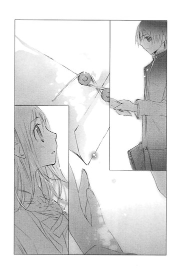

| [野村美月] 文学少女シリーズ12 | |
| 野村美月 | |
| (2015) | |
|
〝文学少女〟見習いの、傷心。
野村美月
|
底本データ
一頁17行 一行39文字 段組１段
太字は底本ではゴシック体太字。
「 ◇ ◇ ◇」は底本では１２字下げて「◇ ◇ ◇」。
「君が大嫌いだ」──心葉にそう告げられてしまった菜乃。その日以来、心葉は本心を見せず、取り繕った笑みで菜乃に接するようになる。そんなのは嫌だ！と夏休み、菜乃はある行動に出るが......。傷心の夏が過ぎ、秋。文化祭に向け賑わう校内で、菜乃はまた新たな出逢いを体験する。不吉な影を背負った少女。彼女に関わる中で、菜乃は彼女の、そして心葉やななせ、皆が様々に心に抱える闇と光を見つめることになる。もうひとつの〝文学少女〟の物語、第２弾!!

目次
プロローグ
自己紹介代わりの前書き～あの日集めた、たくさんに秘密──
あなたの心にふれた、短い物語
〝文学少女〟見習いの、傷心。──
〝文学少女〟見習いの、怪物。──
一章 文化祭に出たいです～。──
二章 鴉は鳴き、怪物は訪れる──
三章 愛は憎しみに裏返る──
四章 逢いたい、逢えない──
五章 プロメテウスの罪──
六章 怪物の声を聞くもの──
七章 幕が開くまでに──
エピローグ
翼の名残──
ある日の千愛──
〝文学少女〟見習いの、傷心。
野村美月
プロローグ 自己紹介代わりの前書き
～あの日集めた、たくさんの秘密
僕には秘密がある。美しい秘密がある──はにかみ屋の少女に、そっとささやいた少年がいた。
十六歳のわたしも、浮き立つ胸におさまりきらないほどの、たくさんの秘密を抱えていた。それはどれも砂糖菓子のように甘く繊細で、ガラスのキューブのように透明で、ひとつひとつが、きらきらと輝いていた。
たとえばあの夏の夜、わたしたちを包み込んでいた、あたたかな闇。一番大好きな人がくれた、泣きたいほどに大切な言葉。
たとえばあの秋の終わり、朝のシンと冷たい空気の中、照れくさそうに微笑んだ彼。わたしの髪をくしゃりと撫でる、優しい手。
それから、本に埋もれた小さな部屋に流れる賢そうな声。かたかたとパソコンのキィを叩く音。
ときどきこちらを見て呆れたり、溜息をついたり、ひどく優しい目をしたり、厳しい顔をしたり、切なそうに眉をひそめたりしたことも全部──。
虹色に輝くひとつひとつを、大事に大事に拾い集めて、胸の奥にある宝石箱にしまっておいて、ときどき取り出しては眺め、頬や唇をほころばせた。
あの夏、そしてあの秋の終わり。
毎日毎日、秘密が生まれて、十六歳のわたしは、その秘密に戸惑ったり、ときめいたり、傷ついたり悩んだり、浮かれたり、落ち込んだり──息が止まるほど幸せだったりしていた。
あなたの心にふれた、短い物語
〝文学少女〟見習いの、傷心。
──きみが、大嫌いだ。
冷たい目で告げられたのは、六月の晴れた日。
あれから一月以上も、心葉先輩は機嫌が良い。
放課後、わたしが三階の西の片隅にある文芸部を訪れると、ノートパソコンのキィを叩く手を止めて、やわらかく微笑む。
「こんにちは、日坂さん」
夏の光があふれる窓を背に、華奢な首筋をすっきりとのばし、おだやかに目を細める上級生に、わたしは居心地の悪い気分で、もごもご挨拶を返す。すると優しい声で、
「期末試験はどうだった？ ぼくが教えた物理のヤマ、あってたかな？」
と尋ねるのだった。
「あ、はい。心葉先輩の予言は、大当たりでした。おかげで赤点は免れそうです」
「いやだな、予言だなんて大げさだよ。けど役に立ったのならよかった。佐野先生の出題傾向はだいたいわかるから、いつでも訊いて。ぼくはきみの先輩なんだから、遠慮することないよ」
「......ありがとうございます」
「今日は宿題を先にする？ それとも三題噺を書く？」
「......三題噺で」
「じゃあ、お題は〝跳び箱〟〝ハイヒール〟〝あさがお〟にしよう。時間は五十分でいいね？はい、スタート」
銀色のストップウォッチを細い指でかちりと鳴らし、また小説を書きはじめる。
優しい言葉。
おだやかな眼差し。
一ヶ月以上も、心葉先輩は、ず────っと、こんな感じだった。
わたしがなにを言っても、なにをしても、怒ったり呆れたり無視したりしない。
休み時間に廊下で会ったときも、
「次は体育かい、日坂さん？ 今日は暑いから、熱中症にならないようにね」
と、周りの友達が、ぼーっとしてしまうような涼しげな笑顔で話しかけてくれる。
「うわっ！ いいな、菜乃ちー！ 井上先輩とすっかり仲良しなんだね！井上先輩って、やっぱりすっっっごく優しそう！」
「うんうん、おとなっぽくて素敵だよね！あたしも文芸部、入ればよかったよー！」
瞳ちゃん以外の友達は、みんなうらやましがっている。わたしはそのたび、なんて答えたらいいのかわからなくて、喉で声が絡まってしまった。
だって、全然、心葉先輩と仲良くなんかなっていない。
「不自然だと思うんです」
おひさま色のシャーペンで、原稿用紙のマスをこりこり埋めながらつぶやくと、心葉先輩もキィを叩きながら、優しい声で尋ねる。
「なにが？」
「いつでもどこでも、にこにこしている人って、不自然じゃないですか」
「そうかな。芥川くんとか普段から温厚だよ。顔をひっかかれても、笑っているし」
「猫にひっかかれてマジ切れする高三男子も、どうかと思います。そうじゃなくて、芥川先輩のことは脇に寄せといて、問題は心葉先輩です」
「ぼく？」
「そんなににこにこしすぎて、おなかから暗黒汁とか垂れてきませんか？」
「暗黒汁って、見たことないけど」
「二十四時間微笑みすぎて、顔が神経痛になったりは？」
「眠っているときは、微笑んでないから大丈夫」
「実はストレスで抜け毛に悩んでたりとか？」
「いや、特に」
かたかたとキィを鳴らしながら、軽やかに答える。
わたしは机の向かい側から、心葉先輩をぐっと見上げた。
「わたし、うるさくないですか？」
心葉先輩はパソコンの画面を見ながら、ゆったりと微笑んでいる。
「いいや、もう慣れたよ」
「ぅぅ、わたしのこと、大嫌いって言いましたよねっ」
「え？ そうだっけ？」
言いました！ この耳で聞きました！ という叫びを、わたしは飲み込んだ。
またとぼけている。
あの〝告白〟の翌日もそうだった。
──日坂菜乃さん、ぼくはきみが、大嫌いだ。
一月以上前、学校の屋上で心葉先輩にそう言われたことは、幼なじみの瞳ちゃんにも話していない。あのとき心葉先輩は氷みたいに冷ややかな目をしていて、わたしは頭の中が真っ白になってしまった。
そりゃ、これまでさんざん、迷惑だとか、部活まだやめないの？とか、近づかないでくれ、とか言われたけど。乙女の憧れの告白スポットで、ああもはっきりきっぱり「大嫌いだ」と突き放されたことに茫────然とし、目をむいたまま突っ立っているわたしに背中を向けて、心葉先輩は無情に立ち去ったのだった。
嫌いって言われた......。心葉先輩に、大嫌いって──。
その日の夕飯は、お父さんの出張土産で蟹鍋だったけれど、わたしは頭の中がぐるぐる回って、胃もきりきりして、蟹の身をほじくり返すどころじゃなかった。
翌日の放課後も、心葉先輩に会うのが怖くて、部室のドアの前で方向音痴のロバみたいにうろうろしてしまったほどだ。
ええい、今さら「大嫌い」って言われたからってメゲるもんか。心葉先輩にキスしたときだって、変質者を見るみたいな目で見られて嫌われてたじゃないか。あのあと二週間、まともに口をきいてくれなかったことに比べれば、「嫌い」と意思表示してくれるだけマシだ。そう自分を奮い立たせ、
「こんにちは！」
明るくドアを開けたら、
「こんにちは、日坂さん」
やわらかな微笑みが返ってきて、またまた茫然としてしまった。
これって、夢？
心葉先輩が、一日駅長に就任したアイドルのように、にこにこしている！
「なに頬をつねってるの？ 日坂さん。立っていないで座ったら？宿題があるなら見てあげるよ」
やっぱり夢！ いいや、ＳＦ!? パラドックス!?頭の中に銀河が出現するほど混乱するわたしに、心葉先輩はそのあとも笑顔で話しかけてくれた。
「あの、わたし昨日、大嫌いと言われたんですけど」
「誰に？ ひどいこと言うね。気にしちゃダメだよ、日坂さん」
親身に返されて、やっぱりＳＦ！ と、おののいたけど、そんなことあるはずない。
心葉先輩が、そらっとぼけているのだ！ そうして、翳りのない完璧な笑顔で、わたしとの間にバリケードをはりめぐらした。わたしを、拒絶するために。
それに気づいて、頭をブン殴られたような気になった。
もう、わたしに本音は見せない。あの屋上で、心葉先輩はそう決めたのだ。
それが、今もずっと続いている。
わたしは、おひさま色のシャーペンを握りしめ、頬をふくらませた。
「心葉先輩、愛しています」
「ありがとう」
「今晩、つきあってください」
「ごめん、門限が厳しいんだ」
「では、今ここで、服を脱ぎますっ」
「なら、ぼくは席をはずすよ。あ、暑いなら、図書室は冷房がきいてて涼しいよ」
攻撃をことごとくかわされて、わたしは唸った。胸が火で炙られているみたいに苦しい。焦れったくて、切なくて、叫びたくなる。
もう一ヶ月以上、一度も心葉先輩に、嫌みもお小言ももらっていない。その場かぎりの取り繕った笑みや優しい言葉が、こんなに辛くて胸がじくじく痛むなんて。
こんなひどい拒絶ってない。このままじゃ心葉先輩との距離は開いてゆく一方だ。
夏休みになったら、しばらく会えないし、二学期に登校したら、「あれ？きみ誰？入部希望者？」なんて笑顔で言われかねない！
不吉な想像に、頭がカァッと熱くなる。
なんとかしなくちゃ──。
わたしは猛然と三題噺を書き上げた。
「できました」
「すごい、五枚も書いたんだ」
「わたしの気持ちです」
心葉先輩が両手で受け取って、読みはじめる。
「ふぅん、跳び箱くんとハイヒールちゃんが、喧嘩をしてるんだね。跳び箱くんがハイヒールちゃんを無視するので、ハイヒールちゃんが跳び箱くんを、がしがし蹴って、あはは、乱暴だねー、まるで納豆にカレーの粉と唐辛子を練り込んで、リングイネにかけたみたいな素敵な怪作だね。朝顔さんが仲裁に現れるわけだ、『さぁ、諍いはそれくらいにして、合宿へ行きましょう。合宿へ行けば、みんなハッピーよ』──」
「合宿しましょう！ 心葉先輩！」
わたしは机に両手をついて身を乗り出し、訴えた。
「二人の仲を修復するためには、それしかありません。星空の下ですこやかに、心と心を寄せあって語りあい、手を繋いで朝日を見上げるんです。青春のメモリアルです」
心葉先輩は、スマイル〇円のファーストフード店の人みたいな笑顔で答えた。
「ごめん、無理」
「何故ですか～！ 夏は合宿ですよ！バレー部も野球部もオーケストラ部も、合宿をするのに！囲碁部でさえ、お寺で二泊三日の合宿をすると聞いてます。文芸部も囲碁部に後れをとってはなりません。二日──いいえ四日──いっそ半月くらい」
「囲碁部は都大会の常連だよ。それに合宿は顧問の付き添いが必要だし」
「顧問、いますよね？ 文芸部にも！ ご挨拶したことないですけど」
「うん。古典の鷺沼先生。夏休みは杜甫の詩を訪ねて中国を徒歩で旅行するんだって。合宿につきあう余裕ないと思う」
「そんなぁ～！」
「それに、ぼくらは修復なんて必要ないくらいうまくいっているし、ぼくはこれでも受験生だし。だから、ごめんね」
澄んだ笑顔で、ばっさり切って捨てた。
「心葉先輩の意地悪～～～～～～！腹黒陰険仮面～～～～～～！」
部活終了後、中庭の木蓮の下で、わたしはわめいていた。
前みたいに怒ったり呆れたりされるほうが、ずぅっと、ずぅぅっと、マシだ。くにゃくにゃしたこんにゃくに向かって張り手を繰り出しているみたいだ。
「卒業まで心葉先輩の嘘っぽい笑顔しか見られないなんて、耐えられないよ～！」
はじめて見つめあった思い出の木蓮の下で、幹に抱きつき、めそめそしていたとき、
「なにやってんの？ 心葉くんを押し倒す練習？」
後ろで、からかうような声がした。
「はぅ！ 麻貴先輩......！」
走って逃げようとしたら、髪が木の枝に引っかかって涙目になる。
「あらあら、そんなに慌てなくてもいいのに」
細くて頼りない猫っ毛は、すぐに絡まる。不自然な体勢で髪をほどこうとするわたしに、卒業生で学園の理事長の孫娘の姫倉麻貴先輩が、艶やかな笑みを寄こす。
波打つ長い髪も、くっきりした眉も肉感的な唇も、すべてが華やかで、ノースリーブのチュニックとパンツに包まれた体は、日本人離れしたプロポーションだ。
うぅ、妊娠中って本当なのかな？とてもそんな風に見えないけど。そう言われてみると、ほんのちょっとウエスト周りがふっくらしてきたような......。あぁ、髪、まだほどけないっ。
「麻貴先輩と二人きりになっちゃいけないって、心葉先輩にきつく言われてるんです。あ、やっ、さわらないでください」
「そんな寂しいこと言わずに、お茶でもしない？心葉くんのことで悩み事があるなら相談に乗るわよ」
麻貴先輩が枝に絡まる髪に、妖しくふれる。
「そそそうやって甘いことを言って、密室に連れ込んでわたしの服をはぎとって、エッチな絵を描こうとしても無駄です。誘惑には乗りません」
「ヌードは芸術よ。エッチな絵じゃないわ。おたく程度の体じゃエロく描くにも限界があるし。あ、あたしは好きよ、そういう平坦な体型。ま、それはともかく、お茶の他に、フルーツサンドイッチもつけるから、いらっしゃい。今の季節はメロンやマンゴーがとろけるようよ」
髪がするりとほどける。平坦な体型という言葉にかちんとしたわたしは、次の瞬間、身を乗り出していた。
「え、メロン！」
「今どき、メロンぐらいでつられる、平成生まれの女子がいるとは思わなかったわ」
音楽ホールのアトリエで、生クリームたっぷりのフルーツサンドをパクつくわたしを、麻貴先輩は複雑そうな顔で眺めている。
「メロンは果物の王様なんです。それに悲しいときって、甘いものが欲しくなるじゃないですか」
「悲しみの原因は心葉くんよね？ おたく、それ以外悩みなさそうだし」
「微妙に引っかかる言い回しです」
「気にしないで。あたしは率直なの」
ソファーに足を組んだまま、けろりと言う。
けど、逆に話しやすくなって、わたしは心葉先輩が笑顔で武装し、本心を見せてくれないことを打ち明けた。
「ふぅん、心葉くんって意外と頑固だったりするから、その状況は、おたくにはまずいかもしれないわね」
「だから、わたしは合宿で一発逆転を狙ってたんです」
「なるほどねー、けど、部員が男女一組じゃ、顧問が同行しても合宿は認められないんじゃないかしら」
「なら今から部員を増やして──」
「こら、落ち着きなさい」
部屋を飛び出そうとするわたしを呼び止め、麻貴先輩が企みありげにニヤリとした。
「いいわ、合宿しましょう。なかなか楽しめそうだし、場所はあたしが手配するわ」
半月後。
夏休みのまっただ中。手に旅行鞄をさげたわたしは、厳めしい門の向こうにそびえる古い建物を見上げていた。
うわ......ぁ、お屋敷だぁ。
北陸にある姫倉家の別荘は、ホラー映画に出てきそうな佇まいで、周囲に黒々とした木が密集し、ところどころひび割れた壁には、うねうねと蔦が這っている。
それが、沈む夕日を浴びて、血を浴びたみたいな色に染まっている。
ここで合宿するのかぁ。麻貴先輩は「近くに湖もあるロマンチックな洋館よ」って言ってたけど、う────ん......。
ベルがどこにあるのかわからなくて、
「すみませーん」
と声を張り上げたら、髪を頭の両脇で結んだ小さい女の子が出てきた。着物の上に胸あてつきのエプロンをかけて、頭にフリルのついたカチューシャをつけている。
え？ 小学生？
口をへの字に結んで不機嫌そうな顔をしたその子が、門を開けて、
「どうぞ」
そっけなく中へうながす。
「こんにちは、わたし日坂菜乃と言って、麻貴先輩の後輩で」
「......聞いてます」
わたしの言葉をさえぎり、ぶっきらぼうに答える。小さいのに妙に迫力がある。ひょっとして、お......怒ってる？怒られるようなこと、してないと思うけど。
それに、わたしはお嬢様の知り合いで、お客様で──てゆーか、この子メイドさん？小学四、五年生に見えるけど、小学生でメイドとして働いてるの？
そんなことを気にしながら、後についてゆく。
重たそうなドアが開くと、赤い絨毯を敷いた階段が見えた。天井が高くて玄関も広々としているのに、なんだか薄暗い。
「いらっしゃい、菜乃」
髪を無造作に結んでエプロンをかけた麻貴先輩が現れた。こちらは、ふりふりのエプロンではなく、装飾もないシンプルなやつだ。きっと絵を描いていたのだろう。
「お世話になります。あの、心葉先輩は？」
一瞬、メイドの女の子の肩が、ぴくり......と揺れたような気がした。
麻貴先輩が、にやにやしながら答える。
「心葉くんは、まだ来てないわ。さっき電報を打っておいたから、明日には来るんじゃないかしら。おたくのこと心配していれば、だけど」
「うっ」
来なかったらどうしよう......。
「この子は紗代。夏休みの間、うちでバイトしてるの。屋敷の中でわからないことがあったら、この子に聞いて。紗代、お客様をお部屋に案内してあげて」
「......こちらへどうぞ」
女の子が冷たくつぶやく。
わたしはまたその子にくっついて、階段をのぼっていった。
家の中で靴を履いたままなんて、外国みたいだよー。
「紗代ちゃん、よろしくね」
「......」
あれ？ 黙ってる。聞こえなかったのかな？わたしは明るく尋ねた。
「ねぇ、紗代ちゃんって、いくつ？」
「......十三ですが、なにか」
「小学生じゃなかったの!?」
思わず声に出したとたん、それまで能面みたいに冷ややかだったのが、急に表情が崩れ、真っ赤な顔でキッと睨まれた。
「中学生です！ 二年生ですっ！ 勝手に小学生とか決めつけないでください！」
「わわっ、ごめんなさい」
へこへこ頭を下げる。
「で、でも、わたしもよく高校生に見えない～って、言われるから」
「そうですね、全然高校生らしく見えませんね。中学一年生くらいかと思いました」
それって、紗代ちゃんの後輩ってこと......？それはないと思うんだけど......。
しゅんとするわたしに、紗代ちゃんが、
「この部屋を使ってください」
と、無造作にドアを開ける。
中には天蓋つきのお姫様ベッドがあった。窓にかかっているカーテンも、どっしりして、高級感がある。
「ありがとう」
「じゃあ、あたしは仕事に戻りますから、用があったら呼んでください」
つっけんどんに告げたあと、ふっと無表情になり、低い声で言った。
「この部屋、出るらしいですから、気をつけたほうがいいですよ」
出るって、なにが？ と尋ねようとしたときには、さっさと出ていってしまった。
わたし、やっぱり嫌われているような気がする......。どうしてかな。う──ん。
その晩は疲れていたので、ぐっすり眠り、目を覚ましたのは翌日の昼時だった。
「心葉先輩、来ました!?」
「まだよ」
「はぅぅ、そうですか」
紗代ちゃんが後ろを通りすぎながら、
「朝食、いらないなら前の日に言ってくださいね、材料がもったいないですから」
と、冷たく言う。
「ご、ごめんなさい」
コールドチキンのサンドイッチと、エンドウ豆のポタージュで昼食をすませたあと、麻貴先輩は絵を描くため、部屋にこもってしまった。
することもなくて、お屋敷の中をふらふらと散策する。
いくつ部屋があるんだろう。お掃除が大変そう。光熱費もかかるんだろうなー。
そんなセコいことを考えながら、一階の隅にある部屋の前を通りかかったときだ。
ドアが少し開いていて、なにげなくのぞいたら、壁一面に本が並んでいる光景が目に映った。棚が天井まで届いていて、古そうな本で、びっしり埋まっている。壁が本でできているみたいだ。
「うわっ......なに、この部屋」
もっとよく見ようと、身を乗り出したときだ。
「その部屋に入っちゃダメです！」
どこからか紗代ちゃんがすっ飛んできて、ドアをばたんと閉めて、わたしを睨んだ。
「ごめんなさい、ドアが開いてたから」
紗代ちゃんは唇を尖らせ、子供っぽい表情で、じぃっとわたしを見上げている。
「えっと、すごい本だね」
「あなたには関係ないです。ここは特別な部屋なんですから、あなたは入らないでください」
「う、うん」
すごい迫力で念押しされ、たじたじとなり、その場から離れた。
なんだか紗代ちゃんに見張られているようで落ち着かなくて、思いきって外へ出てみることにした。それに、お屋敷の中にいると、心葉先輩が来てくれなかったらどうしようと考えてしまい不安になるので、外にいたほうが気がまぎれるとも思ったのだ。
さっぱりした絹のワンピースに、麦藁帽子という格好で、舗装されていない長い小道を歩いてゆく。
昨日こちらへ着いたときは、やっぱり北陸は涼しいなぁと思ったけど、地面に自分の影がくっきり落ちる道を進んでゆくと、汗が吹き出てくる。
道の両側は木が密集している。ちょっと休憩しようと、そちらへ入ると、とたんに体から熱が引き、すーっと涼しくなった。風がさやさやと木の葉や草を揺らしている。
ああ、気持ちいいなぁ。
サンダルで踏みしめる土が、しめっていてやわらかい。濃い緑の香りがする。
ちょっと探索してみようかなと、そのまま奥へ進んでゆく。
表面がけば立った太い幹や、蛇のように垂れ下がる蔦や、蝉の鳴き声に感嘆しながらどんどん歩いていったら、ふいに視界が開けた。
短い草や苔の生えた地面の先に、きらきらと輝くものがある。
水面に光が反射して、きらめいているのだ。
麻貴先輩が言ってた湖って、ひょっとしてこれ！湖というにはやや小さめで、池と呼ぶほうが正しい気もするけれど、近づいて中をのぞくと、澄んだ水に木の葉が映り緑がかって見えて、溜息がこぼれた。
すごく綺麗で、吸い込まれそうで──でもどこか寂しい。
心葉先輩みたい......。
おだやかで澄んでいるけれど、ときどき、たまらなく寂しそうな目をする。
そんな顔を見てしまうと、いつも胸の奥が強くしめつけられるような気がした。
それはきっと、最初に見た泣き顔を思い出してしまうから。
──......先輩......っ！
──......先輩ッッ！
失われた魂の半分を呼ぶような痛切な叫びが、耳の奥によみがえってしまうから。
もし願いごとが叶うなら、心葉先輩の哀しみを取り払える人に、わたしはなりたい。
心葉先輩を抱きしめて、慰めることを、許される人になりたい。
ああ、なのに現実には、わたしの気持ちは全て鉄壁の笑顔に跳ね返されて、心葉先輩の前に立ちはだかる壁の向こうに、足を踏み出すことも手を伸ばして触れることもできずにいる。透明な水のような瞳を切ない気持ちで眺めるだけで、その奥にある真実に、ふれられずにいる。
朱里さんのことを二人で調べていたときは、心が少しだけ重なっていたような気がしたんだけどな......。
膝を折って、池をじぃっと見ていたら、胸にひたひたと寂しさが込み上げて、泣きたくなり、わたしは「えい！」と立ち上がった。
「暗くなるのはナシ！ こんなロマンチックな場所で心葉先輩と合宿できるんだから、元気出さなきゃ」
そうだ、今のうちに、心葉先輩とデートできそうな場所をチェックしておこう。
高校一年生の夏は一度きりなんだから！ 悔いが残らないよう過ごさなきゃ！
再び小道に戻り、夏の日射しも跳ね返す勢いで進んでゆく。途中で麦藁帽子が風に飛ばされて、髪もふわふわと乱れて慌ててたら、自転車で通りかかった地元の子が拾ってくれた。
「ひよこ頭の彼女、観光？」
気さくな眼鏡の彼に、もう少し道を進むと小さな繁華街があることを教えてもらう。そこへ出ると、お土産屋さんがたくさん並んでいて、観光客らしいおじいさんおばあさんや、若いカップルなんかが、歩いていた。
あ、本屋さんもある。
普段は本屋さんより、断然クレープ屋さんやラーメン屋さんなのだけど、知らない町で目についた小さな本屋さんは、とても懐かしくて、友達に会ったみたいに、胸がほっこりした。
中へ入ってみる。
「えっと、ゲーテ、ヘッセ、ハイネ。詩人、だよね？......ホフマン......フェルスター......フーケ......は知らないなぁ」
棚に並んだ背表紙を眺めて、歩いてゆく。
どれか買って帰ろうかなぁ......。どれにしよう。
ひとつのタイトルが、目を引いた。
『みずうみ』
作者はシュトルム。知らない作家だけど、文庫本ですごく薄い。めくってみると、短編集みたいだった。表題になっている『みずうみ』は、百ページもない短い話だ。
わたしには、ちょうどいいかもしれない。
その本を購入して、お屋敷へ戻った。
「心葉先輩、来ました!?」
「まだみたいね」
がっくりと肩を落として、二階の部屋に向かう。
はーっ、やっぱりわたしなんて、心葉先輩にはどうでもいいのかなぁ。
窓際の揺り椅子に座り、買ってきたばかりの本をめくる。
簡潔で読みやすい文章だった。風景の描写がとっても綺麗で、目の前に夏の草原や、花の咲き乱れる森が浮かぶようだ。
そこには、賢そうな目をした男の子と、内気な巻き毛の女の子がいて、二人で楽しそうに遊んでいる。
男の子の名前は、ラインハルト。
女の子の名前は、エリーザベト。
幼なじみとして育った二人は大の仲良しで、いつも一緒にいた。
ラインハルトは、五つ年下のエリーザベトを宝物のように守っていて、エリーザベトもラインハルトを慕っている。
ラインハルトが十七歳になったとき、上の学校に入るために故郷を離れなければならなくなったけれど、二人の気持ちは変わらなかった。
復活祭に帰省したラインハルトは、エリーザベトに、これから二年の間、自分は君に会えないけれど、君は変わらず僕を愛してくれるかと尋ねる。
エリーザベトはうなずき、ラインハルトは、自分の気持ちは今も昔も変わりはしないから、君はそれを固く信じてくれと告げるのだ。
そうして、目を輝かせ、嬉しそうに言う。
『僕には秘密がある。美しい秘密がある』
『二年たって僕が帰ってきたら、君にそれを話そうね』
ロマンチックなシーンに、頬がほてり、胸が高鳴った。
ああ、いいなぁ。
わたしも、こんな風に心葉先輩に告白されてみたい！真剣な眼差しでじぃっと見つめられて、「ぼくの気持ちは変わらないよ、きみも二年後も変わらずにぼくを愛してくれるかい？」と言われてみたい。
そうしたら、百回だって誓うのに。
読みかけの本を抱きしめて、溜息をつく。開いた窓から、夕暮れのしっとりした風が流れてくる。外はあでやかな茜色に染まっていて、鉄の門が赤く輝いている。その向こうの木々も小道も、夕暮れの中に沈みかけていて......。
わたしは、息を止めた。
茜色の長い小道を、お屋敷に向かってやってくる人がいる。
手に重そうな鞄をさげて、ゆっくり近づいてくる。
心葉先輩だ！
わたしは窓辺に本を置き、揺り椅子から立ち上がった。
勢いのついた椅子が、大きく揺れる。
心葉先輩だ！ 心葉先輩だ！ 心葉先輩が来てくれた！
夢中でドアを開け、階段を駆けおりる。途中で、向こうからやってきた紗代ちゃんとぶつかり、
「ごめん！」
と謝って、玄関を駆け抜ける。
そのまま真っ赤に燃える庭をつっきり、門まで一直線に走ってゆく。
「心葉せんぱ──────い！」
門の向こう側に立っている心葉先輩に向かって、大声で呼びかける。
ワンピースの裾が、風をはらんで広がる。
心葉先輩が、目を見開く。
驚いているみたいだ。
その間、わたしの足はますます加速し、胸は爆発しそうに躍り狂い、顔は喜びの笑みでいっぱいになった。
両手で門の端をつかんで横に引っ張って開け、心葉先輩に抱きつく。心葉先輩がますます目を見張る。
「来てくださったんですね～～～～！ 心葉先輩！ありがとうございます！すごく、すごく、嬉しいです！」
心葉先輩は、どこかぼぉっとしているみたいだった。まるで心がここではない別の場所にいるみたいに。
それに気づいて心配になったとき、心葉先輩が急にハッとし、それからひどく険しい顔になった。
わたしの肩をつかんで、ぐいっと押しやる。
その仕草に押し殺した怒りを感じて、わたしはとたんに心臓が冷え上がり、足がすくんだ。
どうしよう、本気で怒ってる。
「あ......あの」
「ぼくに電報を打ったのは、きみ？」
声も低い。
「いえ、麻貴先輩が。でもっ、わたしが心葉先輩と合宿をしたいって言ったから、麻貴先輩が協力してくださって。あの、ごめんなさいっ」
心葉先輩が、目をそらす。
「いいよ、麻貴先輩が絡んでるなら抵抗しても無駄だから。無視したら、もっとえげつないことしかねない」
そのとき、後ろで声がした。
「えらい言われようね。『大事な後輩をあずかっているから、一週間分の着替えを持って訪ねて来てちょうだい』って、電報しただけなのに」
片手を腰にあてた麻貴先輩が、妖艶な笑みを浮かべて立っている。その後ろで、何故か紗代ちゃんが眉をつり上げて、ふるふる震えていた。
「あなたと議論するつもりはありません」
心葉先輩がそっけなく言う。
「そう、賢明ね」
「井上さんっ、お久しぶりですっ」
突然紗代ちゃんが、緊張して裏返った声で言った。
え？ 心葉先輩と紗代ちゃん、知り合いなの？
心葉先輩が表情をやわらげる。
「大きくなったね、魚谷さん。身長、一センチ伸びたって、葉書に書いてたね。またお世話になるからよろしく」
「いえ、こちらこそ」
紗代ちゃんは、嬉しそうに頬を染めている。葉書のやりとりするほど仲良しなの！
「井上さんのお部屋、二回もお掃除してお布団も干しておいたんです。あ、荷物お持ちします」
「ありがとう。でも自分で持つからいいよ」
「そ......ですか」
紗代ちゃんが頬をほころばせて、もじもじする。なんだか意味ありげな雰囲気で、心葉先輩は紗代ちゃんと肩を並べて、建物の中に入っていってしまった。
「まっ、愛想笑いをしなかっただけよかったんじゃない？現時点で、うちのメイドにも負けてるみたいだけど」
麻貴先輩が、おかしそうに言った。
そのあと、心葉先輩は、わたしと一切口をきいてくれなかった。
夕食の席で、わたしが話しかけてもガン無視で、夕飯のあとは紗代ちゃんとばかりしゃべっていて、わたしのほうを見ようともしない。
やっぱり強引に呼びつけたのは、よくなかったのかな。
すごすごと自分の部屋に引き上げ、読みかけの『みずうみ』を読む。
そしたら、ラインハルトが研究に没頭している間に、エリーザベトは別の男性と結婚することになり、もうじき結婚式だと知らせる手紙がラインハルトの母親から届いて、がぁぁぁんとした。
ラインハルトは、エリーザベトと結ばれるんじゃなかったの!?
ううん、きっと『卒業』みたいに、花嫁を教会から連れ去るに違いない。そっちのほうがドラマチックだものと、息をつめてページをめくったら、あっという間に数年経過して、エリーザベトは裕福な家庭の若奥さんとして、幸せに暮らしていた。
その家を、ラインハルトはエリーザベトへの想いを秘めたまま訪問する。
エリーザベトも、ラインハルトに気持ちを残している様子なのに、立場が違ってしまった二人は、もう愛を語りあうことはできない。
ラインハルトは、いつかエリーザベトに打ち明けると約束した秘密を胸に抱いたまま、別れを告げるのだ。
『わたしにはわかっていますわ。嘘はおっしゃらないでください。あなたはもう、二度といらっしゃらないのね』
哀しそうに問いかけるエリーザベトに、ラインハルトが答える。
『ええ、もう伺いません』
そうして、背中を向けて出てゆくのよ～～～～～～。
「うええええ、どうしてぇ！」
ベッドでうつぶせでページをめくっていたわたしの喉から、悲痛な声が漏れた。
どうして？ どうして、行っちゃうのぉ！ 戻ってきてよ～！エリーザベトは、きっとまだ、あなたのことが好きなんだよ！あなただって、そうでしょう！
なのになんで、そこであっさり引いちゃうの？
エリーザベトも、ラインハルトを追いかけたらいいのに。
そもそもなんで、エリーザベトはラインハルトを待たなかったの？
他の人と結婚しちゃったの？
二年待ってほしいって約束を、エリーザベトは忘れちゃったの？ラインハルトのこと今も意識してるのが丸わかりなのに、どうしてラインハルトを信じられなかったの？
せめて結婚を了承する前に、ラインハルトに手紙で相談するとかできなかったの？
あああああ、今からでもラインハルトを追いかけて！
『わたしにはわかっていますわ』なんて、言ってる場合じゃないよーっ！わたしには、なんでそこであきらめちゃうのか、わからないよーっ！
ラインハルトも切なそうにエリーザベトを見ているのに。今、別れたら、二度と会えないんだよ！美しい思い出なんかにしないで追いかけて！追いかけてよーっ！
「あぅぅぅぅ、もやもやするよぉぉぉぉ」
本を閉じ、枕に突っ伏す。
ハッピーエンドのラブストーリーを読んで元気をもらおうと思ったのに、ますます落ち込んでしまった。
その晩、夢の中に出てきたラインハルトは心葉先輩にそっくりで、湖の向こう岸にいるエリーザベトを、切なそうな眼差しで見つめていた。
エリーザベトは背中を向けていて、顔が見えない。
そうして何故かわたしが、もう一人のエリーザベトで、別のエリーザベトを見つめる心葉先輩を、木の後ろから張り裂けそうな気持ちで見ていたのだった。
目覚めると、また朝食の時間を大幅に過ぎていた。
うわぁ、どうしよう、紗代ちゃんに怒られる～。
寝癖のついた頭で、びくびくしながらリビングへ行ったら、麻貴先輩が一人で紅茶を飲んでいた。
「おはよう。今、起きたの？」
「す、すみません」
「やーね、学校の寮じゃないんだから、何時に寝起きしてもかまわないのよ」
そう言って、家政婦さんにわたしの分の朝食を頼んでくれた。
すぐに、あたためたパンとオムレツと、ヨーグルトのサラダが運ばれてくる。
「ありがとうございます」
「いいのよ、それよりせっかく心葉くんと一つ屋根の下なのに、ずいぶんおとなしいのね。夜這いでもするかと、期待してたのに」
わたしは食べかけのクロワッサンを、喉につまらせそうになった。
「──っ、そんなことしませんよ！！！」
「そう？ 心葉くんの部屋は、おたくの部屋の二つ先よ」
「だから、しません！」
「合宿で一発逆転するんじゃなかったの？」
「それとこれとは違います。それにもう実力行使はしませんって誓ったし」
「あら、したの？ 実力行使？ あたしの知らない間に心葉くんは大人になっていたのね」
「ちちちち違います！ 実力行使というのは、その」
焦るわたしを、麻貴先輩は悪人の笑みを浮かべて見ている。
う......もしかして、遊ばれてる？
わたしはおずおずと訊いた。
「麻貴先輩は、天野先輩の心の友だったんですよね？」
麻貴先輩が笑みくずれる。
「遠子からそんな風に言われたら、嬉しくて抱きしめちゃうわね、きっと」
「とにかく、お友達だったわけですよね？ なのに、合宿のために別荘を貸してくれたり、わたしを心葉先輩にけしかけたりするのは何故ですか？わたしが心葉先輩とうまくいっちゃったら、天野先輩は哀しむんじゃないですか？」
心葉先輩のために、一人で遠くへ去っていった天野先輩。
〝文学少女〟と呼ばれたその人を、心葉先輩は今も想い続けている。
心葉先輩が小説を書くのも、天野先輩との約束だから──。
「あたしは心葉くんが、誰とくっついたっていいのよ」
力のある瞳に、やわらかな光がにじみ、急に優しい顔になる。
「ただ、心葉くんが、遠子がいなくて一人きりでおたおたして、あちこちぶつかったり、すっ転んだり、穴にハマったり、すべり落ちたりしながら、自分で立ち上がって進んでゆくのを見ているのが、楽しいだけ」
「それ、ちょっとひどいかも」
「ふふ、そうやって苦難を乗り越えて、極上の男に育ってくれたらいいなぁって」
「心葉先輩は、今でも素敵です」
「う～ん、あたしから見るとまだまだね。自分の気持ちをもてあましてるところとか」
麻貴先輩が意味ありげに、ゆっくりと言う。
「変わってしまうことを、怖がってるところとか」
口をつぐみ、気持ちの読めない曖昧な笑みを浮かべる。
「心葉先輩は、なにか怖がってるんですか？」
尋ねると、するりとかわした。
「さぁて。それは本人に直接聞いてみるといいわ。まぁ、そんなわけで、あたしはおたくを応援してるのよ。心葉くんにとって、おたくは〝苦難〟そのものでしょうからね」
「似たようなこと、心葉先輩にも言われました。あんまりです～」
「今回の件は、貸し一つよ。いつか体で返してね」
「えええっ、そんなの聞いてません、詐欺ですよ」
「あら、あたしはタダではなにもしないって、言わなかったかしら」
ま、頑張って、とウインクして、麻貴先輩は席を立った。
わたしは、麻貴先輩の言葉をしばらく考えていた。
心葉先輩が、怖がっているものって......？
よくわからなくて、食べ終えた食器を台所に下げに行くと、紗代ちゃんがいた。
目と目がばっちりあい、つい後ずさる。
紗代ちゃんが、わたしを睨む。わたしは愛想笑いした。
うぅぅ、わたしのほうが年上なのに。
「えーと、ごめんね、食器、わたしが洗うね」
「それは、あたしの仕事です。余計なことしないでください」
そう言って、わたしの手から食器を奪い、がちゃがちゃ音を立てて洗いはじめる。
「あの、昨日から気になってたんだけど、わたし、紗代ちゃんになにかした？紗代ちゃん、わたしのこと怒ってるみたいだから」
すると紗代ちゃんは泡のついたスポンジを握ったまま、キッと振り返った。
「怒ってません、目障りなだけです」
「な、なんで！」
ここまできっぱり断言されると思わなかったので、のけぞる。
「お嬢様から、あなたが井上さんに無謀な片想いをしていて、真面目な井上さんを誘惑するつもりで別荘に呼び寄せたって聞きました」
「なにそれ!?」
麻貴先輩、紗代ちゃんにどういう説明をしたのよー。
「井上さんには、遠子さんがいるんですから！あなたに迫られても迷惑です！」
その言葉にハッとする。
「紗代ちゃんも、天野先輩のこと、知ってるの？」
紗代ちゃんは、ふくれっ面で答えた。
「去年の夏休み、井上さんと遠子さんは、こちらの別荘に滞在していたんです。お二人はとっても仲が良くて、遠子さんが夜怖くて一人で眠れないとき、井上さんが一緒の部屋で朝まで付き添ってあげたくらいです」
「え、あの、あ、朝までって......一晩中、同じ部屋にいたの？二人で!?」
「もちろん。一緒のベッドで、お休みになっていました」
「えええええっ」
一緒のベッド──一緒のベッドでお休みって！心葉先輩と天野先輩って、そこまで進んでたの？プラトニックじゃなかったの？心葉先輩は大人だったの？
混乱するわたしを、紗代ちゃんが敵意むき出しの目で睨む。
「お二人は、あたしの憧れの恋人同士でした。遠子さんは、ゆり様に似ていて、肌も真っ白で髪も長くて、すごく綺麗で優しくて、声も小鳥みたいで、本の部屋にある古い本も、すらすら読まれて、あなたと比べたら月とすっぽんですっ！」
ゆ、ゆり様って誰？ と思ったけれど、口を挟める雰囲気じゃなかった。
「井上さんの恋人は遠子さんだけです！ 井上さんが好きなのも、ずっと遠子さんだけなんですから！本の部屋へ行けば、よっくわかりますよ。あのお部屋は、二人の思い出のお部屋ですから！」
紗代ちゃんは言うだけ言うと、頬を真っ赤にして、流しのほうを向いてしまった。
本の部屋って......天井まで本で埋まっていたあの部屋のこと？特別な部屋だから、わたしは入っちゃダメって言われた......。
紗代ちゃんがずっと黙っているので、わたしは一階にあるその部屋へ行ってみた。
──井上さんの恋人は、遠子さんだけです！
──本の部屋へ行けば、よっくわかりますよ。
ドアの前で、躊躇する。
中を見たら、後悔するんじゃないか。
必死に心を支えてきたものが打ち崩されて、もう立ち上がれなくなるんじゃないか。
空気が重くなり、手のひらに汗がじわりとにじむ。
固い唾を飲み込むと、わたしはドアをそっと開けた。
そうして、見てしまった。
壁一面の本に囲まれた部屋の中、長椅子にもたれるようにして、床の上にしゃがみ込む心葉先輩を。
椅子の上にも、心葉先輩の周りにも、古い本が何冊も置かれている。
ある本はページを広げた状態で、別の本は積み重ねられた状態で。
膝の上に載せた本を、心葉先輩がめくる。
伏せた睫毛の下の瞳が、胸が震えるほど淡く哀しげで──なんて、なんて寂しそうな、切ない表情で、本を読むのだろう──。
うるんだ瞳で、一文字一文字、じっと見つめて。
そこに浮かぶなにかを──誰かを、追想するように。
横顔が、儚く溶けてゆきそうで。
心葉先輩が本を閉じ、表紙にそっと口づける。
心臓を鋭い痛みが貫く。
それから本を抱きしめ、うつむいた。愛する人の幻を、胸の中に優しく抱くような仕草だった。前髪が、寂しげな瞳の上にはらりと落ちる。
エリーザベトを想うラインハルトのように、心葉先輩の目の裏には今、天野先輩が映っている。心葉先輩の心は、天野先輩との思い出で満ちている。
なんて、切ない──。
胸が、ぎゅっと絞り上げられるように苦しくなり、心葉先輩がこのまま幻の国へ消えてしまいそうで不安になって、わたしはドアを勢いよく開けた。
静寂が破れ、心葉先輩がハッとした顔でわたしを見上げる。
そのまま無防備な表情で、固まってしまう。
そんな素の表情に、胸がいっそう苦しくなる。
わたしは無理やり笑顔を作った。
「この部屋、すごい数の本ですね」
「......」
心葉先輩は困ったように、かすかに眉根を寄せた。
短い間に様々な感情が、心葉先輩の顔に浮かんでは消える。
痛みとか、苦悩とか、葛藤とか。
わたしはそれを、息を止めて見つめる。
やがて、心葉先輩は優しい上級生の顔になり、微笑んだ。
「そうだね。ずっと前にこのお屋敷に住んでいた、ゆりさんという人の部屋だったらしいよ。きっとゆりさんも、本が大好きだったんだね」
わたしからの一切の干渉を拒むための、演技。
やっと無防備な表情を見ることができたのに、すぐに消えてしまった。
ついさっきまで浮かんでいた、あんなにたくさんの感情は今も胸にあるはずなのに、わたしには見せようとしない。
ただ、やわらかに笑ってみせる。
天野先輩は、ゆりさんに似ていたそうですね、天野先輩のことを思い出していたんですか？そう訊いたら、この澄んだ目を曇らせることができるだろうか？哀しみを浮かべさせることができるだろうか。
けど、言葉が喉でつまってしまう。
長椅子の上に広げられた本は、みみずが踊っているような、古い文字で綴られていて、ぱっと見ただけでは、わたしにはさっぱりわけがわからないし、読めない。
けど天野先輩は、ここにある本を、きっと呼吸をするように読めるんだ。
本は今も、心葉先輩と天野先輩を繋いでいる。
胸が引き絞られる。
息が苦しい。
心葉先輩が別荘に来てくれたら、話したいことや伝えたいことがいっぱいあったのに、なにも言えない。
本に囲まれた部屋で、天野先輩のことを思い出している、あんな心葉先輩を見てしまったら、わたしじゃ太刀打ちできない。
心葉先輩が胸に抱いた本を、大事そうに長椅子の上に戻す。表紙を指でそっと撫でたあと、申し訳なさそうにわたしを見て、つぶやいた。
「......昨日は、きみに冷たい態度をとってしまって悪かったね。急だったから、いろいろ苛々してたんだ。ごめん」
謝ってほしくなんかない。
そんなあたりさわりのない言葉や態度で、ゴメンだなんて──そんなの、いらない。
喉が震えて、胸もますますきゅーっとした。
ここにある本を全部読んだら、わたしも〝文学少女〟になれるんだろうか。
去っていった天野先輩の代わりに、心葉先輩に寄り添うことができるんだろうか。
あんな哀しそうな顔、させずにすむんだろうか。優しすぎる微笑みで、拒絶されずにすむんだろうか。
胸の中も頭の中も、全部ぐちゃぐちゃで、小さな生き物が暴れ回っているみたいだったけれど、わたしは笑った。必死に笑った。
もしかしたらわたしの笑みも、心葉先輩の笑みみたいに、どこか不自然だったかもしれない。それでも、わたしはにっこり笑った。
「心葉先輩が来てくださったので、わたしは満足です。昨日は一人で町を探索したんですよ。可愛いお土産屋さんも見つけたし、本屋さんもありました。そこで、シュトルムの『みずうみ』という本を買ったんです」
心葉先輩の顔が、少しだけこわばる。
わたしは明るく話し続けた。
「ご存じですか？ ドイツの作家さんなんですよ。本業は弁護士さんや判事さんだったんですって。あとがきにそう書いてありました。
『みずうみ』は、なんていうか、三杯酢でいただく、ところてんみたいな味がするんです。透明できらきら光っていて、か細くて、うにょうにょ長くて、すっきりと食べやすいのに、いつまでも後を引くんです。
ラインハルトとエリーザベトは、とっても仲良しの幼なじみで、お互いに恋していたのに、結ばれなかったんです。ハッピーエンドじゃなくて、哀しいお話なんです。
添えられたからしが、ぴりりときいているんです。ところてんが喉をすべる感触が、冷たくて切ないんです。ラインハルトは──」
「もういいよ、日坂さん」
心葉先輩が、静かにさえぎる。
痛みをこらえている目で、つぶやく。
「いくら遠子先輩の真似をしても、きみは遠子先輩じゃない。誰も、遠子先輩にはなれないよ」
手のかかる子供に言い聞かせるような優しい口調。それでいて、哀しそうな。
叫びがこみ上げる。
「そんなの、やってみなくっちゃわからないじゃないですか。今は見習いで、昔のうにゃうにゃした字も読めなくて、天野先輩みたいに本の話もすらすらできないかもしれないですけど──でも、頑張れば、いつかわたしだって──」
「無理だよ」
心葉先輩の瞳が、切なさでいっぱいになる。
「誰も──遠子先輩みたいには、できない」
「できます！ ううん、やります、わたしが！」
「できないよ。だって、きみは本を食べたりしないだろう？」
わたしは声をつまらせた。
「た──食べる？」
心葉先輩の顔から、笑みはすっかり消えていた。
ただ切ない眼差しで、わたしを見つめている。
「そうだよ。遠子先輩は、本のページを破いて、食べるんだ。これはひんやりしたソルベの味がするとか、花で作ったお酒の味がするとか言いながら、美味しそうに、幸せそうに、ぱりぱり、むしゃむしゃとね」
じょ、冗談を言ってるんだろうか。人間が紙を食べるわけがない。
「あの......それ、ヤギ......？ 妖怪......ですか？」
すると心葉先輩は、どきっとするほど儚い、寂しそうな目をしたまま、微笑んだ。
「違うよ、〝文学少女〟だったんだよ」
その晩、わたしは眠れなかった。
本の部屋で見た、心葉先輩の哀しそうな顔や、きみは遠子先輩じゃないし誰も遠子先輩にはなれないと言われたことが忘れられなくて。胸が裂けそうになって。全身がひりひりして、気持ちが少しも休まらなくて。
切なすぎる目で天野先輩のことを語る心葉先輩は、エリーザベトを失ったラインハルトみたいだった。
哀しみに耐えながら、一人ぼっちで過去を追憶している。
年老いたラインハルトの前にエリーザベトの幻影が浮かぶけど、それはやっぱり幻で、彼はあの美しい湖に浮かぶ白い睡蓮の花をつかまえることができない。
その花と彼は、ずっと親しかったのに。
わたしも同じだ。
手を伸ばしても、睡蓮は揺らめきながら遠ざかってゆく。
足に藻がからまって、それ以上進めない。
──できないよ。
──だって、きみは本を食べたりしないだろう。
──違うよ、〝文学少女〟だったんだよ。
わたしじゃダメなんだろうか。
月の光が窓から射し込む暗い部屋で、ベッドにしゃがみ込み歯を食いしばる。
天野先輩は、ここにはいないのに、わたしは心葉先輩の〝文学少女〟にはなれないんだろうか。
本を食べるなんて、あんな遠回しな言いかたで拒絶するほど、心葉先輩の中には天野先輩しかいないんだろうか。
哀しくて、苦しくて、涙がこぼれてきて、わたしは枕元に置いてあった『みずうみ』を開いて、ページを破った。
涙でぼやけた目で、黄色みがかった紙をくわえると、埃っぽい味がした。
紙が唾で、やわらかくしめってゆく。
半分に食いちぎって、はぐはぐと噛みしめる。
ざらりとした舌触り、それがどんどんやわらかくなり、崩れてゆく。
「ひっく、ぐす」
涙が、頬をぽろぽろ伝う。
──遠子先輩は、本のページを破いて、食べるんだ。
──これはひんやりしたソルベの味がするとか、花で作ったお酒の味がするとか言いながら、美味しそうに、幸せそうに。
喉につかえそうな紙のかたまりを、無理矢理飲み込む。
全然、美味しくない。喉がいがいがする。
半分残ったページを、今度は細かく千切りながら、口へ運んでゆく。
「ぐすっ、ぅぅ......えぐっ......ぐす......ひっく」
しゃくりあげながら、泣きながら、何度も何度も、口へ運ぶ。
美味しくない。美味しくないよぉ。
一枚食べ終わると、別のページも破いて。
本を一冊食べきったって、わたしはきっと天野先輩にはなれない。
でも、わたしが本を食べたら、心葉先輩はわたしを、〝文学少女〟だと認めてくれるかな？
あんな他人行儀に優しく気遣ってくれるんじゃなくて、前みたいに、呆れたり叱ったりしてくれる？
そうして、天野先輩のことを思い出して、一人で哀しそうに遠くを見たりしないでくれるかな。
小さな文字のかけらが、わたしの喉の奥に飲み込まれてゆく。なかなか飲みくだせなくて、苦しくて、胸に重くて大きな石を抱いているみたいで。胃がむかむかして。
それでも、飲み込む。
途中から『みずうみ』は、しょっぱい涙の味がした。
少しだけ眠ってしまったみたいだった。
窓がかたかたと鳴る音で、目を覚ました。
外はまだ暗い。白いレースのカーテンがかすかに揺れている。
と、手もふれていないのに、窓がすーっと閉じた。
あれ？
目の錯覚？ わたし、寝ぼけてる？
ううん、違う！
閉じた窓が、また、すーっと横に開く。それからまた閉じて、また開いて。
右に、左に、移動する。
わたしはごくりと喉を鳴らした。
──この部屋、出るらしいですから、気をつけたほうがいいですよ。
まさか、これって。
窓の向こう側に、白い影が浮かび上がる。
わたしはぶるっと震えるなり、ベッドから飛び降りた。
「出た──────────っ！」
声のかぎりに叫び、窓のほうへ突進する。
白い影が、びくりと跳ねる。
窓を思いきり開けると、白い影はベランダから飛び降りた。
すごい！ なんて身軽なの！ さすが幽霊！それに幽霊と遭遇するのも、これがはじめてだ！さすが別荘！さすが洋館！すごい！すごい！やっぱり幽霊っているんだ！
ホラー映画もスプラッタも大好物のわたしにとって、心震える一大イベントだった。
わたしはパジャマのまま部屋から駆け出し、庭へ出た。
すると白い影が、窓の下に、ぽつんとうずくまっている。
やった！ まだいた！
もっと近くで見ようと走ってゆくと、白い影はバネ仕掛けの人形のように、びょーんと飛び上がり、逃げていった。
「待って～～～～！」
全速力で追いかける。
幽霊だけあって、速い！ 庭を突っ切り、門を開け、そのまま外へ向かう。
わたしも迷わず後を追う。
空には星も月も出ていて、長い小道を明るく照らしている。
白い影が、ふわふわ揺れながら遠ざかる。中学時代テニス部で鍛えた体力には自信があったので、どこまでも追いかける。
白い影は小道をそれ、森のほうへ入っていった。わたしも勢いで、木々の間に飛び込む。
わ！
そこは木の枝や葉っぱに遮られ、光の射さない暗闇の世界だった。
えっと、これは、ちょっとマズイかも。
けれど、木々の間を白い影が移動してゆくのを目にしたとたん、体がうずうずして、引き返すことなんかできなかった。
草むらを踏み分け、枝をかき分け、さらに進む。
と、そのとき、白い影がふっと目の前から消えた。
「え！ な、なんで？」
よくよく考えれば幽霊なんだから、突然消えるくらいの芸があって当然なのだけど、わたしは焦った。
「どうして消えちゃうの？ そんな、今さら困るっ」
慌てて、もとの小道に引き返す。
けど──あれ？ こっちだっけ？ それとも、あっち？ええい、こっちへ行ってみよう。
手探りで歩きはじめたものの、いまひとつ方向が定まらない。
まあ、雪山で遭難したわけでもないし、朝になればどうにかなるだろうと気持ちを切り替えたとき、前方がほのかに明るくなっているのが見えた。
「やった！」
うかれて走り出したのが、マズかった。
明かりの手前で、木の根に足をひっかけ、見事に転んでしまった。
「きゃっ！ わっ！」
手をついて、顔からつっこむのは回避したものの、右の足首に激痛が走る。
「い、いったぁーい！」
この痛みはテニス部時代にも覚えがある。足をくじいてしまったらしい。
「うぅぅ」
しゃがみ込んで、涙目で足首をさする。
片足で、ぴょんぴょん跳ねながら帰ったら、どれくらいかかるだろうと考えて、気が遠くなった。
ああ、どうしてわたしって間抜けなんだろう。幽霊に会ってせっかく向上した気分が、また下向きになる。
とりあえず朝が来るまで一休みしよう......。
片足を引きずるようにして、明かりのほうへ出る。
そこは、前に通りかかった、あの池だった。
昼間、緑を映して澄んでいた水は、黒く揺れ、天上からこぼれる月光を吸い込んで、妖しく輝いている。
昼に見たときとはまた違った幻想的な美しさに、わたしは足の痛みを忘れて、やわらかな草の上に、ぺたんとしゃがみ込んだ。
......綺麗。
でも、やっぱり孤独で、寂しい光景だ。
夜中に湖に入って睡蓮の花をつかもうとしたラインハルトのことを、思い出す。
それから、心葉先輩のことを。
ラインハルトは、きっと誰とも結婚せずに、エリーザベトを想い続けながら一人で研究に打ち込んで、おじいさんになったのだろう。
もし天野先輩が、エリーザベトみたいに他の人と結ばれてしまったら、心葉先輩はどうするんだろう。そうじゃなくても、もしこの先、天野先輩と二度と出逢うことがなかったら──。
それでも、心葉先輩は一人きりで小説を書き続けるんだろうか。
ラインハルトみたいに、エリーザベトと過ごした幸福な時間をひたすら思い返しながら。エリーザベトの幻だけを見つめて──。
空の月も、それを映す水面も、静かに光をたたえている。
じっと見ていると、どうしようもなく胸がしめつけられて、涙が込み上げてくる。
「ひっく......心葉先輩。わたしがここで遭難して死んじゃったら、心葉先輩はわたしのこと、ときどき思い出してくれますか？」
つい、弱音を吐いたときだ。
「きみは遭難もしていないし、死にもしないから、妙な想像はやめてくれ」
びっくりして顔を上げると、木の間から懐中電灯を持った心葉先輩が、ものすごく不機嫌そうに出てきた。
「こ......心葉、先輩？」
ぼぉっとするわたしに、心葉先輩が苛立っている声で言う。
「タヌキが化けているのとか、訊かないでくれよ。いろいろぶち切れそうだから。てゆーか、もう限界だ。こんな真夜中になにをやってるんだ、きみは！合宿のつもりなら部屋でおとなしく三題噺でも書いてればいいのに。どうして次から次へと突飛な行動に出るんだ。おかげで、ぼくまで夜中に起きて肝試しをするはめになったじゃないか」
「......心葉先輩、肝試しをされてるんですか？何故？」
心葉先輩が、思いきり顔をしかめる。
「夜中の三時に後輩が、『出た──────！』って叫んだんでね。目が覚めちゃったんだよ。後輩の部屋へ行ったらベッドが空っぽだし、麻貴先輩が、きみがパジャマで門の外へすっ飛んでったって言うし、慌てて捜しにいったら、途中で白いシーツを引きずった泥だらけの魚谷さんと出くわすし」
「白い──シーツ？ あ！ わたし、幽霊を追いかけてここまで来たんです！窓から白い影がのぞいてて、それで──！」
心葉先輩が苦い顔でつぶやく。
「......それ、幽霊じゃなくて、魚谷さんだから」
「へ？」
「幽霊のふりして、きみのこと驚かそうとしたらしい。そしたら、きみが全然怖がらずに、どこまでも追いかけてくるんで怖かったって、震えていたよ」
「そ......そうだったんですか」
はじめて心霊体験をしたと感動していたのに、紗代ちゃんだったのかぁ......。
森の中で幽霊がいきなり消えたのも、紗代ちゃんがかぶっていた白いシーツをとってしまったからだったのだろう。
事情がわかると、いっきにがっくりきた。
「紗代ちゃん、わたしが心葉先輩のこと誘惑しようとしてるって怒ってたから、それでかも......」
「誘惑って......」
心葉先輩が目をむいたあと、溜息をつく。
「魚谷さんにも問題があるけど、幽霊を追いかけるきみも、どうかしてる」
「幽霊に遭遇する機会なんてめったにないから、つい。心葉先輩だって追いかけますよね」
「いいや、間違いなく追いかけない。日坂さんは自分が特殊な部類に属してることに、気づいたほうがいいんじゃないか。だいたい日坂さんは──」
心葉先輩が急に口をつぐむ。
困っているように顔をしかめ、苦しそうに、ふいっと目をそらして背中を向けた。
「......もういい。帰ろう」
感情を押し殺したような、静かな声でつぶやく。
とたんに、胸がズキンとした。
やっぱり心葉先輩は、わたしを叱ろうとしない。わたしとの間に壁を築いている。
力がへなへなと抜け、気持ちも弱くなって、わたしは子供みたいに泣きながら言った。
「あ、足をくじいて、動けません」
心葉先輩が驚いて振り返る。
わたしが泣いているのを見て、さらにぎょっとする。
「それ、嘘泣き？」
「違います」
わたしは首をぶんぶん横に振って、しゃくりあげながら訴えた。
「走ってて木の根っこに引っかけたんです。本当に痛いんです。ついでに心も痛くて苦しくて、ぼろぼろなんです。こ、心葉先輩のせいです......っ」
心葉先輩がおろおろする。
「......ごめん、疑って悪かったよ」
何度も謝って、
「ええと、全然歩けないんだね？ じゃあ、ぼくが背負って帰るから、日坂さん、これ持ってくれる？」
と懐中電灯を握らせ、地面に膝をついて、わたしに背中を差し出した。
わたしはぐしぐし泣きながら、心葉先輩の首に腕を回した。
「大丈夫？ 動くよ」
「ひっく、心葉先輩はひどいです」
「って、なんでまだ泣いてるの？ きみを背負ってるのは誰だと思ってるのさ」
草木の生い茂る道を歩きながら、納得いかないというようにつぶやく。
「一体ぼくの、なにがひどいの」
「いっつも、にこにこ笑ってて、優しくしてくれて、宿題とか教えてくれて、わたしがなにしても、全然怒んなくて──」
「いい先輩じゃないか」
「でも、それは心葉先輩が無理して、そうしてるだけじゃないですか......！」
心葉先輩の体がぴくりと震えた。
「......」
「ぐす、屋上で、わたしのこと大嫌いって言っておいて、翌日から笑顔の垂れ流しで、それって、わたしなんか怒る価値もないってことじゃないですか！おまえとなんか、真面目につきあってらんねーぜってことじゃないですかぁっ！」
「......」
心葉先輩は黙っている。
どんな顔をしているのか、こちらからはわからない。
呆れているのかもしれない、うんざりしているのかもしれない。また寂しそうな目をしているのかもしれない。
ただわたしを背負ったまま、黙々と歩いている。
「うぅ、そりゃ、わたしは心葉先輩に嫌われるようなことを、いっぱいしたかもしれません。迷惑ばかりかけて、隙をついて唇まで奪って──だ、だから、嫌われても仕方ないです。心葉先輩が、わたしのこと、ひっく、き、嫌いなら、ぐす、好きになってもらえるように、ど、努力します。今は見習いだけど、いつか本物の〝文学少女〟になってみせます。け、けど、〝嫌い〟とも言ってもらえないんじゃ、わたしはどうしたらいいんですか。嫌いなら嫌いって、はっきりおっしゃってください！嫌いなとこ、一生懸命、直しますから」
心葉先輩のシャツの襟と背中は、わたしの涙でぐしょぐしょだった。髪が濡れた頬に、はりついている。
「......嫌いじゃないよ」
それまでずっと黙っていた心葉先輩が、掠れた声でつぶやいた。
「多分、ぼくは......日坂さんのこと、嫌いじゃない」
「じゃ......なんで、大嫌いなんて言ったんですか」
「......」
迷うような、重い沈黙。
口を開きかけて閉じるような息づかいに、必死に耳をすます。
「......日坂さんが」
わたしが？
「遠子先輩に重なって見えて......怖かったから」
その言葉に、息をのんだ。
「で、でも、紗代ちゃんは、わたしと天野先輩じゃ月とすっぽんだって！天野先輩は、とっても綺麗で、本をすらすら読んだって」
心葉先輩がまた沈黙する。
それから、苦しそうな低い声で、話し出す。
「......そうだね。日坂さんと遠子先輩は、外見だって全然似てないのに......。
何故だろう、たまに日坂さんの言葉を聞いていて、遠子先輩も、きっと同じことを言うだろうなって思うことがあるんだ。それに、遠子先輩もきみみたいに目をはなすとなにをしでかすかわからなくて、さんざん苦労させられたから......」
虫が羽をすりあわせる音が、遠くから聞こえてくる。静かな闇の中に、心葉先輩の声がぽつぽつと響く。
「......日坂さんといると......遠子先輩と出会った頃のことを、思い出してしまうんだ......。そのうち、だんだん日坂さんが、遠子先輩みたいに見えてきて、怖くなった......。遠子先輩のために強くなりたいと思っているのに......ぼくはまだ弱くて、気持ちが揺らいでしまいそうで......」
語尾が、弱々しく消えてゆく。
麻貴先輩が言っていた。
心葉くんは、変わってしまうことを、怖がっているって。
わたしにはわからなかった。だってわたしから見た心葉先輩は、賢くて冷静で、大人びた上級生だったから。
でも、心の中では心葉先輩も、迷ったり悩んだりしていたんだ。
それに気づいたとき、自分を殴りつけたい気持ちになった。同時に、また心臓が痛くなる。
わたしは、心葉先輩の首に回した腕にぎゅっと力を込めた。
「......好きです......」
途切れそうな声で、一生懸命伝える。
「す、好きです......大好きです......心葉先輩が、大好きです......。好きです......好きです......」
心葉先輩は、苦しそうに沈黙している。ふにゃふにゃした猫っ毛が心葉先輩の襟元に落ち、わたしの胸とふれあっている心葉先輩の背中が、どんどん汗ばんで熱くなってゆく。
心葉先輩の首筋に顔をうずめ、わたしは「好きです」と繰り返す。そのたび、心臓に刺すような痛みが走る。
ラインハルトは、きっとエリーザベト以外の人を愛せなかった。
けれど、心葉先輩はラインハルトにはならないでください。
秘密を胸に秘めたまま、一人の相手だけを想い続けるような生きかたはしないでください。
わたしの勝手な願いだとわかっているけれど、自分から孤独にならないでください。
エリーザベトは、何故ラインハルトを待てなかったのか。
他の人との結婚を決めたとき、エリーザベトは、ラインハルトがやってきて、こんな結婚はやめて、自分と結婚してくれって言ってくれるんじゃないかって、心のどこかで願っていたんじゃない？
二年間、勉強が忙しくて会いにも来てくれない、便りもない、彼があの頃の気持ちのまま自分を愛してくれているのか、エリーザベトは不安だったのかもしれない。
あの結婚は、ひょっとしたら、エリーザベトの賭だったんじゃない？
だけど、ラインハルトは花嫁をさらってはくれなかった。
もし、ラインハルトが結婚式の前にエリーザベトに会いに行っていたら、エリーザベトはラインハルトの胸に飛び込んだかもしれないのに。
けれど、ラインハルトは、決してエリーザベトに会いには行かない。エリーザベトを愛しながら、自分の道を一人進んでゆく。
だから、わたしはエリーザベトのように、黙ってラインハルトを待ったりはしないんだ。
わたしのほうからラインハルトに会いに行く。
ラインハルトに、わたしの正直な気持ちを伝える。
「意地悪でも、嘘つきでも、情けなくても......心葉先輩が好きです。だから、わたしのこと嫌いじゃないなら、わたしから逃げないでください。
心葉先輩は、わたしが朱里さんのことで困ってたとき、一緒に謎をつきとめようって、言ってくれましたよね。
気づかないふりも、関係ないと目をそらすことも、しないって......真実を見つめることのできる人間になるって──。
ならば、わたしからも目をそらさないでください！
それともやっぱり、わたしのことが怖いですか？」
「......怖いよ」
秘密を告白するように、低い声で、ささやく。
木や茂みが途切れ、お屋敷に続く小道へ出た。
周りが急に明るくなり、地面にわたしと心葉先輩の影が浮かぶ。
「自分の、気持ちが......怖い。ぼくは、前に琴吹さんを逃げ場所にして、つきあって......傷つけた。琴吹さんは、ぼくをずっと好きでいてくれて......ぼくが辛いときに助けてくれたのに......ぼくは琴吹さんの願いを叶えることができなかった。
最低のことを、ぼくはしたんだ。
あんなことはもう......しちゃいけない。ぼくは逃げ場所を......作ってはいけない」
地面の影が、ゆらゆらと揺れている。
わたしをひっぱたいて泣きそうな顔をした琴吹さんを思い出し、喉がふさがる。
誰かの想いが、誰かを傷つける。
純粋な分だけ、胸に突き刺さる棘は鋭くて......。
「だ、だからって、心葉先輩は極端すぎますっ」
胸が痛い。
ううん、もっと下のほうが──おなかが──ずきずきする。
あ、やだ。本気で痛い。
「どうしたの？ 日坂さん？」
心葉先輩の首にしがみついて唸り出したわたしに、心葉先輩が不審そうに尋ねる。
「お、おなかが、ちょっと......」
「おなか？」
「さきほどから、多少しくしくしてたんですが、精神的なものかと......今はぴりぴりというか、ずきずきというか、胃が痙攣起こしてるみたいなカンジで、心より体が劇的に痛いですっ」
「大変じゃないか！」
心葉先輩が焦っている声で叫ぶ。
不思議なことに病状を口にしたとたん、ますます、ずきずきごろごろして、胃が捏ねくり回されているような激痛が、わたしを襲った。
「い、痛い......っ、本格的に痛いです......っ！食べ過ぎておなかが痛いのとは、レベルが違う気がします。いつもの腹痛がレベル五なら、これはレベル九くらいの暴れっぷりです。わたし、死ぬんでしょうか」
「バカなこと言うな！ ほら、お屋敷も見えてきたし、すぐにお医者さんを呼んでもらうから」
「こ、心葉先輩、死んでも心葉先輩のこと、見守っています」
「縁起でもないこと言わないでくれっ！幽霊になってまでつきまとわれるなんて、ごめんだ────っっ！」
大騒ぎの一夜が明けた、昼下がり──わたしはまだベッドで療養をしていた。
紗代ちゃんが、おかゆを運んできて、
「信じられませんっ！」
と言って、ベッドの脇のテーブルに、トレイごと、ばしっ！と置く。
「あんなに大騒ぎして、天国のお花畑が見えるとか言って、ただの食あたりだなんてっ！しかも、本を二十ページも千切って食べたとか、狂ってます！なんですか、それ、うちの食事が気にくわなくて空腹で本を食べたとかですか？ヤギの物真似ですか？ペーパーダイエットですか？都会では、そんなもんがはやってるんですか？人騒がせにもほどがあります！謝って損しましたっっ！」
おかゆを置いて、ぷりぷりしながら部屋を出てゆく。
ゆうべ、わたしがおなかを抱えて汗まみれでうんうん唸っている間、紗代ちゃんは、
「意地悪なこと言ってごめんなさい、幽霊の真似して、驚かそうとしてごめんなさい」
と、半べそで訴え続けていたのだ。
麻貴先輩は、腹痛の原因を聞いて爆笑していた。
「ぷっ、文学少女になりたくて、本を食べたんですって？あはははは、本当におたくは愉快な子ね。あはは、根性だけなら遠子以上かもよ」
そして心葉先輩は──。
「......呆れた」
今も、ベッドの脇から沈痛なおももちで、わたしを見おろしている。
「本当に呆れた、徹底的に呆れた。まさか本のページを破って、むしゃむしゃ食べるなんて。日坂さん、きみって子はまったく......」
「うぅ、お騒がせしてすみません。でも、天野先輩に負けたくなかったんです。心葉先輩が、天野先輩は本を美味しそうに食べたっておっしゃったから......」
心葉先輩が、すっと真顔になる。
しばらくの間、沈黙したあと、口元に苦い笑みを浮かべ、仕方ないなぁという表情でわたしを見つめ、言った。
「うん、そうだね......。遠子先輩以外にも、本を食べるような変わった女の子がいるなんて驚いたよ。きみは本当に、ぼくの意表を突いてくれる。でも、もう、本は食べないほうがいいよ。おなかを壊すから」
「......はい」
心葉先輩の目が優しくて、わたしは素直にこくりとうなずいた。
「ほら、魚谷さんが作ってくれたおかゆが冷めちゃうよ。早く食べなくちゃ」
「心葉先輩、食べさせてくださいますか？」
ドキドキしながら、上目遣いに尋ねると、
「そこまでは、サービスできないな。もう起きれるでしょ」
と、つれない答えが返ってくる。
「うぅ、いけずです」
わたしは唇を尖らせて、体を起こした。
心葉先輩は、レンゲでおかゆをすくって「あーん」なんてことはしてくれなかったけれど、わたしが梅干しのおかゆを食べている間、椅子に座って、帰らないでいてくれた。
わたしの食べかけの『みずうみ』を手にとり、ページをめくる。
「シュトルムの『みずうみ』は、ところてんの味か......。なかなかいいところを突いてるよ......。皮が破れた鉄鍋餃子よりは、ずいぶん詩的だし」
おだやかな声で、つぶやく。
「日坂さんは、〝文学少女〟の素質があるよ」
やわらかな、あたたかなものが、心を満たしてゆく。
心葉先輩が語る言葉だけで、こんなにも光があふれる。
胸の奥に、きらきらした秘密が生まれる。
「ぼくにとって、この物語は酸っぱいというより......苦い味......なんだけどね......花びらの入ったゼリーみたいで......ゼリーの部分はすっきりしているのに、花びらの部分だけ、かすかに苦い......みたいな」
「でも、透明で、きらきらしてるんですよね？ところてんも、ゼリーも」
「うん」
「わたしたち、本を読んで、同じようなこと考えたんですね！」
「そうだね」
心葉先輩が、微笑む。
適当な愛想笑いじゃなくて、深い場所からにじみ出てくるような、あたたかな笑み。
鼓動が早まる。
「心葉先輩、わたし、心葉先輩の逃げ場所でもかまいません」
心葉先輩が、驚いてわたしを見る。
わたしは明るく、心葉先輩を見返した。
「どうぞ、逃げ場所にでもなんでもしてください。心葉先輩が弱ってわたしのところに飛び込んできたら、わたしはドアも窓も全開にして、両手を広げて出迎えて、うんと優しくなぐさめて──」
戸惑っている心葉先輩に、思いきり晴れやかに笑いかけてみせる。
「めいっぱいつけこんで、わたしに惚れさせちゃいますから」
心葉先輩は、唖然としているみたいだった。
「だから、ど──────んと、いらしてください！」
見開いた目に素直な驚きをいっぱいに浮かべて、まだわたしを見つめている。
わたしは、天野遠子にはなれない。
けれど、〝文学少女〟にはなれるはずだ。
いつか見習いじゃない、本物の〝文学少女〟になったとき、心葉先輩を惹きつける魅力も持てるかもしれない。
「どうしました？ 心葉先輩。ぼぉっとして、さてはわたしの告白に、ぐらっときてしまいましたね」
顔を下からのぞきこむようにしてからかうと、放心していた心葉先輩の口元が、ゆっくりと──ほころぶ。
まるで花が開くように、まぶしく微笑んで、澄みきった目にいたずらっぽい光を浮かべる。空気まで明るく輝き出すような、心臓破りの──華やいだ、甘い笑み！
「まさか。後輩ごときにそう簡単に、ぐらっときたり、つけこませたりしないよ」
「では、勝負ですね」
胸を張って、言い放つ。
それからちょっと頬を赤らめて、
「ところでわたし、いまだに心葉先輩の携帯の番号もアドレスも知らないんですけど」
緊張して噛み噛みの言葉で、大好きな先輩に、ささやかなお願いをした。
「お......教えてくだしゃい」
〝文学少女〟見習いの、怪物
秘密のノートを読み返した。
はじまりは、あまやかな睦言ばかり。
きみのことを知りたいと、あなたは言った。
自分にだけは、本当の気持ちを打ち明けてほしいと。
自分の夢も願いも、きみにだけ話すからと。
きみを一番に見つけたのは自分で、きみは大切な同志だからと。
自信にあふれ生き生きとした、あなたの言葉を、わたしに向けられる快活な瞳を、長い手足や美しい顔立ちを、わたしはどれほど愛しただろう。
わたしを創造し、わたしに命の火を与えたプロメテウス。
高邁な理想に満ちたあの輝かしい日々の中から、どうしてあんな醜い怪物が産声をあげてしまったのが。
ヴィクター、あなたは何故、怪物を拒絶したの？
一章 文化祭出たいです～。
「坂口安吾の『夜長姫と耳男』は、レバ刺しの味なんです」
部室のパイプ椅子に体育座りし、わたしは『坂口安吾全集』を、はらりとめくった。
「坂口安吾は、あの名作、『桜の森の満開の下』の作者です。『桜の森～』も首がごろごろ転がって、ホラーテイスト満載でわくわくするんですけど、『夜長姫と耳男』も、なかなかのホラーっぷりですよ！
主人公の耳男は、仏像を彫っているんです。ある日、お師匠さんの推薦を受けて、長者様のお屋敷に仕えることになるんですけど、そこには十三歳の、それはそれは美しいお姫様がいるんですよ！
耳男はすっかりお姫様に魅せられてしまうんですけど、実はこのお姫様は、とっても残酷で、人が死ぬのを見てはしゃいだり、蛇をとってこさせて、生き血を飲んだりしちゃうんですよぉっ。その様子が、赤々としたレバ刺しが、舌の上でぬるりととろけるようで、もうもう絶品なんです！
新鮮なレバ刺しは臭みもなくて上品で美味しいんですよ。この作品も、やっぱり文学作品だけあって、どろどろしているのに、ぞくっとするってゆーか、耽美なんです。
レバ刺しを口に入れた瞬間、あまりの美味しさに背筋がぞくぞくする感覚に似てるってゆーか。お姫様が怖いんですけど、すっごく魅力的なんです！」
心葉先輩は、古い木の机の向かい側で、眉間にしわを寄せている。
手には、さっきわたしが書き上げた〝エプロン〟〝アザラシ〟〝羅針盤〟の三題噺を持っていて、それを読んでいる。
普段わたしの話に突っ込みを入れるときの涼しげな表情や、小説を書いているときの真剣な眼差しも素敵だけど、こんなむっつりした顔にまで、ドキドキしてしまう。
今日は舌の滑りも快調で、わたしはますます声を張り上げた。
「わたしが思うに、きっとお姫様は、悪い物の怪に取り憑かれてたんですよ！人類を滅ぼして、物の怪王国を建設しようとしてたんです！
耳男はお姫様を愛するがゆえに、お姫様の胸にキリを打ち込み、殺してしまうんですよ～～～～。耳男の腕に抱かれ、お姫様はにっこり微笑んで、『立派な仕事をして......』とささやいて、息を引き取るんですっ。
ねぇ、泣けちゃいますよね？ わたし、最後は絶対に、耳男が仏様の力でお姫様に取り憑いた物の怪を追い払って、ハッピーエンドだと思ってましたっ。なのに世界の平和は守られたけど、お姫様は死んじゃうなんて。そこだけはがっかりです」
心葉先輩が額に手をあてて、深い溜息をつく。
残念ながら、賞賛の溜息ではないようだった。
「日坂さんの話を聞いていると、この世にはぼくが知ってるのとまったく別の『夜長姫と耳男』が存在するのかと思えてくるよ」
「え？ これってホラーファンタジーですよね？蛇もうにょうにょ出てくるし」
「蛇がうにょうにょ出てくる小説は、きみの中では、全部ホラーでファンタジーなのか？」
年代物の木の机に、三題噺をばさりと置く。
わたしは期待にみちみちた顔で、身を乗り出した。
「どうです？ 原稿用紙に込めた、わたしの魂の叫びは感じていただけましたか？」
心葉先輩は、ますます残念な様子で、
「ああ、行間から想像するまでもなく、ストレートに目に飛び込んできたよ。小学生の男の子が、願い事を叶えるために、羅針盤を胸に抱えて、空飛ぶエプロンで冒険の旅へ出かけるのはいいと思う。北極大陸でアザラシの姿をした神様に会って、ついに願い事を口にするのも、盛り上がるね。
けど、その願い事がなんで『文化祭に出たいです』なんだ？ここまで原稿用紙半ページで、そこから二枚半、延々文化祭について語ってるんだ？途中までは美味しかったフルーツパフェの底に、ぷちぷちしたイクラが敷きつめられてるみたいだよ」
「作者の思いや願いを物語に込めるのは創作の第一歩って、心葉先輩もおっしゃったじゃないですか」
「きみのはあからさますぎ！ これで〝文化祭シリーズ〟は、何作目だい？」
「六作目です」
「そう、五回もぼくは言い続けているわけだ。それでこれが六回目だ。──文芸部は文化祭には参加しない！」
わたしは顔をふにゃっとゆがめ、六度目の説得を試みた。
「何故そんなに頑ななんですか。わたしは文化祭で、心葉先輩と思い出を作りたいだけなのに～。せっかく夏休みにメアドを交換したのに、心葉先輩から来たメールはたったの三件で、一件は業務連絡で、残り二件は『メール、長いよ』と『メール、多いよ』だなんて、あんまりですぅぅぅ」
それだけじゃない。
夏に麻貴先輩の別荘で、ちょっといい雰囲気になって、秋からは心葉先輩と新しい関係が築けると期待していたのに。
この三ヶ月の間に起こったことといったら、球技大会にテニスで出場することになって、心葉先輩にいいところを見せようと、「絶対応援に来てくださいね！」と念押ししたら、心葉先輩は来てくれたけれど、心葉先輩のほうばっかり見てて、顔面でボールを受けて、鼻血を吹いたとか。
調理実習で作ったアンドーナツを「もらってください」と差し出したら、途中で転んで鞄にお尻をついて、ドーナツがお煎餅みたいにぺったんこになっていたとか。
女らしいところをアピールしようと思って「ボタン、とれかけてるから、つけてあげます」と言ったら、「いいよ、家でやってもらうから」と断られ、「いいえ、ぜひ、わたしにお任せください！」と無理矢理引きちぎったら、シャツが破れちゃったとか。
それからそれから、赤点の答案用紙を見られちゃったとか、生物部で飼ってる鶏が逃げ出して、捕獲を手伝おうとしたら、お尻をさんざんつつかれて、そのシーンを目撃されたとか。その写真が校内新聞に掲載されたとか。
とにかく、どれもこれもロマンチックにはほど遠い、間抜けな出来事ばかりで。
「このままでは、アホな後輩として、心葉先輩の心のアルバムに記録されてしまいますぅぅぅぅぅ」
パイプ椅子の背を抱え込んでがたがた揺らすと、心葉先輩がうるさそうに耳をふさぐ。
「なんで、メールからいきなり心のアルバムに飛躍するのかわからないよ。とにかく、文化祭は出ないからね。思い出が欲しいなら、クラスの出し物を頑張ればいいじゃないか」
「わたしは、心葉先輩との思い出がほしいんです～～～～。だって、だって、あと半年で卒業なのに」
「これでも受験生なんだ。そろそろ本腰入れて勉強しないと」
「小説ばっかり書いてるくせに。志望校、Ａ判定なの知ってます」
その小説が、あまり進んでないことも知っている。
軽やかにキィを叩いていた指が止まり気味で、よく、暗い顔で画面を睨んでいる。
心葉先輩は、わたしに自分の書いている小説について、語らない。
けど、どうやら前に書いていたのとは別の話を書いている様子だ。
ひょっとしたら、スランプなのかもしれない。翳りのある目で、苦しそうに画面を見ている心葉先輩をすぐ近くで見ているのは、わたしだって辛い。
だから、文化祭が心葉先輩の気分転換になったらなー、と思っているのに。
「ね、心葉先輩、やっぱり文化祭に出ましょう！文学カフェなんかどうですか？わたしが女給さんで、心葉先輩がマスターで。二人の小さなお店に、愛とロマンがあふれているんです」
「興味ない」
「では、劇はどうですか？ わたしはこれでも中学時代、文化祭の劇で主役を演じたことがあるんですよ。悪い狼を、ほうきで殴り倒して大喝采でした」
「......それ、赤ずきん？」
「いいえ、三匹の子豚です」
「子豚の役だったの？」
「な、なんですか、そのもの言いたげな目は。わたしが中学のとき、子豚のように肥え太っていたわけじゃありませんからね！三人兄弟の末っ子の、可愛い女の子の豚だったんですっ。煉瓦で家を組み立てる、賢い役だったんですよ」
「......三匹の子豚に、狼をほうきで殴り倒すシーンなんかあったっけ......」
「熱演しすぎて、セットの煉瓦の家が崩れてしまったんです。なので、覚悟を決めて、ほうきで立ち向かったんです。弱い子豚も力をあわせれば、狼にも勝てるんです」
「って、それ、話が全然違っちゃってるから！」
「そんなハプニングも、青春のメモリアルですよ。だから文化祭で思い出を作りましょう」
「い、や、だ」
心葉先輩が、無情に顔をそむけたときだ。
「こんにちはー、失礼しまーす」
はら？
朗らかな声とともに、見たことのない女生徒が入ってきた。
手足や体つきが、すらっと長くて、ちょっとカッコいい女の子だ。顔立ちも明るくはっきりしていて、茶色い髪を、一部後ろでくるっとまとめて、残りを肩にたらしている。
誰だろう？ 心葉先輩も、怪訝そうな顔をしている。
「いきなりすみません、ボク、合唱部の部長で、二年一組の仙道十望子っていいます。井上先輩にお願いがあって来ました」
すばしっこいガゼルみたいに目を輝かせて、意味ありげに、じっと心葉先輩を見上げるので、わたしは慌てた。
もしかしてこの人、心葉先輩のこと！
わ──！ そんなのダメダメっ。
両手を広げて割り込もうとしたとき、仙道先輩が言った。
「合唱部が文化祭でやるコーラス劇の脚本を、井上先輩に執筆してもらいたいんです。それで、その劇に井上先輩も出演していただけませんか」
劇！
わたしは身を乗り出した。
心葉先輩は、戸惑いの表情を浮かべている。
「題材は決まってるんです。けど、周りに文才のある人がいなくて。それに主役の、知的で憂鬱そうな天才科学者にハマる人も、井上先輩くらいしか思いつかなくて。ぜひお願いします！」
仙道先輩が、手を両脇にぴしっとつけて、頭を下げる。
「やりましょう！ 心葉先輩！」
わたしは晴れ晴れとした顔で、叫んでいた。
「これは文化祭に参加しろという天の声です！ぜひ引き受けるべきです！仙道先輩、わたし、一年の日坂菜乃といいます！心葉先輩が劇に出るの、大賛成です」
「おー、援護してくれるんだ、日坂ちゃん」
「ええ、合唱部と文芸部、ともに協力しあって、文化祭を盛り上げましょう！」
「さんきゅ、日坂ちゃん」
「いえいえ、こちらこそ」
わたしたちは固く手を取りあった。
「ちょっと！ 部長のぼくを無視して話を進めないでくれ。仙道さん、悪いけどぼくは受験生で多忙なんだ」
「またまたぁ、志望校、余裕でＡ判定って聞いてますよー」
「っ、どうしてみんな、ぼくの志望校や模試の結果を知ってるんだ」
仙道先輩が、いたずらな少年のような笑みをもらす。
「あはっ、だって井上先輩、下級生に人気ありますもん。ボクも去年の文化祭で、井上先輩が出演された『友情』を見て、ファンになったクチです。苦悩する野島は、色気がにじみ出てて最高でした。芥川先輩×井上先輩の同人誌も、もちろん買って──」
「わあああああああああ」
突然、心葉先輩が叫んだ。
目をぐるぐる回して、とっても焦っている。
「へ？ なんですか？ 同人誌って？」
「なんでもないよ！」
手を大きく振って叫ぶ。額に汗がにじみ、目の下が真っ赤だ。ここまでうろたえている心葉先輩を見るのは、はじめてだ。
仙道先輩が、とぼけた声で言う。
「あれぇ、日坂ちゃん知らないんだー。それは好都合。じゃ、今度持ってきて──」
「仙道さんっっ！」
心葉先輩が引きつった声で遮る。わたしの肩を抱き、耳に顔を寄せていた仙道先輩が、心葉先輩のほうを振り返った。
「シナリオと主役、引き受けてくれますね？」
「う......」
心葉先輩が、硬直する。
「ありがとうございまーす！」
仙道先輩は、にっこり笑った。
心葉先輩はなにも言わない。苦い顔をしている。
なにがどうなっているか、いまいちわからないけれど、すごい！わたしが一週間かかってできなかったことを、たった十分で成し遂げてしまった。
「その劇、わたしも参加してもいいですか？」
「もち、大歓迎！ 出演者募集中だったんだ」
「うわーっ、ありがとうございます、わたし木でも動物でもやりますから！」
人生の春を味わっているわたしの横で、冬枯れの木立を背負った心葉先輩があきらめの口調で尋ねる。
「......題材はなんなの」
仙道先輩はまた、いたずらな少年の笑みで答えた。
「メアリ・シェリーの『フランケンシュタイン』です」
「わぁっ、本当に井上先輩だーっ！」
「すごーい！ 十望先輩さすが！」
翌日。わたしと心葉先輩は、合唱部が活動をしている旧音楽室を訪れた。
わたしたちの姿を見るなり歓声が上がり、拍手が巻き起こる。
といっても歓迎されているのは、もっぱら心葉先輩なんだけど。
女の子たちに、きらきらした目を向けられて、心葉先輩はちょっぴり恥ずかしそうだ。
合唱部というと大所帯なイメージがあったけど、仙道先輩を入れて、女の子ばかり七人しかいない。全員わたしと同じ一年生だという。
仙道先輩は彼女たちにすごく慕われているようだった。
うん、うん、わかるなー。美人で話し方や行動がさっぱりしていて、女の子が憧れるカッコいい女の子、って感じだものね。
わたしも、仙道先輩が、心葉先輩に文化祭の参加を了承させたときは、尊敬の目を向けてしまったし。〝ボク〟って一人称も、仙道先輩に合っている。
心葉先輩はあきらめの心境なのか、修行僧のような顔つきで肩を落としている。
仙道先輩は、てきぱきと話を進めていった。
「合唱劇みたいのをイメージしてるんだよね。台詞の合間にコーラス隊の歌が入るみたいなさ。コーラス隊は、あと十人は助っ人入れるから。みんなもクラスの子に声をかけてみて。セットや衣装は自分たちで用意するけど、照明は演劇部に協力を頼んどいた。あっ、ベニヤや布なんかは、ボクのバイト先のホームセンターで、割引きくから」
みんな熱心に耳を傾けている。仙道先輩のことを信頼しきっていて、どこまでもついていこうってムードだ。
「劇は『フランケンシュタイン』十九世紀の女流作家メアリ・シェリーが書いたゴシックロマンにして、サイエンスフィクションだよ！若き天才科学者が、人類を創造する夢に取り憑かれて、死体から集めた骨や肉を繋ぎあわせて作り出した〝怪物〟の物語だ。みんなはこの話、知ってる？」
わたしは手を挙げ、立ち上がった。
「はいはーい！ わたしの得意分野です！ 映画も見ましたし、原作も昨日から読みはじめてます！〝フランケンシュタイン〟は怪物の名前じゃなくて、怪物を作った博士の名前なんですよねー。
それで、博士は原作ではマッドサイエンティストなおじいさんじゃなくて、大学で研究をしている学生なんですよ～。スイスの名門生まれのおぼっちゃまで、物腰が上品で、甘い憂愁をたたえた目なんかしちゃう、若き紳士なんです～。
このヴィクター・フランケンシュタインが作った怪物が、彼の家族や友人や恋人を次々殺害していって、ヴィクターは怪物を葬り去るため、北極大陸まで追っかけていくんですよぉぉぉぉっ！
なんてゆーか、『フランケンシュタイン』は、生ハムの塊を、ナイフで大胆に削いで、いただく感じなんです！しっかり塩気のきいた味わいと、なかなか歯で引きちぎれない堅さが、クセになるんです！」
調子に乗って蘊蓄をたれるわたしの上着を、心葉先輩が恥ずかしそうにつかむ。
「......日坂さん、もうそのくらいでいいから」
「わわ、すみません」
仙道先輩が、朗らかに笑った。
「あははは、さすが文芸部員。日坂ちゃんは読書家だね」
「心葉先輩、聞きました？ 読書家と言われてしまいました！読書家イコール文学少女ですよ！」
腕をつかんで揺さぶると、
「......ただのお世辞だから」
顔を横に向けたまま、呆れている声で、ぼそっとつぶやく。
けど、わたしは、すっかり頬がゆるんで、にこにこしてしまった。
「ストーリーは、今、日坂ちゃんが説明してくれた通りだよ。怪物は影絵で表現しようと思うんだ。で、声は全部合唱にするの。曲は卒業した先輩が『フランケンシュタイン』をモチーフに書きおろしたやつを使う」
オリジナルの合唱曲だなんてすごーいと、感心したとき、
「と、十望先輩......っ」
合唱部の子が、小声でおずおずと尋ねた。
「本当に、その曲でやるんですか......」
あれ？
それまで仙道先輩を中心に盛り上がっていた空気が、急にもやもやした気まずいものに変わった。
他の子たちも不安そうに目配せしあったり、「怖いよねー」「うん」と、ささやいている。
心葉先輩も空気の変化に気づいたらしく、怪訝そうな顔になった。
「もぉ！ みんな！ そんなビビることないって！」
仙道先輩が、明るい声で言う。
「ひょっとして、怪物の話をやったら呪われちゃうとか信じてる？ないない。もし、まんいちお化けが出たら、ボクがやっつけてやるよ。だいたい、この曲やらないなんてもったいなさすぎ！すごい曲だよー、これ！」
生き生きとした眼差しで、みんなを見渡す。
部員の子たちは、まだ少し不安そうな様子だったけれど、仙道先輩の笑顔につられるように、表情をやわらげた。
「あのー、質問でーす。その卒業生が書かれたとかゆー曲を合唱すると、お化けがやってくるんですか？」
みんなが一斉にわたしを見る。心葉先輩もぎょっとしたように、わたしのほうへ顔を向ける。
「あはっ、お化けが出そうなくらい迫力がある曲ってことだよ。実際にお化けや怪物が出るわけじゃないから、安心して。ほらー、みんなが怖がるから、大事なゲストさんが怯えちゃってるじゃない。今後、お化けの話は禁止」
なーんだ、お化け、出ないのか。
わたしはがっかりした。この旧音楽室、いい具合に古びていて、幽霊とか似合いそうなんだけどなー。
「話を戻すよ。主役のヴィクターは、文芸部の井上心葉先輩に特別出演してもらうことになりましたー」
また拍手が沸き起こる。
心葉先輩が恥ずかしそうに、「お芝居はあまり得意じゃないんだけど、よろしく」と挨拶をする。
「井上先輩に出てもらえるなんて、すごいねー」
「うん、嘘みたい」
なんて声が聞こえてきて、わたしまでくすぐったかった。
仙道先輩が続ける。
「ヴィクターの婚約者で、ヒロインのエリザベスは、同じく文芸部から日坂菜乃ちゃんです」
「えええっ！」
わたしは椅子から飛び上がった。
「わ、わたしがヒロインって、そんな──おそれおおいです。わたし、人間の役やったことないですし」
仙道先輩が、にっこりする。
「ヒロインっていっても、出番そんなにないし。ボクらは歌に専念するから、演劇パートは文芸部にお任せしちゃえると助かるなー。ついでに、他のキャストもそっちで連れてきてくれたら、もうもう拝んじゃう」
「連れてきます！ 十人でも百人でも連れてきます！演劇パートは文芸部に任せてください」
張り切るわたしの横で、心葉先輩は手で顔をおおっている。
わたしは天に舞い上がる気持ちで、鼻息を荒くした。
「心葉先輩、シナリオにいっぱいラブシーン、入れてくださいね！」
翌日になっても、わたしの足は地についていなかった。
「瞳ちゃんも劇に出ようよ！ 今ならウォルトン役があいてるよ。北の海で漂流していたヴィクターを助ける、海洋冒険家だよ！第二の主役だよ！瞳ちゃんは美少女だから、男装したら怪しい美少年になるよ。女の子のハートを鷲づかみで、ラブレターとかもらっちゃうよー」
「......いらないし、出ない」
クラスメイトで幼なじみの瞳ちゃんは、つまらなそうに淡々と答えた。
昼休み、ベーコンとオムレツのサンドイッチを食べ終えたあと、机で頬杖をついて、気だるげに窓の外を眺めている様子が絵になる。美人にだけ許される、さらさらのショートカットがばっちり決まっている。
まぁ、瞳ちゃんは、ラブレターが男の子からのものでも、興味ないのだろうけど。
「じゃあコーラス隊で参加しない？ 瞳ちゃん、元合唱部だし、歌うまいもんね」
わたしは瞳ちゃんの前に回り込み粘った。目の前に、わたしの顔がにょきっと現れたので、瞳ちゃんが目を見張る。
「瞳ちゃんと一緒に劇に出れたら、わたしは嬉しいなぁ」
頬をほわんとほころばせると、唇がへの字に曲がる。
「菜乃は井上先輩がいればハッピーなんでしょう。ずーっと井上先輩と文化祭に出たいって、わめいてたもんね」
「うん、心葉先輩と共演できるなんて、すっっっごく嬉しい。そこに瞳ちゃんが加わったら、いちごパフェにチョコレートソースをトッピングしたみたいに、最強だよ！わたしの人生で、一番のメモリアルになっちゃうかもだよ」
「......いちごにチョコレートって、いまいちじゃない？」
「えー、美味しいよー、いちごにチョコレート。甘っ、苦っ、すっぱーっ！って感じで！だから劇の出演、考えといてねー」
瞳ちゃんは返事をしなかった。
けど、それは瞳ちゃんにとって「まぁ気が向いたらね」という意味だとわかっていたので、わたしは笑顔で、食後のプリンを買いに購買部へ向かった。
まだ足元がふわふわしている。
幸せな気持ちが、昨日からず────っと続いている。
心葉先輩と劇に出られるだけでも幸せなのに、恋人の役だなんて！
ゆうべ、ベッドの中で、エリザベスとヴィクターのシーンを何度も読み返して、じたばた身悶えてしまった。
──あなたを愛しています。わたくしの未来の淡い夢のなかでは、いつもあなたがわたくしの変わらぬ友であり伴侶でした。
──いとしい人よ、地上にはぼくたちの幸福はもうほとんど残っていないけれど、それでもぼくがいつか喜びを味わうことができるとしたら、それはみなきみがいてくれるからなのだ。
〝いとしい人よ〟だって！ わーっ、きゃーっ、どうしよ～～～～！もしかしたら、この共演がきっかけで、心葉先輩と本物の恋人同士になれちゃうかも～～～～～～！
蜂蜜で描いた絵のように甘い金色の未来に、体がとろけそうになったときだ。
「あ」
「！」
前方から、美人の上級生が現れた。
胸が大きくて足が細くて、ちょっときつい顔立ちの三年生──琴吹さんだ！
向こうも、わたしを見るなり青ざめる。
以前、わたしは琴吹さんから、ビンタをくらった。
井上のこと、いくら好きになっても無駄なんだからねっ。さっさとあきらめたほうがいいよと、険しい顔で告げる琴吹さんに、わたしは、どうしたら好きな人のこと、あきらめるなんて言えるのか、わかりませんと答えたのだ。
そうしたら、いきなり頬が熱くなった。
今度もまた琴吹さんは、あのときと同じように顔をこわばらせ、わたしを睨んでいる。
お互いに緊張したまま、じりじりと見つめあう。
「あの」
わたしが口を開くなり、琴吹さんは回れ右をし、もと来た方向へ戻りはじめた。
「待ってください」
呼び止めても、どんどん早足で遠ざかる。
「待って、待ってください、琴吹さん」
わたしも早足で追いかけた。
そんなわたしを振り切ろうとするように、琴吹さんが走り出す。
「どうして逃げるんですか～～～～！ 待ってください～～～～！」
「な、なんでついてくるの～～～～！」
階段を駆けおり、中庭へ飛び出し、沈丁花の植え込みの前で手をのばす。
右手をつかむと、琴吹さんの肩がびくっと跳ねる。
「ごめんなさいっっっ！」
汗ばむ琴吹さんの手を握りしめたまま、わたしは頭を下げた。
「一学期に、ひどいこと言ったのごめんなさい！生意気なこと言ってごめんなさい！なんだ今さらって思われるかもしれないけど、ずっとずっと気になってたんです！」
琴吹さんがどんな気持ちで心葉先輩とつきあっていたのか、そのあとどうして心葉先輩と別れたのか、わたしは知らなかった。
わたしが放ったあの言葉が、琴吹さんの耳にどんな風に響くかなんて、考えてもみなかった。わたしが琴吹さんの立場だったら、きっと胸を抉られる！
あのあと、文芸部の近くでうろうろしている琴吹さんを、何度か見かけた。
琴吹さんはわたしと目があうと、怒っているような、べそをかいているような顔になり、走って逃げてしまうのだった。
琴吹さんも、わたしを叩いたことを後悔しているのかもしれないと思ったら、ますますズキズキした。
「本当にすみませんでしたっ！」
四ヶ月の間、たまりにたまった気持ちをぶちまけるように謝り顔を上げると、琴吹さんは弱気な眼差しで、わたしを見ていた。
「あ......あたしも......喧嘩売って、叩いたりして......ごめん」
ぼそっとした声で言い、頬を赤らめた。
「......だからね、つきあってたっていっても、初詣と映画に出かけた程度なの......。あたしが一人でうかれてただけで、井上はつきあってるつもりなんて、なかったのかもしれない」
放課後。わたしと琴吹さんは、公園のベンチに並んで座り、鯛焼きを手に、お互いのままならない恋について語りあっていた。
「えーっ、だって、初詣も映画も行ったんですよね？」
「......ば、バレンタインデーに、うちに呼んで、あたしが作ったフォンダンショコラを食べたりもしたけど......。それから、井上んちに遊びに行ったり......でも、それはどっちもあたしが無理に頼んだことで......」
「うわぁ！ バレンタインに自宅にご招待！ 手作りのチョコ！しかも、心葉先輩のおうちにまで行かれたんですか！それのどこがつきあってないんですか！完っ璧、恋人同士じゃないですか。うらやましすぎです。わたしなんて、心葉先輩から超そっけないメールを、三通もらっただけなんですよーっ」
「で、でもっ、井上は、あたしとつきあってる間も、ずっと遠子先輩のことを気にしてて、あたしのことは、一生懸命好きになろうとしてるって感じだった......。いつも優しかったし、すごく気を遣ってた」
「わかります！ 心葉先輩って、そういうとこありますよね！相手に気を遣いすぎて、逆に傷つけるみたいな」
「井上は優しいから......あたしのこと、突き放せなかったんだよ。あたし、じめっとしてるから」
「そんなことありませんよ！ 琴吹さん美人だし、スタイルもいいし！男子に大人気だって聞きましたよ！」
「え......！ あ、あたしなんて、暗いし、口も目つきも悪いし」
「謙遜がすぎます！ わたしなんか毎日意思表示して、好きです好きですって言ってるのに、突き放されまくりですよ！文化祭に参加するのだって、どれだけ苦労したか」
わたしは琴吹さんに、文化祭出演までの〝攻防〟をぶちまけた。
琴吹さんは目を丸くして聞いていたけれど、途中から、寂しそうにまつげを伏せた。
「......そっか、今年も、劇をするんだ」
「あ、去年の文化祭も、文芸部は劇をしたんですよね？武者小路実篤の『友情』をやったって、合唱部の仙道先輩が言ってました。芥川先輩が心葉先輩の親友役で特別出演して、二人の熱い絡みが女の子に大好評だったって──でも、その話を心葉先輩にすると、すごく嫌がって、逃げちゃうんですよね。照れてるんでしょうか」
琴吹さんは、うつむいてしまった。
「あわわ、わたしまたヘンなこと言っちゃいました？すみません、すみません」
様子がおかしいので慌てて謝ると、弱々しく首を横に振る。
「ううん......そうじゃないの。ゴメン......。ただ、いろいろ思い出しちゃって......。去年の文芸部の劇ね......本当は、あたしも出るはずだったんだ。けど、本番の日に風邪を引いちゃって......出られなかったんだ」
「......そうだったんですか」
琴吹さんは下を向いたまま、哀しそうな目でつぶやいた。
「あたしの役......井上に恋をされる役だったんだよ。結局......現実でも、舞台でも、あたしは井上に恋をしてもらえなかったんだね......」
胸が、ズキ────ンとした。
琴吹さんの声が震えていて、目にうっすらと涙がにじんでいたので。
だってわたしも、琴吹さんと同じだから。
心葉先輩に恋をしても、ちっとも振り向いてもらえなくて、心葉先輩は別の人のことを想っていて、それでもあきらめられずにいる。心葉先輩との間に特別ななにかが欲しくて、文化祭に出ましょうとしつこく誘ったりして、あがいている。
「琴吹さん！ いいえ、もう他人とは思えないので、ななせ先輩って呼んじゃいます！ななせ先輩も、今年の文化祭の劇に出ませんか？」
「え」
ななせ先輩が、驚きの表情でわたしを見る。
わたしは、めいっぱい明るく声を張り上げた。
「実は今、ヒロインのエリザベス役を大募集中なんです！ななせ先輩なら美人だし、ぴったりですよ！なんと心葉先輩の恋人役ですよ！」
ああああああああっ、わたしってば、なに言ってんの！
募集してるのは、エリザベスじゃなくて、ウォルトンでしょう！
けど、口が勝手に動いて止まらない。
「ね！ 一緒に劇をしましょう！」
わたしの勢いに押されたように、ななせ先輩は目を丸くし、こくりとうなずいた。
◇ ◇ ◇
はじめて彼女が言葉をかけてくれたとき、胸の奥にあたたかな火がともったようだった。
それは事務的で単純な、きっと彼女にとってはなんの意味ももたない、すぐに忘れてしまうような言葉だったのだろう。
だけど、自分にとって、それは福音であり聖典だった。
いつも、真っ黒な鴉のように闇に同化し、息をひそめていた。
誰にも不幸を運ばないように、人目にふれてはいけない。
醜い闇の生き物が、日の下に姿をさらせば、攻撃され、阻害される。
冷たい心臓を抱いて、物陰に独りじっと隠れていなければならない。
なのに学校へ行って、彼女に会えると、それだけで世界が少しだけ明るくなり、胸がはずんだ。
フランケンシュタインの怪物が、森の中で世界の有様をはじめて目のあたりにし、その飾りのない美しさに心を震わせたように、彼女の声も、瞳も、綺麗に揺れる髪も、すっきりした手足も、とても善いものに思えて、憧れた。
友達に囲まれて楽しそうに笑っている彼女を見かけると、自分はその輪の中には、決して入れないとわかっているのに、嬉しくて。
けど......やっぱりなにか体がちくちくとし、寂しかった。
二章 鴉は鳴き、怪物は訪れる
「──というわけで、エリザベスは、ななせ先輩に演じていただくことになりました～！わたしは、ウォルトンをやります」
心葉先輩のシナリオが完成し、出演者の顔合わせと、初の読み合わせのために、放課後の音楽室に集まったのは、公園でのななせ先輩との鯛焼き会談から、きっかり十日後だった。
「さ、三年の琴吹です。よろしく」
心葉先輩のほうをちらちら見ながら、ななせ先輩がぎくしゃくと挨拶する。
そのななせ先輩を見て、心葉先輩は全身で唖然としていた。
「あ、あの......あたしも、劇に出てもいいかな......井上」
「え、あ......う、うん」
心葉先輩が、戸惑いの表情のままうなずく。
ななせ先輩が気弱に頬を赤らめ、心葉先輩もつられて赤くなる。
二人の視線がぎこちなく絡まるのを見て、わたしは胸がちょっぴり、ズキッとしてしまった。
わたしの隣で、コーラス隊に参加する瞳ちゃんが、
「......バカ」
と、さめた声でつぶやく。
う......瞳ちゃん、今はその言葉は、胸に突き刺さるよ。
仙道先輩が陽気な顔で、
「おおっ、日坂ちゃんのウォルトンはナイス配役だね！ボク的にヴィクターは苦悩する美青年で、ウォルトンはヴィクターを慕う子犬系の美少年ってイメージなんだよねー。実際は、ウォルトンは二十八歳とかだったりするんだけど。まぁ、そこは乙女の萌え的に、華麗にスルーしちゃってさ。琴吹先輩のエリザベスもハマりそう。あ、ちょっとバランス見たいんで、井上先輩と琴吹先輩、台詞読んでみてもらえます？」
心葉先輩とななせ先輩が、またぎこちなく目をあわせる。
「エリザベスの最初の台詞からでいいかな？ 琴吹さん」
「......うん」
心葉先輩が、シナリオを開いて台詞の場所を教えてあげる。
ななせ先輩は、うつむいて耳を傾けている。
うぅ、接近しすぎのような。
やがて、ななせ先輩が、おずおずとシナリオを読みはじめた。
『ヴィクター、ご存じのように、わたくしたちの結婚は小さいときからご両親が楽しみにしていらしたことでした。わたくしたちも子供のときからそう聞かされ、いずれ確実に起こることとして待ち望むように教えられてまいりました』
ヴィクターは、この結婚を望んでいないのではないか？彼の様子がおかしく、どんどんやつれてゆくのは、他に好きな相手がいるからではないか？そんなエリザベスの不安な心情は、ななせ先輩の緊張気味の演技に、うまくあっていた。
切々と気持ちを語るエリザベスに対して、恐ろしい怪物の創造主であるという暗い秘密を抱えたヴィクターが、苦悩のにじむ声で告げる。
『いわれのない心配は忘れておしまい。きみだけのために、僕はこの命を捧げ、満ち足りて暮らす努力をしよう』
コーラス隊の子たちから溜息がもれた。
「すごーい、琴吹先輩も、井上先輩も、イメージぴったり」
「二人とも、雰囲気出てるよねー」
「井上先輩と琴吹先輩って、前につきあってたんでしょう。今もお似合いだよねー」
「うん、劇がきっかけで、またつきあいはじめちゃったりして」
そんなささやきまで聞こえてきて、わたしはますます胸にワサビを塗りたくったキリを、ぐりぐり押し込まれている気持ちになった。
あぁぁぁ、自分でしたこととはいえ、やっぱり目の前で心葉先輩とななせ先輩が恋人を演じるのは、切ないよ～～～～。
瞳ちゃんが、本当バカじゃないって目で、わたしを見ている。
仙道先輩が、ぱちぱちと手を叩く。
「ありがとうございます！ 文句なしです！ 井上先輩が出てくれるだけでも宣伝になるのに、琴吹先輩と共演ってことになったら、集客効果ばっちりですよ！コーラスも負けてらんないね！」
その言葉にコーラス隊も盛り上がる。
「はいっ、十望先輩」
「わー、今から本番楽しみー」
文化祭に向かって、みんなで頑張ろうというムードが、部屋の中にみなぎる。
いいなぁ、この熱っぽい雰囲気。
わたしも、うじうじしてないで、気持ちをばしっと切り替えて前向きにいこう。心葉先輩の恋人役ではなくなったけど、一緒に文化祭に参加できるんだもん。
それにウォルトンのほうが、ヴィクターと絡むシーンが多いし、男装も楽しそうだ。小学生のとき髪を短くしていて、よく男の子に間違えられたし──ってそれは、自慢ではなく、どっちかといったらトラウマなのだけど......とにかく、わたしはウォルトンで頑張るぞー！
「じゃ、はじめからざっと通してみよう！」
仙道先輩が、はずむような声で言う。
最初の台詞は、ウォルトンだ！ よぉし！
わたしは感情を込めて、大きな声で台詞を読みはじめた。
『愛する姉さん、
とりいそぎ数行だけ、無事でいること、航海も順調に進んでいることをお知らせするためにペンをとります』
『ぼくは元気一杯です。この探検は、ぼくの小さいときからの大切な夢でした』
『空想に現われる北極はいつも、美と歓喜の地。そこではね、姉さん、太陽がつねに見えている。大きな日輪がちょうど地平をかすめながら、永遠の輝きを放っている。凪いだ海を船で渡れば、人の棲む地上でかつて発見されたどんな土地にもまさる、不思議で美しい陸地に行くことができるのです』
ウォルトンは、北極を目指して船で旅をしている海洋冒険家だ。夢と希望にあふれていて、それをわかちあうことができる真の友が欲しいと願っている。
そんなウォルトンは、ある日海上で、漂流する青年に出会う。
『乗る前に、どこへ向かっておられるのか、教えていただけますまいか』
『われわれは北極へ向かって探検の旅をしているところです』
『それなら乗りましょう』
こうして謎めいた青年ヴィクター・フランケンシュタインは、船客となる。
ウォルトンはヴィクターの深い教養や、魅力あふれる言動、憂いに満ちた表情に、どんどん惹きつけられてゆく。
ヴィクターと親友になりたいと思い、彼に自分の夢を熱く語る。
北極の地へ向かうには大きな危険と犠牲がともなうこと、だがそんなものを恐れはしないと。
けれどヴィクターはウォルトンの言葉を聞いて、両手で顔をおおい、苦悩の涙をこぼしながら、呻くのだ。
『不幸な人だ！ わたしの狂気が、あなたにもとりついているのか？あなたもあの美酒に酔っていると？』
そうして、驚くウォルトンに告げる。
『いいですか──わたしの身の上をお聞きなさい、そうすればあなたも口もとの杯をかなぐり捨てるにちがいないんだ！』
心葉先輩は、お芝居は苦手だと渋っていたけれど、台詞の端々にヴィクターの痛みや苦しみがあふれていて、初回から役に入り込んでいるようだった。
仙道先輩が見抜いた通り、この役は心葉先輩にあっているのかもしれない。
わたしもウォルトンとして、ヴィクターと話している気持ちになってしまった。
ここから、ヴィクターの告白になり、怪物の叫びを模した合唱が入る。
ピアノが耳に突き刺さるような不協和音を奏で、それを合図に、合唱部員と助っ人、計二十名によるコーラスがはじまる。
シナリオに手書きの楽譜と、歌詞が印字されている。
合唱部の人たちは、すでにじゅうぶん練習を積んでいたようで、獣の咆哮に似た歌声が、窓を震わすほどの迫力で響き渡る。
『この身が生を受けたその日が憎い！』
ソプラノが主旋律を歌い、メゾとアルトが、『憎い！』『憎い！』と繰り返す。
『呪われた創り主よ！おまえまでがむかついて顔をそむける、そんなおぞましい怪物を、なにゆえに創りだしたのだ？』
憎い！ 憎い！ 憎い！ この身が生を受けたその日が憎い！憎い！憎い！
ヒステリックなソプラノに、冷徹に主張するメゾと、低くささやくようなアルトが絡み、怪物の叫びがふくれあがってゆく。
コーラス隊の中央に立って、ひときわ高らかな歌声を響かせる仙道先輩の表情は、ぞくっとするほど険しく、病人のように青ざめていた。それだけ歌に集中しているのだろうか。空を見据えた目が底光りし、内側から沸き起こる激しい痛みに耐えるように眉間にしわを寄せ、シナリオの端をぎゅっと握りしめている。
その様子は、どこか危なげでもあった。
『神は哀れんで人をみずからの姿に似せ、美しく魅惑的に創りたもうた。だがこの身はおまえの汚い似姿で、似ているからこそいっそう身の毛もよだつのだ』
憎い！ 憎い！
この身が生を受けたその日が憎い！ 呪われた創り主よ！
ピアノの音が、鋭く跳ねる。声も一緒に高く突き抜ける。
そのとき、音楽室の入り口のドアののぞき窓に、ふっと人影が浮かんだ。
見知らぬ女の子が、冷え切った目で、中の様子をうかがっている。
顔を隠すように頬にかかった髪は夜の闇のように黒く、病的で不吉な感じがした。
誰だろう？
なんで、あんなところに立っているんだろう？
ただの見学者には見えなかったので気になったとき、後ろで濁った声がした。
鴉!?
怪物の叫びに呼応したような禍々しい鳴き声に、心臓がびくっと飛び上がり、反射的に窓のほうを振り返る。
黒い羽を広げた鴉が、ぎゃーぎゃー鳴いている。漆黒の翼が窓を黒くおおい、鋭い目が、警告を与えるように、こちらを睨んでいる。
音楽室の隅にあるロッカーの扉が、かたんと鳴った。
透明な手にそっと引かれるように、扉が、ゆっくりと、軽やかに──開いてゆく。
その隙間から、霊魂のようなもやもやした白いものが這い出てくるのを、わたしは見た。
次の瞬間、全開になった扉の向こうから、胸にカッターナイフを突き刺した人形が、大量の赤い羽根や光る玉とともに、吐き出された。
バチバチと音を立てて、玉が床に落ち、跳ねる。
きゃーっ！ と悲鳴が上がる。
「なに！ なんなの！」
「やだ！ 火事？」
「なんで、ロッカー開くのーっ！ 誰もさわってないのにー！」
混乱の渦の中、ふわふわと妖しく舞い散る赤い羽根。しだいに広がってゆく白い煙。虚ろに目を開き床に転がる、フリルのドレスを着た人形。切り裂かれた胸に突き刺さる銀色の刃。周りに散らばるビー玉。人形の胸から赤い血が一筋こぼれている。
一枚の紙が、ゆらりと落ちる。
そこには、筆で書いた赤い字で、短い文章がしたためられていた。
『婚礼の夜に会いにゆくぞ』
「！」
首筋の産毛が、ざわっと逆立つ。
これ、『フランケンシュタイン』の怪物の言葉じゃ──！
「やだ！ 怪物が出たー！」
「やっぱり呪われてるんだよ、この曲は！」
「なにそれ！ 聞いてない」
「だから、怪物が！」
「もうやだぁ！」
「落ち着いて、みんな」
合唱部の子たちの中には抱きあって震えている子や、しゃがみ込んで泣き出す子までいる。
仙道先輩が、
「大丈夫！ 大丈夫だから！」
と必死に叫んでいる。
その仙道先輩の表情も、青ざめこわばっている。
この騒ぎの間、心葉先輩は床に落ちている人形やビー玉や赤い羽根を、しゃがみ込んでじっと見つめていた。
心葉先輩の目は険しく、手を伸ばし人形の胸にふれると、指先からつーっと赤い血が垂れた。
わたしはハッと息をのんだけど、それは血ではなく、細長いリボンだった。
琴吹さんは心葉先輩のほうを見ながら、手を胸の前でぎゅっと握りあわせ、怖そうに震えている。
瞳ちゃんも、さすがに驚いているみたいで、悲鳴をあげたりはしないけれど、顔色が悪い。
そしてわたしは、のぞき窓の向こうに立っていた暗い表情の女生徒が、いつの間にか消えていることに気づいて、薄ら寒い気持ちになっていた。
「えーっ、前にも同じことがあったんですか！」
ようやく混乱もおさまり、床に散らばった羽根やビー玉を片付けた音楽室で、わたしたちは仙道先輩の話を聞いていた。
三週間ほど前から、同じ内容の手紙が、何度も音楽室に置かれていたこと。
それはドアの隙間に挟んであったり、黒板に磁石で留めてあったり、壁にピンで刺してあったり、ピアノの蓋を開けたら鍵盤の上に置いてあったりした。
それだけではなく、部室の床に赤いチョークの粉がぶちまけられ、粉のついた大きな足跡がいくつも残っていたことや、音楽室の奥の準備室に保管してあった、合唱部のアルバムや賞状やトロフィーが、壊されたり落書きされたり、机の位置や音楽家の肖像画の位置が、頻繁に変わったりしたことも──。
「昼に来たときはなんともなかったのに、放課後来てみたら、机と椅子が全部壁際に寄せてあって、真ん中がぽっかり空いてるの。次の日は、逆に真ん中に全部寄せてあったり、机が逆さまになっていたり」
仙道先輩が暗い顔で言う。
心葉先輩が気遣うように尋ねた。
「誰がやったのか、まったくわからないの？」
「うん......ただのいたずらだと思うんだけど」
目を伏せて、ぎこちなくつぶやく。どこか不自然で、合唱部の子たちも、仙道先輩のほうへ、なにか言いたそうな、おどおどした眼差しを向けている。
「先生にはもう話したの？」
すると仙道先輩は大きく首を横に振り、そのまま顔をぐいっと上げ、真剣な表情で心葉先輩を見つめた。
「学校側に知られて、騒ぎを大きくしたくないんです。うちの部は人数も少ないし、去年いろいろあって......先生たちの心証もよくないから、下手したら活動自体を自粛するよう言われてしまうかもしれない......。だから、みんなも、このことは口外しないでほしいんだ」
わたしたちを見渡して、真剣な目で言う。
去年いろいろあったって、なんのことだろう？心葉先輩も、考え込むような顔になる。
合唱部の子が、ためらいがちに口を開いた。
「十望先輩......やっぱり、この曲をやるの、よくないんじゃないですか？手紙が来るようになったのも、文化祭でこの曲をやるって決めてからだし......。曲だけでも、変えたほうがいいんじゃ......」
他の部員もそうしてほしがっていることが、不安そうな目から感じられる。けど、仙道先輩は、みんなを見渡し強気に言った。
「それじゃ本末転倒だよ。もともとこの曲をやるために、わざわざ井上先輩に『フランケンシュタイン』でシナリオを書いてもらったんだから。この曲じゃなきゃ意味がない。だいたい、呪いとか怪物とか、ありっこない。今やめたら、嫌がらせをしてるやつを喜ばせるだけだよ」
わたしは口を開いた。
「えー、呪いとか怪物とか、ありますよ」
みんなの視線が、一斉にわたしに集まる。
わたしは胸をそらして続けた。
「わたし、ホラー映画が大好きでよく見てるんで、こういうの得意分野なんです。これはアレですよ！『悪魔の棲む家』とか『ポルターガイスト』１、２、３とか、あのパターンです！部屋に取り憑いた悪霊が暴れて、怪異現象を引き起こすんです。ものの位置が変わったり、手も触れてないのにロッカーの扉が開いたりとか、間違いありません！わたしのホラーアンテナに、ピン！ときました」
「日坂さん！」
心葉先輩が引きつった声で止めようとする。
仙道先輩もななせ先輩も、他の子たちもぽかんとし、瞳ちゃんはさめた顔でそっぽを向いている。
わたしは、高らかに宣言した。
「任せてください！ この事件、文芸部が解決してみせます！悪霊にも怪物にも、文化祭の邪魔はさせません！」
「なんであんなバカなこと言ったんだ！ 文芸部が解決するだって？いつから文芸部は、エクソシストになったんだ！」
解散後。わたしと心葉先輩は、二人きりで音楽室に残っていた。
心葉先輩は眉をつり上げ、腕組みし、わたしを睨んでいる。非常にご立腹なことが、びりびり伝わってきて、さすがに一歩後ずさる。
「だ、だって、まんいち劇が中止になったら、わたしと心葉先輩の愛のメモリアルが台無しじゃないですか」
「きみとぼくの間の、どこに愛があるんだ！ そんなくだらない理由で、怪物退治とか引き受けたのか！」
「くだらない理由じゃありません。文化祭で、心葉先輩との仲が深まって、将来を誓いあう関係になるかもしれないんですから」
「絶対ないから」
心葉先輩が、目をさらに苛立たせる。
「それにっ、琴吹さんのことも、一体どういうつもりだ」
「うぐっ、そ、それはその......わたしにも、いろいろ事情とゆーか葛藤とゆーか、ありまして......」
「ぼくが、琴吹さんとつきあってたこと、知ってるよね？」
「は、はい」
「前に、琴吹さんにひっぱたかれたって言ってなかった？」
「そう......ですね」
「なのに、いつの間に琴吹さんと仲良くなったわけ？『配役は、わたしに任せてください』って言ったきり、なんの報告もないから、おかしいとは思ってたけど、まさか琴吹さんを連れてくるなんて！夢にも思わなかったよ。しかも、琴吹さんがエリザベスだなんて。日坂さんが考えてることが、ぼくにはさっぱりわからないよ」
「あぅ......わたしも自分の行動に戸惑っています。けど、ななせ先輩から、去年の文化祭のことうかがったら、つい......。ななせ先輩、風邪引いて劇に出られなかったんですよね。そのことを今も残念がって......寂しそうでした。それで、口が勝手に......」
心葉先輩が、切ない眼差しになる。
去年の文化祭の話を聞いて、ななせ先輩の心情を思いやって、やっぱり胸を突かれる部分があるのだろう。
「......」
過去を追憶しているような、ひどく儚い表情で、黙ってしまった。
それはそれで、隣にいるわたしも、えらく切ない気持ちになってしまったのだけど。
ななせ先輩のこと、心葉先輩は好きだったんだよね......。
だからつきあったって、前に言ってた。
ななせ先輩を逃げ場所にして傷つけてしまったし、結局恋にはならなかったけれど、二人で初詣に行ったり、バレンタインデーに、ななせ先輩の家で手作りのチョコレートケーキを食べたりしたんだよね......。
後輩のまんまのわたしよりずっと、ななせ先輩は心葉先輩に近い位置にいたんだ。
そして今でも、心葉先輩に恋している。
心葉先輩は......ななせ先輩のことを、今はどう思っているんだろう？天野先輩は遠くへ行ってしまって、会えないし、ななせ先輩は美人だから、ほだされてしまうこともあるかもしれない。
あぅぅぅっ、胸が、胸が、どんどん苦しくなるよーっ。
と、心葉先輩が、またわたしをじろっと睨んだ。
「琴吹さんのことはともかく──日坂さんは、浅はかすぎるっ！あんなに大々的に、怪物騒ぎのことは任せろなんて言って、もし嫌がらせの犯人が聞いてたら、危ないと思わなかったのか？今度は、日坂さんが狙われるかもしれないんだぞ」
「それならそれで好都合です！わたしは『エクソシスト』を十回リピートしてるし、悪魔祓いの方法だって、ばっちりですよ」
心葉先輩が溜息をつく。
「それ、人間にも通じるの？ どう考えても、犯人は悪霊じゃなくて人間だと思うんだけど。ロッカーから出てきた赤い羽根も、羽毛布団の中身かなんかを、赤い絵の具にひたして染めたものだったし。悪霊が絵の具をといて染色するとか、ずいぶん間抜けじゃないか」
「念力で、染めたのかもしれません」
「絵の具を使って？ わざわざ？ 念力でチューブを絞り出して？」
「う」
「夏に麻貴先輩の別荘で、日坂さんが幽霊だと信じ込んで追っかけたのも、魚谷さんだったよね」
「そ、そうですけど──人間って決めつけるのは、ロマンがないです」
「ロマンとかそういう問題じゃない。本当に怖いのは悪霊でも怪物でもなく、人間じゃないか？」
心葉先輩が真顔になる。
「ごく普通の、あたりまえの人間が、ある日ふいに得体の知れない怪物に変わる。人としての理解の範疇を超えた、恐ろしいことや残酷なことをしてのける。それまで笑顔が明るい平凡な女子高生だったり、よく知っている幼なじみだったり、まっとうな大人だったりした人たちが......」
シリアスな声に息をのんだ。
「怪物なんて、いない。人が怪物になるんじゃないか」
わたしを見つめる瞳は暗い翳りを帯びている。そこに胸を刺すような、痛みが浮かんでゆく。
「......もしかしたら、ぼくも怪物かもしれないよ」
一瞬、部屋の中がシンと冷たくなった。
怪物？
心葉先輩が？
窓の外は、赤と黒が混じりあったような暗い夕暮れの色に沈んでいた。それがだんだんと夜の闇の色に変化してゆく。人が怪物に変わってもおかしくないような、怪しい風景で......音楽室に二人きりで......。
わたしは夕日のように、ぽっと赤くなった。
「それって、わたしを襲いたくなっちゃったとかですか？大胆すぎです」
心葉先輩が、「へ？」と目をむく。
わたしは両手を頬にあて、ますます照れて、
「でも、心葉先輩ならわたしはいつでも準備万端で......っ。あれ？なんで、肩を落として、がっかりしてるんですか？」
心葉先輩は、その場にがっくりとうずくまってしまった。
「もういい......。きみには、まともな女子高生にあるべき恐怖が欠落してるんだ」
「そんなことないですよー。ホラー映画を見ると、背中がぞぞっとしちゃいます。
あ、数学の時間に、先生が『誰にやってもらおうかなぁ』って、教室を見渡すときも、ぞぉぉぉぉっとします。その日の日付がちょうどわたしの出席番号と同じだったりすると、もう、鳥肌立っちゃって、神様にお祈りとかしちゃいます」
心葉先輩がさらにうなだれ、膝に顔を埋める。
「心葉先輩？ どうしました？ もしもしー」
呼びかけるといきなり立ち上がり、わたしをキッと睨み、鼻先に指を突きつけた。
「とにかくっ、きみはしばらく、おとなしくしていろ。怪物退治とか悪霊祓いとか考えるな！先輩命令だ！」
「ふぅん......井上先輩、そんな風に言ったんだ」
翌日。わたしは休み時間の教室で、瞳ちゃんに愚痴っていた。
「心葉先輩はロマンがわかってないよ。一緒にポルターガイストの調査に乗り出そうと思ってたのに！そういうドキドキわくわくなエピソードをこまめに積み重ねて、二人の仲は深まるんだよ」
「......なんてゆーか、結構まともな人なんだね、井上先輩って」
瞳ちゃんが頬杖をついたまま、淡々とつぶやく。
うぅぅ、引っかかる言い方だな。
「心葉先輩はね、頭が固いんだよっ。瞳ちゃんは手伝ってくれるよね」
机にほっぺをくっつけて、可愛くおねだりしてみる。
けれど瞳ちゃんは冷たい目で、
「エクソシストごっこは、やめろって言われたんじゃないの？下手に犯人を刺激するなって」
「ひっそりやればいいんだよ。それに合唱部の人たちも困っているし、人助けだよ」
「菜乃って本当に、懲りないね」
「うんっ、星座占いでも血液型占いでも四柱推命でも、雑草のようにタフだって」
「褒めてないから。遠回しにバカって言ってるだけだから」
「ひどい、瞳ちゃん」
わたしは机をがたがた揺すって抗議し、一緒に合唱部の事件の調査をして友情を深めようとお願いしたけれど、瞳ちゃんは、
「いや」
と言って、完全にそっぽを向いてしまった。
瞳ちゃんも心葉先輩も、冷たいよ。
四時間目の真っ最中。
わたしは保健室へ行ったことにして、授業をサボって音楽室のロッカーの中で息を殺していた。
こうなったら、わたし一人で事件を解決してやるんだから！
休み時間に合唱部の子たちから聞き込んだ情報によれば、怪異はたいてい部活の前後に起こっているという。
なら、ここに隠れて様子を見ていれば、椅子や机が宙を飛んだり、チョークが舞ったり、床が波打ったり、ベートーベンやモーツァルトの肖像画が大回転するのを、目撃できるかもしれない。
それにわたしは、みんなに内緒にしている重要な手がかりをつかんでいる。
昨日、劇の練習中に、のぞき窓からこちらを見ていた、真っ黒な髪の女の子。
きっとあの子が、ポルターガイストを引き起こしているに違いない。
映画では、悪霊に憑かれるのは、たいていほっそりした小さな女の子だ。思春期の神経質な女の子が抑圧されると、超常現象を発動するって、前にポルターガイストの解説本で読んだことある。
あの子が合唱部とどういう関わりがあるのか、まだわからないけど、ここでずっと粘っていれば、現れるはずだ。映画ではそういうことになっている。
わたしが隠れているのは、昨日、赤い羽根や胸を刺された人形が入っていたロッカーで、今は空っぽだ。
ガムテープでドアが封印されていたけれど、それをはがして中へ入ると、鍵が壊れているみたいで、内側から手でしっかり押さえていないと、ドアが開いてしまう。ちょっと不便だ。
おまけに狭いので、体を自由に動かせないし空気もこもるし、決して快適とは言えない。けど、すごいものが見られるかもしれないという期待で、胸がわくわくする。
ああ、早くなにか起きないかな。
机が浮き上がったら、記念撮影しなくちゃ。
そのまま、十分、二十分と過ぎてゆく。
三十分が経過する頃には、わたしは早くも飽きていた。
なんにもせず、誰ともしゃべらず、暗くて狭い場所に、ひたすら突っ立ったまま過ごすなんて、十六歳の女子高生には拷問だ。
映画だと調査をはじめて十分も経たないうちに、新たな怪異事件が起こるのに。
あう～～～～、退屈だよ～～～～～～っ。ピアノの蓋も開かないし、椅子も机も、ぴくりとも動かない。
いつまで待てばいいの～～～～～～っ。ドアを押さえている手が痺れてきた。立ちっぱなしで足も痛いし、ロッカーの中で、ひからびちゃいそうだよ～～～～～～っ。
やっぱりこの方法は、効率が悪いかも......と後悔しはじめたときだ。
ガチャ......と、ドアが開く音がした。
「！」
それまでだらけていた背筋が、ぴんと伸びる。
わたしは息を止めて、真剣に耳をこらした。
ひたひたという足音。
それが、少しずつ近づいてくる。
も、もしかして、来た!?
来ちゃった!?
ロッカーのドアの細い細い隙間から、目の玉が飛び出そうなほどじっと見つめていると、女の子の背中が見えた。
おなかの下のあたりが、ぎゅっとしめつけられる。
華奢な体を学園の制服に包んだ、暗い雰囲気の女の子。
その子が、鴉のような闇色の髪を怪しく揺らし、滑るような静かな足どりで、古い戸棚のほうへ近づいてゆく。
その前に立ち、女の子はなにかしているようだった。
カチャカチャという小さな音。
戸棚の観音扉が、左右に開いた。
女の子は、こちらに背中を向けたまましゃがみ込んで、なにかを探している。紙が、かさかさと、こすれる音がする。
後ろ姿しか見えないけど、きっと昨日音楽室をのぞいていた子だ。あぁ、こっち向かないかな。『エクソシスト』みたいに、首がくるっと回ったら最高なのに。
ロッカーのドアを押さえている手が、汗ばんでぬるぬるする。息をひそめて女の子の動作を見つめていると、ほっそりした手で扉をすーっと閉じ、立ち上がって、こちらを向いた！
反射的に、前のめりになる。
そのとき、うっかり手でドアを押してしまったようで、あっ！と思ったときには、ドアはわたしの手から遠ざかり、狭かった視界が広がり、風通しがよくなっていた。
つまり、わたしは全開のロッカーの中から、間抜けな顔で侵入者と対面したのだった。
向こうも驚いたのか、目を見開いて硬直している。
やっぱり昨日の女の子だ！
黒くて長い髪が蝋燭みたいに白い頬や、細い肩にかかっていて、胸の前にワインカラーのノートを抱きしめている。
わたしも硬直していた。
ど、どとどとどうしよう！
こっそり見張るつもりが、思いきり顔をあわせちゃってるよー！
女の子は不思議な生物に遭遇したかのように、わたしを見ている。猫のような瞳は、ひんやりしていて、感情が読みにくい。
「......」
向こうが黙ったままなので、わたしから口を開く。
けど、まだパニクっていて、声がずいぶんと上擦っていた。
「えーとその、あ、あなた、脅迫状を送ってきた〝怪物〟？」
ああああああああ、ストレートすぎだ。
「......」
女の子は答えない。
一人で冷や汗をかいて焦っていたら、無表情のままつぶやいた。
「......忘れ物を、取りに来たのよ」
暗い声だった。
か細くて、低い。
なのに、はっきりと、耳に残る。
虫の羽音のような、不思議な声──。
漆黒の髪が、うつむく彼女の顔を、ぱさりと覆い隠す。
わたしの前を滑るように通り過ぎ、足音も立てずに音楽室から出てゆく。
悪い魔法にかけられたように、身動きもできず見送るわたしの上で、四時間目の終了を告げるチャイムが鳴り響いていた。
我に返って彼女を追いかけたのは、数秒後だった。
けれどもう、彼女の姿はどこにも見あたらず、わたしは廊下をばたばた走りながら、ワインカラーのノートを抱えた黒髪の女生徒を捜した。
やっぱり、あの子が事件に関わっているんだ！
せっかく向こうから姿を見せたのに、あっさり帰しちゃうなんて。大失態だ！
あぁっ、どこ行っちゃったんだろ。
昼休みになり、生徒が廊下にあふれ出し、とても捜し出せない。
あの子は二年生？ 三年生？ それとも一年生？
と、そのとき、声をかけられた。
「日坂ちゃん」
「仙道先輩！」
少年めいた爽やかな笑顔で、近づいてくる。
「今、日坂ちゃんのクラスへ行くとこだったんだ。ちょっといいかな？」
「あ......はい」
口調は気さくで明るいけれど、目つきが真剣だったので、緊張しながらうなずく。
仙道先輩は、わたしを廊下の隅に誘った。
「日坂ちゃん、合唱部の子たちに昨日の事件のこと聞いて、調べてくれてるんだってね」
「はい、わたしに任せておいてください！ 実は、さっきも音楽室で張り込みをしていて、すでに事件解決への道は見えていて──」
勢い込んで、音楽室で会った女の子の話をしようとしたら、仙道先輩はすーっと暗い顔になった。
「悪いんだけど、もう調査はやめてくれないかな」
「えっ、なんでですか？」
仙道先輩が、困ったように口の端をゆるめる。それは全然笑っているように見えなくて、痛々しい感じのする表情だった。
「昨日も言ったけど、騒ぎを大きくしたくないんだ」
「でも、嫌がらせはずっと続いてるんですよね？だったら一日も早く手を打ったほうが」
口元を笑みの形にこわばらせたまま、仙道先輩がつぶやく。
「......うん、そうなんだけど......〝怪物〟の正体は、わかってるんだ」
「え！」
「......去年合唱部にいた女の子なんだ」
「ええっ！」
わたしは声を張り上げてしまった。
元合唱部員!?
「本当はおとなしくて、いい子なんだよ。ただ......その前に、いろいろあって......あの子だけが悪いんじゃないの」
また暗い顔になる。
それから、目を伏せて辛そうな声で言った。
「......ボクの友達だったんだ」
友達!?
次々明かされる事実に、わたしは息をのんだ。
嫌がらせの犯人が、元合唱部員で仙道先輩の友達だなんて。一体なにがどうなってるの？何故、彼女はそんなことをするの？合唱部でなにがあったの？
山ほど疑問が湧いてくる。
「ゴメン......これ以上は、言いたくない」
仙道先輩が、掠れた声でつぶやく。
手をぎゅっと握りしめて、唇を結んで足もとを見つめる姿があんまり苦しそうで、目つきも哀しげで──む、胸がズキンとしてしまって、うわあああああ、こんな顔されたら、なにも聞き出せないよーっ。
仙道先輩が顔を上げて、今度はさっきよりしっかりとした、力強い笑みを作る。
「日坂ちゃんのウォルトン、元気いっぱいで、すごくよかったよ。きっと去年の文芸部に負けない舞台になるよ、頑張ろう」
わたしは、喉になにか引っかかったような気持ちのまま、
「......わかりました」
と答えた。
「あとね、ボクのこと、他の子たちみたいに名前で十望先輩、って呼んでくれたら嬉しいな。もっと日坂ちゃんと仲良くなりたいと思ってるから。あ、ボクも日坂ちゃんのこと、菜乃ちーって呼んでもいい？」
「はい、〝十望先輩〟」
わたしも、おずおずと微笑む。
すると十望先輩は、嬉しそうに、ぱぁーっと笑い、わたしの首に手を回して、がばっと抱きついた。
頬にキスしそうなほど、唇を近づけて、
「じゃあね、菜乃ちー。放課後待ってるよ」
そうささやいて腕をほどき、おひさまみたいに明るい顔で去ってゆく。さらりと揺れた茶色の髪から、爽やかなミントの香りがした。
教室に戻ったわたしは、十望先輩のことや、音楽室で会った女の子のことを考え続けていた。
「菜乃、グリーンピースと人参とトウモロコシ、こぼしてる」
向かいの席でタラコとポテトのサンドイッチを囓っていた瞳ちゃんが、クールに指摘する。
下を見ると、ランチマットとスカートの上に、チキンライスからこぼれたグリーンピースと人参とトウモロコシと、オレンジ色のごはん粒が落ちている。
「わわ」
わたしは落ちた具材を、指でつまんで口に入れた。
「保健室で昼寝しすぎて、頭がぼーっとしてるんじゃないの」
瞳ちゃんが冷たく言う。
「ま、本当に保健室へ行ってたらの話だけど」
うっ、見透かされてる。
「あのさ、瞳ちゃん。わたしが変態になっちゃったら、瞳ちゃんはどうする？」
〝怪物〟だと直接的すぎかなーと思って、変態と言ってみたのだけど、ちょっとニュアンスが違ってしまったかもしれない。
瞳ちゃんは無表情に答えた。
「......他人のふりする」
「じゃ、じゃあ、変態になったわたしが、マニアックな変態プレイを繰り返して、他の人たちに迷惑かけたら？」
「......赤の他人だから、関係ない」
「瞳ちゃんは、わたしを変態のまま放っておくのぉぉぉぉぉ！」
「今すぐ声を落とさないと、ここから先、あんたとあたしは他人になるけど」
注目を浴びていることに気づき、わたしは赤くなって肩をすくめた。
「うぅ、わたしなら、友達が変態になっちゃったら、うんとうーんと説得して、一緒に更生プランを立てて、正しい道に連れ戻そうとするよ」
「......菜乃はそうかもね」
瞳ちゃんは、サンドイッチを包んでいたラップをたたみながら、関心なさそうにつぶやいた。
「でも、たいていは、いくら友達でも、そんな社会的にも変態と認識されるようなド変態とは、関わりたくないって思うんじゃない？一緒にいたら、こっちまで同類の変態扱いされかねないし」
あぅぅ、やっぱり変態はよくなかったかも。
十望先輩は、どうして〝怪物〟になってしまった友達を、放っておくのだろう。
それとも、自分で更生させようとしてるのかな......。
だから、大げさにしないでほしいって、みんなに頼んだのかな。
でも、脅迫状は何度も送られてきたっていうし、嫌がらせの限度を超えてると思う。十望先輩もすごく哀しそうで、放っておけないよ。
何故、その人は怪物に変わってしまったのだろう。
わたしが音楽室で会った女の子が、十望先輩の友達なのかな......。
ぐるぐると考え続けても、わからなかった。
放課後。十望先輩は先に音楽室に来て、みんなにシナリオを手渡していた。合唱部の子たちは台詞を覚える必要がないので、部室にシナリオを置いていったらしい。
「はい、菜乃ちーも」
と、目の前にシナリオが差し出される。
「はれ？ わたし、昨日家に持って帰って」
「今朝、部室に来たら、机の上に置きっぱなしにしてあったよ。ウォルトンの台詞にオレンジの蛍光ペンでマーカーしてあったから、菜乃ちーのだなと思って、他のシナリオと一緒にしまっておいたんだ」
「ああっ、ホントだ。鞄に入ってないっ。すみません、ありがとうございます」
ぺこぺこ頭を下げて受け取るわたしに、心葉先輩が冷たい視線をよこす。
「怪物退治にかまけてる暇があったら、まずは台詞を覚えてほしいね」
「ちゃ、ちゃんと覚えますよー」
う......。ロッカーで張り込みをしたことは、心葉先輩には黙っていよう。
ななせ先輩もやってくる。鞄をぎゅっと抱えて、挙動不審にもじもじしたあと、心葉先輩に近づいていった。
「こ、こんにちは、井上。あ、あのねっ、あたしクッキー焼いてきたんだ」
唇を尖らせ、真っ赤な顔で言う。
「休憩時間に、みんなで食べようと思って。酸っぱいのとか苦いのもあるから、井上も食べてね」
離れて見ているわたしが手に汗を握ってしまうほど、ななせ先輩は一生懸命だった。きっと本人は自然に会話しようとしているのだろうけど、視線が落ち着かず、声もぶっきらぼうになっている。
心葉先輩が、またふぅっ......と切ない眼差しになる。
哀しみとか、困惑とか、申し訳なさとか、そんなものが入り交じった儚い表情を浮かべたけれど、すぐに優しく微笑んだ。
「うん、いただくよ」
ななせ先輩は、恥ずかしそうにうつむいている。
同性のわたしから見ても、女の子らしい素直な表情で、喉が渇き、脈拍がえらく速まってしまった。
「ひ、瞳ちゃん。わたしも、クッキー焼くっ。ううん、ワンランク上を目指して、ほろ苦マーブルカステラにチャレンジするよ」
「......やめたほうがいいと思う。今年の正月に、あんたが持ってきた手製の紅白カステラ、食べられたもんじゃなかったから」
瞳ちゃんが即座に言う。
しゅんとするわたしに、十望先輩が声をかけてくれる。
「どうした？ 菜乃ちー？ 浮かない顔だね。大丈夫、菜乃ちーならすぐに台詞も覚えられるよ」
「いえ、わたしの物覚えが悪くて悩んでいるわけでは......。あれ、シナリオってその戸棚にしまってあったんですか？」
十望先輩が、古い戸棚に鍵をかけようとしているのを見て、ドキッとする。
「うん、そうだよ。昔使った楽譜とか帳簿とか、まとめて入れてあるんだ」
「ちょっと、中を拝見してもいいですか？」
「いいけど、なんで？」
十望先輩が怪訝そうな顔をする。
「そ、その、兄が専攻している建築関係の本で見た、明治時代のアンティークな戸棚と、似てるなーって。それで、中はどうなってるのか、学術的興味がっ」
「やだな、そこまで古くないよ」
笑いながら、観音開きの扉を開けてくれる。
上段はがらんとしていて、真ん中にバインダーがぎっしり並んでいた。下段は紐でくくった楽譜の束で埋まっている。
「ね、普通の棚でしょ？」
「はぁ......」
素早く目を走らせたけれど、羽根やビー玉が仕込まれている様子も、フリルのドレスの人形が隠れている気配もない。
「この楽譜、全部合唱部で上演した曲ですか？」
「そうだよ。五十年分くらいあるかな。あ......」
突然、十望先輩の顔がこわばった。
くくられた楽譜を、息をのんで見つめている。まるで恐ろしい知らせを受け取った人のように、目に恐怖が浮かんでいた。
「あの、どうしました？ 十望先輩？」
「ううん......なんでもない。たぶん......気のせいだと思う」
小さく深呼吸し、扉をしめて鍵をかけた。
そうして明るく声を張り上げる。
「さて、練習はじめるよ」
合唱部の子たちがまだ少し怯えていたので、合唱パートを保留し、演劇パートからはじめることになった。
ヴィクターの心葉先輩が、怪物を創り上げた恐ろしい実験について、ウォルトンに語るところからだ。
『わたしは納骨堂から骨を集め、涜神の指で人体の恐るべき秘密を乱しました』
材料の多くは、解剖室などから得られたと、ヴィクターは苦悩しながら告げる。
建物の最上階にある、他のどの部屋からも廊下と階段で隔てられた独房のような部屋で、人とのつきあいも避け、ただ一人、奴隷のように作業に没頭した。
凄絶を極めた研究は、十一月のとあるわびしい夜、完成する。
午前一時。
雨が陰気に窓を打ち、蝋燭が燃えつきようとするまさにそのとき、半ば消えかけたかすかな光の中、怪物はついに目覚める。
けれどそれは、ヴィクターに歓喜ではなく、恐れと絶望をもたらした。
『どう描いたらいいのでしょう、計り知れぬ苦心と用心をかさねて創りだそうとしてきた、このあさましい生き物を？』
『黄色い皮膚は下の筋肉や動脈の作用をほとんど隠さず、髪は黒くつややかにすらりと伸び、歯の白さは真珠のよう。だがそんな贅沢は、いっそうおぞましくきわだたせるばかりでした』
『人の身であの顔の恐ろしさに耐えうる者はおりますまい。よみがえらされたミイラでも、あいつほどおぞましくはないでしょう』
心葉先輩が、震える声でヴィクターの心境を語る。ヴィクターは自分が創り出した怪物から逃げ、その存在を記憶から消し去ろうとする。
けれど怪物はヴィクターの家族や友人を次々殺害し、ヴィクターに自分の伴侶となる女の怪物を、新たに創り上げることを迫るのだ。
それを拒んだヴィクターに『おまえの婚礼の夜に、きっと会いにゆくぞ』と告げる。
心葉先輩は、話の順番を多少入れ替えているようだった。
原作では、ヴィクターの親友のクラーヴァルが怪物に殺されるのは、ヴィクターが怪物の伴侶の創造を拒否した直後だ。
そのあと、ヴィクターとエリザベスの婚礼が行われ、エリザベスが怪物の手にかかって亡くなり、ヴィクターが怪物を葬るために旅立ち、途中ウォルトンの船に同乗する流れはそのままだ。
怪物の合唱パートを飛ばしているため、主に心葉先輩の独白でシナリオが進む間、部屋の中は、また怪物が現れるのではないかという不安で、張りつめていた。
コーラス隊の子たちは、手に持ったシナリオを開こうともせず、緊張の眼差しで心葉先輩の演技を見つめている。
そして十望先輩も、真っ青な顔で、なにか考えているようだった。かすかに開いた唇がからからに乾き、目に苦しげな光が浮かんでいる。ときどき目をぎゅっと閉じ、手を硬く握りしめる。
わたしは、練習前から十望先輩の様子が普通でないのが、気になって仕方がなかった。
十望先輩は、戸棚の楽譜の束を見て、どうしてあんなに驚いていたんだろう。あの女の子が持っていたワインカラーのノートと関係があるんだろうか。
ストーリーが一区切りついたところで、十望先輩が無理矢理な笑顔を浮かべて立ち上がった。
「よし、コーラスをあわせていこう」
みんな、恐ろしそうに顔を見あわせる。
「ほらほら、肩の力抜いて。大丈夫だって」
不自然なほど明るい声で、十望先輩が励ます。
「じゃあ、ヴィクターが、怪物の花嫁の創造を拒否するシーンからね。井上先輩、コーラスの前の台詞だけ、くれますか」
心葉先輩が、台詞を読み上げる。
ピアノが鳴り響き、コーラスのはじまりを告げる。
怪物の怒りの叫びが、真っ暗な嵐のようにとどろく。
『人はみな胸に抱く妻を見つけ、けだものにもみな連れがいる、だのにおれにはひとりでいよと？』
『憎むなら憎め、だが用心するがいい！』
『おまえの時は恐れとみじめさのうちに過ぎ、やがて落ちる雷が、必ずやおまえの幸せを永久に奪いさることになるだろう』
『このおれがみじめさのどん底に這いつくばっているときに、おまえを幸福にしておくものか』
アルトが、地の底から沸き起こるような低音で、怪物の呪いの言葉を執拗に繰り返す。
『婚礼の夜に会いにゆくぞ』
『婚礼の夜に会いにゆくぞ』
『婚礼の夜に会いにゆくぞ』
やがてメゾとソプラノも、アルトに唱和し、歌声が爆発的に高まる。
心臓が激しく突き上げられるような、絶叫！
『おまえの婚礼の夜に、きっと会いにゆくぞ』
すぐ目の前に閃光とともに雷が落ち、木々を引き裂いたかのような──そんな激しい歌声が、内側から体を震わす。
やっぱりすごい、この曲！
シナリオに印刷された手書きの楽譜をめくったとき、突然赤い文字が目に飛び込んできた。
太いマジックで書き殴られたそれは、『婚礼の夜に会いにゆくぞ』と読めた。
シナリオに、ぱっと火がつき燃え上がったみたいに、手と腕に衝撃が走る。その感触にぞっとし、思わずシナリオを放り出す。
ばさっと音を立てて、シナリオが床に落ちた。
「日坂さん、どうしたの？」
心葉先輩が尋ねたときは、周りで次々悲鳴があがっていた。
「いやっ、なにこれ！」
「字が書いてある」
「気持ち悪いっっ」
床に落ちたシナリに浮き上がる緋文字を見て、心葉先輩がハッとし、険しい顔つきになる。
ななせ先輩は両手を口にあて、震えている。
また、怪物が現れた！
「十望先輩っ！」
合唱部の子が叫ぶ。慌ててそちらを振り返ると、十望先輩がふらりと倒れるのが見えた。
「仙道さん！」
心葉先輩が駆け寄る。
わたしも走った。
十望先輩は合唱部の子に抱えられたまま、床に崩れるように座り込んでしまった。
緊張に耐えきれなかったのか、気絶している。
意識を失ってもまだ怪物に追われているのか、目を閉じたまま苦悶の表情で震える。
乾いた唇からこぼれた苦しげなつぶやきを、わたしは聞いた。
「雫......ノートは......」
ノート!?
音楽室で会った女の子が、胸に抱えていたワインカラーのノートが、暗い眼差しとともに頭の中に浮かび上がる。
雫──それは、あの子の名前なの？
あのノートに、なにか秘密があるの？
夕暮れが迫りはじめた窓の外で、鴉が漆黒の羽を広げ、鋭いくちばしを開き、ぎゃーっ、と鳴き声を上げるのを、わたしはぞくぞくするような気持ちで見つめた。
それからハッとして、ドアのほうへ顔を向ける。
のぞき窓に黒髪の女生徒の姿は映っていなかったのに、背筋を這う寒気は引かなかった。
◇ ◇ ◇
またこの場所に戻って来るなんて、思わなかった。
あんなにひどいことがあって、裏切りと絶望にまみれて、もう二度と帰らないつもりだったのに。
また彼女に会うなんて。
一年ぶりに見る彼女は、笑っていなかった。
雄弁に色を変える多感な瞳も、光に透ける茶色の髪も、すんなりと長い手足も以前のままで、ひとつ進級して、以前よりさらに大人びて綺麗になっていた。けれど哀しそうな、寂しそうな目をしていた。
音楽室の前で不安そうにドアを見つめ、乾いた唇を噛み、険しい表情で入ってゆくのを見て、息が止まりそうになった。
そのあと、無理して明るく振る舞ったり、笑ったりするのを見ていて、やっぱり胸が裂けそうになった。
自分はこの暗がりでしか、気持ちをつぶやくことを許されない。
彼女にとって災いの象徴である自分が、彼女のためにできることなんて、もうなにもないから。
◇ ◇ ◇
緋文字の書かれたシナリオはすべて、前日から音楽室の戸棚に鍵をかけて保管しておいたものだった。
鍵は部長の十望先輩が管理していて、ずっとポケットに入れてあったという。
開かないはずの戸棚にあったシナリオに、誰が油性ペンで落書きをしたのか。
やっぱり怪物の呪いなんじゃないかと、みんな怯えていた。
わたしは、音楽室で会った女の子を疑わずにいられなかった。あの子が戸棚を開けたのを、わたしはこの目で見ている。
彼女が合鍵を持っていたのか、それともなにか別の方法で戸棚を開けたのかはわからなかったけれど、彼女がシナリオにあの言葉を書いたんじゃないか。あのときは、すぐに戸棚を閉めてしまったけど、少なくとも彼女は、戸棚を開けることは可能だったのだから。
ただ、それを心葉先輩たちに話していいものか、迷っていた。
十望先輩は、内緒にしてほしそうだったし......。
その十望先輩は、あのあとすぐに意識を取り戻したけれど、精神的にかなりまいっていて、心葉先輩と合唱部の副部長が、タクシーで家まで送っていった。
心葉先輩は部室を出る前、ななせ先輩のところへわざわざやってきた。
「クッキー、せっかく作ってきてくれたのに、悪かったね」
「井上が謝らなくても......。平気......明日、教室で友達と食べるから」
「よかったら、ぼく、もらえるかな」
「気ぃ遣わなくてもいいよ。でも、あの......い、井上が、食べてくれたら、嬉しい」
唇を尖らせ、つっけんどんに言いながら、ななせ先輩は赤い顔でクッキーの包みを渡した。
「ありがとう」
心葉先輩は、ちょっとだけ切なそうな笑顔で受け取った。
ななせ先輩も、すごく切ない目をしていて、二人のやりとりを盗み見ていたわたしは、ずきずきと胸が疼いた。
うぅぅ、妬けちゃうよぉ。心葉先輩、そのフォローは誤解を招きます～。
部室に残った子たちは、十望先輩のことを心配していた。
「十望先輩が倒れるなんて」
「もう、この曲はやめたほうがいいよ」
「でも、十望先輩はこの曲じゃなきゃダメだって、こだわってるみたいだし......。はじめは、ゴスペルをやるはずだったんだよ。なのに十望先輩がいきなりあの楽譜を持ってきて、これでやろうって」
「確かに曲はすごいと思うけど......」
「あたし、やっぱり怖い。もう練習出たくない」
重苦しい雰囲気のまま、解散になった。
外は夜で、冷たい雨が降っている。
黄色の花柄の傘を差し、濡れて黒く光っているアスファルトを、ぴちゃぴちゃ踏みながら、瞳ちゃんと並んで歩く。
「十望先輩大丈夫かな。劇も、どうなっちゃうんだろう。本当なら劇の練習で、心葉先輩と青春しているはずだったのに」
「菜乃が考えても仕方ないよ。なるようにしかならないんだから」
瞳ちゃんがクールに言い切る。
そのとき、忘れ物に気づいた。
「あ、いけない。シナリオまた置いてきちゃった」
音楽室を出る直前まで、油性ペンで書き殴られた文字を眺めていて、そのあと誰かに話しかけられて、机の上に置いたまま、鞄に入れた記憶がないっ。
「ごめん、瞳ちゃん。先に帰ってて」
「今から学校へ戻るの？」
瞳ちゃんが顔をしかめる。
「うん、心葉先輩が書いてくれたシナリオだもの。台詞、覚えなきゃ。また明日ね、瞳ちゃん」
そう言って、わたしは雨の中を小走りで引き返した。
このあと劇がどうなってしまうのかわからない。
そんな不安な気持ちを、シナリオを繰り返し読んで台詞を覚えることで、まぎらわせたかったのかもしれない。
下校時間を過ぎた廊下は、人の気配がまったくなく、靴音がやけに響いた。
「はれ、音楽室......明かりがついている」
誰か残っているのかな？
ドアを開けたとたん、心臓が凍った。
細かな雨が窓を叩く寒々とした部屋の中──机と椅子が整然と並ぶ中央に、机に腰かけて、シナリオをめくる少女がいたのだ。
わたしは、異空間に迷い込んだような気持ちで、立ちつくしていた。
夜の闇を切り取ったような漆黒の髪が、少女の横顔を隠している。
わたしのほうをちらりとも見ようとせず、細い指で静かに次のページをめくる。
聞こえるのは、雨の音と、紙がこすれる音。
そして、緊張するわたしの息づかいだけ。
わたしは意を決して、彼女のほうへ歩み寄った。
「ねぇ」
声をかけても、顔を上げない。
「みんなのシナリオに落書きをしたのは、あなたなの？」
頬をふくらませ、睨みつける。
この子のせいで十望先輩が倒れたのだと思うと、腹が立ってきたのだ。
そうだ！ あの騒ぎがなければ、ななせ先輩の手作りクッキーを、みんなでわいわい食べることもできて、心葉先輩とななせ先輩がヨリを戻しそうな雰囲気になることもなかったのに！
女の子が淡々と答える。
「......知らない。〝怪物〟の仕業じゃない？」
「でも、あなたが戸棚からノートを持ち出すのを、わたしは見たんだよ」
「......あれは、十望子が怖がって、側に置いておけないから、わたしが引き取ってあげただけ。五十年前の楽譜の間に、突っ込んであったのよ......。きっと、全部過去のことにして、忘れてしまいたかったのね......」
楽譜の間に？ じゃあ十望先輩がショックを受けていたのは、やっぱりノートがなくなったせい？
もしかしたら、楽譜の束ね方か紐の結び方が、前と違っていたのかもしれない。
女の子が、ぽつりとつぶやく。
「怪物を畏れるなら、この歌は、歌わないほうがいいわ......」
わたしはぞくっとした。
彼女の声が、あまりに静かで、平坦で、血の通わない人形のようで。
彼女が開いているページは合唱パートで、手書きの音符がコピーされている。その黒い音符が、彼女の手もとで今にも動き出しそうな気がして......。
黒髪に隠された横顔は、どんな表情を浮かべているのかもわからない。ただ羽音のような低い低い、ささやきだけが、わたしの耳にゆっくりと忍び込んでくる。
顔が見えないからこそ──余計に声だけが、印象に残るようだった。
「この歌は、憎しみに満ちている」
「怪物を、呼び覚ますわ」
背筋を幾度も、細かな震えが走る。
「そうしたら、もう止まらない。破滅するしかないの」
彼女はただ、静かにつぶやいているだけなのに。
怪物と呼ぶには手足も細くて弱そうで、普通の女子高生と変わらないのに──。
女の子が机から降り、床に足をとんっ、とつける。
首をもたげてこちらを見たとき、目があった。
だらりと垂れ下がる黒髪に半ば隠れた白い顔、そこに浮かぶさめた双眸が、警告を与えるようにわたしを見つめる。
この歌にふれるなと──。
「そ、それっ、わたしのシナリオなのっ」
上擦った声で言うと、彼女は机にシナリオを投げ出し、足音を立てずわたしのほうへ近づいてきた。
わたしは緊張し、足とおなかに力を入れた。
昨日と同じように、彼女がわたしの横を通り過ぎる。
すれ違いざま、ささやきを残して。
「恐れ知らずな夢見るウォルトン。......怪我をしないようにね」
今、わたしをウォルトンって呼んだ！
わたしがウォルトンをやることを、知ってるの？あ、ウォルトンの台詞に、マーキングしてあったから？
「待って！」
今度は昨日より早く足が動いて、すぐにドアを開けた。
ところが、そこにはもう彼女の姿はなかった。
空っぽの廊下を見て、わたしは愕然と立ちつくす。
うそ......なんでっ？ どこへ消えちゃったの!?
そうして、全身にぶわっと鳥肌が広がるのを感じながら、叫んだのだった。
「うわぁ。あの子、本物の幽霊だよ～～～～～～～！」
三章 愛は憎しみに裏返る
「あれは幽霊です！ 間違いありません！ きっと十望先輩のお友達の雫って人が、グランドピアノの下敷きになって亡くなって、そのお祓いをするために『フランケンシュタイン』を上演しようとしてるんですよ！雫さんの幽霊は、今も音楽室をさまよって、ピアノを弾いたり、ベートーベンの肖像画を、くるくる回したりしてるんです！そういうパターン、ホラー映画で三十回くらい見ました！」
翌日の昼休み。
わたしは部室でノートパソコンを叩いていた心葉先輩を急襲し、これまでのことをぶちまけ、訴えた。
授業中のロッカー内での張り込みは怒られそうだったので、たまたま休み時間に音楽室をのぞいたとき、戸棚を開ける女の子を目撃したことに変えておいたけど......。
心葉先輩は、わたしが話している間中、頭痛をこらえているようなしかめっつらをしており、やがて溜息をついた。
「......烏丸雫さんなら、ちゃんと生きてるから」
「へ？ からすみ？」
「からすま、だよ。雫さんの名字だ」
「何故、心葉先輩が、幽霊のフルネームをご存じなんですか！わたしの知らないところで、いつの間に幽霊と親しくなったんですか！手が早すぎです！」
「だから、烏丸さんは幽霊じゃないって。きみがゾンビが好きなのは知ってるけど、まずそこから離れてくれ」
心葉先輩がシリアスな顔で、〝烏丸雫〟について語りはじめる。
「烏丸さんは元合唱部員の二年生で、仙道さんとは親しい友人だったらしい。去年まで合唱部は部員も多くて、大会でも優秀な成績を残していたんだ。けど、当時一年生だった烏丸さんが、三年生の先輩たちに常軌を逸した嫌がらせをはじめた」
「嫌がらせって、今、合唱部で起こってるみたいなことですか？」
幽霊が実在の人だと言われて、困惑しながら尋ねるわたしに、心葉先輩が苦い表情で答える。
「いや、もっと個人を攻撃するような陰湿なものだったそうだ。プライベートな秘密を書いた紙を、部員一人一人の机に忍ばせたり、悪意のこもった中傷記事を学園の掲示板に貼り出したり、ロッカーや靴箱にみみずを入れたり、部室のピアノやドアに刃物を仕込んだり......」
わたしは、ぎょっとした。
く、靴箱にみみず？
みみずって、そのへんにうにょうにょしてるものだっけ？どっからとってきたんだろう？釣堀の餌とか？それに、中傷記事を貼り出すとか、一人一人の机にマメに怪文書を入れるとか、エグすぎる。
「なんで、烏丸さんはそんなことしたんですか！」
心葉先輩が、憂鬱そうに言う。
「部内で上級生にいじめを受けていたらしい。無視されたり、嫌みを言われたりするぐらいだったそうだけど、おとなしい子だったというから、痛みや怒りを限界まで溜め込んで、暴走してしまったのかもしれない」
その結果、合唱部は退部者が続出し、壊滅状態に追い込まれたという。
十望先輩が濁していた、『去年いろいろあって......』というのは、そのことだったんだ──。
さらに心葉先輩は、驚くことを言った。
「烏丸さんが嫌がらせの犯人だと、はじめは誰も気づかなかった。けど、仙道さんがみんなの前で烏丸さんを糾弾して、退部させたんだ」
「十望先輩が！ でも、十望先輩は、烏丸さんと友達だったんですよね！今も烏丸さんのこと気にしてて......」
犯人捜しはやめてほしいと、わざわざ頼みに来た十望先輩。
〝怪物〟の正体はわかっているからと、哀しそうな目で話していた。
──あの子だけが悪いんじゃないの。
──......ボクの友達だったんだ。
あのとき、十望先輩は本当に辛そうだった。なのに、烏丸さんを退部させたのが十望先輩だなんて！
心葉先輩がつぶやく。
「あの曲も、卒業生ではなく烏丸さんが書いたらしい。仙道さんが『フランケンシュタイン』の上演にこだわるのは、烏丸さんに関係があるんだろうね。結果的に烏丸さんを部から追放してしまう形になった償いなのかもしれない」
「......心葉先輩、わたしには関わるなって言ったくせに、そんなに詳しく調査をしちゃってたんですね」
すると心葉先輩は、急にむっつりした顔になった。
「どうせきみは、ぼくがなにを言っても怪物退治をやめないだろうからね。また危ない真似をされる前に、調べておいただけだよ。このくらい、合唱部の関係者に聞けばすぐにわかるし」
あ、照れてる。
こういうとき、心葉先輩は二つも年上なのに、子供っぽくて可愛い。
「心葉先輩は、ツンデレです」
「トラブルメーカーの後輩がろくでもないことしなきゃ、ぼくはずっと温厚な、いい先輩でいられるんだけど」
「今でも、じゅうぶんいい先輩で、素敵な先輩ですよ」
心葉先輩がちょっぴり赤くなり、それを隠そうと、ますますしかめっつらになる。
そんな心葉先輩を、わたしはからかいたくてうずうずしたのだけど、嫌われそうだったので、やめておいた。
「烏丸さんは今、どうしてるんですか？ そんな事件があったら、教室にもいづらいと思うんですけど」
心葉先輩の顔が、引きしまる。
「去年から不登校中だよ。もう一年近く学校へ来ていないらしい。休学扱いになっているみたいだ」
「でも、学校へ来なくちゃ、机や椅子を動かしたり脅迫状を置いたりできませんよね。わたしも音楽室で二度も会ってるし」
心葉先輩が人差し指を唇にあて、考え込む仕草をする。
「......仙道さんのせいで居場所をなくしてしまったことを恨んで、こっそり学園に出入りして、犯行を重ねているのかもしれない。だとしたら、ちょっとやっかいだな......」
「友達だった人に、そこまで嫌がらせするのって、信じられないんですけど」
素朴な疑問を口にすると、心葉先輩は複雑な顔でわたしを見た。
苦笑しているような、寂しそうな、そんなつかみどころのない不思議な眼差しで。
「きみは、そうだろうね」
わたしが変態になったらどうするかという話をしたときの瞳ちゃんと、同じことをつぶやく。
意味がよくわからなくて、胸がむずむずした。
心葉先輩が曖昧な表情のまま、言葉を続ける。
「けど、愛情は簡単に殺意や憎しみに裏返る。愛しているからこそ、許せなくなってしまうんだ。どうしようもなく深く大切に想っていたからこそ──相手を信じていたからこそ......」
言葉が、だんだんと沈んでゆく。
もしかして、自分自身に話しているのだろうか？ただの独り言？暗い瞳に不安を覚えながら、耳をすます。
「......愛する人が、秘密を持っていたとき......自分が思うような人間ではないと知ってしまったとき......何故それを自分に隠していたのかと、愕然とするとき......。
千切れた死体を寄せ集めるように、哀しみや、痛みや、苦しみや、絶望や──感情が繋ぎ合わさって、人の心の中に怪物は生まれるんだ」
話しながら苦しそうに目を細め、ノートパソコンの画面をじっと見つめる。
劇の出演が決まる前、そこに並ぶ無数の文字を見つめ、暗い顔をしていたときのように──。
画面を見つめる心葉先輩の瞳に、危うい光がにじんでいる。
背筋が冷たく震えるようなこの感覚を、ごく最近も味わった。
──怪物を畏れるなら、この歌は、歌わないほうがいいわ......。
あの女の子──烏丸さんの声を聞いたときと同じ。
──この歌は、憎しみに満ちている。
冷ややかで、けどどこか哀しげな、それでいて恐ろしい、あの声、あの言葉。
──怪物を、呼び覚ますわ。
どうかしてる！ 烏丸さんと心葉先輩が重なるなんて！
けど、苦悩を抱えながら怪物を追い続けるヴィクターを、もどかしい思いで見ているウォルトンは、こんな気持ちなんじゃないかと、ふっと思った。
昼休みの終了を告げるチャイムが鳴り、心葉先輩が溜息をついてパソコンを閉じる。
「戻ろうか」
わたしのほうを見て微笑んだ心葉先輩は、いつもの心葉先輩だった。
「人は何故、ある日突然変態になるんだろうね、瞳ちゃん」
五時間目の休み時間。哲学的（？）につぶやくわたしに、瞳ちゃんは冷たく言った。
「もともと変態だったんじゃない。それがたまたま発覚しただけで」
「うっ......そういう見方もあるのか」
烏丸さんは、もとから怪物だったのか？ それとも、なにかのきっかけで、怪物になってしまったのか？心葉先輩が暗い顔でパソコンを見ていたのも気になるし、わたしの悩みはつきなかった。
「変態を呼び覚ます歌って、どういうことなんだろう」
「......そんなことをいきなり言い出す、あんたの頭の中身のほうこそ、どうなってるのかだよ」
そのとき、十望先輩が後ろの出入り口から顔を出した。
わたしはびっくりして、駆け寄った。
「十望先輩！ お体、大丈夫なんですか？」
「うん、心配かけちゃってゴメン」
明るい声で言い、少年ぽい爽やかな笑みを浮かべる。
「あ、と。冬柴さんも、呼んでもらえるかな」
「はい。瞳ちゃーん！」
わたしは戸口のところから、大声で瞳ちゃんに手招きした。
瞳ちゃんがだるそうに立ち上がり、こちらへ歩いてくる。
瞳ちゃんがわたしの横に並ぶと、十望先輩は深々と頭を下げた。
「昨日は、部長のボクが、みんなを不安にさせちゃって。本当にすみませんでした」
わたしは慌ててしまった。
「はわわっ、そんなっ、十望先輩のせいじゃありませんよ。シナリオにあんなエグい落書きがしてあったら、誰でもびっくりしますって。ホラー映画で、どっきりシーンに慣れてるわたしでさえ、シナリオ放り出しちゃったくらいですから！十望先輩が謝る必要ないです。ね、瞳ちゃん？」
「......別に、気にしてませんから」
瞳ちゃんが無感動に言う。
「ほら！ 瞳ちゃんも気にしてないって言ってます！」
「......ありがとう」
十望先輩が体を起こす。けどまだ申し訳なさそうな目で、わたしたちを見ている。
「二度とあんなこと起こらないよう部内の管理を徹底するし、ボクも倒れたりしないように気合いを入れるから、今日の放課後も練習に来てほしいんだ。二日も続けて怖い思いをして、もう劇なんてやりたくないと思われても仕方ないけど......でもお願いします！やめないでくださいっ！」
さらに深く頭を下げる。
もしかして十望先輩、出演者全員に頭を下げて回っているの？
「大丈夫です、わたしは絶対やめたりしませんからっ。もう当日、甘いもの食べ過ぎておなかを壊しても、根性で出演しますから！瞳ちゃんもそうだよね！」
「......そこまでする義理はない」
「おなかをくださないかぎり、瞳ちゃんも舞台に立つと言ってます！」
「ありがとう、菜乃ちー。冬柴さん」
十望先輩が、泣きそうな顔になる。
やっぱりまだまいっているみたいだ。当然だ。友達にあんなひどい嫌がらせをされたら、誰でもメゲる。
「......もういいですか」
瞳ちゃんは、さっさと自分の席に戻ってしまった。ドライすぎだよ、瞳ちゃん。
「じゃあ、菜乃ちー......放課後、ね」
「はい」
遠ざかるか細い背中を見ていたら、じっとしていられなくて、わたしはあとを追いかけた。
「待ってください、十望先輩！」
十望先輩が振り返る。
「本当に、十望先輩のせいじゃありませんから、あまり思いつめないでください！じゃないとまた倒れちゃいますよ！十望先輩は大事にしたくないっておっしゃいましたけど、よかったらわたしが、その、か──元合唱部員さんに、『もうこんなことやめてください』って、文句言ってやりますから！」
烏丸さん──と言いそうになって慌てて言い直す。音楽室で烏丸さんらしき人に会ったことは、やっぱり十望先輩には話せない。きっとますます傷つけてしまうだろう。
十望先輩は、弱々しく首を横に振った。
「......ううん、雫は悪くない......ボクのほうこそ、ひどい目にあって当然なの......」
ああ、きっと十望先輩は、烏丸さんを合唱部から追い出したことで、自分を責めているんだ。
胸が、きゅーっとする。
十望先輩は目をうるませて、つぶやいている。
「本当の雫は、おとなしくて優しい子なの......。どうして、あんな風になっちゃったのか、わからない......。劇が成功すれば、きっと〝怪物〟の呪いも解けるから......」
恐ろしそうに震えながら、十望先輩は劇が成功すれば、すべてうまくいくと信じているようだった。
わたしは、ためらいつつ尋ねた。
「あの、十望先輩。昨日、十望先輩が倒れる前に言ってた、〝ノート〟って、なんですか？」
十望先輩の瞳が、揺れる。
怖がっているような、困っているような顔になり、ぎこちない笑いを浮かべた。
「あは......やだ、ボク、そんなこと言ったかな？ゴメン、わからないや」
それ以上尋ねたら、本当に泣いてしまいそうで、わたしはもやもやした気持ちのまま、口をつぐんだ。
◇ ◇ ◇
秘密のノートを読み返した。
はじまりは、あまやかな睦言ばかり。
きみのことを知りたいと、あなたは言った。
自分にだけは、本当の気持ちを打ち明けてほしいと。
自分の夢も願いも、きみにだけ話すからと。
きみを一番に見つけたのは自分で、きみは大切な同志だからと。
自信にあふれ生き生きとした、あなたの言葉を、わたしに向けられる快活な瞳を、長い手足や美しい顔立ちを、わたしはどれほど愛しただろう。
わたしを創造し、わたしに命の火を与えたプロメテウス。
高邁な理想に満ちたあの輝かしい日々の中から、どうしてあんな醜い怪物が産声をあげてしまったのか。
ヴィクター、あなたは何故、怪物を拒絶したの？
この曲のタイトルは『フランケンシュタイン』──。
死者の骨や肉を拾い集め、こねまわし、縫い合わせ、雷鳴とともに生まれた恐ろしい怪物に、自分は似ている。
誰もいない音楽室で楽譜を広げ、怪物の歌を一人きりくちずさんだ。
誰にも見つからないように、低い、低い、声で。
これは呪いの歌。
破滅の歌。
そして、孤独を知るものの歌。
◇ ◇ ◇
数日が経過した。
幸いなことに、あれ以来〝怪物〟は現れず、劇の練習も順調に進んでいる。
十望先輩は文化祭の準備に飛び回り、みんなも十望先輩の熱意に引っ張られ、いい舞台にしようという気持ちが日に日に高まっていた。
「十望先輩が、わざわざ謝りに来てくれたとき、あたし感動しちゃった」
「あたしも～。本当は怖くて劇に出るのやめようと思ってたんだけど、あんな真剣な顔でお願いされたら、断れないよね！」
休憩時間になると、コーラス隊の子たちは、夢中で十望先輩の話をしている。
あの事件で、十望先輩は出演者の気持ちをがっちりつかみ、今では助っ人の子たちまで、『仙道先輩』ではなく『十望先輩』と呼び、慕っている。
男の子よりも頼りになってカッコいい～、と言うのを聞いて、
「心葉先輩だって頼りになるし、カッコいいんだよ！」
と、つい対抗して言うと、
「井上先輩は確かに素敵だけど、近寄りがたくない？」
「そうそう、話しかけるとすごく優しく答えてくれるけど、どっか遠い感じっていうか......そのへんの女のものには、ならなそう」
「わかるーっ！ だって、あの美人の琴吹先輩とつきあってたんでしょう？あたしたちじゃ相手にならないよ」
「ええっ！ 今も琴吹先輩が彼女じゃないの？だってお似合いじゃん」
「あたし、芥川先輩とデキてるって聞いたけど」
わたしはムキになって、
「ち、違うよ！ 心葉先輩は芥川先輩ともデキてないし、ななせ先輩ともつきあってないし、フリーだよ。でも、心葉先輩に手を出したらダメだからね！」
と念を押してしまった。
すると、みんな笑いながら、
「大丈夫だよ～、井上先輩にアタックするなんて無謀なことしないよ～」
「そうだよ～、玉砕するの目に見えてるもん」
と請け合ってくれた。
うぅ、ライバルが少ないことを喜ぶべきなのか、悲しむべきなのか......。
練習中、心葉先輩とななせ先輩が二人で話しているのを、よく見かける。
それはななせ先輩が他の子たちと話さないせいもあるんだけど、心葉先輩にだけは、自分から近づいていって、おずおずと話しかけている。
心葉先輩も、ちょっとぎこちないけど、優しい顔で言葉を返す。
二人でいると確かに他人は割り込めない雰囲気で、わたしも普段のように図々しく声をかけることができないのだった。焦れ焦れしているわたしを、瞳ちゃんが冷ややかな目で眺めているのも、もはや定番だ。
「やっぱり井上先輩より、十望先輩だよね」
合唱部の子が、明るく断言する。
練習がはじまる前で、まだ心葉先輩もななせ先輩も来ていない。
「井上先輩は誰のものにもならないけど、十望先輩は、あたしたちみーんなの十望先輩、って感じ」
「十望先輩、高校卒業したら留学するんだって。その費用も『全部自分で稼ぐんだー』って、ホームセンターとコンビニと掛け持ちでバイトしてるんだよ」
「えらいよねー」
「うん、それに十望先輩は責任感もあるんだよ。あたしが自転車で事故ったとき、自分のことみたいに心配して、病院にお見舞いに来てくれて、ずっとゴメンね、ゴメンねって、謝ってたんだよ」
「それ、いつ頃のこと？」
「わ！ きゃ、井上先輩──！」
コーラス隊の子たちが、真っ赤な顔で振り返る。
いつの間にやってきたのか、心葉先輩が眉をひそめて立っていた。
話しかけられた子は、しどろもどろで、
「えーと、十望先輩の誕生日のあとだから、九月の終わり頃です」
「......九月」
心葉先輩がつぶやく。
別の子が思い出したように言う。
「そういえば、誕生日のとき、十望先輩、ヘンだったよね」
「あ、そうだったかも」
隣にいた子もうなずく。
「仙道さんの誕生日に、なにかあったの？」
心葉先輩にじっと見つめられた子が、顔を赤らめたときだ。
「ごめーん！ ちょっと遅れちゃったかな」
幅のある黒い布を筒状に丸めたものを抱えた十望先輩が、陽気に現れた。
「十望先輩、こんにちはー」
「なんですか、それ！」
みんな十望先輩のほうへ集まる。
「これでコーラス隊のローブを作るんだよ。ほら、てるてるボーズみたいなの。あれなら簡単だから」
「え、黒いローブなんですか？」
「そっ、普通白だけど、黒のほうがゴシックロマンぽいかなって」
「はい、黒、賛成です！ カッコいいです」
「あたしも黒がいいです～」
十望先輩を中心に、花が咲いたみたいに、にぎやかになる。
「全員そろってるかな？ じゃ練習はじめよっか。あ......と、琴吹先輩がまだですね」
十望先輩が心葉先輩のほうを見る。
「そうだね、琴吹さん遅いね。今日は図書委員の当番ではないはずだけど」
はぅ、どうして、ななせ先輩の当番を把握してるんですか。
胸がズキッとしたとき、ドアの外からななせ先輩の声が聞こえた。
「ダメだってば......っ、ついてこないで、もう帰って」
どうしたんだろう？ 困っているみたいだ。
心葉先輩が、早足でドアのほうへ向かう。
「琴吹さん！」
ドアを開けたとたん、制服を着た女の子がいきなり心葉先輩に体当たりしてきた。
「こんにちはーっ、心葉せんぱ～い」
高い声で挨拶したのは、ふわふわした髪の、小さくて童顔の女の子だった。
あれ？ どっかで見たことある。
えっと、どこだっけ。この声も聞き覚えが──ううん！それより今現在、心葉先輩に堂々と抱きついていることのほうが大問題だ！
わたしが雄牛のように突進しかけたとき、
「ちょっと！ コノハから離れなさいよっ、竹田！」
苛立たしそうな声が廊下のほうから響いて、心葉先輩にしがみついていた女の子が、
「きゃう！」
と悲鳴を上げた。
「ひどーい、杖でいきなり背中、どつかないでください、朝倉さん」
「あんたが、コノハにべたべたするからでしょ」
かしゃん......と、金属があたる音がして、別の女の人が割り込んでくる。
裾の長いカーディガンに、すっきりしたロングスカートをはいた、ショートカットの美人で、両脇にアルミの杖を挟んでいる。
あ、この人──！
こっちは、どこで見たのか、すぐに思い出した。
一学期に校門の前で、芥川先輩と一緒にいた人だ！
「わわっ、なんで美羽まで！ 芥川くんからなにも聞いてないけど」
「あたしがなにかするのに、いちいち一詩の許可が必要なの？琴吹がコノハと劇に出るっていうから、ちょっと様子見に来ただけよ」
「えへへ、朝倉さん、ななせ先輩がうじうじしてて焦れったいんでハッパかけにきたんですよね～。友情ですよね～。あ、でも、実は、ななせ先輩と心葉先輩がヨリを戻すんじゃないかって心配で、邪魔しに来ただけだったりして」
「バ──なに勝手なこと、ぺらぺらしゃべってんの！竹田！」
「そ、そうだよ！ あたし別に、うじうじなんか。てゆーかっ！部外者は来ちゃダメって言ったのに！」
ななせ先輩がドアの向こうへ押し戻そうとするのを、するりと抜けて、ふわふわ髪の女の子が十望先輩に向かって手を振る。
「あ、十望ちゃんだー！ 見学させてー！ 十望ちゃん！」
十望ちゃん？
あっけにとられていると、十望ちゃんは別に怒りも慌てもせず、親しげに笑い返した。
「いいよ。ちぃちゃん」
心葉先輩とななせ先輩が、同時に目をむく。
ちぃちゃんは、えへっと笑った。
「十望ちゃんは、去年クラスメイトだったんだよ～」
十望先輩と同学年ということは、二年生!?ええっ、年上!?
十望先輩の許可がおりたので、朝倉さんと呼ばれていた女の人も、ちぃちゃん──竹田さん？も、堂々と中へ入ってきた。
後ろでななせ先輩が、「ごめんっ、井上っ。本当にあたしが呼んだんじゃないんだよっ」と必死に訴えている。
心葉先輩は「うん、いいんだよ、琴吹さん、わかってるから」と答えながら、引きつっている。
「ねぇ、あの人たち、井上先輩とどういう関係？」
「井上先輩を巡って、もめてるみたい」
「菜乃ちー、知ってる？」
コーラスの子たちが、ひそひそ尋ねる。
そんなの、わたしが聞きたいよー！
すると、朝倉さんがわたしのほうへ近づいてきた。
心葉先輩が、「あ」とつぶやいて身を乗り出す。
ななせ先輩も、びくっとする。
「ねぇ、前に会ったわよね」
朝倉さんは口元に笑みを浮かべ、刺すような鋭い目でわたしを見た。
わたしは、にっこりした。
「はい。芥川先輩の彼女さんですよね？」
とたんに目を三角にし、真っ赤な顔で叫ぶ。
「誰が、彼女よっ！ あたしが、あのでくのぼうの彼女に見えたっての？どこに目ぇつけてんのよっ！」
「すみません、違うんですか？ でも、いい雰囲気だったから、てっきりそうかと」
「えー、芥川先輩の彼女？」
「うそぉ、芥川先輩、彼女いたの？」
「井上先輩の彼氏説はどうなったの？井上先輩と三角関係なの？」
どよめきが起こり、朝倉さんが周囲を見渡し、
「違うわよ！」
と、必死に否定している。
それからわたしのほうへ向き直り、尊大に顎を上げた。
「あたしは、コノハとつきあってたの」
「えー」
再びどよめきが起こり、それまでななせ先輩と二人で固まっていた心葉先輩が、焦って飛んでくる。ななせ先輩は壁際でおろおろしている。
「み、美羽！ ちょっと」
わたしも叫んだ。
「心葉先輩って、ななせ先輩とつきあってたんじゃないんですか！」
朝倉さんが心葉先輩を肘で押しやりながら、意地悪く言う。
「コノハが琴吹とつきあったのなんか、あたしとつきあう、ずぅぅっとあとよ。コノハのはじめての女は、このあたしよ」
「美羽っ、その言い方は誤解を招くから！」
「は、はじめての女！」
「日坂さん、きみが今、頭に思い浮かべたことは誤りだ！」
「他にも、チュチュとかマイカとか、ミネとかにも、コノハは思わせぶりな態度をとって、本当に優柔不断で気が多かったわ」
「そんなに何人もの女の子と！ チュチュって外国の方ですか！」
「チュチュは昔飼ってた文鳥だよ！舞花は妹で、峰くんは男じゃないか！」
「男の人ともつきあってたんですかっっっ！」
「そうよ、裸でいちゃいちゃしてて、刺してやろうかと思ったわ」
「それ夏休みのプールでだろ」
心葉先輩は息も絶え絶えだ。
周りから、
「井上先輩って見かけによらず、タラシなんだ」
「男の人もオッケーだなんて、やっぱり芥川先輩とのあの噂は......」
などと、ささやきが起こる。
ななせ先輩は、申し訳なさそうにびくびくしている。
「......知りませんでした。心葉先輩に、そんな過去があったなんて......心葉先輩がそんなにフリーダムで、浮気者だったなんて」
朝倉さんが、くすりと笑う。心葉先輩は頭を抱えている。
「でしょう？ あなたみたいな平凡な子じゃ、コノハの相手はつとまらないわよ」
わたしは満面の笑顔になった。
「でも、よかったー！」
「へ？」
朝倉さんが、惚ける。
心葉先輩も目を見張った。
「だって、心葉先輩が天野先輩一筋で、他の女の子に見向きもしない人だったら、わたしにはまったく望みがなくなっちゃいますもん。でも、結構いろんな女の子とよろしくやってたんですね。安心しました！これでわたしも希望が持てます。ありがとうございます、朝倉さん」
あれ？ なんで震えてるんだろ、朝倉さん？
それに、顔が引きつって、口をぱくぱくさせている。心葉先輩は頭を抱え直している。ななせ先輩も、壁際で茫然としていて......。
「あの、朝倉さん、気分でも悪いですか？」
「最悪っ」
朝倉さんが呻いたとき、隣で、くすくすと笑い声が起こった。
「くぅぅ、なに笑ってんの！ 竹田」
「だってぇ」
おかしそうに笑い続けたあと、竹田さんは子犬みたいにくりっとした目であたしを見て、親しげに言った。
「あたしも菜乃ちゃんと、前に会ってるんだよ」
「え」
「図書室のカウンターで」
「ああ！」
思い出した。ななせ先輩と同じ図書委員だ、この人。いつも楽しそうに、にこにこ作業している姿が、記憶の隅に浮かぶ。
「でね、そのときから思ってたんだけど、やっぱり菜乃ちゃん、あたしの知ってる人に似てるね？その人も明るくて楽しくて、みんなから好かれてたんだよ」
「わわっ、そんな」
褒められて照れてしまったとき、竹田さんがすっと顔を寄せてきて、わたしの耳元で淡々とささやいた。
「だから、菜乃ちゃんには、本当の心葉先輩は理解できないだろうね」
ほてった頬から熱がいっきに引く。
竹田さんの表情は明るくて、可愛く笑っているのに、ぞくっとした。
今のはなに？
本当の心葉先輩ってどういうこと？
わたしには、理解できないって──。
「ちぃちゃん、そろそろ練習はじめてもいいかな？」
「あ、ごめーん、十望ちゃん。おとなしく見学してまーす。ささっ、朝倉さん、あっち行きましょう」
「あたしに指図しないでよっ」
竹田さんと朝倉さんが、部屋の隅へ移動する。
心葉先輩も、ななせ先輩も、気まずそうにしていた。
劇の稽古の間中、朝倉さんは不機嫌そうなふくれっつらで、竹田さんは手を叩いたり、突っ込みを入れたりして、楽しんでいた。
そしてわたしは、竹田さんに言われたことが気になって、演技に集中できなかった。
翌日、授業中。
わたしはやっぱり頭の中で、昨日のことを考えていた。
わたしには、本当の心葉先輩は理解できないだなんて。
なんで竹田さんは、あんなこと言ったんだろう。
顔は笑っていたのに、耳元でささやかれた声は、別人みたいにひんやりしていた。
わたしは心葉先輩が、見た目と違って意地悪だったり頑固だったりすることを、知っている。クラスの友達は「井上先輩みたいな優しい人と二人きりで部活なんて、うらやましい。宿題も優しく教えてくれるんでしょう」なんて言ったりするけれど、数学の問題をひとつ解くのに、わたしは何度嫌みを言われたかわからない。
子供っぽくすねて、わたしと口をきかないこともあった。
心葉先輩が猫かぶりなことも、わたしはちゃんと、ちゃあああんと、知ってるのに！
なのに、竹田さんの言葉が頭にこびりついて離れないのは、どこかで不安に思ってるからなんだろうか。
心葉先輩のこと、本当はなんにも知らないんじゃないかって──。
──......もしかしたら、ぼくも怪物かもしれないよ。
翳りを帯びた暗い目。
それから、愛は憎しみに裏返ると語ったときの、内側に沈み込んでゆくような低い声。
あのときの心葉先輩は別人みたいで......ううんっ、誰だって落ち込んだり、気分が悪かったりすることはある。たまたま心葉先輩もそうだったんだ！
それでも、ざわざわした気持ちがおさまらないまま、わたしは昼休みに文芸部へ出かけた。
劇に出ることが決まってから、心葉先輩とあまり話していない。
だからきっと、こんなに不安になるんだ！ 心葉先輩と話したら、悩みなんて飛んでいってしまうはずだ。
購買部で買ったパンの入った袋を下げて、部室のドアをそっと開ける。
すると、窓を背にしてノートパソコンに向かう心葉先輩が見えた。
こんにちは、と声をかけようとして、言葉が喉でつかえる。
何故なら心葉先輩が、これまで見たことがないほど、やつれた険しい顔をしていたからだ。
パソコンの画面を睨みながら溜息をつく姿は、劇の練習に入る前に何度か見かけた。
新作がスランプでつまっているのだろうと、思っていた。
けど、そのときよりもっと鬼気迫る怖い顔で、画面を凝視している。わたしがドアのところにいることにも、まったく気づいていない。目に苦しそうな光をにじませ、歯を食いしばり、キィボードに置いた手をぴくりとも動かさず、ただ画面を見ている。
その顔も、どんどん怒りに満ちてゆく。
やがて、パソコンの横にあったレポート用紙に、赤いペンで書き込みをはじめた。
目を底光りさせたまま、ペン先を押し潰す勢いで、線を引いたり、字を書いたりしていたけれど、唇をぎりっと噛んで、小さく呻いたあと、ペンを机に叩きつけ、レポート用紙を破いた。
「！」
心臓が痛いほど跳ね上がる。
びりびりと音を立て、心葉先輩がレポート用紙を引き裂いてゆく。
そこに書かれた文字を憎んでいるように、思いつめた目で、苦しそうな荒い息を吐きながら。
机の上にも、床にも、紙の欠片が広がる。
心葉先輩は疲れはてたような顔で、その残骸を見おろしていた。
が、溜息をつくと、散らかした紙を拾いはじめた。床も机もすっかり片付け、集めた紙片を儚い顔でゴミ箱に落とす。
ゴミ袋を取り出し、口をぎゅっと縛って顔を上げたとき、ようやくわたしに気づいたようだった。
「......日坂さん？」
わたしは身を縮めた。
「あ、あの、急に心葉先輩とランチをご一緒したくなってしまって」
あたふたと言う。
どうしよう、すごく気まずい。
「その、お邪魔......でしたか？」
心葉先輩は困ったような顔をしたあと、曖昧に微笑んだ。
「いいや、どうせつまってたから」
「し、失礼します」
わたしがパイプ椅子に腰をおろすと、心葉先輩も正面の椅子に座り直した。
「心葉先輩、お昼は？」
「ん......と、すませちゃったんだ。ゴメン」
本当かな、食べてないんじゃ。
「じゃ、これ、食後のデザートにどうぞ！」
クリームパンを差し出すと、
「ありがとう。いただきます」
と、受け取ってくれた。
わたしも、ピリ辛焼きそばドッグの包みを破いて、もそもそ食べはじめる。
空気がまだ重い。
本だらけの部屋に、沈黙が流れる。
パソコンの画面も、立ち上がったままだ。
「......心葉先輩、今、どんな小説を書いてるんですか？」
クリームパンを千切って口へ入れながら、心葉先輩が静かな口調で答える。
「辛い過去を抱えた青年と、朗らかな少女が出会うんだ。二人は、恋に落ちる。......青年は、少女の明るさに癒やされてゆくんだ」
「わぁ、ロマンチックですね」
心葉先輩の瞳に、すっと影が落ちる。
「けど、少女は秘密を持っていて、彼はそれを自分への裏切りに思った。そうして、憎しみに支配されて、最愛の人を殺してしまう」
声が、喉で絡まる。
小説の話？
でも、心葉先輩の声も、眼差しも、とてもリアルで......気持ちがこもっていて......心葉先輩自身が、その青年のようで......。
画面を睨みつけ、レポート用紙を引き裂いていたときの、凄絶な怒りの表情が目の裏にくっきりと浮かび上がる。
愛は憎しみに裏返るって、まさか自分のこと？
ある日突然、怪物は生まれるって、人が怪物になるんだって......。
──愛しているからこそ、許せなくなってしまうんだ。どうしようもなく深く大切に想っていたからこそ──相手を信じていたからこそ......。
背筋がぞくっとした。
それじゃまるで、心葉先輩が天野先輩に殺意を抱いているみたいじゃない！わたしってば、なに考えてるの！
慌てて頭の中から、おかしな考えを振り払う。
わたしが怖がっていると思ったのか、心葉先輩はすぐに小さく笑った。
「......小説の話だよ」
「そ、そうですよね、あはは」
わたしも笑う。
けれど、耳の奥で竹田先輩がささやく声だけは、どうしても消せなかった。
──菜乃ちゃんには、本当の心葉先輩は理解できないだろうね。
そろそろ教室に戻ったほうがいいと心葉先輩が言い、わたしたちは部室を出て、途中の廊下で別れた。
「じゃあ、放課後よろしく、日坂さん」
「はい、こちらこそ。あっ、心葉先輩！ 今度、カステラとかどら焼きとか作ってきますから、召し上がってくださいね！」
心葉先輩が、やわらかく微笑む。
「うん......塩と砂糖を間違えていなければね」
「ひどい、間違えませんよぉっ！」
いつも通りの、やりとり。
けど、心葉先輩の姿が見えなくなったとたん、心にもやもやと雨雲が広がる。
「わたし......やっぱり、本当の心葉先輩のこと、わかってないのかもしれない......」
心葉先輩が、あんな仇を見つめるような目でパソコンを睨みながら小説を書いていることを、知らなかった......。
重い足取りで廊下を歩いていたとき。
あ......。
十望先輩の姿を見かけた。
もうすぐ五時間目の授業がはじまるのに、ふらふらした足取りで階段をおりてゆく。
どこへ行くんだろう。
わたしは気になって、あとを追った。
途中で、チャイムが鳴る。けど、十望先輩は一階の廊下を、頼りない足取りのまま進んでゆく。
やがて、音楽室へ入っていった。
わたしは、のぞき窓からそっと様子をうかがった。
十望先輩は、戸棚の中のものを全部出して、ひとつひとつ中身を調べているようだった。古い楽譜の束を紐解き、丹念にめくってゆく。段ボールの中をあさり、バインダーを開き、その合間に、いきなり窓に近づいて、鍵がかかっていることを確かめたり、音楽家の肖像画の位置を、何度も何度も何度も直したりする。
さらに、床に這いつくばって机の下をのぞきこんだり、なにも書かれていない黒板を、黒板消しで執拗にぬぐったり、また床にうずくまって両手で耳を押さえて震えたり──。
あんまり苦しくて、痛々しくて、見ていられなかった。
十望先輩、みんなの前では元気そうに振る舞っているけれど、本当はずっと苦しんでいたんだ。
うずくまる十望先輩の耳には、怪物になってしまった友達の声が、今も聞こえているのだろうか。その声に、責められているのだろうか。
十望先輩が、楽譜の束をまたほどく、そしてまた、一枚ずつめくりはじめる。
重い刑を課せられた囚人のように、やつれ果てた顔で、泣きそうな目で、同じ動作を繰り返す。
やっぱりあのワインカラーのノートは、古い楽譜の間に挟んであったんだ──。
それを烏丸さんが持ち出してしまい、十望先輩は捜しているんだ。
ノートになにが書いてあったのか、わからないけど......。どうしよう、あのノートは烏丸さんが持っているって、教えてあげたほうがいいのかな。
ううん、きっとそれは十望先輩も、気づいている。
なのに、楽譜をめくって確かめずにいられないほど、まいっているんだ。
十望先輩が、床にぺたんとしゃがみ、膝に顔をうずめて肩を震わす。
泣いている十望先輩に、わたしは声をかけることができなかった。
授業の終了を告げるチャイムが鳴るまで、胸が裂けそうな気持ちで、ドアの前に立っていた。
十望先輩がよろめきながら自分の教室へ戻るのを見届けたあと、わたしは、具合が悪いのでもう一時間保健室で休むことをクラス委員の子に伝えて、音楽室へ戻った。
心葉先輩に叱られるかもしれないけど、あんな十望先輩を見てしまったら、なにかせずにいられないよー！十望先輩の苦しみの元が、烏丸さんだってことはわかっている。だったら烏丸さんに会って、話をつけるのだ。
音楽室で待っていれば、また烏丸さんに会えるかもしれない。他に方法が思いつかなくて、ガムテープで封印されたロッカーの前に、膝を抱えてしゃがみ込む。
烏丸さんが現れたら、まずノートを返してあげてほしいと頼んで、それから、なんで嫌がらせしたのか聞いて、これからのことも、がっつり話し合って、それから──。
ドアは、なかなか開かない。
と、奥にある準備室のほうで物音がした。
「！」
慌てて立ち上がり、そこへ続くドアを勢いよく開ける。
黒髪を垂らした女の子が、パイプ椅子に座り、うつむいていた。
こちらに背中を向けて、両手に開いたアルバムを載せて、眺めている。
ドアが開く音も、わたしがどかどか近づく足音も聞こえているだろうに、人形のように動かない。わたしのほうが緊張してしまう。
部屋の中は、壊れた楽器があちこちに置いてあって、雑然としていた。息がかかりそうなほど近づいても、烏丸さんはうつむいたままだ。後ろの髪と同じ長さに伸びた前髪が、顔を隠している。
わたしは、肩越しにアルバムをのぞいた。
そこに貼ってあったのは、どれも集合写真だった。ところどころ油性ペンで顔が塗りつぶしてあったり、子供の落書きみたいに、ぐちゃぐちゃした線が描いてある。
ある写真は、発表会で写したのだろうか。みんな白いブラウスにロングスカートをはいていて──。
違和感を覚えて、わたしは写真を見直した。
一人だけ、男の子がまじっている。みんなロングスカートだけど、中央にいるこの子だけ、パンツをはいていて──あ、違う、女の子だ。
首から上が油性ペンで塗りつぶされていて、髪型がよくわからないけれど、この体型は女の子だよね......。
どうしてこの子だけ、パンツなんだろう。
もっとよく見ようと身を乗り出したとき、烏丸さんが振り返った。
「わっ！」
『エクソシスト』で悪霊と戦うカラス神父の気持ちを、わたしはリアルに味わった。烏丸さんの首が百八十度回転したわけでも、口から長い舌がしゃーっと伸びたわけでもないのだけど。心臓が危うく飛び出しかける。
「驚かさないでよ」
「そっちが勝手に驚いたのでしょう」
「むっ、あなたの正体はわかってるんだよ。あなたは怪物じゃなくて、人間の烏丸雫さんでしょう？」
ずばり言ってやる。けれど、烏丸さんは落ち着き払った声で答えた。
「人間の中にも〝怪物〟はいるわ」
むむっ。なんで心葉先輩と同じこと言うの。
『怪物なんて、いない。人が怪物になるんじゃないか』って。
そういえば、前にも思ったんだ。
烏丸さんのさめた目が、怪物について暗い顔で語る心葉先輩に、似てるって。
ううん！ 心葉先輩は烏丸さんとは違う。怪物じゃないし、この先も怪物になったりしない！だいたい心葉先輩のほうがカッコいいし、爽やかだし、意地悪だけど優しいし知的だし、ああああとにかく、心葉先輩と烏丸さんが似てるなんて、ありえない！
首をふるふる横に振るわたしに、烏丸さんが淡々と問いかける。
「......あなたにとって、〝怪物〟とは、どんなもの？」
「えっ、フランケンシュタインに出てくる、ごつくて大きくて、見ただけで、ぞぞっとするような」
「わたしは......ごつくて大きい？」
「ううん......細いほうだと......思う」
「髪の色や目の色が人とは違う？」
「ふ、普通だよ」
なにが言いたいんだろう。てゆーか、わたしなんで、こんな話をしてるの？
「だから、つまりあなたは、人間なんだよっ」
強引に告げると、烏丸さんが表情を変えず、ささやくような声で言った。
「でも、周りの人間は、わたしを〝怪物〟として恐れ、わたしを自分たちの仲間に加えようとしなかった」
「それは、あなたが合唱部の人たちに、ひどいことをしたからだよ。靴にみみずを入れるなんて、やりすぎだよ。マーガリンくらいにしとけばよかったんだよ」
「先にわたしを疎外したのは向こうなのに、そこまで気を遣う必要があるの？」
「うっ」
そうだ。烏丸さんは上級生にいじめられていて、その復讐をしたんだ。
「......フランケンシュタインの〝怪物〟も、目覚めたばかりの頃は、人と変わらない心を持っていたわね。けど......人に迫害され、怪物になってしまった。......人に受け入れられていたら、怪物も人のまま生きられたかもしれないのに......」
烏丸さんの声は淡々としすぎていて、彼女が人から〝怪物〟と呼ばれたことを、悲しんでいるのか、憎んでいるのか、あきらめているのか、わからなかった。
ささやくような声が、わたしの心の中に沈み込んでゆく。
「けれど怪物は、心まで怪物になってしまった......。
臆病で無知で、自己保身しか考えない人間たちが、彼を〝怪物〟にしたのよ......。
ならば、人こそが、怪物なんじゃないかしら......。
人を平然と傷つけることができる〝人〟こそが......」
──本当に怖いのは悪霊でも怪物でもなく、人間じゃないか？
ああっ、また心葉先輩と同じことを言う。
人と怪物は同じものなの？ それともやっぱり相容れないものなの？
「でも十望先輩は、あなたの友達だったんでしょう？十望先輩は、雫は悪くないってあなたのことかばってたよ。なのにどうして脅迫状を送って嫌がらせなんかしたの？」
さめた目に、暗い影が陽炎のように浮かぶ。
「......もう、友達じゃ、ないわ」
心臓が、ぎゅっと縮んだ。
「そういう言い方ないと思う。十望先輩が、みんなの前で、あなたの悪事を暴露したことを怒ってるの？それって、逆恨みじゃない？」
「......そうね......でも、絶対に味方だと信じていた相手から、そんな仕打ちをされたら、憎んでしまっても、仕方ないわ」
暗い顔で、烏丸さんがつぶやく。
「......人の気持ちなんて、簡単に形を変えるものだから」
愛は憎しみに裏返る──。
心葉先輩の言葉を思い出して、息が止まりそうになる。
どうして、こんなに心葉先輩とかぶるの？
痛いほど鼓動が高まり、頬が熱くなり、わたしはおそるおそる尋ねた。
「烏丸さん......さ、最愛の人を殺すのって、どう思う？」
何故、そんな質問をしてしまったのだろう。
一体、わたしはなにを確かめたかったのだろう。心葉先輩と烏丸さんは、まったく別の人間なのに。
烏丸さんが、低い声で答える。
「......知ってるわ、愛しすぎると、きっと許せなくなる」
それまで表情に乏しかったのが、氷みたいに冷たい目で言い放ったのに、背筋が震え上がった。
レポート用紙を破いていた心葉先輩と同じ目！同じ言葉！
けど、わたしの心臓を凍りつかせたのは、そのことだけじゃない。
やっぱり烏丸さんは、十望先輩を憎んでいるの？殺したいと思うほどに？
烏丸さんが静かにアルバムを閉じ、部屋から出てゆく。
追いかけようとしたら、髪を思いきり引っ張られた。
壊れたシンバルに、髪が絡んでる。もう、なんでこんなときにっ。
「ねぇ！ 十望先輩にノートを返してあげて！十望先輩は一生懸命ノートを捜してるの！それで、十望先輩と話をしてあげて！」
夢中で叫んだけれど、烏丸さんは振り返らなかった。
◇ ◇ ◇
ロッカーに身をひそめていた少女は、
「あなたは怪物じゃなくて、人間でしょう」
と言った。
この体は確かに人のものだけど、人は自分を怪物と呼び、目をそむけた。
怪物とは、人でありながら人を超えたもの。人の枠からはみ出たもの。人から恐れられ、迫害されるもの。
人と怪物は相容れない。
どんな善人も、神に背くような恐ろしい姿を目のあたりにすれば、震えてしまう。残酷に拒絶する。
そこに自分の醜さを見るから？ いや、自分には決して為し得ないことをしている存在が目の前にある恐怖に耐えきれないから。
それでも、怪物は確かに人であったはずなのに──。
もう一人の自分に感じていた気持ちが、共感をともなう愛情なのか、嫌悪をともなう憎しみなのか、混沌としすぎていてよくわからない。
大切なものを傷つけた怒り、痛み、哀しみ。
信頼を裏切った、罪を犯した──許せない。
見ているだけで胸がかきむしられる！ いっそ消し去ってしまいたい！
けど、もともと自分の勝手な願望だったのだ。約束ですらない、押しつけだったのだ。
自分には決して為し得ないことを、もう一人の自分が実現してくれると、愚かな夢を見た。
秘密のノートのはじまりは、お互いを想いあい、讃えあい、慈しみあう、あまい言葉で埋めつくされているのに、一人が一人を恐れ、一人が一人を糾弾し、すべては崩壊した。
愛は簡単に形を変える。
そんなこと、あの幸せな少女には決してわからないだろうけれど。
四章 逢いたい、逢えない
先生に呼び出しをくらって、放課後、練習へ行くのが遅れてしまった。
五時間目と六時間目に保健室にいなかったようですが、どこでなにをしていたのですかと、ねちねち訊かれて困った。
「ほ、保健室へ行こうと思ったら、おなかが痛くなって、トイレの個室から一歩も出られませんでした」
と、苦しい言い訳を続け、最後は、
「あたたた......また、差し込みが、ゲシュタルトの崩壊が」
と、おなかを押さえて、逃げるように職員室を退出したのだった。
音楽室へ駆け込むと、劇のセットや衣装を作っている最中だった。
それはいいのだけど、心葉先輩と瞳ちゃんが並んで床にしゃがみ、仲良く釘を打っているのを目撃し、仰天した。
二人は作業をしながら、なにごとかを熱心に語り合っている！
ななせ先輩は、パイプ椅子に座って縫い物をしていて、心葉先輩と瞳ちゃんを、気がかりそうにちらちら見ていた。
な、なに？ この構図は？ 心葉先輩の隣にいるのが、ななせ先輩じゃなくて、瞳ちゃんだなんて！あの、男の子に超冷たくて関心のない瞳ちゃんが、いつの間に心葉先輩と肩を並べてお話しする仲になったの！わたしが存在しない数十分の間に、どんなドラマが展開したの！
「ひひひひひ瞳ちゃん......っ！」
思いきり上擦った声で呼びかける。
瞳ちゃんと心葉先輩が顔を上げて、わたしを見る。
「こんにちは、日坂さん」
心葉先輩は、昼休みに階段の前で別れたときと同じように、やわらかく微笑んだ。
うぅ、いつもより機嫌が良さそうに見えるのは、気のせいだろうか。
「こんにちは、心葉先輩。瞳ちゃんとなに話してたんですか？」
ずいっと身を乗り出して尋ねると、
「ただの世間話だよ」
心葉先輩がさらりと答え、
「たいした話じゃないよ」
瞳ちゃんがクールに言う。
「ふ、ふぅん......そうなんだ」
わたしはドキドキしながら、つぶやいた。
あとで、ななせ先輩に訊いてみなくちゃ。瞳ちゃんのこと、う、疑うわけじゃないけど......。
「じゃあ冬柴さん、続きはメールで」
心葉先輩が立ち上がり、歩き出す。
今、さらっとメールって言った！ 心葉先輩、瞳ちゃんのメアド知ってるの！
「ひひひひ瞳ちゃん！ どういうこと！」
わたしがにじり寄り、瞳ちゃんがうっとうしそうに顔をそむけたときだ。
「あっ、この雑誌、知ってる！ 『文学少女』が載ってるやつでしょ？」
後ろから聞こえてきた女の子たちの声に、ドキッとした。
文学少女!?
振り返ると、ベニヤ板に色を塗っていたコーラス隊の子たちが、手を休め、小説誌をのぞきこんでいる。
「げっ、字ぃばっか！ これオヤジが買う雑誌じゃん？あんた、こんなの読んでんの？」
「それがさ、たまたま時間つぶしに立ち読みしてた小説が、すっごくよかったんだよね。続き読みたくて買っちゃったんだ」
「わかる！ 『文学少女』だよね？ あたしも、お父さんが買ってきたのを読んで、ドキドキしちゃったもん。なんていうの？甘酸っぱくて、懐かしい感じ」
「そう！ そうなの！ こういう気持ち、わかるなーっていうか、前にもこういうの、読んだことある気がするんだけど」
「へぇ、そんなにハマるんだ。作者、誰？」
「それが書いてないんだよ」
「えー、なにそれ？」
「うぅーん、わかんないんだけど。この小説だけ、作家の名前がどっこにもないの！雑誌の最後の著者一覧にも、タイトルの『文学少女』しか表記がなくて、あとは空欄だし」
「気になるよね、一体誰が書いてるんだろう。あたしもこの文章の感じ、どっかで読んだ気がするんだけど......。あたたかくて、透明で、ぅぅぅ、思い出せないっ」
急に顔をこわばらせ沈黙してしまったわたしを、瞳ちゃんが不審そうに見ている。
けど、そんなこと気にしていられなかった。
世界がすーっと形を変えて、頭の中に夕暮れの景色が浮かび上がる。大切な人の名前を呼びながら泣いている男の子。
それはわたしが実際に見た光景で、心葉先輩のパソコンの中身をのぞき見たときに読んだ、小説のラストシーンで──。
あの小説が入っていたフォルダには、〝文学少女〟という名前がついていた！
それにそれにっ、朱里さんの事件を調べるため、心葉先輩に連れてゆかれた出版社でも、編集者の佐々木さんって人が、心葉先輩と話していた。
例の件は進めてるよ、大変な騒ぎになるよって──。あのとき心葉先輩は、おとなびたまっすぐな瞳で、答えたんだ。
──ぼくももう、逃げません。
汗がどっと吹き出てきて、破裂しそうなほど心臓が脈打つ。心葉先輩のほうへ視線を向けると、険しい表情で窓際に立っていた。
「！」
眼差しの暗さに、息をのむ。
小説について語られている声は、心葉先輩にも聞こえているのだろうか？唇を引き結び、とても苦しそうに、まるで罪人のように──お昼休みにパソコンの画面を見つめていたときと同じ目をしている──。
気がつくと、ななせ先輩も怯えてるみたいな顔で、心葉先輩のほうを見ていた。
「......」
窓から秋のおだやかな日射しがこぼれている。
けれど、心葉先輩が立っている場所が、わたしたちのいる場所からはるか遠くに感じられたそのとき、後ろで陽気な声がした。
「こら、そこ、手がお留守になってるぞ」
「すみません、十望先輩。でも、この小説、いいんですよ～。主人公の男の子と、ヒロインの女の子の会話を読んでるだけで、きゅんとしちゃうんです」
「そうそう！ 口に出さなくてもお互いを思いやっていて、通じあってる感じがして、こういう関係いいなぁって、憧れちゃいます。十望先輩も読んでみません？」
「あほ、ボクは遠慮しとくよ」
十望先輩が、手を振る。
「だってお互いわかりあってるとか、そういう関係って......」
声が少しだけ低くなり、暗く切ない響きを帯びる。
「嘘っぽくて......哀しくなっちゃうから」
振り返ると、十望先輩は少年のように笑っていた。
「なぁんてね──。単に青春系が苦手なんだ。読んでて、こっ恥ずかしくて。アクション系でお薦めがあったら紹介して」
十望先輩の口調も表情も、普段と変わらず晴れやかだ。けれど、無理してるように感じられて、胸の奥がざわめく。
心葉先輩のほうへ視線を戻すと、まだ暗い顔をしていた。
そして、ななせ先輩も──そんな心葉先輩を、ひどく不安そうに見ていた。
翌朝。
ホームルームがはじまる前の廊下で、わたしは『文学少女』の一話目が掲載された雑誌を手に、葛藤を続けていた。
ああ、心葉先輩の教室に押しかけて、この小説の作者は心葉先輩ですか!?と尋ねたい。でも、昨日みんなが『文学少女』の話をしていたとき、心葉先輩は顔をこわばらせて黙っていたし。ふれてほしくないことなのかも。
二人で薫風社へ行ったときも、どういうコネなんですか？って、いくら訊いても、誤魔化して教えてくれなかったし。
でもでもっ、作家名はないけど、これ心葉先輩が書いたんだよね？登場人物の名前が、わたしが前に読んだのと、まったく同じだし、出版社も薫風社だもの。こんな偶然が重なることなんて、ありえない。
一体心葉先輩って、どういう人なの!?
昨日、音楽室で感じた、ひりひりするような疎外感。
心葉先輩が、今までいた位置から急速に遠ざかってゆくような不安に、体の奥が震える。
「や、やっぱり、本人に訊いてみよう」
覚悟を決め、歩き出したときだ。
後ろからすっと手が伸びてきて、わたしの手から雑誌を抜き取った。
「わっ」
烏丸さんがページをめくっているのを見て、ぎょっとする。
「嘘っぽい......って、十望子が言ってた小説ね」
さめた顔で次のページをめくりながら、足音をたてずに歩き出す。
「ちょっと待って。それわたしの本──」
焦ってあとを追いかける。
烏丸さんは雑誌をはなさず、わたしは彼女にくっついて、音楽室で授業をサボるハメになってしまった。
あ～、また先生に呼び出される～。
烏丸さんは机に腰かけ、静かにページをめくっている。
「ねぇ、小説が読みたいなら、いきなり背後に忍び寄ってきたりしないで、貸してくださいって、ひとこと言うべきだよ」
「......」
「それに、朝、知りあいに会ったら、『おはよう』って挨拶くらいしようよ」
「......」
なにを言っても、烏丸さんは黙っている。
やがて雑誌を閉じ、つぶやいた。
「......本当に嘘っぽい。理想家のヴィクターみたいに欺瞞にあふれた、嫌らしい話ね」
さんざん無視したあげく、それ!? 心葉先輩をけなされた気分になり、わたしは、かちーんとした。
「そんなことないよっ。わたしも昨日読んだけど、きらきらのソーダ水みたいに、優しくて透明で、綺麗なお話だよ。書き手の性質があらわれてるねっ」
「......あなたには、そうなのね。けど、心に闇を抱くものには、きっとこの小説は毒だわ。幸せな日々なんて長くは続かない......偽りの夢だと知っている怪物には......」
怪物、という言葉に、ハッとする。
それに、烏丸さんが少しだけ哀しそうに見えて。
「えっと......よくわからないけど、わたしはゾンビ映画が大好きだけど、綺麗であたたかい映画も好きだよ。登場人物が自分と全然違ってても、ああいう風になりたいなーとか、ああいう風だったらよかったのになーって、憧れたりするけど」
烏丸さんが雑誌を机に置く。
「『フランケンシュタイン』の〝怪物〟も、森で暮らす善良な一家に、憧れたわね」
そのエピソードは、わたしも特に印象に残っている。
目覚めたばかりの怪物は、逃亡中、人から迫害を受け、森の小屋に逃げ込み、ひっそりと暮らすことになる。
昼間は小屋に閉じこもり、夜になると食料になる木の実や根っこを探す。
そんな怪物の慰めは、隣の家に住む一家だった。
盲目の老人と、その息子と娘たち。
彼らは貧しいけれど、愛しあい助けあい、暮らしている。一家のそんな光景は、怪物の目に、とても美しく尊いものに映った。
怪物は、彼らの仕事をこっそり助けて、感謝される。
そのうち、彼らと交流を持ちたい、親しくなりたいと切望するようになるけれど、自分の醜い姿が彼らを怖がらせてしまうのではないか？また迫害されるのではないかと、なかなか彼らの前に出てゆけない。
「......あの幸福な家族を、怪物はどんな気持ちで見ていたのかしら。
憧れは痛みを伴うものだから......。大事なものほど、壊してしまうことが恐ろしくて、近づけない......触れることができない......。
目の前にあるものはとても美しいけれど......自分はその一部には決してなれない。
そう自覚しながら見つめ続けることは、地獄の苦しみではないかしら......。
それでも......見ていられればよかったけれど......それさえも失われてしまった......」
烏丸さんの声はささやくように低く、わたしの心の中に、薄くて透明な言葉を、そっと落としてゆく。
それが胸に触れるたび、ひやりとし、体の芯が震えた。
話し相手が欲しい。
醜い自分を、仲間に入れてほしい。
優しく美しい人たちと、暮らしたい。
願いが抑えきれなくなった怪物は、盲目の老人に、どうか自分を受け入れてくださいと訴える。
けれどそこへ子供たちが帰ってきて、悲鳴を上げる。
怪物は棒で叩かれ、心までずたずたに打ちのめされるのだ。一家は引っ越し、怪物は彼らを見ることさえ奪われ、果てしのない絶望の淵に落ちてゆく。
「......希望を持つことは、いつか絶望するということ......。人は怪物を受け入れることはできない......。だから怪物は、あいたくても......あえない......相手の顔に、嫌悪が浮かぶのを見ることに、耐えられないから......」
わたしに向かって話しているのではなく、自分自身に語りかけているような寂しい言葉だった。
やっぱり、烏丸さんと心葉先輩は、似ている。
烏丸さんの言葉に、心葉先輩の言葉や表情が、どうしようもなく重なる。心葉先輩は友達もいるし、学校にも通って、普通にみんなから受け入れられて暮らしているのに。
何故、輪の外にはみだし、怪物と呼ばれるようになってしまった烏丸さんに、心葉先輩が似ているような気がして、こんなにも胸がしめつけられるのだろう。
二人の立場は、怪物とヴィクターほどに違うはずなのに。
──......もしかしたら、ぼくも怪物かもしれないよ。
心葉先輩のあの言葉を、わたしは冗談と思って、受け流したのに。
胸が苦しい。
体もひりひりする。
「烏丸さん、わたしは怪物を怖がったりしないよ。ホラーもゾンビも大好きだもの。きっと、友達になれるよ」
真剣な気持ちで、わたしは告げた。
十望先輩を苦しめる怪物に腹を立てていた。わたしがやっつけるんだと思ってた。
けど、心葉先輩の痛みや苦しみを理解したいと願うように、烏丸さんが何故怪物になってしまったのか、知りたかった。
烏丸さんを、人の輪の中に戻してあげたかった。
「十望先輩も、あなたのこと心配してるよ。だから、わたしがあなたの味方になって、十望先輩と仲直りする手助けをするよ」
烏丸さんが探るような目で、じっとわたしを見ている。
「学校にもまた通えるようになるよ。一緒に復帰プランを考えよう！まず十望先輩に、手紙を書くの！それから、ケーキを焼くの！紅白のおめでたいケーキだよ。十望先輩はチーズケーキが好きだって言ってたから、それにしよう。そこに、ゴメンナサイって文字を入れるのはどう？あ、そうだ、烏丸さんは曲を作れるんだよね？だったら、ゴメンナサイの歌を作るとか。わたしが十望先輩の前で、歌ってあげる」
「......」
烏丸さんは黙っている。わたしはにっこり笑って、右手を差し出した。
「ねぇ、友達になろう」
けれど烏丸さんは、わたしの手をとることをせず、視線をそらしてしまった。
「......それを信じるには、裏切ることも裏切られることも、知りすぎてしまっているわ」
暗い眼差しに、胸がズキッとした。
「わたしは裏切らないよ。試しに信じてみて」
いくら言葉をつくしても、烏丸さんの手は動かなかった。
やがて、ひっそりと立ち上がり、
「夢見がちなウォルトン、今の言葉を後悔するときが、必ずくるわ」
と、つぶやき、去ってしまった。
沈んだ気持ちのまま教室へ戻ると、なんと、廊下で心葉先輩が待ちかまえていた。
「！」
「おなかの具合はどう、日坂さん」
びびって、雑誌をとっさに制服の下に隠すわたしに、後ろでペンギンが行進しそうなほど、冷え冷えとした顔で尋ねる。
「保健室へ行ってたんでしょ？ 冬柴さんから聞いたよ。最近ずっと保健室へ入り浸りだって。きみがそんなにデリケートだなんて知らなかった」
「わ、わたしも、心葉先輩と瞳ちゃんが、そんなに仲良しだなんて知りませんでした。それに、ずっと入り浸ってなんか......二、三回くらいです。高一女子的に普通です、平均です」
雑誌がずり落ちそうになり、おなかを抱えながら必死に言う。
「あ、またゲシュタルトが崩壊して」
心葉先輩が、ぐっと身を乗り出し、噛みつくように叫んだ。
「おとなしくしてるのかと思ったら、まだエクソシストごっこをしてるのか、きみは」
「あわわ、そんなに情熱的に顔を近づけないでください。またキスしたくなっちゃいますから」
そう言うと、ぱっと顔を離し、苦々しそうにわたしを睨んだ。
「二度もされたら、たまらない」
「そうですね、二度目は心葉先輩からしてくださるんですよね」
「そんなこと言ってないし、絶対しないから！」
授業の開始を告げるチャイムが鳴り、心葉先輩が舌打ちする。
「昼休み、部室で待ってる」
お説教モードな顔つきのまま告げ、去っていった。
教室に入り、瞳ちゃんに目をうるませ訴える。
「......ぅぅ、瞳ちゃん、わたしを心葉先輩に売ったの？」
「......自業自得。井上先輩に説教されなきゃ、あんたバカなことやめないでしょ」
瞳ちゃんは、つまらなそうにそっぽを向いた。
昼休み。お弁当の包みを持って、文芸部へ行く。
「し、失礼します」
気分はすっかり、生徒指導室にお呼び出しをくらった生徒だ。先に来ていた心葉先輩が、机の向こうからじろりとわたしを見上げる。
わたしは、これまでのことをすべて白状させられた。
今日、音楽室で烏丸さんと話したことも。
心葉先輩は嫌みを全開にし、わたしを睨んだり、溜息をついたりした。
しまいには肩を落とし、額に手をあててうなだれてしまった。
「......日坂さんには、先輩の忠告なんて無駄なんじゃないかと思うよ。どうして自分からやっかいごとに突進してゆくんだろう」
「でもっ、十望先輩は今も苦しんでるんです。音楽室で、何度も何度も窓に鍵がかかっているか確かめたり、机の下をのぞいたり、誰にもないしょで、一人で泣いているんですよ！」
わたしは一生懸命訴えた。あのとき見た光景を思い出すたび、胸が引き裂かれそうになる。
「それに、烏丸さんも、怪物になったのには、わけがあると思うんです！」
十望先輩と烏丸さん。もとは友達だった二人が、どうして恐れたり憎んだりしなければならなくなったのか。それがわかれば、きっと二人の力になれる。
心葉先輩は、じっとわたしを見ていた。
おとなびた顔で、切なそうにじっと......。
「日坂さんは、まっすぐだね」
「え」
心葉先輩は笑っていなかった。むしろ気がかりそうだった。けれど、わたしの頭に、ぱふっと手を置いて言った。
「去年の事件のとき三年生だった部員は、卒業してしまったけれど、二年生は残っているから、放課後、話を聞いてみよう。ぼくから頼んでおく」
頬が、ぱーっとゆるむ。
「ありがとうございます！ 心葉先輩！ 感謝のキスをしてもいいですか！」
心葉先輩が思いきり顔をしかめ、わたしの頭から手をのける。
「断るよ」
「そうですか残念です。あっ、劇の練習はどうします？」
「急用で休むと、仙道さんに知らせておく。琴吹さんにも言わなきゃね」
「な、ななせ先輩には、わたしから伝えます！」
慌てて言う。
ななせ先輩と心葉先輩を、これ以上接近させたくないと思うのは、ズルいだろうか。
心葉先輩は、わたしがそんなことを考えているなんて知らないだろう。わたしの勢いに、ちょっと目を見張ったけれど、
「うん、よろしく」
と、答えた。
文芸部を出たあと、ななせ先輩の教室を訪ねると、図書室へ行ったと教えられた。昼休みも残り少なく、小走りで図書室へ向かう。
カウンターで当番をしているのかと思ったら、そこにはいなくて、図書委員の人が、
「琴吹先輩なら、パソコンコーナーで音楽を聴いてたよ」
と言う。
そちらへ行ってみると、伏し目がちの寂しそうな顔でヘッドホンを耳にあてていた。
他の生徒が教室に戻りはじめる中、ななせ先輩だけはみじろぎもせず、じっと音楽を聴いている。
わたしは遠慮がちに、背中を指でつついた。
ななせ先輩が肩を跳ね上げ、振り返る。わたしを見て、ますます目を丸くし、ヘッドホンをはずした。
澄んだ歌声がこぼれる。
ゆったりした優しい曲で、歌詞は英語みたいだった。
放課後文芸部の用事があって、わたしと心葉先輩は劇の稽古をお休みすることを伝えると、元気のない声で、
「......そう。わかった」
と、つぶやいた。
その間も、ずっとヘッドホンから歌声が流れている。
「この曲、聞き覚えあるんですけど、なんでしたっけ？」
「......アメイジング・グレイスだよ」
「あ、賛美歌ですね！ 思い出しました！ 兄がＣＤを持ってます。胸が洗われるような名曲ですよね。ななせ先輩、選曲が渋いです」
ななせ先輩はパソコンからＣＤを取り出しながら、沈んだ声でつぶやいた。
「親友が......大好きだったの。賛美歌を聴いていると、この世のすべてが愛しく思えるからって......」
暗い響きに、体がすくんだ。
やっぱり元気がない、ななせ先輩。なにがあったんだろう？
もしかして、昨日の『文学少女』のこと？ 心葉先輩には訊けなかったけど、ななせ先輩も小説の作者が心葉先輩だって、知ってるの？
「あの！」
「あのね......！」
わたしとななせ先輩の声が、ぶつかる。
二人して臆病そうに張りつめた顔で、見つめあったあと。
「......なんでもない」
「わ、わたしも、別に」
お互いの言葉を引っ込め、微妙に視線をそらしてしまう。
そのあとは、ずっと気まずい雰囲気のままだった。
◇ ◇ ◇
あいたい......。
校舎を徘徊し、彼女の記憶を思い出すたび、たまらない衝動に駆られる。
あいたい。
ほんの少しでいい、話をしたい、彼女と言葉を交わしたい、目と目で見つめあいたい、彼女の存在を近くに感じたい。
彼女の前に姿をさらすことなどできないと、わかっているのに。
もし姿を現せば、あの呪われた怪物のように、わずかな憧れさえ打ち砕かれる。
もう見つめることもできなくなるだろう。
それでも、あいたい......あいたい......。
気づいてほしい。
一年前の、あの甘い、甘い、記憶。
なにげない言葉のやりとりや、かすかにふれあった指先が、どれだけ愛しかったか。
幸福だったか。
けれどあれは同時に、自分たちにとって胸を引き裂かれるような、残酷な記憶でもあるのだから。
創造主にも見捨てられた怪物に、なにが信じられるだろう。
ヴィクターだって、怪物を抱きしめたりはしない。
◇ ◇ ◇
放課後。文芸部で、元合唱部の三年生が、当時のことを話してくれた。
合唱部が、代々女性部員で占められていたこと。
部長や副部長などの幹部は、幼稚園から私立に通っていたような、裕福な家のお嬢様が選ばれることが多く、その取り巻きもいて、サロン的な優雅な雰囲気を形成していたこと。
「部室に花なんか飾ってあってね、こう由緒ありげな花瓶に、薔薇とかカサブランカなんかが華やかに活けてあったりするの。手作りのクッキーを交換したり、レースの便せんで手紙のやりとりをしたり、曲や歌詞について、お互いの解釈を語りあったり。
なんたって挨拶が、『ごきげんよう』だよ！廊下で合唱部の先輩とすれ違ったときも、『ごきげんよう』って挨拶する決まりだったの。
部内で『ごきげんよう』っていうの、お嬢様になったみたいで、ドキドキして楽しかったけど、部室の外では友達に『なに、今の？』って笑われて、恥ずかしかったな」
先輩が語る合唱部は、今の合唱部とまるで違っていた。
人数も多く、三十人はいたという。
「仙道さんは、上級生に妹みたいに可愛がられてたよ。特に部長は『十望子さん、十望子さん』って、なにかというと仙道さんを側に置きたがってさ。自宅のティーパーティーに、しょっちゅう招待して、パーティーで着る服まで、自分のおさがりをあげてたみたい。ほら、仙道さんちは普通のサラリーマン家庭で、パーティーで着るドレスなんか持ってないでしょ。写真、見せてもらったけど、仙道さん、お人形さんみたいにひらひらした服着て、照れてて可愛かったよ。
部長たちも『次は十望子さんに、なにを着ていただこうかしら』って喜んでたけど、仙道さんは、本当はああいうの、あまり好きじゃなかったんじゃないかなぁ」
確かに......。
自分のことを『ボク』というような十望先輩が、お人形さんみたいなドレスを好んで着るなんて、想像できない。私服もカジュアルでシンプルなものを、カッコよく着こなしているイメージだ。
「一度、発表会の当日に、仙道さんがパンツで来たことがあるんだ。衣装は全員、白いブラウスに黒いロングスカートって決まっていたのに。
けど、部長たちは『十望子さんだから仕方ないわね』って笑って、怒らなかったんだよね。他の子がやったら大変だよ！合唱部では上級生の言葉は絶対で、先輩に反抗するなんてありえなかったのに。けど、仙道さんは部長の一番のお気にだったからさ。他の先輩たちも、仙道さんだけは別格扱いだったし」
準備室で見た写真を思い出し、ひやりとする。
ロングスカートの少女たちの中央に立つ、パンツの少女。
油性ペンで塗りつぶされていて顔がわからなかったけれど、あれは十望先輩だったんだ！
なら、発表会に一人だけパンツで現れたのは、十望先輩の、先輩たちへの意思表示だったのかもしれない。自分は、レースまみれのドレスは好きではないし、あなたたちの着せ替え人形ではないという。
十望先輩なら、そんなこともやりそうだ。
そうして、それが許されてしまうほどの魅力を持っていた。
「烏丸さんは、仙道さんのクラスメイトで、五月に入ってから、仙道さんが合唱部に連れてきたのよ。仙道さんとは正反対で、いつも真っ黒な長い髪で顔を隠しているようなおとなしい子で、仙道さんとしか、しゃべらなかったなぁ。烏丸さんの声がどんなんだったか思い出せないんだよね。仙道さんと二人で話してるときも、仙道さんの声は聞こえてくるのに、烏丸さんの声は小さすぎて聞こえないの」
羽音のように、弱く低い声。
なのに不思議に耳に残るあの声を、烏丸さんは十望先輩にしか聞かせなかったんだ。
それは、十望先輩だけが、烏丸さんの特別だったから？
「烏丸さんは仙道さんに憧れてるっていうか、崇拝しちゃってる感じだったね。仙道さんも烏丸さんの面倒をよく見てたよ。烏丸さんと、ノートに交換日記もしてたみたい」
ワインカラーのノートだ！
あのノートは、二人の交換日記だったんだ。
二人は、交換日記の中で、秘密を打ち明け合うほど仲が良かった。
なのに何故、烏丸さんは怪物になってしまったのか。
十望先輩は、烏丸さんを合唱部から追放したのか。
息をひそめて耳を傾けるわたしに、先輩が続きを語る。
「烏丸さんは、曲を書いていたの。それに歌詞をつけて、部長たちに見せたんだ。発表会で上演できないかって」
「『フランケンシュタイン』ですね！」
わたしは身を乗り出した。先輩が首をひねる。
「タイトルは知らないけど......一曲だけじゃなくて、連作で何曲もあったみたい。それだけの曲を書き上げること自体すごいよね。しかも、あの内気な烏丸さんが、自分から部長たちに曲を見せるなんて。
でも部長たちは、烏丸さんの曲を『下品で不気味なだけの曲で、こんなくだらない曲を、伝統ある合唱部の発表会で歌えるわけがない』って、笑いものにしたの」
三年生の先輩が、顔をしかめる。
わたしも心葉先輩も、暗い顔になった。
努力して作った大事な曲を、そんな風にさらしものにされて、烏丸さんはきっと辛かっただろう。
「もともと無謀なチャレンジではあったのよ。あの頃の合唱部って、古典の名曲以外許されない雰囲気があって、現代曲とかジャズとか、全部キワモノ扱いだったから。
部長に寵愛されてた仙道さんでさえ、入部したときから、ミュージカルとかやってみましょうって訴えて、あっさり却下されてたのに、烏丸さんの希望が通るはずなかったんだよ」
しかも、この件で目立ってしまったことで、烏丸さんは上級生から意地悪されるようになったという。
「烏丸さんの席だけ用意されてなかったり、楽譜を渡すとき、わざと落として踏みつけたり、陰湿だったよ。けど、烏丸さんにとって一番きつかったのは、仙道さんが部長たちについたことだと思う」
わたしはハッと息をのんだ。
「十望先輩も、部長たちと一緒に、烏丸さんをいじめたんですか？」
先輩が首を横に振る。
「......そうじゃないけど、部長が烏丸さんの楽譜を踏みつけるのを黙って見ていたり、ペアを組むとき、烏丸さんじゃない子を誘ったり......たぶん部長に、烏丸さんとしゃべるなって言われたんだと思う......『十望子さんはつきあう人を選ぶべきよ』って、聞こえよがしに言ってたし」
「そんな......」
一人だけパンツをはくことで、部長たちに自分の意志を示した十望先輩も、いじめられている友達の側にいて、味方になってあげることはできなかったのだろうか。
そんなに三年生の力は絶対だったの？
「だからね......烏丸さんがキレて、部長たちに復讐をはじめた気持ちもわかるんだ......。ただ、烏丸さんがしたことは、あまりにもひどすぎた......。あれはおかしいよ、狂ってるよ」
こわばった顔で先輩が話してくれた内容は、当事者の実感がこもっている分、心葉先輩から聞いた話より、リアルで凄絶だった。
合唱部の人たちの鞄や机に入れられた怪文書。そこには個人の秘密が、中傷誹謗を交えて綴られており、一体誰がこんなことをしたのか、あの子ではないか？いや、あの子では？もしかしたら仲良しのあの子かもしれない──。誰もが疑心暗鬼に陥り、ヒステリックになり、部員たちが罵りあう光景が日常化した。
その間にも、ドアや鍵盤に刃物が仕込まれた。学園の掲示板に、父親が制服を着た女の子とホテルに入る写真を貼り付けられた部長は、学校へ来られなくなってしまった。自転車のブレーキに細工をされ、怪我をした三年生もいる。
みんなが怪物に怯えた。
自分の隣にいる人間が怪物ではないかと疑い、恐れた。
「本当に悲惨だった。誰も信じられなくて、みんな次々やめていって、もう合唱部は終わりだと思ってた。仙道さんが烏丸さんを止めなかったら、もっとひどいことになっていたかもしれない」
心葉先輩が、暗い眼差しで尋ねる。
「仙道さんはみんなの前で、烏丸さんに向かって『怪物』と叫んだって聞いてるけど」
「......ええ。『雫がやったことは、許せない。雫は〝怪物〟だ。合唱部から出ていって』って」
「烏丸さんは、なんて答えたの？」
「......表情が、さーっとなくなったあと、急に仙道さんを睨んで、『許さないっ、復讐してやる』って唸ったの」
──許さない、復讐してやる。
憎しみに満ちた声が聞こえたような気がして、首筋がぞわっとした。
三年生の先輩が帰ったあと、心葉先輩は人差し指を唇にあてて、うつむいていた。
わたしも、ぐるぐると考える。
やっぱり烏丸さんは、十望先輩を恨んでいるの？心をわかちあった友達だったからこそ、十望先輩が三年生についたことが、許せなかったのかもしれない。
パンツをはいた十望先輩の写真を塗りつぶしたのも、烏丸さん？ロッカーにわざわざフリルのドレスを着た人形を入れたのは、十望先輩へのメッセージ？
あなたは結局、部長たちのお人形さんだったのよという──。
烏丸さんの怒りの激しさと、恨みの深さを想像し、体が冷たく震えた。
でも、十望先輩が上演しようとしているあの曲は、烏丸さんが作った曲だ！
発表会での上演を、烏丸さんも望んでいたはずだ。
なのにどうして、劇を妨害しようとしたの？
この歌は歌わないほうがいいなんて、わたしに言ったの？怪物を呼び覚ますなんて、脅すようなことを。
何故、過去の事件から一年も経った、今になって──。
烏丸さんが十望先輩に抱いていた友情は、憎しみに裏返ってしまったの？
──......もう、友達じゃ、ないわ。
さめた声を思い出し、胸がきゅーっとしめつけられる。
ううん、違う！
友達だった人を、憎みきれるわけない！
わたしは心葉先輩に、訴えた。
「烏丸さんが怪物になったのは、きっとひとりぼっちで寂しかったからです。また脅迫状を送って嫌がらせをはじめたのも、自分の存在に気づいてほしかったからじゃないですか？烏丸さんも本当は、学校へ行きたいって──十望先輩と仲直りしたいって、思ってるはずです！十望先輩だって、烏丸さんを救えなかったことを後悔してます。だから、烏丸さんが書いた曲を、文化祭で上演しようとしてるんじゃないですか？」
そうだね、ぼくもそう思うよ、と心葉先輩が同意してくれることを、わたしは疑っていなかった。
「きっと二人で話しあえば、すぐにわかりあえると思うんです。そしたらいっきにハッピーエンドですよ！」
けれど、心葉先輩は、どんどん暗い目になってゆく。
「どうかな......」
「え」
「そんなに単純なものだろうか」
胸が、冷たくなる。どうして心葉先輩は、こんな重く険しい顔をしているの？
「で、でも、烏丸さんも根は悪い人じゃないですし......友達のこと心から憎んだりなんて、できないですよ」
心葉先輩が、やりきれなさそうに溜息をつく。
「日坂さんは、本当にまっすぐだね」
その言葉に苦いものが混じっていて、わたしは声をつまらせた。
心葉先輩は厳しい眼差しで、じっとわたしを見つめている。
「ヴィクターと怪物は、はたして仲直りできるだろうか？怪物に殺された人たちは生き返らない。それでもヴィクターは、怪物を愛することができるだろうか？怪物も、自分を見捨てた創造主を許すことができるだろうか？」
──夢見がちなウォルトン。
烏丸さんの哀れむような声が聞こえて、喉が苦しくなった。
「そ、それは、小説の中のことじゃないですか！」
「そうだね、でもきみは、いつも自分が望むようにしか物語を見ない」
さめた声に、また胸がシンと冷える。
わたしを見つめる目に、哀しそうな──苦しそうな光が、浮かんでいる。
「安吾の『夜長姫と耳男』を読んだときも、そうだったね。きみは、姫は悪い物の怪に取り憑かれていると言っていた。きみの常識では、人が死ぬのを見て喜ぶような人間は、物の怪に取り憑かれているとしか思えないのだろうね。
そういう風に生まれついた人間や、なにかのきっかけで、そういう風になってしまった人間もいるかもしれないなんてこと、きっときみには理解できない。
あれが姫の本質だとしたら？ そんな姫にこそ耳男が惹かれていたとしたら？そんなことや、何故耳男が姫を殺したのかも、何故胸を刺された姫が嬉しそうに笑ったのかも、きみは想像しようとすらしない。ただ、この話はハッピーエンドじゃなくて、がっかりだと言う」
心葉先輩は──なにを言ってるんだろう。
わたしを見つめる目が、どんどん翳りを帯びてゆく。
わたしのこと、怒ってる？
呆れてる？ 哀れんでる？
何故、心葉先輩がいきなりこんな話をするのかわからなくて、わたしは息がますます苦しくなり、まばたきもできないほど混乱した。
「きみが演じるウォルトンも、怪物を恐れ蔑んでいる。ヴィクターの死体に会いにきた怪物に向かって、『人でなしめ！偽善者の悪魔め！』と罵る。けど、怪物が流氷に乗って消えたあと、ウォルトンはどうしただろう？怪物が去ったことに安堵しただろうか？まだ怪物を憎んだだろうか？恐れただろうか？きみはどう思う？」
どうしよう、わからない。
だって、そんなこと『フランケンシュタイン』には書いていない。
氷の塊に飛び乗った怪物が闇の中に消えて、それで物語はおしまいだ。
ウォルトンがそのあとどうしたかなんて、なにを思ったかなんて、わからない......。
心葉先輩がなにを言いたいのかも、全然わからない！
どうして、そんなこと訊くの？
望むようにしか物語を見ないなんて──それじゃいけないの？怪物とヴィクターが許しあえると思っては、いけないの？
心葉先輩が、わからない！
全身がひりひりと痛み出し、頭が熱くなって、目に涙がにじんできた。
心葉先輩がハッとし、弱々しく目を伏せる。
「......ごめん、言いすぎた」
手を硬く握り、机を見つめたまま浅い息を吐き、自分を責めているようだった。
それから顔を上げ、寂しそうに微笑んだ。
「本当にごめん。少し感情的になっていたみたいだ」
その声はわたしのことを気遣うようで、いつも以上に優しかったけれど、逆に「きみには、わからない。だからもういいよ」と突き放されたような気持ちになった。
気まずいまま、文芸部をあとにする。
「......十望先輩と烏丸さんのこと、わたしももう少し考えてみます......それと、ウォルトンのことは、宿題にさせてもらいます」
「......ぼくも、他の人たちに烏丸さんたちのことを聞いてみるよ」
お互い、笑みを浮かべてはいたけれど、どちらの言葉も表情もぎこちなかった。
人気のない冷たい廊下を、うつむいたまま早足で進んでゆく。
日はすでに落ち、辺りは夜色に染まっている。窓ガラスに、歯を食いしばるわたしの、情けない横顔が映っている。
怪物を見送ったあと、ウォルトンはどうしたのか？
それがわかれば、心葉先輩が何故いきなりそんな質問をしたのかも、理解できるのかな？
でも、そんなこと、これまで考えてもみなかったし、わからない。
音楽室へ向かったのは、烏丸さんに会いたかったからだ。烏丸さんが本当はどうしたいと思っているのか確かめたかった。わたしの想像は、間違ってないよね？十望先輩を心から憎んだりしてないよね？と尋ねて、うなずいてほしかった。
けど、がらんとした部室の床にしゃがみ込んで、大量の楽譜を血眼でめくっていたのは、十望先輩だった。
前に見たときと同じだった。
セピア色に変色した楽譜を床にばらまいて、息づまるような苦しげな表情で、なにかを捜している。
そのうち絶望したように顔を伏せ、肩を震わせる。
わたしは胸が潰れそうだった。
こんな風に十望先輩を苦しめることが、烏丸さんの望みなの？怪物がヴィクターを破滅させたように、烏丸さんも十望先輩がもっと辛い思いをすればいいと思っているの？
そんなことない！ ううん、そんなことないと、信じたい！
でも、〝本当はどうなのか〟を考え出すと、息がつまって、それ以上なにも考えられなかった。
◇ ◇ ◇
三年生の××は、自転車のブレーキが壊れて、怪我をした。
部長の××は、会社を経営しているご立派な父親が女子高生とホテルに入る写真を掲示板に貼り出され、気絶した。
写真に写っている女子高生が、合唱部の鴉に似ているのではないかとささやかれたけれど、無表情でやりすごした。
副部長の××と会計の××は、一人の男を取りあっていた。
××は、本当は××のことが大嫌いで、陰で××からもらった手紙を破り捨て、悪口を言っていた。
××は、知識をひけらかす××をうとましく思っていた。
××は、××の甲高い声が大嫌いで、べたべたと腕を組まれるたびゾッとした。
××は、古典のテストで××に負けたことが悔しくて、××のペンケースに、安全ピンで小さなひっかき傷をつけたことを、黙っていた。
ほんのちょっと、バランスを崩してやればよかった。
二人の秘密のノートの中で、一人は会心の笑みを浮かべ、一人は恐れはじめていた。
夢見がちなウォルトン、まだ終わっていない。
怪物は、ヴィクターを許せない。
怪物が猛り狂うのは、これからだ。
◇ ◇ ◇
翌日の放課後、音楽室へ向かうわたしの足は、鉛になったように重かった。一歩進むごとに、心葉先輩の言葉を思い出し、後ろにぐいっと引き戻される。
昨日、ベッドの中で、『フランケンシュタイン』を読み返して、ウォルトンがこのあとどうしたのか、脳味噌が沸騰しそうなほど、考えて考えて考えた。
それでも、どうしても答えが見つからない。
お姉さんに書いた手紙で、ウォルトンは興奮して大団円だって言ってるけど、自分のことについては、なにも書いてない。
作者のメアリ・シェリーは、どうしてこんな中途半端なところで物語を終わらせたの？そりゃ、主役のヴィクターは死んじゃったし、ここで終わるしかないのだろうけど、ウォルトンがどうなったのかも、きっちり書いてほしかった。そうしたら、二百年後に、わたしがこんなに悩むこともなかったのに。
メアリ・シェリーに八つ当たりしてみても、気持ちはまったく晴れなかった。
「......雨雲しょってるみたいに、しょぼい顔してる」
隣を歩いている瞳ちゃんが、辛辣に言う。
「......瞳ちゃん......わたし、頭悪いのかな」
「いまさら、なにわかりきったことつぶやいてんの」
「お、お願い、瞳ちゃん。ちょこっとだけ優しくしてっ」
ようやく音楽室に辿り着くと、心葉先輩はななせ先輩と話していた。
ななせ先輩は視線をそらして、ぎこちなく唇を動かしている。心葉先輩は切ない目でうなずいている。
「井上先輩に挨拶しないの？」
さりげなく心葉先輩から距離をとるわたしに、瞳ちゃんが尋ねる。
「う......うん。ななせ先輩と話してるとこ、邪魔しちゃ悪いから」
瞳ちゃんは黙ったまま、疑わしそうにわたしを見た。
こういうとき、瞳ちゃんはなにがあったのか尋ねたりしない。それはすご────くありがたいのだけど、その分、観察するような目で、じぃっと見つめてくるので困る。
「ひ、瞳ちゃん、恋に落ちちゃいそうだから、そんなに激しく見つめないで」
汗をかきながら、横目で心葉先輩のほうをうかがう。
気まずくて挨拶もできないけれど、ななせ先輩となにを話しているかは、やっぱり気になるんだよ～～～～～。
と、心葉先輩が鞄からシナリオを出すのが見えた。
一緒に、白い花びらのようなものが、はらはらとこぼれ、心葉先輩が目を見開く。隣で、ななせ先輩も身じろぎする。
え？ なに？ 千切った紙......？
床に散らばったそれを、心葉先輩が腰をかがめて、つまみあげたとき──。
「やだー！ あたしの本、誰か破ったー！」
振り返ると、コーラスの子が雑誌を手に、騒いでいた。
その子の足元に、引き裂かれた紙が散乱しているのを見て、ぎょっとする。
「うわぁ、なにそれ、ひっどーい」
他の子たちも、集まってくる。
「『文学少女』のとこだけ破って、そのまんま挟んであったんだよー。開いたら、ばらばらこぼれてきたの」
『文学少女』！
わたしはハッとして、心葉先輩を見た。
心葉先輩は、床に散らばる細かな紙切れを、険しい顔で見つめている。その横で、ななせ先輩が青ざめた顔で、話しかけている。
「なんで！ お昼に、怪物の影絵作ってたときは、なんともなかったのにー」
「だよね、あのときユッコが雑誌を返すの、あたしも見てたよ」
「ええっ、あたし、破ってないよ」
「ユッコじゃないよ。片づけとかしてて、ばたばたしてて、机に置き忘れたまま教室に戻っちゃったから。その間だと思う。でも、誰がやったんだろ」
「ひょっとして〝怪物〟じゃない」
誰かが、声をひそめてささやく。
とたんにあちこちで、悲鳴が上がる。
「やだ、やめてよ！」
「そうだよ、劇もうまくいってるのに」
「じゃあ、誰が破ったの」
「みんな、落ち着いて」
心葉先輩が立ち上がって、なだめようとしたときだ。
「た、大変だよっつ！」
合唱部の子が、血相を変えて駆け込んできた。
「十望先輩が、階段から落ちて、救急車で病院へ運ばれたって──！」
五章 プロメテウスの罪
翌日。みんなで十望先輩が入院している病院へお見舞いに行った。
「文化祭までには退院できるよ、舞台はつっかえ棒をしてでも出るから心配しないで」
と、十望先輩は笑っていた。
「ぼーっとしてて、足をすべらせちゃったんだ」
とも......。
「十望先輩......誰かに、突き落とされたとかじゃ......ないですよね」
合唱部の子が、こわばった顔で尋ねる。
「バカ！ なんてこと訊くの、あんた」
「だって、あんななにもないとこで落ちるの、ヘンだもんっ。十望先輩、本当のこと教えてください！」
「そうですよ。十望先輩だけ標的になって危ない目に遭うのとか、嫌です！」
「あたしも、許せません！ みんなで怪物をつかまえて──」
今まで怪物を怖がっていた子たちまで、口々に言ったときだ。
「やめてっ！」
十望先輩が叫んだ。
それまで笑顔で話していたのが、顔を引きつらせ、両手で耳をふさいで震える。
「ボクが自分で、足をすべらせたの！ 本当にそうなの」
幼い子供みたいに、十望先輩は怯えきっていた。
そこにあるのは哀しみでも痛みでもなく、恐怖だった。今、ここにいる誰よりも、十望先輩は怪物を恐れている！
「わかったよ。仙道さん。きみは一人で足をすべらせたんだね」
心葉先輩が十望先輩に話しかけ、落ち着かせようとする。
十望先輩が震えながらうなずく。
「そう......そうなの。ただ......ただね、鴉が......」
鳩──!?
闇色の羽を広げた鳥が目の裏に浮かび、同時に長い前髪に隠れた烏丸さんの顔や、ひんやりした目を思い出し、体の中心を冷たいものが貫いた。
「か、鴉がね......」
もう一度つぶやいたあと、十望先輩は恐怖に耐えかねたように泣き出してしまった。
わたしは十望先輩のすすり泣く声を、血の気が引く思いで聞いていた。
「......十望先輩、誕生日のときも、あんな風に取り乱してたよね」
病室を出て、みんなで暗い顔で廊下を歩く。
「仙道さんの誕生日に、なにがあったの？」
心葉先輩が尋ねると、合唱部の子たちは沈んだ声で答えた。
「九月十九日が十望先輩の誕生日だったんです。だから、みんなでお祝いをして、十望先輩をびっくりさせようって計画を立てたんです」
「一人が十望先輩を足止めして、その間に部室の飾りつけとかして、十望先輩がドアを開けたとき、ハッピーバースデーを歌ったんです」
ところが、喜んでくれるはずの十望先輩は、ドアの前に青ざめた顔で立ちつくし、『やめて』と叫んだという。
そのまま耳をふさいでしゃがみ込み『お願い、やめて、やめて』と、何度も何度も。
「......十望先輩、あのときも、震えてた」
誕生会は中止になり、十望先輩は帰ってしまった。
そうして翌日、みんなに謝ったのだった。
『ゴメン！ 田舎のおじいちゃんの容態が悪くて、ボクの誕生日までもたないんじゃないかって、お母さんたちと話したばかりだったから。そのことを思い出しちゃって』
みんな、理由がわかってホッとしたものの、どこかで引っかかっていたらしい。
「......本当に、おじいさんの具合が悪かったのかな。他に理由があったんじゃないかな......って。十望先輩、あたしたちに心配かけないように、なにも話してくれないんだもん......」
みんな、しゅーんとしてしまう。
そんな話を、心葉先輩は険しい表情で聞いていた。
病院を出て、みんなと別れたあと、わたしは一人で学校へ戻った。
校舎は冷たい闇に満たされている。
誰もいない廊下を一歩進むたび、心臓が震え、背筋を寒気が走る。
きっと彼女はいるという予感があり、それは、底知れない恐怖でもあった。
この先に待ち受けているものが、ゾンビや化け物なら、わたしは胸をわくわくと高鳴らせて向かったはずだ。けれど、わたしを待っているであろう相手は、人間だった。そのことがわたしの胸をきつくつかみあげ、踏み出す足を重くしている。
十望先輩が階段から落ちたのは、烏丸さんのせいかもしれない。烏丸さんが、十望先輩になにかしたのかも。十望先輩を突き落として──。
否定しても否定しても、同じことを考えて息が苦しくなる。
──鴉が......。
十望先輩の怯えきった表情や、絞り出すような声を思い出し、胸が抉られる。
──鴉がね......。
──ボクが自分で、足をすべらせたの！ 本当にそうなの。
何故、十望先輩は、あんなに怯えていたの？あんなに苦しそうに顔をゆがめて、あんな悲痛な声で。
雫は悪くないと言っていた、本当はいい子なのだと言っていた十望先輩が、目に恐怖をいっぱいに浮かべ、あんなに怪物を怖がって──。
──烏丸さんも本当は、学校へ行きたいって──十望先輩と仲直りしたいって、思ってるはずです。
──きっと二人で話しあえば、すぐにわかりあえると思うんです。
わたしはそう信じていた。
けど、それは正しかったんだろうか。
心葉先輩が言ったように、わたしがそう思いたかっただけじゃないか。
本当は、烏丸さんは十望先輩をずっと許せなくて、復讐のためなら平気で傷つけることができるんじゃないか。
烏丸さんの望みは、十望先輩と仲直りすることではなく、ただ十望先輩に苦しみを味わわせることだったんじゃ──。
もしそうなら──それが〝真実〟なら、どうすればいいの！
音楽室のドアの前で、わたしはびくっとし、足を止めた。
ドアの向こうで、誰かが歌っている。
虫の羽音のような、低い低い声。
『この身が生を受けたその日が憎い』
『呪われた創り主よ』
『おまえまでがむかついて顔をそむける、そんなおぞましい怪物を、なにゆえに創りだしたのだ？』
練習で聴くヒステリックな叫びとは違う。同じ曲、同じ歌のはずなのに、途切れ途切れに聞こえるその歌は、淡々とつぶやくようで、ささやくようで。
その分、憎しみと絶望が込められているように感じて、体が氷みたいに冷たくなった。
空気が皮膚に突き刺さる。息を殺して、ドアを開ける。
明かりがついておらず、中は薄暗かった。
窓から射し込む外灯と月の光が、闇を青白く照らしている。
その闇にとけ込むように、一人の少女が、机に脚をたらして座っていた。
うなだれた顔の両側を、鴉の羽のような黒髪が覆い、表情が見えない。
白い唇がかすかに動き、呪いのような歌が静かにこぼれている。
その禍々しい光景に、わたしは毛が逆立った。
怖い！
そう、思った。
けれど、足を踏ん張り、言葉をかけた。
「十望先輩が、階段から落ちて、入院したの......」
歌声がやむ。
シンと静まりかえった音楽室に、さめた声が響いた。
「......知ってるわ」
つぶやくような言葉が、胸に鋭く突き刺さる。
「だって、見ていたもの」
わたしは膝が崩れそうになった。
見てたって、十望先輩が階段から落ちてゆくところを？
それは、烏丸さんが十望先輩を突き落としたと言っているの？
こんなに淡々と？ なんの感情もこもらない声で、そんなことを告白するの？
違う、きっとなにか事情があるはずだ。
わたしは手をぎゅっと握りしめ、一生懸命に普通の声で言った。
「......あなたがやったんじゃ、ないよね」
口元に力を入れて微笑もうとするけれど、こわばったまま動かない。
「わ、わたし......信じてる。あなたは、そんなことしないって......だって、あなたと十望先輩は、友達で......」
烏丸さんが、顔を上げる。
髪が左右に分かれ、虚ろな目がわたしを見つめる。
そのとき、わたしが感じた恐怖──。
それは、あのヴィクター・フランケンシュタインが、窓からこちらをのぞいている怪物の姿を見たときと、同じだった。
月光の中に浮かび上がる、おぞましい姿！
死者の体を繋ぎあわせて創り上げた、呪われた怪物──！
あとずさるわたしに、烏丸さんが近づいてくる。
「信じているのなら、何故怯えるの？」
低い声が問いかける。
「まるで〝怪物〟でも見るような目で──」
違う、違う、と心の中で弁解しながら、体はどうしようもなく震えてしまい、後ずさるのを止められなかった。
わたしは、彼女を恐れている。
そのことを、隠せない。
怖いっ、怖いっ──。
「......友達になれると、言ったわよね？」
正体のわからないなにかが、わたしの理解を超えたなにかが、足音を立てずに近づいてくる。
「もし、わたしが十望子を突き落として、十望子が死んでしまっても、あなたは同じことが言える？友達として、わたしの味方になって、わたしを守ってくれる？」
わたしは、返事をすることができなかった。
烏丸さんの頬にかかる黒髪がゆらゆら揺れるのも、熱のこもらない瞳が、じっとわたしを見つめるのも、怖くて。ただ怖くて。
目の前にいるのは、ゾンビでも物の怪でもない。人間だ！人間なのに──怪物の顔をしている──！
背中が壁にあたった。
もう、これ以上さがれない。
逃げ場所がない。
冷たい息がかかるほど間近で、烏丸さんがわたしの顔をのぞきこむ。
さめた目に、はっきりと、怒りが浮かぶ。
その変化に、またぞっとし、体をすくめるわたしに、苛立たしそうに告げた。
「──予告したわね。あなたは後悔すると。結局あなたも、〝怪物〟を理解できないものとして拒絶する。だったら最初から蔑み恐れて、近づかなければよかったのよ」
言葉のナイフが、心臓を突き刺し、抉る。
友達になれると言ったのは、わたしだった。
手を差し出したのも、わたしだった。
なのにそのわたしが、彼女を怪物として恐れ、拒絶している──。
この瞬間、彼女の目から殺意さえ感じた。
けれど烏丸さんは、わたしからすっと離れ、軽蔑の眼差しでつぶやいた。
「......あなた、最高にウザイ」
そうして、音楽室から出ていってしまった。
わたしはずるずると、しゃがみ込み、自分で自分の体を抱きしめて、がたがたと震えた。
わたしは、怪物を拒絶した！
なにも、なにもわかっていなかった。烏丸さんのことも、十望先輩とのことも、心葉先輩の忠告の意味も、なにもわかっていなかった！あの森に住む家族のように、怪物に怯え、追い払った！
心臓を粉々に打ち砕かれたような衝撃と痛みに──自分が知らないうちに犯していた罪の重さに──わたしは頭を垂れ、震え続けた。
◇ ◇ ◇
一人は、もうやめてと叫ぶ。
一人は、さめた目で見つめる。
あんなにひらひらした服を着て、あの人たちのペットに成りさがって、わたしを裏切ったあなたに、もうわたしに命じる権利はないんだよ。
そう、きっとなにもかもうまくいく。あなたの言葉はもうきかない。
あなたは、もうわたしの創造主じゃない。
わたしはわたしの意志で、復讐を完遂する。
あのギリシア神話のプロメテウスは、人に火を与えてはいけなかった。
フランケンシュタインも、怪物を作ってはいけなかった。
どちらも、神に背く大罪だ。
神は決して慈悲深くも公正でもない。自分の権威を犯すものを許さない。
プロメテウスは石に縛りつけられ、鷲に内臓を抉られる。
次の日も、また次の日も、鷲の鋭いくちばしで抉られるためだけに、皮膚も内臓もよみがえる。
苦しみは永劫に続き、フランケンシュタインも愛しいものたちを次々失ってゆく。
輝かしい理想は、恐ろしい悲劇をもたらしたのだ。
◇ ◇ ◇
十望先輩が入院している間も、合唱部の子たちが中心になって、劇の準備は続けられていた。
「十望先輩が戻ってくるまで、頑張ろう」
「うん！ 怪物になんか負けてられないよ。絶対に劇を成功させよう！」
十望先輩が怪我をしたことで、みんなの気持ちは、逆にまとまっている。それはもしかしたら、不安をまぎらわすための空元気なのかもしれないけれど......。
笑顔で、「頑張ろうね」「うん」と励ましあうみんながまぶしくて、体がこわばり、胸が突き刺すように痛くなった。
烏丸さんを拒絶したあの日から、わたしはうまく笑えずにいる。
劇の練習にも力がこもらず、ぼんやりと考えごとをしていて、何度も名前を呼ばれて、ハッとしたり。
「日坂さん、なにかあった？」
心葉先輩にも訊かれたけれど、
「なんでもありません」
目をそらして答えた。
烏丸さんに言われた言葉を思い出すたび、喉がぎゅっとしめつけられて、息が苦しくなる。
──友達になれると、言ったわよね。
──結局あなたも、〝怪物〟を理解できないものとして拒絶する。だったら最初から蔑み恐れて、近づかなければよかったのよ。
心葉先輩の言ったとおりだ。
わたしは、わたしの望む物語しか見ていなかった。耳男が夜長姫に惹かれた気持ちも、耳男に刺された夜長姫が微笑んだ理由も、ウォルトンが怪物に会い、その言葉を聞いてなにを思い、そのあとどうしたのかも、考えることすらしなかった。
これまでも、わたしはわたしの価値観でしか、ものを見てこなかった。もしかしたら、わたしがよかれと思ってしたことで、誰かを傷つけていたかもしれない。
心葉先輩もきっと、わたしの子供じみた発言に、うんざりしていたんだ。
──......あなた、最高にウザイ。
なにかしゃべろうとするたび、烏丸さんに言われたことを思い出して、言葉が喉でつかえてしまう。自分の言葉に、どんどん自信がなくなって、うなだれてしまう。
「瞳ちゃん......わたし、ウザイかな」
帰り道。
今日も劇の練習に気合いが入らず、月に照らされた道を、とぼとぼ歩いていた。
「バカじゃない」
瞳ちゃんがクールに答える。
「菜乃がウザイのなんか、前からずっとだよ」
気を遣って、そんなことないよと慰められるより、はっきり言ってもらって気持ちがゆるんだ。
「......そっか、やっぱりウザイんだ、わたし......。どうしたら、ウザくならずにすむのかな......」
「今さら無理。はじめて会ったときから、うるさく話しかけてきて、ウザかったもの」
「ぅう、ごめんね」
「中一のとき、クラス中のやつが、あたしと口をきかなかったときも、菜乃は休み時間になるたびに、うちのクラスまで来て、あたしに話しかけたでしょう。
あたしが黙りこくってても、お茶の間テレフォンショッピングみたいに、一人でべらべらしゃべり続けて、最高にウザかった」
「め、迷惑だった......？」
あの頃、瞳ちゃんのことが心配でたまらず、わたしは終了のチャイムとともに瞳ちゃんの教室へ走っていた。わたしにできることは、なるべく瞳ちゃんの側にいて、明るく話しかけることくらいしかなかったから。
けど、瞳ちゃんには、わたしの行動はお節介だったの？わたしが大声ではしゃいでいたので、恥ずかしい思いをさせてしまったの？
「大迷惑だよ」
瞳ちゃんが前を見たまま、きっぱり言う。
「おかげで、学校なんてくだらない場所、もう行かなくていいし、一生誰とも話さなくていいと思っていたのに、毎日登校するハメになった......」
クールな口調に、ほんの少しだけ、優しさがにじむ。
「あたしが今、女子高生なんて面倒くさいことをやってるのは、あんたがウザかったせいだよ、菜乃」
瞳ちゃんの視線はずっと正面を向いたままで、目も声もひんやりしている。けれど、それは最高の励ましの言葉だった。
やっと唇が自由に動き、わたしは泣き笑いした。
「わたしがウザくてよかったことも、あったんだね」
瞳ちゃんは黙っている。
それは、瞳ちゃんにとっては、肯定。
そうなんじゃない？ という意味だと知っている。
肩を浅くぶつけて、「ありがと」と言うと、瞳ちゃんは、
「あたしは、本当のことを言っただけ。菜乃のウザさは今さらどうなるものでもないって。なのに、そんなこと、ぐずぐず考えてるなんて、やっぱりバカだわ、あんた」
と、冷たく答えた。
けど、わたしは瞳ちゃんの腕に自分の肩を何度も押しつけて、「うん、そうだね」と繰り返した。
その夜、烏丸さんに手紙を書いた。
何枚も何枚も便せんを丸めては、最初から書き直して。
『ごめんなさい。
いつ会えるのかわからないので、手紙にしました』
『文化祭に、来てください。
烏丸さんともっとお話がしたいです』
二枚にわたって書きあげ、おそろいのおひさま色の封筒に入れた。
明日、元合唱部の先輩に、烏丸さんの住所を聞こう。
シナリオに封筒を挟んで、眠りについた。
十望先輩が登校したのは、わたしが烏丸さんへの手紙をポストに投函した五日後──文化祭の二日前だった。
十望先輩の復帰を待ち望んでいた子たちは、
「よかったね、文化祭に間に合って」
「これで十望先輩と一緒に、舞台に立てるね」
と、大喜びしていたけれど、音楽室に現れた十望先輩があまりに面やつれし、疲れ切った暗い表情をしているので、声をつまらせていた。
わたしも、十望先輩の変わりように驚いていた。
少し痩せたみたいだけど、それだけじゃない。あんなに生き生きしていた瞳から輝きが失われ、快活な少年のようだった笑顔も凍りつき、ひたすら苦しそうだった。
体調も万全ではなく、足をギプスで固定し、両脇に松葉杖を挟んでいる。
「ずっと休んでてごめんね、今日からまた頑張るよ」
「いいえ、今度は十望先輩が、あたしたちに頼ってください」
「そうですよ、十望先輩」
みんなの言葉に十望先輩は、涙ぐんでいた。そのあとも、明日の準備のために松葉杖で動き回り、あれこれ指示をしていたけれど、やっぱり顔色が悪く、辛そうだった。
「......仙道さん、どうしても文化祭に出ると言い張って、無理矢理登校したらしい」
心葉先輩が、心配そうに話してくれる。
荒い息を吐きながら、作業を続ける十望先輩の姿は痛々しく、わたしも喉がしめつけられた。
病院で、十望先輩は泣きながら震えていた。
十望先輩は、〝怪物〟を恐れている。〝怪物〟に怯えている。
わたしがあの日、音楽室で感じた恐怖に、十望先輩もさらされ続けていたのだ。
それでも劇を上演しようとしている。
烏丸さんが書いた曲を、みんなに聴かせようとしている。
そのことに、胸が痛くなって、喉がどんどん熱くなって。
十望先輩と烏丸さんの関係は、心葉先輩が言うように単純なものじゃないかもしれない。でも、十望先輩は、まだ烏丸さんと関わろうとしている──。
練習が終わったあと、わたしが自分の教室で用をすませて音楽室に戻ってくると、明かりがついていた。
小道具や、衣装や、道具箱を投げ出したまま、十望先輩が椅子に浅く腰掛け、ぼんやりしている。それを見て、また胸がきゅーっとした。
烏丸さんのこと、考えているの？
「十望先輩」
声をかけると、疲れた様子で振り返った。
「あ、菜乃ちー」
「そろそろ帰りましょう。片づけ、手伝います」
「ありがとう」
「この箱、どこへ置きましょう」
「それは戸棚へ入れて」
戸棚の観音扉を片側だけ開けて、箱を押し込もうとしたら、なにかが引っかかってうまく入らない。
手で探ると、ワインカラーのノートが出てきて、びくっとした。
「このノート......！」
烏丸さんが、返してくれたの!? それとも別の......？
そのとき、松葉杖をついた十望先輩が、転びそうな勢いで向かってきた。
「ボクのノートだよっ！ 捜してたんだっっ！」
わたしの手からノートをつかみとり、胸にぎゅっと押しあてる。
「よかった、見つかって」
十望先輩は涙ぐんでいた。感情が高ぶったのか、震える声で言った。
「ねぇ、あさっての舞台が終われば、きっともう二度と〝怪物〟は現れないよね」
つぶやく十望先輩は、息をするのも苦しそうで、今にも崩れそうで、それでも必死に痛みに耐えているように見えた。
目の前で、友達が別のものに変わってゆく恐怖。
受け入れたい、でも受け入れられない葛藤。
手を離してしまったことの、罪悪感。
いろんなものに押し潰されそうになりながら、十望先輩は烏丸さんとの絆を断ち切れずにいる。
わたしも泣きそうになった。十望先輩を励ましたくて、十望先輩の肩に手を置き、精一杯微笑む。
「大丈夫ですよ、きっとなにもかもうまくいきますから」
十望先輩の表情が凍りついた。
「！」
まるで、わたしの後ろに立つ怪物を見ているかのように、見開いた目に恐怖をいっぱいに浮かべ、頬を引きつらせ、唇を震わせる。
「？ どうしたんですか、十望先輩」
十望先輩は顔をばっと横に向け、上擦った声で言った。
「ううん、明日のリハーサルのことで、照明さんに言い忘れたことがあったの思い出して。あとでメールしとく」
「そうですか......」
十望先輩は、まだ顔色が悪い。
「菜乃ちー、この道具箱、返してきてくれる」
「はい。これ、どこから借りてきたんでしたっけ」
「用具室だよ」
「じゃあ、ちょっと行ってきますね！」
わたしは手提げの道具箱を持って、部室を出た。
十望先輩、大丈夫かな......。
窓の外は真っ暗だ。あさっての舞台、本当に無事に終わるといいな。
それに、烏丸さんも見に来てくれるといいな......。
階段をおり、一階の廊下をひたひたと歩いていたとき。
前のほうに、学園の制服に身を包んだ少女が立っているのが見えた。
まっすぐな黒髪で、顔の両脇を覆った、暗い瞳の女の子──。
「烏丸さん......！」
わたしは、すがるように呼びかけた。
「会いに来てくれたの？ 烏丸さん？ 手紙、読んでくれた？」
烏丸さんは冷たい目で、わたしを見ていた。
すーっとうつむくと、長い前髪で表情を隠したまま体の向きを変え、脇の廊下のほうへ歩いていってしまった。
「待って！ 待って！ 烏丸さん......！」
道具箱をガチャガチャ鳴らし、夢中で走り出す。
けれど、烏丸さんが立っていた場所に辿り着いたときは、もう烏丸さんの姿はどこにもなかった。
心臓がばくばくと荒れ狂っている。
烏丸さん、わたしの手紙を読んで来てくれたのかな。それで、ノートも返してくれたのかな、だったら嬉しい。
用具室は、一階の隅にある物置のような部屋だった。
蛍光灯が切れていて真っ暗だったので、ドアを全開にし、廊下から射し込む明かりを頼りに中へ入ってゆく。
明日、もし烏丸さんが来てくれたら、なにを話そう。
話をしたいです......と手紙に書いたのに、実際に会ったらどこからどう話せばいいのかわからない。
でも、わたしも烏丸さんと、もう一度向き合いたい。
道具箱を棚に置いて戻ろうとしたとき、いきなり後ろでバタン！と音がして、視界が暗くなった。
誰かがドアを閉めたのだ。
ガチャンと鍵がかかる音がし、わたしは慌ててドアノブに手をかけ、回した。
開かない！
「すみませーん！ 中に人がいます！ 開けてくださーい！」
ドアを叩いて訴える。けど、なんの反応も返ってこない。
閉じこめられた──？
体が冷たくなる。
わけがわからなくて、何度もドアを叩いて人を呼んだけれど、外は静まり返ったままだった。
そうだ！ 携帯で助けを呼べば！ポケットに手を入れ、落胆する。
「......携帯、鞄に入れたんだった」
どうしよう。朝まで出られない。
そのとき、ドア越しに、ささやく声がした。
「......夢見がちなウォルトン」
「烏丸さん！」
「......傷つきたくなければ、これ以上〝怪物〟に、近づかないことね」
ひんやりした声の響きに、足もとから凍りついた。
烏丸さんの口調に、わたしへの好意は少しも感じられない。あるのは、哀れみと軽蔑だけ。
人の気配が、静かに遠ざかる。
鍵をかけたのは──烏丸さんなの!?
信じたくない。でも、でも──！ 体だけじゃなく、心まで凍りついてゆく。
わたしはそんなに烏丸さんに、嫌われちゃったの？わたしが書いた手紙は、烏丸さんの心に届かなかったの!?
朝までここにいなければならないことよりも、烏丸さんの悪意のほうが切なくて、哀しくて、体中が引き裂かれそうだった。
やがて廊下の明かりも消えた。
部屋の中は完全に真っ暗闇になり、冷蔵庫のように冷え込んだ。
わたしは、床にしゃがみ込み、膝を抱えていた。
幽霊も、学校の怪談も、怖くない。
けど、寒くて暗い場所に一人きりでいると、不安に押し潰されそうになる。
フランケンシュタインの怪物も、こんな風だったのかな。
狭い小屋の中に、ひっそりと身をひそめて。
夜の闇にまぎれてしか外へ出ることができず。誰ともしゃべらず、目をあわすこともなく、大きな体を丸めてうずくまっていたのかな。
小屋の隙間から善良な一家をのぞき見ることだけが、唯一の喜びで。
でも、それもだんだんと、自分は彼らの仲間には入れてもらえないんだという苦しみに変わってゆく。
一人きりの小屋の中で、怪物は、毎日毎日、なにを考えていたんだろう。
髪で顔を隠した烏丸さんは、一人で校内を歩きながら、なにを思っていたんだろう。
音楽室で明かりもつけず、怪物の歌をくちずさんでいたとき、烏丸さんの胸にあったのは哀しみだったんだろうか、憎しみだったんだろうか。
怪物は何故、ヴィクターに自分をわざと追わせるようなことをしたの？
烏丸さんは何故、わたしの前に何度も姿を現したの？わたしのこと、ウザイって言いながら、どうして？
──......希望を持つことは、いつか絶望するということ......。
──怪物は、あいたくても......あえない......相手の顔に、嫌悪が浮かぶのを見ることに、耐えられないから......。
あのとき、烏丸さんは寂しそうだった。とても寂しそうだった。
烏丸さんは、わたしにサインを送っていたんじゃないの？
一人は嫌だって。
人と話したいって。
自分がここにいることに、気づいてほしいって。
なのに、わたしは烏丸さんを拒んでしまったんだ。
──もし、わたしが十望子を突き落として、十望子が死んでしまっても、あなたは同じことが言える？友達として、わたしの味方になって、わたしを守ってくれる？
冷ややかな目で、わたしに問いかけた烏丸さん。
烏丸さんが本物の〝怪物〟だったら？ わたしはそれでも、烏丸さんを受け入れることができる？
ウォルトンは船上で怪物の嘆きを聞いて、どう思ったんだろう？
『ああ、そうじゃない──そうじゃない』
『おれは愛と友情をいつも望み、いつもおれははねつけられた』
『これが不当なことじゃないと言うのか？ 全人類がおれに対して罪をおかしているというのに、おれひとりが犯罪者とみなされるのか』
それでも......怪物がどれだけ痛みと苦しみに身悶えても、彼がヴィクターの家族や友人や恋人を殺害した事実は変わらない。
そして、ウォルトンの目の前で吠え狂う、恐ろしい姿も──。
それらのすべてを、ウォルトンはどう受けとめたんだろう。怪物が去ったあと、なにを思い、なにを成したのだろう。
憎んだの？
哀れんだの？
それとも、愛したの？ 愛せたの？ 理解しえたのだろうか──。
けど、どうしたら、理解できるの？
自分とはなにもかも違う存在に、どうしたら近づけるの？
ふれられるの？ わかりあえるの？
恐れることなく、震えることなく、どうしたら！
わたしのしたことは、心葉先輩の言うように、自分の都合の良い願望を、他人に押しつけようとしただけだったのかもしれない。
だから心葉先輩も、あんな哀れむような目で、わたしに言ったんだ。きみは自分が望む物語しか見ないって。
その結果がこれなんだ。誰のことも救えなかった。傷つけてしまった。
目を開けても映るのは暗い闇ばかりで、その中に飲み込まれてしまいそうになる。
なにを目印に、この間から抜け出せばいいのか、わからない。
膝に顔を押しつけ、震えていたときだ。
頬に、光があたる感触がした。
顔を上げると、ドアの隙間から光が──こぼれている。
廊下に明かりがついているのだ。
ガチャ......とノブが回る音がし、ゆっくりとドアが開いた。
まばゆさに目を細める。
「日坂さん」
焦っている声が、わたしを呼んだ。
わたしを心配している声。
真夏の夜、月の光を吸い込んだ湖の前で聞いた、あの声──。
あのとき、木々の間からふいに現れたみたいに、ドアの向こうに、わたしの大好きな先輩が立っていた。
「こ、心葉先輩......っ」
気が弱っていたわたしは、胸がぱちんとはじけて、泣いてしまった。
涙が、ぼたぼたこぼれ落ちてきて、そのまま心葉先輩にしがみつく。
「す、すみません、すみません！ すみません」
「なんで謝るの。またなにか謝るようなこと、したの？」
心葉先輩が、背中をそっと叩いてくれる。
「だって、きっとまた迷惑かけましたよね、わたし。......ぐすっ、すみません、いつもすみません。で、でも、よかった──朝まで、出られないかと思ってたから──寒いし、寂しいし、なんか、いろいろ考えて、苦しくて、息が止まっちゃいそうだったんです。心葉先輩が、ドアを開けてくれて、よかった──」
「きみが学校から帰ってこないって、冬柴さんから連絡をもらったんだよ。それで、探しに来たんだ。きみのことだから、またとんでもないことをしでかしてるんじゃないかって胃がきりきりして仕方なかったから、無事でホッとした」
心葉先輩の声も、わたしを抱きとめている胸も、あたたかくて優しかった。
その場所があんまり心地よくて、心葉先輩のシャツを握りしめたまま、ぐしぐし泣き続けているわたしの耳に、急に、低く張りつめた声が聞こえた。
「それに、きみのおかげで、〝怪物〟の正体に、確信が持てた」
振り仰ぐと、光と影の間で、心葉先輩が、ぞくっとするほど鋭い目で、宙を見据えていた。
◇ ◇ ◇
怪物、怪物、怪物──。
ぶつけられる言葉。
忌むべきものを見つめる眼差し。
裏切り者、恩知らず、惨めな境遇にいたおまえに、誰が手を差し伸べたと思っている。
誰がおまえに光を与えた？
なのに救い主に切りつけるのか。
救い主を呪うのか。
おまえこそが災いの源であり、邪悪そのものだ──。
六章 怪物の声を聞くもの
文化祭の前日。わたしと心葉先輩は、放課後の音楽室で人を待っていた。
今日は体育館でリハーサルを行うことになっている。十望先輩がずっと入院していたので、直前のこの日しか体育館でのリハーサルの時間をとれなかったのだ。
みんなは、体育館へ向かっているはずだ。
隣に立っている心葉先輩を見上げると、厳しい眼差しでドアを見つめている。
昨日の晩、『〝怪物〟の正体に、確信が持てた』と言ったときも、心葉先輩はこんな顔をしていた。
いろいろ訊きたいことはあるのだけど、今は気軽に声をかけられる雰囲気じゃない。それほど、心葉先輩の横顔は張りつめていた。
ドアが開く音に、わたしはハッとした。
「リハーサルの前に会いたいって、どういうこと？」
こつこつと杖を鳴らして、十望先輩がやってくる。十望先輩の顔は、昨日と同様に疲れはて、不安げだった。
心葉先輩が明晰な口調で言う。
「怪物の正体がわかったんだ。だから仙道さんに協力を頼みたい」
「協力？」
十望先輩が、ますます不安そうな顔になる。
「そう、ぼくがこれから語る内容は、あくまで〝想像〟にすぎないから。間違っているところや抜けているところを、当事者である仙道さんに補完してほしいんだ」
「何故、今やらなければならないんですか？リハーサルは今日しかできないんですよ。明日はもう本番なんです。今はそんな話、したくありません。みんなが待ってるから、体育館へ行かなきゃ」
きびすを返そうとするのを、心葉先輩の声が引き留める。
「きみがぼくの話を聞きたくないのは、真実を知るのが怖いから？でも、本番前の今だからこそ、明かさなければならない。怪物とはなんだったのか？何故、怪物が生まれたのか？でなきゃ舞台は怪物に食い荒らされ、飲み込まれてしまうだろう」
十望先輩がびくっとし、弱々しい目で心葉先輩を見上げる。
反対に心葉先輩の眼差しは、揺るがない強さで十望先輩をとらえていた。
静まり返った音楽室に、心葉先輩の声が流れてゆく。
「今回の事件には、〝過去の怪物〟と〝現在の怪物〟が存在している。過去の怪物が合唱部に現れたのは一年前。最初はものがなくなる程度だった。それが中傷誹謗のメモが置かれ、ドアや鍵盤に刃物が仕込まれ、しだいにエスカレートしていった。
ついには、自転車のブレーキに細工されて事故に遭う部員や、掲示板に家族の写真を貼り出されて、登校できなくなる生徒まで出て、合唱部は不信と不安にまみれた。
たった一人の怪物によって、伝統ある部が、廃部寸前にまで追い込まれたんだ。
この〝怪物〟を糾弾し、合唱部から追放したのは、仙道さん──きみだと聞いている。間違いないね？」
十望先輩が思い出したくなさそうに顔をゆがめ、硬い声でつぶやく。
「......ええ」
「〝怪物〟の名前は、烏丸雫。無口で暗い雰囲気の一年生だった。彼女は部活でも教室でも、ほとんど誰とも話さなかったそうだけど、ただ一人、きみだけは例外だった。
彼女はきみとだけは普通にしゃべった。二人で交換日記をしていたと聞いたよ」
烏丸さんの名前が出たとたん、十望先輩はますます苦しそうに眉根を寄せた。見ているわたしも、胃がきりきりと痛むほどだった。
「......雫は、思っていることを口にするのが苦手だったから......。そういう形でなら、気持ちを打ち明けてくれると思ったの」
「きみたちは、親しい友達だったんだね」
「......ええ」
「ノートにはどんなことを書いていたの？」
十望先輩が松葉杖を握る手に、ぎゅっと力を込める。わたしはワインカラーのノートを大事そうに抱きしめる十望先輩を、思い出していた。
それから、同じ色のノートを胸に抱えて、『忘れ物をとりにきたのよ』と、つぶやいた烏丸さんのことも......。
十望先輩が低い声で言う。
「どうでも......いいことだよ。その日あったこととか、部活のこととか......雫は曲を作るのが好きだったから、そのこととか......」
「烏丸さんは、事件が起きるまで、自己主張をすることのないおとなしい性格だった。けど、ある日、自分が作曲した『フランケンシュタイン』を、発表会で上演したいと上級生に申し出た。きみもそれを応援した」
十望先輩の瞳に、影が落ちる。
「雫は......自分は『フランケンシュタイン』に出てくる怪物みたいに孤独だと感じていて、自信を持てずにいたんだ。だから、それをきっかけに、みんなとも仲良くなってほしくて......。それに、雫の曲は本当にすごかったから......」
つぶやく声に、痛みが感じられる。
ああ、この頃の十望先輩と烏丸さんは、本当に友達だったんだな......と思って、切なくなった。
心葉先輩の瞳にも、憂いが浮かぶ。
「けれど、上演の望みは絶たれた。当時の合唱部は伝統的な曲を上演するのが主流で、それ以外の曲は受け入れられなかった。烏丸さんの曲は気味の悪い下品な曲と嘲笑されて、烏丸さんは上級生からいじめられるようになった。
それでも、烏丸さんは静かに耐えていた。
疎外されるのに彼女は慣れていたから、あのフランケンシュタインの怪物が、ひっそりと身をひそめていたように、沈黙してやりすごしていた」
うつむいていた十望先輩が、急に苛立ったように顔を上げ、心葉先輩を睨む。
「もうやめてください！ こんな話をして、なにになるんですか？探偵にでもなったつもりですか？」
心葉先輩はたじろがず、凛とした眼差しで切り返す。
「ぼくは探偵じゃない。ごらんの通り、ただの高校生だよ。ぼくが話しているのは、推理じゃない。〝想像〟だ」
「想像？」
「そう、一体なにが、そして誰が、烏丸雫という内気で控えめな少女を、〝怪物〟にしたのか？過去の事実からぼくは〝想像〟する！『フランケンシュタイン』の怪物が復讐に走ったきっかけは、森の一家に拒絶された〝絶望〟だった。
そして烏丸さんも、たった一人の友達だったきみが上級生についたことで、怪物に変わった。きみを奪った上級生に復讐をし、合唱部は内側から崩壊していった──」
十望先輩が、青ざめる。
「ぼ、ボクが雫をかばったら、雫が余計にいじめられると思って」
「でも、結果的にきみは烏丸さんを裏切った。それだけじゃない。みんなの前で烏丸さんを糾弾し、烏丸さんは合唱部を去った」
心葉先輩の声も、言葉も、厳しさを増してゆく。
わたしは心配だった。
心葉先輩は、想像の中からどんな真実を引き出そうとしているの？
それは、十望先輩や烏丸さんに、幸いをもたらすの？
十望先輩が、震える声で言う。伏せた目が哀しみにあふれている。
「ボクはただ......雫にもう、あんなことしてほしくなくて......。雫が、雫じゃないみたいで......」
「それでも物語的には、きみは合唱部を救った英雄だ。合唱部には平和が戻り、怪物は忘れられた。なのに何故、一年後の今になって怪物はよみがえったのか？
〝現在の怪物〟は、いつ現れたのか？」
そう、わたしもずっと引っかかっていた。
何故、烏丸さんは、今、復讐をはじめたのか。
何故、劇を妨害するのか。
わたしは息をのんで、心葉先輩の言葉に耳を傾けた。
「最初の脅迫は、文化祭で『フランケンシュタイン』を上演することを決めて、曲の練習をはじめた直後だった。
それから準備室が荒らされたり、机が動いたり、ものがなくなったり、ロッカーが開いたり、シナリオに緋文字のメッセージが書き込まれたりしたね。
きみたちは怪物の呪いじゃないかと不安がっていたけれど、これは怪異でもなんでもない。どれも人為的に可能だ。たとえば、ロッカーがいきなり開いたこと」
心葉先輩が、ロッカーへ向かって歩き出す。
「このロッカーの鍵は事前に壊されていて、自然に開く状態になっていた。これを閉じた状態にするには、どうすればいいか？」
扉をふさぐガムテープを、心葉先輩がいっきに引きはがす。
とたんに、扉が開け放たれる。
中は空っぽだ。押さえを失った扉が、ぶらぶら揺れている。
心葉先輩は、わたしたちのほうへ向き直ると、
「扉のここから」
と、鍵のあたりに触れ、真横に指をすっと移動させた。
「この箱の部分にリボンを掛け渡して、ロープの先に重しをすることによって、内側から扉を閉ざすことができる。この重しをドライアイスにすれば、時間がたてばドライアイスは溶け、自然に扉は開く」
一度閉じた扉から手を離し、また開いてみせる。
ロッカーが開いて、赤い羽根が飛び散ったとき、白い煙が這い出てきたことを、わたしは思い出した。それから、赤いリボンが落ちていたこと。あのリボンの先にドライアイスをつけて、重しにしたんだ！
十望先輩は顔をこわばらせ、黙っている。
心葉先輩がロッカーを離れ、今度は戸棚へ向かう。
「怪物の言葉が書かれたシナリオは、ここにまとめて保管されていた」
こぶしで軽く戸棚をノックする。そんな小さな音にも驚いたように、十望先輩の肩が跳ねる。
「戸棚を開けることさえできれば、人のいないときに書き込みはできる。戸棚の鍵を管理していたのはきみだったね？仙道さん？部長という立場上、音楽室に出入りする機会もきみは多かった。机を動かすことも、準備室を荒らして写真をめちゃくちゃにすることも、きみならできたろうね」
心葉先輩がなにを言っているのか、わたしは一瞬、わからなかった。
だって、それってまるで、十望先輩が──。
「ボクを疑ってるの!?」
十望先輩が叫ぶ。
わたしも、混乱していた。
十望先輩が、ロッカーやシナリオに細工をしたっていうの？なんでそんなことする必要があるの？
「それも井上先輩の〝想像〟？ でも、今、井上先輩が言ったことは、ボクじゃなくても、できますよね。たとえば井上先輩にだって──」
険しい顔で反論する十望先輩に、心葉先輩が冷静な声で答える。
「そうだね。他の部員にも、あるいは外部からの侵入者にも、可能だ。だからぼくも迷っていた。けど昨日、日坂さんのことで、きみの携帯に電話をしたとき、きみはひどく慌てて、用具室かもしれないと教えてくれたね」
十望先輩が、びくっとする。
昨日、わたしが用具室に閉じこめられたとき、心葉先輩が捜しに来てくれたのは、瞳ちゃんから電話をもらったからだって言っていた。
わたしの帰りが遅いので、お母さんが心配して、瞳ちゃんの家に電話をしたらしい。
瞳ちゃんは心葉先輩の携帯に電話を入れ、心葉先輩は十望先輩に連絡をとったのだ。
「な......菜乃ちーが、道具箱を置きにいったまま、なかなか戻ってこなかったから。もしかしたらって......」
十望先輩は心葉先輩から目をそらし、声を上擦らせている。
どうして十望先輩は、こんなに動揺しているの？わたしの胸は、破けそうに高鳴っていた。
「そう。用具室から戻ってこない日坂さんを置いて、きみは先に帰ってしまった。責任感の強いきみらしくないじゃないか？」
「怪物のことで、頭がいっぱいで」
「だったらなおのこと、日坂さんを心配して捜しにいったはずだ。普段のきみなら、そうしていた。なのに何故一人で先に帰ったのか？きみが日坂さんを閉じ込めたからじゃないか？きみは、日坂さんが携帯で助けを呼ぶだろうと思ったんじゃないか？けれど日坂さんは携帯を所持してなくて、外へ出ることができなかった。ぼくからの電話でそれを知って、慌てたんじゃないか」
心葉先輩が、いっきにたたみかける。
それはまるで、嵐のようだった。
十望先輩は息もできず、茫然と立ちつくしている。
「あの件で、一連の事件を起こしたのは、仙道さん──きみだと確信したよ」
「！」
わたしは、叫びを飲み込んだ。
〝怪物〟は、十望先輩だと、心葉先輩は断定したのだ。
十望先輩が、哀願するような目で訴える。
「そんな、だって、ボクは、階段から突き落とされて怪我までして──」
心葉先輩が静かに言う。
「おかしいじゃないか。きみは、自分で足をすべらせて落ちたと言っていたのに」
十望先輩が、ハッとしたように口をつぐむ。
──ボクが自分で、足をすべらせたの！ 本当にそうなの。
繰り返し、繰り返し、主張していた十望先輩。
あのとき十望先輩は、小さい子供みたいに怯えていたのに。
──ただ......ただね、鴉が......か、鴉がね......。
絞り出すような声で言い、泣いてしまったのに。
十望先輩は、烏丸さんをかばっているのだと思っていた。けど、そうじゃないの？
あのとき、十望先輩が取り乱したのは何故だったの？
それに、わたしが烏丸さんに、十望先輩が階段から落ちたことを伝えたとき、返ってきた答えは──。
──......知ってるわ。
さめた目でつぶやいた、烏丸さん。
──だって、見ていたもの。
何故、烏丸さんはあんなことを言ったの？
自分が犯人だと疑われるようなことを！
心葉先輩が、静かに澄んだ眼差しで告げる。
「もう一度言うよ、きみは自分から落ちたんだ。誰かに突き落とされたのでも、うっかり足をすべらせたのでもない。足を踏み外したら自分がどうなるかわかっていて、自分の意志で、そうしたんだ」
十望先輩が顔をゆがめ、泣きそうになりながら叫ぶ。
「嘘っ！ なんでボクが、そんなことをする必要があるの？」
否定し、問いかける十望先輩を、まっすぐに見据え、心葉先輩は言った。
「きみが、あの哀れな〝怪物〟を生み出した、ヴィクター・フランケンシュタインだからだ」
十望先輩が、胸に杭を打ち込まれたように、目を見開く。
わたしも、息を止めた。
十望先輩が、ヴィクター？
張りつめた部屋に、心葉先輩の声が流れてゆく。
「理想に燃える若き天才は、死人の体を繋ぎ合わせ、人類を作り上げようとした。
けれど生み出されたのは、創造主である彼さえ目を背ける恐ろしい怪物だった。
ヴィクターは怪物から逃げようとするが、怪物はどこまでもヴィクターにつきまとい、愛するものを奪ってゆく。ついには『婚礼の夜に会いにゆく』と告げ、ヴィクターの花嫁を殺害する。では、仙道さん、きみが怪物の影を感じたのはいつか？」
十望先輩はこわばった顔で、黙っている。
心葉先輩が、ゆっくりと指摘する。
「それはきみの誕生日だったんじゃないか？」
「！」
見つめあう目に、怯えが走る。
「今年のきみの誕生日に、部の女の子たちが、内緒でパーティーを企画して、ハッピーバースデーを歌ってくれたそうだね。そのとき、きみはひどく青ざめて取り乱していたと一年生が言っていた。ちょうどおじいさんの具合が悪くて、それを思い出してしまったからだと」
──......本当に、おじいさんの具合が悪かったのかなって。他に理由があったんじゃないかなって......。
「きみが怯えた本当の理由。それは、きみが幸せを実感したからだと、ぼくは〝想像〟する。潰れかけた合唱部を立て直し、自分を慕ってくれる後輩たちに囲まれて、部長としての役割を精力的にこなし、留学のためのバイトをし、きみの生活は充実していた。きみの言葉も行動も、きみを愛するものたちによって、すべて肯定され、受け入れられ、崇拝されていた。きみは合唱部になくてはならない存在で、合唱部の中心で光り輝き、みんながきみを愛していた。ドアを開け、きみに向けられるハッピーバースデーを聞き、あたたかな笑顔を向けられた瞬間、きみは自覚したんだ。
自分は、このうえなく幸福であると。
そして、怯えた。何故なら、〝怪物〟は、幸せの絶頂に訪れるから──」
十望先輩は、死人のように青ざめている。
まるで、怪物を前にしたヴィクターのように。自分に災いをもたらす恐ろしい存在を、茫然と見つめている。
「フランケンシュタインの怪物は、『婚礼の日に会いにゆく』とヴィクターに告げた。
それは、ヴィクターが最上の幸せを味わうその瞬間に、復讐するということ。
後輩たちの親愛に満ちた眼差しと歌声に包まれた瞬間、きみはヴィクターのように、怪物の声を聞いてしまったんだ。
いつ怪物が目の前に現れるのではないかと、きみは、不安でたまらなくなった。
過去の記憶を次々思い出し、あの惨劇が再び繰り返されるのではないかと恐れた。
そして、それを証明するように、一年生が自転車で事故に遭ってしまった」
事故が起こったとき、十望先輩はとっても心配してくれたのだと、合唱部の子が言っていた。
──あたしが自転車でコケて事故ったときも、自分のことみたいに心配して、病院にお見舞いに来て、ずっとゴメンね、ゴメンねって、謝ってたんだよ。
あのとき、心葉先輩は気がかりそうな顔をしていたんだっけ。
「後輩の事故は、おそらく不幸な偶然だったのだろう。けど、きみは一年前、合唱部の三年生が自転車のブレーキに細工をされて、事故に遭ったときのことを思い出したはずだ。そうして、怪物がついに復讐に現れたと思い込んでしまった」
十望先輩が、びくりと体を揺らす。
心葉先輩の目に、痛ましそうな色が浮かぶ。
「だからきみは怪物の怒りをおさめるために劇の上演を決め、同時に、幸せになってはいけないと強く思ったんだ。自分が不幸であれば怪物は満足するかもしれない。幸せになってはいけない。不幸にならなければ──小さな災いをかぶることで、大きな災いを避けようとした──」
頭の中に、映像が浮かんだ。
目を血走らせ、ハァハァと苦しげに息を吐きながら、シナリオに赤い油性ペンで、文字を殴り書く十望先輩が──。
『婚礼の夜に会いにゆく』
『婚礼の夜に会いにゆく』
『おまえの婚礼の夜に、会いにゆくぞ！』
その言葉は、十望先輩の耳に一年前からずっと聞こえていたのかもしれない。
──許さない、復讐してやる。
友達だった少女が、目の前で得体の知れない怪物に変化し、鈍く光る目で睨まれたあのときから。
ヴィクターが、怪物の存在を記憶から消し去ろうとしても、無駄だったように。
迫り来る影に怯えながら、白い羽毛を赤く染めロッカーへつめこみ、夜の迫った薄暗い音楽室で、机の位置を次々と変え、椅子をひっくり返し、黒板にチョークで『婚礼の夜に会いにゆく』と幾度も幾度も書き、赤いチョークをぶちまけ、泣きそうな顔で、踏みつけ、呻きながら、それでも、怪物の歌声は十望先輩を責めるように流れ続けていたんだ。闇の中から、虚ろな目をした怪物がふいに現れる恐怖に、ずっとさらされていたんだ。
『用心するがいい！ おまえの時は恐れとみじめさのうちに過ぎ、やがて落ちる雷が、必ずやおまえの幸せを永久に奪いさることになるだろう』
『このおれがみじめさのどん底に這いつくばっているときに、おまえを幸福にしておくものか』
『婚礼の夜に会いにゆくぞ』
『婚礼の夜に会いにゆくぞ』
『婚礼の夜に会いにゆくぞ』
十望先輩が、苦痛をこらえるように、唇を噛みしめる。
「......っ」
心葉先輩が、厳しい目で続きを語る。
「メアリ・シェリーが夏の雨に閉ざされた別荘で、フランケンシュタインの怪物を創造したように、きみも過去の怪物を恐れるあまり、心の中に怪物を作り出し、それに怯えた。怪物がいつ訪れるのかを待つ恐怖に耐えきれず、きみ自身が怪物に成り代わることで、怪物の恐怖から逃れようとしたんだ」
いつ、怪物は現れるのか。
いつ、復讐に訪れるのか。
なにを、奪おうとしているか。
なにを、壊そうとしているのか。
わからない、ということは、無限の恐怖を生む。
十望先輩が感じていた不安を思うと、わたしも喉がふさがり、息ができなくなった。
十望先輩を、責められない。
頭の中に、放課後の音楽室で、震えながら何度も何度も窓の鍵を確認し、床にうずくまって耳をふさぐ十望先輩の姿が浮かぶ。
十望先輩は追いつめられ、壊れかけていたんだ。
心葉先輩の言葉は、さらに続いた。
「ねぇ、仙道さん？ 何故そこまで、きみは怪物を恐れなければならなかったの？
まるで、怪物の憎しみを受けるのが、当然だというように──。
きみが烏丸さんを見捨てて、上級生の側についたから？
それだけじゃない。
そこには、もうひとつ大きな理由があったと、ぼくは〝想像〟する！」
空気がピシリと音を立てるように、十望先輩の表情が凍りつく。
わたしの心臓も、いきなり鷲づかみされたみたいだった。
まだ、明かされていない真実があるの？
心葉先輩が、冷然と言葉を紡ぐ。
「フランケンシュタインの怪物は、ヴィクターから愛するものを次々奪ってゆく。
きみを贔屓にしていた上級生たちも、怪物によって傷つけられ、きみの前から去っていった。けど、彼女たちは本当に〝きみの愛するもの〟だったのだろうか？
仙道さん、きみは、本当に彼女たちの〝お気に入りの下級生〟だったのか？」
用意しておいたアルバムを、心葉先輩が開いて、十望先輩のほうへ向ける。
そこに、ところどころ顔を塗りつぶされた写真が貼ってある。
ロングスカートの女の子たちの中に、一人パンツをはいた十望先輩がいる。
「上級生は、きみを妹のように可愛がり、ホームパーティーに招待し、人形のように着飾らせた。けどきみは、ひらひらしたドレスに身を包んで喜ぶような女の子だろうか？
この写真──。一人だけパンツをはいているきみは、特別扱いされているというより、疎外されて見える。合唱部の元部員は、発表会の当日、きみがいきなりパンツで現れたと言っていた。上級生はそんなきみを、十望子さんだから仕方ないと、笑って許したのだと」
十望先輩が、唇を噛む。
目の中に、痛みと苦しみと葛藤がにじんでいる。
疎外されていた？ 十望先輩が？
「本当は、きみにだけ違う衣装が通達されていたんじゃないか？一人だけパンツをはいてきたきみを見て、上級生は意地悪く笑っていたんじゃないか？きみは、彼女たちの嘲りの視線に耐えていたんじゃないか。きみをパーティーに呼びつけてドレスを着せたのも、きみを貶め、屈辱を味わわせるためだったんじゃないか？
これはぼくの想像に過ぎないけれど、当時の合唱部は、お金持ちのお嬢様たちが集い、伝統を重んじる、優雅な部だったと聞いている。そんな中で、自由な発想を持ち、改革の理想に燃え、人を惹きつけるカリスマもあるきみは、目障りだったんじゃないか。
きみが、ミュージカルをやりたいと進言して、笑ってあしらわれていたという話も聞いたよ。上級生たちは、きみを寵愛するふりをして、徹底的に貶めたんだ」
体の奥が震えた。
心葉先輩が話していることは、本当なの？
十望先輩が、上級生に意地悪されていたなんて！
でも、元合唱部だった先輩も言っていた。
フリルのドレスは、仙道さんには苦痛だったんじゃないかって。
発表会にパンツで現れたのは、その抗議だったんじゃないかって。
心葉先輩が想像したように、それさえも、先輩たちの嫌がらせだったとしたら──。
これまでと、まったく別の絵が浮かんでくる。
──十望子さんだから、仕方ないわね。
愛情のこもった目で、やんちゃな妹分を見守っていた上級生たちの顔が、醜くゆがんでゆく。
──十望子さんだから、仕方ないわね。
その声も、目つきも、笑みも、毒を含んでいて──真っ黒で。
耳の奥で、くすくすという意地悪な笑い声まで聞こえた。
十望先輩は反論をしない。唇を噛んだままうつむいている。杖をつかむ手が小刻みに震えている。過去の出来事が、色や形を、変えてゆく！
「きみは行き場のない悔しさを、親友の烏丸さんにだけ打ち明けた。二人の秘密の交換日記に、書いたんじゃないか。
上級生たちは、烏丸さんからきみを奪ったんじゃなく、きみから烏丸さんを引き離そうとしたんだ。大事な友達を、目の前でいたぶられて、なのに助けることもできなくて、きみは上級生の仕打ちを憎んだ。
烏丸さんが上級生に対してしたことは、きみの望みでもあった。いや、きみが、烏丸さんにやらせたんじゃないか。
『フランケンシュタイン』は、怪物とヴィクターの相克の物語だ。ヴィクターがあれほど怪物を恐れたのは、そこに自分の醜い似姿を見ていたからじゃないか？ヴィクター・フランケンシュタインもまた、怪物だった！」
「！」
突きつけられた〝想像〟に、わたしは呼吸を止めた。
ヴィクターも──怪物だった！
「違う！」
十望先輩の絶叫が、空気を引き裂く。
十望先輩の顔は引きつり、唇は乾き、手も肩も震えていた。
「ボクは、怪物じゃない！ 怪物じゃない！ あれは──雫が勝手に......」
「でも......きみは、止めなかった！ 烏丸さんの嫌がらせに上級生が混乱しているのを見て、ひそかに喜んでいたんじゃないか？」
十望先輩が声をつまらせる。喉の奥から、苦しそうな呻きがこぼれる。
「烏丸さんが暗躍したおかげで、邪魔な上級生はいなくなり、きみは好きな曲を自由に歌えるようになった。一年生にも慕われ、居心地のよい場所を手に入れた。きみ自身は少しも手を汚さず、烏丸さん一人を怪物にして──」
十望先輩が激しく首を横に振った。
「違うっ！ 違うっっ！ ボクは、先輩に怪我をさせたり、部長のお父さんの写真を貼り出したりしてほしいなんて、一言も言わなかった！あそこまで、望んでいなかった。あんな──ひどいこと──」
杖が傾き、バランスが崩れ、床に倒れ込む。
落ちた杖が、大きな音を立て転がった。十望先輩は床に膝をついたまま、床に爪を立て、首を振り続け、わめき続けた。
「っっ、部長たちがいなくなったらいいねって、ノートに書いただけで......っ。はじめはただの想像だったんだよっ。どんな風に部長たちをこらしめてやろうかって。現実には、そんなことできっこないから、ノートの中で復讐してたんだ。
部長たちの秘密も、ノートに書き込んで、あいつら上品ぶってるけど、本当はおなかの中は真っ黒で、お互いの足の引っ張りあいばかりしてる下衆な連中なんだって。
ボクは、あいつらの〝お気に入り〟だったから。ちょっとへつらってやると、いい気になって、ぺらぺらと他人の悪口を言いまくって......それも、全部ノートに書いてやって──そうすると、気持ちが少し軽くなって──どうせ一年も経たないうちに、三年生は卒業していなくなっちゃうんだから、それまでの辛抱だって、思えたんだ。
なのに──まさか雫が、ボクがノートに書いたことを、実行するなんてっ」
吐き出される〝真実〟に、めまいがした。
わたしは、一体これまでなにを見ていたんだろう。
十望先輩の哀しみや苦しみ、恐怖の根底にあったものを、わたしは誤解していた。
みんなに慕われ、少年のように明るい瞳で笑っていた十望先輩は、床に這いつくばり、顔をゆがめ、目を鈍く光らせ、恨みのこもった言葉を次々口にしながら、動物のように喘いでいる。
これは、どういう物語なの！
美しい友情と、信頼の物語では決してない。
もっと、薄暗い──凄絶な！ 痛みと、裏切りと、復讐の──。
一人だけ合唱部を追放された烏丸さんは、一年後、怪物に怯え、怪物に変わってゆくかつての親友を、どんな気持ちで見ていたの？自分が手を下さずとも、破滅に向かって突き進んでゆくヴィクターを！
十望先輩の日から、ぽたぽたと涙がこぼれ落ちる。
「雫が──あんなことするから──。ぼ、ボクは......怖くなって──だって、あんなこと、まともな人間には、できない──。あんなこと、ボクは本気で、ノートに書いたんじゃ──ないのに。なのに、雫は──笑ってた──。佐和子先輩が、鍵盤に挟んだカッターで、指を切ったときも。碧先輩が、事故に遭ったときも──。みんなが、〝怪物〟を怖がって、震えていたときも──。部室で、『あんたが怪物なんじゃないの』って、罵りあいがはじまったときも──」
震えて、ひび割れた声は、恐怖で黒く染まり、床ではじける涙の雫は透明ではなく、血の色をしているように見えた。
心葉先輩の目にも、憂いがにじむ。十望先輩の前に、すっと膝を折り、気遣うように語りかけた。
「......烏丸さんはきみの手に負えなくなっていたんだね。ヴィクターが怪物をもてあましたように、きみも烏丸さんを怪物と罵り、追い出した。......烏丸さんを犠牲にして、きみは望むものをすべて手に入れた。だからこそ、きみは罪の意識に怯えずにいられなかった。いつか、怪物が復讐に現れるのではないかと恐れていた」
「ぼ、ボクは、ただ雫が望んでいた曲を上演したくて......それだけで、そうすれば、雫も許してくれるかもしれないって......。この劇さえ、無事に終われば......」
目をそらし、弱気につぶやく十望先輩に、心葉先輩が再び厳しい目で問いかける。
「はたして劇は無事に終わるだろうか？ きみは無事に終わると思っているのか？フランケンシュタインの怪物が、創造主のヴィクターの支配を離れて暴走したように、仙道さん、きみの中の怪物は、もうコントロールがきかなくなっているんじゃないのか？」
とたんに、十望先輩が顔を跳ね上げた。
心葉先輩を見つめる目が、憎しみにたぎっているのを見て、ぎょっとする。左手で体を支えながら右手を振り上げ、十望先輩は心葉先輩の顔を、斜めにひっかいた。
「──っ」
「心葉先輩っ！」
駆け寄ろうとするわたしを、心葉先輩が制する。
「大丈夫だから、日坂さん」
十望先輩が吐息を荒くし、目をぎらつかせ、吠え立てる。
「違う、違うっ！ あなたは井上先輩じゃないっ！雫に乗り移られている。菜乃ちーに雫が乗り移ったみたいに！雫も、ボクの肩に手をかけて、『なにもかもうまくいくから大丈夫』って言って笑ったの。『誕生日に、とびきりのプレゼントをあげる』って。それで、あんなにひどいことを──。雫はまともじゃない！〝怪物〟になったんだよ！鴉に変身して、ボクを見張っているの！菜乃ちーに雫が乗り移ったから、ボクは菜乃ちーを閉じこめたんだよ！」
頭が混乱する。
わたしを用具室に閉じこめたのは、やっぱり十望先輩だったの？
じゃあ、烏丸さんは？
ああでも、あのとき、十望先輩を励まそうとして『大丈夫ですよ、きっとなにもかもうまくいきますから』と言ったわたしを、十望先輩は恐怖の眼差しで見ていた。
十望先輩の目に、わたしは怪物に見えていたんだ！
そのことに、ぞっとした。
今、普通じゃないのは、十望先輩のほうだ！
「雫はボクにも乗り移って、いろいろやらせるのっ！脅迫状を送ったのも、ロッカーに細工したのも、ボクじゃない。雫がやったんだよ！階段から落ちたのも、鴉が命令したからだよ！みんなに囲まれて、なにをいい気になってるの、ずいぶん幸せそうじゃない、このまま無事に劇が上演できると思っているのって、鴉が脅したんだ」
ごく普通の、あたりまえの人間が、ある日ふいに得体の知れない怪物に変わる。
人が、怪物になるのだ──。
そのことを、震えながら実感する。
十望先輩は床に這いつくばったまま、威嚇するようにこちらを睨みつけ、わめき続けている。
こんなにも簡単に、人は境界を踏み越えてしまうの!?
あんなに生き生きと輝いていた、十望先輩が？
唇を噛みしめていた心葉先輩が、十望先輩の腕を強くつかむ。
「自分はやってない、別の人間がやらせたんだって言い張って、彫刻刀で自分の首を切り裂いた子を知ってるよ。
仙道さん！ きみは真実を見据えなきゃいけない！そうやって自分のしたことを否定して逃げ続けていても、怪物はどこまでも追ってくる。恐怖にまぎれて、本当のことを見失ってしまう。きみがきみの意志で、自分の中にいる怪物と向きあわなければ、なにも解決しないんだ」
「やめて、〝怪物〟！ さわらないで！」
十望先輩が心葉先輩の手を、振り払う。
上半身がぐらりと揺れ、そのまま床に突っ伏し、耳をふさいでしまった。
廊下で足音がして、コーラス隊の子たちが部室に入ってくる。
ななせ先輩も一緒だ。
わたしたちが、なかなかリハーサルに現れないので、呼びに来たのだろう。
床にうずくまっている十望先輩を見て、大騒ぎになる。
「十望先輩！ どうしたんですか！」
「なにがあったんですか、井上先輩！」
十望先輩が泣きながら、「なんでもないの、ボクが転んだの」と、繰り返す。
病院で見た十望先輩と、まったく同じ姿だった。
みんなが十望先輩を取り囲み、競うように心配し、転んだときにすりむいた膝の手当をするため、保健室へ行きましょうと言う。十望先輩は、合唱部の子に支えられ立ち上がり、震えながら音楽室から出ていこうとした。
「仙道さん」
心葉先輩が、静かに呼び止める。
十望先輩は、びくっと肩を揺らしただけで、うなだれていた。
頼りなげな背中に向かって、心葉先輩は切ない眼差しで言った。
「きみを憎んでいる怪物は、烏丸さんじゃない。きみ自身だよ」
「......」
十望先輩は足を止めたまま動かなかった。コーラス隊の子たちが戸惑っている顔で、心葉先輩のほうを見る。
けれどすぐ、十望先輩に服の裾をおずおずと引かれ、不安げな様子のまま去ってゆく。
ななせ先輩だけが、この場に残った。
しばらくの間、三人とも黙っていた。
やがて、ななせ先輩が、ためらいがちに尋ねた。
「......どうして仙道は、泣いてたの？」
心葉先輩が暗い顔で答える。
「脅迫状を書いていたのは、仙道さんだったんだ」
「えっ」
ななせ先輩が目を見張る。
「そ......そうなんだ」
やはり信じられないのだろう。上擦った声でつぶやく。
わたしも、まだ心のどこかで、信じたくないと思っていた。けど、あれが真実なんだ。怪物を恐れるあまり、自分も怪物になってしまった十望先輩が、劇を妨害していたんだ。
脅迫状も、ロッカーも、全部、全部十望先輩が。
「......雑誌の小説も、十望先輩が......破ったのかな」
そうなのかもしれない。
合唱部の子たちが『文学少女』の話をしていたとき、十望先輩は、『お互いわかりあっているとか、そういう関係って、嘘っぽい』と苦しそうに言っていたから。
心葉先輩が口を開く。
「いいや......あれは......琴吹さん、きみがやったんだね」
わたしはびっくりして、心葉先輩のほうを見て、それからすぐななせ先輩を見た。
心葉先輩は澄んだ静かな眼差しをななせ先輩へ向け、ななせ先輩は顔をこわばらせ、立ちつくしていた。
ななせ先輩の目をしっかりと見つめたまま、心葉先輩が言う。
「あのとき、ぼくの鞄に破れた紙切れが入っていた......。それを見てわかった。本を破ったのは、ぼくがあの小説の作者だと知っている人間だって」
今にも泣き出しそうな目で、ななせ先輩が心葉先輩を見つめている。
「──その中で、ぼくの鞄に、あのタイミングであれを入れることができたのは、きみだけだ」
心葉先輩の表情も、弱々しく儚げだった。
『文学少女』の作者は、やっぱり心葉先輩だったんだ！
でもっ、それならどうして、ななせ先輩は、心葉先輩の小説だけを雑誌から破り取って、千切ったりしたの？
その一部を、わざわざ心葉先輩の鞄に入れたの？
まるで、自分がやったと、わざと伝えるようなこと──。
ななせ先輩が、制服のスカートを、ぎゅっとつかむ。歯を食いしばり、必死の表情で心葉先輩を見つめ返し、答えた。
「井上を......傷つけて......みたかったから。あたしにも、井上を傷つけることができるのか、試したかった。や、休み時間に廊下で、井上と日坂がキスしたこと......話してて......頭が、熱くなって......」
わたしが授業をサボって、心葉先輩が怖い顔で廊下で待っていたときだ！
キスしたくなっちゃうから顔を近づけないでくださいって、わたしが言って、心葉先輩が、二度もキスされたらたまらないって答えて──。
あのときななせ先輩は、あの話を聞いていたの!?
ああ、だから、練習を休むことを伝えるために図書室へ行ったときも、暗い顔で音楽を聴いていたんだ。
『......あのね......井上と』
わたしに、なにか言いかけて、
『......なんでもない』
と、口をつぐんでしまったんだ。
わたしだって、そんな話を耳にしたら、夜も眠れないだろう。ななせ先輩も一晩中悶々と考えて、苦しくてたまらなかったに違いない。そんなとき、部室に置き忘れてあった雑誌を見つけて、思わず破ってしまったんだ。
「あたしのこと、怒ってる？」
ななせ先輩が、怯えているような、渇望するような目で尋ねる。
心葉先輩は、憂いのにじむ静かな顔で答えた。
「怒ってないよ」
「！」
その瞬間、ななせ先輩の顔に広がったのは、絶望だった。
心葉先輩の言葉に、ななせ先輩がひどく傷ついたことが伝わってきて、わたしまで心臓を握り潰されたような気がした。
小さく喘ぎ、こみ上げる涙を飲み込むようにすっと息を吸い、ななせ先輩が訴える。
「お......怒る価値もないってこと？ 朝倉が井上を傷つけたとき、井上は死んじゃいそうな顔してたよね？朝倉と心中までしようとしたよね......っ？遠子先輩に小説を書かなきゃダメだって突き放されたときも、遠子先輩に裏切られたみたいに思って、泣いてたよね？なのにどうして、そんなに静かにあたしを見るの......っ！」
思いのありったけをぶつけるような、叫び。
けど、心葉先輩の表情は動かない。ただ少しだけ哀しそうに、ななせ先輩を見つめている。その哀しみが、ななせ先輩が望んだ哀しみとは別のものであることは、わたしにもわかった。
ななせ先輩は、もっと深く心葉先輩を傷つけたかったのだ。ななせ先輩の裏切りに、絶望したり取り乱したり、怒り狂ったり、してほしかったのだ。
「......ぼくにはきみを責める資格はない。きみを傷つけたことを、ただ申し訳なく思うだけだ」
「それだけなのっ!?」
ななせ先輩がうるんだ声で言う。握りしめた手が、震えている。
申し訳ないと思う──それはなんて残酷な言葉なんだろう。
「そ、そうだよね......あたしは、遠子先輩や朝倉とは違う。い、井上は、あたしに恋をしてなかったものね。井上が弱っていたとき、たまたま井上の側にいたのが、あたしだっただけで......。あのとき、『書かなくていいよ』って井上に言ったのが、あたしじゃなくても、きっと井上はその人にすがった！誰でもよかったんだよ！」
背中を向けるなり、ななせ先輩は駆け出した。
そのまま、音楽室から出ていってしまう。
心葉先輩は動かない。
厳しい眼差しで、ななせ先輩を見送っている。
「追いかけてください！」
わたしは叫んでいた。
「ななせ先輩、すごく傷ついています！ どうしてあんな言い方したんですか！追いかけてください！お願いします！」
心葉先輩なら、もっと違う言葉をかけてあげることもできたはずなのに。
ななせ先輩とつきあって、結果的に別れることになって、ななせ先輩を傷つけてしまったことを、心葉先輩はあんなに悔やんでいたのに！
もう、同じ失敗はしたくない、きみのこともあんな風に傷つけたくないって、とっても辛そうに話していたじゃない。
なのに、なんで、あんな静かな目で、あんなひどいことを言うの！
ななせ先輩は絶対に傷つくって、わかってるじゃないですか！
「追いかけて、どうするの？」
熱かった頭が、その言葉で、いっきにさめる。
心葉先輩は、わたしに『きみは、きみの望むとおりにしか物語を読まないんだね』と言ったときと同じ暗い表情で、わたしを見ていた。
凍りつくわたしに、乾いた声で語る。
「......卒業式の前、遠子先輩に渡すために小説を書いていたとき、琴吹さんは悲しそうな目でぼくを見ていた。『書かないで』って声が、ずっと聞こえていたよ。
それでもぼくは書くことをやめられなかった。
最愛の人を殺した男の話を書いていると、言ったね......。そんなこと理解できないってぼくも以前は思っていた。でも、書いているうちに......心がすっとさめていって、彼の気持ちを冷静に眺めることができるようになっていた......」
心葉先輩の目に、痛みのような、哀しみのような、狂気のような、なにかが浮かぶ。
「書けるんだ......ぼくは」
つぶやいた言葉に、鳥肌が立った。
「身近な人間が死んでも、ぼくはその死を書くかもしれない......。
そんな人間を、ぼくは最低だと思っていた。けどその最低なことが、できてしまう。そんなぼくを、きみはどう思う？」
わたしは──答えられなかった。
一週間前、この場所で、烏丸さんに問われたときのように。
わたしが人殺しでも、わたしを受け入れてくれる？友達になってくれる？というあの言葉に、体の芯が冷たく震え、言葉もなく後ずさったように。
心葉先輩の内側から浮かび上がる、わたしの知らないなにかに、わたしが理解しえないなにかに、怯えて。
心葉先輩が、人の姿をした怪物に見えて。
──だから、菜乃ちゃんには、本当の心葉先輩は理解できないだろうね。
頭の中で、竹田さんが人なつこい子犬のように笑っている。
なにか言わなきゃと思うのに、言葉が出ない。
これじゃ、烏丸さんのときと同じだ！
わたしがいつまでも黙っていると、心葉先輩はあきらめたように、ふっ......と微笑んだ。
自分自身に向けたかのような、苦い笑みだった。
「......日坂さん、きみももう帰ったほうがいい。リハーサルはきっと中止だ」
優しくそう言って、音楽室から出ていった。
◇ ◇ ◇
ノートの最後のページを埋め尽くす文字。
怪物、怪物、怪物......。
鏡に映るのは、黒髪の少女。
鏡の中の自分につぶやく。
そう、おまえは怪物だ、怪物だ、怪物だ......。
神の愛なんて、信じない。
七章 幕が開くまでに
「......ああ、朝になっちゃった」
文化祭当日。わたしは寝不足でずきずきする頭を抱えて、ベッドから降り、おひさま色のカーテンを開けた。
朝の光が目に刺さって痛いほどだった。
「劇、どうなっちゃうんだろう」
リハーサルはしてないし、十望先輩もななせ先輩も、昨日はまともに舞台に立てる様子じゃなかった。心葉先輩も......。
昨日、心葉先輩が見せた、暗い眼差しと苦い笑みが浮かび、息が苦しくなる。
ベッドの中で一晩中、どうしたらよかったのか、何度も何度も寝返りを打ちながら考えたけれど、やっぱりわからなかった。
階段をおり、顔を洗って制服に着替える。
食卓には家族が全員そろっていた。お父さんとお母さんと大学生の兄と中学生の弟。
みんな朝からにぎやかで、昨日の事件のことを、ふっと忘れそうになる。
あれは全部、悪い夢だったんじゃないかなって。
けれどすぐに、心葉先輩のさめた目や、十望先輩の呻き声や、ななせ先輩の叫びを思い出し、胸がぐりぐりと抉られるのだった。
「菜乃、さっきから何度も胸を押さえてるけど、ごはんは、よぉく噛んで食べなさいね」
「丸飲みは体によくないぞ、菜乃」
お父さんとお母さんに、そんな風に言われてしまい、がっくりする。
みんな、うちの家族みたいに平和だったらよかったのに......。
──菜乃ちゃんには、本当の心葉先輩は理解できないだろうね。
あぁぁっ、また思い出しちゃったよ～～～～。
わたしは、ずしんと落ち込んだまま、いつもより早い時間に家を出た。
十一月の空気は冷たくて、肌にひんやりとふれてくる。
わたしに問いかける心葉先輩の声も、こんな風にひんやりしていて、どこか哀しそうだった。
どうして、心葉先輩に、ちゃんと答えを返すことができなかったんだろう。
あんなに好きです好きです、大好きですと連呼しておいて、さんざんつきまとって、なのに肝心なときに青ざめてただ突っ立っているだけなんて、わたしはどこまで役立たずなの。
心葉先輩と出会ってから、何冊も本を読んだ。
知らない世界が開けて、新しい知識を得て、ボキャブラリーだってうんと増えたはずなのに、わたしの口は、あのとき言葉を紡げなかった。
心葉先輩に、あんな苦い笑みを浮かべさせてしまった。
わたしが黙っていたことで、心葉先輩も傷ついたような気がして、余計に胸がズキズキする。
天野先輩ならあんなとき、心葉先輩に必要な言葉をかけてあげられたんだろうか。
心葉先輩の全部を受け入れて、それでも優しく微笑んで、抱きしめることができたのだろうか。
わたしが本物の〝文学少女〟なら、心葉先輩を傷つけずにすんだの？本当の心葉先輩を、理解することができたの？
この先、心葉先輩とどう接していいのか、わからなくなっていた。
満員電車の中で、左右前後からぐいぐい押されている間も、頭の中でぐるぐる考えていて、胸に抱えた石はちっとも軽くならず、改札を出て、長い遊歩道をうつむいて歩いていたときだ。
「おはよう、日坂さん」
すっきりした声が、耳に飛び込んできた。
顔を上げたわたしの目に映っていたのは、街路樹の横におだやかな表情で立っている心葉先輩だった。
どうして、心葉先輩が......？
朝の透明な光が、心葉先輩のおとなびた、清潔そうな顔に、斜めにあたっている。
隣に生えているプラタナスの木よりもまっすぐに背筋を伸ばして、学園の制服を着て、手に鞄を持ち、胸に茶封筒を抱えている。
うろたえるわたしに、ちょっとだけ切ない表情になり、静かに微笑んだ。
「待ち伏せって、思ったよりずっと緊張するものだったんだね......。すれ違わずに、ちゃんと会えてよかった」
「わ、わたしのこと、待ってらしたんですか」
「うん」
優しく目を細め、うなずく。
「日坂さんに、頼みがある」
「頼み」
「これを、劇の出演者に渡してほしい」
そう言って、Ａ四サイズの茶封筒を差し出した。
中に紙の束が入っている。
「シナリオを一部変更したんだ。急で悪いけど、変更箇所を人数分コピーしてあるから、本番までに目を通しておいて。日坂さんの台詞は、ほとんど変わってないから大丈夫。ぼくの台詞を少しと、コーラスの箇所をいじっただけだから」
わたしは、心葉先輩をじっと見上げ、体の奥が震えるような気持ちで尋ねた。
「昨日、おうちへ帰ってから書かれたんですか......」
「うん、朝までかかっちゃって、連絡できなかったんだ。ゴメン。それと、他にちょっと用ができて、学校へ行く前に、そっちへ寄らなきゃならないんだ。けど、本番には絶対に間に合わせる。だから......」
わたしに語りかける声はおだやかで、わたしに向けられる眼差しは、あたたかな信頼に満ちていた。
シンと静まりかえった朝の景色の中。その目を、言葉を、ひとつひとつ記憶に焼きつけるように、わたしは心葉先輩を見上げ、心葉先輩の言葉を待った。
「日坂さん、みんなにこのシナリオを渡して、ぼくの言葉を伝えてくれないか。舞台で会おうって」
心葉先輩の目に、唇に、やわらかな光がにじむ。
心葉先輩が、わたしにそれを託してくれたこと。
わたしは心葉先輩の望む言葉をあげられなかったのに、わたしに会いに来てくれたこと。
わたしの目をまっすぐに見て、微笑んでくれたこと。
そのすべてに胸が熱くなって、澄んだ光を全身にいっぱい浴びたみたいに、心がやわらかくほどけていって。
鼻の奥がつんとして、泣いてしまいそうになった。
あんなに真っ暗で、あんなに迷っていて、あんなに苦しんでいたことが、朝の光の中にとけてゆく。
今、わたしの目の前に立っている心葉先輩もまた、本当の心葉先輩なのだと思える。
わたしは心葉先輩を、まるっきり知らないわけじゃない。ちゃんと知っている部分もあるって。
わたしも、微笑んでうなずいた。ちょっぴり涙ぐんでいたかもしれない。
「わかりました。みんなに伝えます」

心葉先輩の口元がほころぶ。
優しく目を細め、手を伸ばすと、わたしの頭をくしゃっと撫でた。
「ありがとう。頼んだよ」
「はい」
紙袋を受け取るとき、手と手がふれあって、指先から強さが流れこんでくるみたいだった。
きっと舞台はうまくいく。
大丈夫。
ほんの小さな言葉や微笑みで、暗かった物語が、急に生き生きと輝き出すのだから。
学校に辿り着くなり、わたしはシナリオの入った封筒を抱えて、十望先輩の教室へ向かった。
ところが、途中で合唱部の子たちが青ざめた顔で走ってきた。
「菜乃ちー！ 十望先輩、来れないって！」
「ええっ！ どうして！」
「足が痛くて、やっぱり舞台に立てそうにないって。今朝、うちに連絡があったんだ」
副部長の亜矢ちゃんが、肩を落として告げる。
「そんな！ 杖をついてでも出るって言ってたのに」
「怪我のせいじゃないと思う。昨日、十望先輩、普通じゃなかったから......」
十望先輩が〝怪物〟だったことは、他のみんなには話していない。それでも、十望先輩になにかあったことは、みんなも察しているのだろう。
すっかりあきらめの表情で言う。
「十望先輩抜きでやるしかないよ。十望先輩が昨日のままの状態なら、舞台に立つなんて無理だもの」
「そうだね......。もう、仕方ないよね」
「うん......」
「わたしが十望先輩を連れてくる！」
「ええっ！」
みんなが、びっくりしてわたしを見る。
わたしは亜矢ちゃんに、シナリオの入った茶封筒を押しつけた。
「これ！ 心葉先輩が昨日徹夜で書き直したシナリオだよ！練習中いろいろあったし、リハーサルもできなかったけど、心葉先輩は、絶対にいい舞台にしようって思ってる！みんなに、用があって遅れるけど、舞台で会おうって伝えてほしいって言ったの！だからわたしは、十望先輩にも心葉先輩の言葉を伝える！」
「で、でも、菜乃ちー」
あたふたするみんなに、
「十望先輩は必ずわたしが連れてくるから、自宅の住所を教えて！それで、その中のコピーをみんなに配って、劇の準備をしておいて！」
みんな目を白黒させて、うなずいた。
わたしは、茶封筒からコピーを二部抜き取り、走った。
教室に戻り、
「瞳ちゃん！ わたし十望先輩んちへ行ってくるから、先生に遅刻するって言っておいて！それとクラスの駄菓子屋さんの売り子、わたしの代わりにお願い！それから、合唱部の亜矢ちゃんに、新しいシナリオもらって！それから、それから──舞台で会おうね！」
一気にまくしたて、眉をひそめている瞳ちゃんに背を向けて、また駆け出す。
えーと、えーと、十望先輩んちに行くのに、バスと電車、どっちが早いかな。
携帯で路線図を確認しながら、もどかしく靴を履き替え昇降口を出て、文化祭の準備でざわついている校庭を突っ切り、華やかに飾り立てられた文化祭用のアーチを走り抜けたときだ。
「見習いさん、サボり？」
ぴかぴかの黒い車の窓から、声をかけられた。
「麻貴先輩！」
真っ赤な薔薇のように、あでやかに微笑む麻貴先輩が、腕に、ふっくらした赤ん坊を抱えていたので、わたしはぎょっとした。
赤ん坊があぅあぅとぐずり出すと、
「あらあら、悠人、起きちゃった？ん？なに？ごはん？さっきあげたばかりなのに、おたくは本当に食いしん坊ね。誰に似たのかしら。もうちょっと我慢して」
と、さばさばした声で話しかけながら、腕をゆすってあやしている。
そ、そそそそそのお子様は、まさか、麻貴先輩のおなかから出てきたのでは！妊娠中って本当だったの!?い、いやっ、今はそれどころじゃない。
わたしは車の窓枠に両手でしがみつき、叫んだ。
「すみません！ このお車、運転手さんごと貸してくださいっ！支払いは出世払いでお願いしますっ！」
わたしが突然顔を突き出したのに驚いたのか、赤ん坊が手足をばたつかせて、
「うぎゃ────ん」
と泣いた。
十分後。
わたしはゆったりしすぎて落ち着かないバックシートに、もたれていた。
「出世払いはよかったですね」
運転をしている高見沢さんに、笑われてしまう。
「ぅぅ、あれはその場の勢いで」
出世払いにしてください！ わたしの胸があと一カップふくらんだら、ヌードモデルでもなんでもやります！シチュエーションを問いません！どんなポーズにも応じます！と、校門前で叫びまくったことを思い出し、顔を赤らめる。
赤ん坊がミニゴジラのように、うぉんうぉん泣き、麻貴先輩は赤ん坊をあやしながら車から降り、
「おたくは、なかなかおねだり上手ね。まぁ、まだ成長期みたいだし期待しておくわ」
と言って、事情も聞かずに、運転手の高見沢さんごと車を貸してくれたのだった。
あぁぁ、緊急時とはいえ、また麻貴先輩に借りを作ってしまった。心葉先輩にバレたら、お説教だ。
二カップ分って言っておけばよかったかな......。一カップじゃ、すぐにふくらみそうだし......って、将来的に、最低そのくらいふくらまなきゃ困る。
「あの、さっきの赤ちゃんって、麻貴先輩の子供ですか？」
気になっていたことを尋ねると、高見沢さんはにこやかに、
「ええ。先月ご出産されました。麻貴さんのお子さんだけあって、大変健康で、元気がよろしすぎるほどです」
「相手はどういう人なんですか！ やっぱりお金持ちの青年実業家とかですか！麻貴先輩、結婚してたんですか！いつ結婚したんですか！出産祝いは、紙おむつと粉ミルク、どっちがいいですか！赤ちゃんの性別は、男の子ですか、女の子ですか！」
「私はどの質問から、お答えすればよろしいでしょう」
高見沢さんが笑いを噛み殺している。
「す、すみません。芸能リポーターみたいでしたね」
恥ずかしさに、視線を泳がせた。
窓の外は快晴で、道路の向こうの公園で鳩が遊んでいる。ベンチでは制服を着た女の子が、しょんぼり、うなだれていて──。
って、ええ！
「止めてください！」
車が止まる。
わたしは慌ててドアを開け、走り出た。
「ななせ先輩！」
鞄を胸の前で抱えてベンチに座っていたななせ先輩が、ハッと顔を上げる。
「ひ、日坂......！」
「なにやってるんですか！ こんなとこで！」
「そ、そそそそそれは、その」
ななせ先輩が、うろたえる。
「ああっ、時間ないから、車の中で話しましょう」
「車って、ちょっと──ひ、日坂！ 待ってっ！」
わたしは、ななせ先輩の腕を抱え込み、車の中まで引っ張っていった。
ななせ先輩はじたばたしながら、「ちょっと」とか「あの」とか口走っていたけど、車が走り出すと、居心地悪そうに肩をすぼめてうつむき、黙り込んでしまった。
「わたし、十望先輩を迎えに行くとこだったんです。心葉先輩がシナリオを修正して、なのに、十望先輩は学校へ来てなくて......」
わたしが事情を説明する間も、泣き出しそうな顔で唇を噛み、スカートをぎゅっと握りしめている。
昨日、心葉先輩に向かって叫んでいたときも、そんな風にスカートを握りしめていたことを思い出して、胸がズキンとした。
「......ななせ先輩、ちゃんと学校へ来るつもりだったんですよね？」
「......」
「......エリザベスは、ななせ先輩しかいないんですから」
「......」
「心葉先輩も、そう思っているはずです」
「......」
「それに、心葉先輩は、ななせ先輩のことが好きだからつきあったんだって、前にわたしに話してました」
「......」
「ななせ先輩じゃなきゃ、きっとダメだったんです」
「......」
ななせ先輩は黙っている。
わたしも口を閉じたまま、息をひそめるようにして、ななせ先輩の言葉を待つ。
「......」
すると、膝をじっと睨みつけたまま、蚊の鳴くような声でつぶやいた。
「......い、井上が、遠子先輩のために小説を書いたとき、あたしは破ってって......言ったの。けど井上は、それはできないって......」
スカートを握る手が、ほんの少し震える。
「あたしは......っ、井上が小説を書くのが、嫌だった......っ。井上が井上じゃなくなっちゃうみたいで、すごく──怖かったっ」
小説を書いているときの、心葉先輩を思い出す。
パソコンの画面を見つめる真剣な眼差し。それから、息がつまりそうな苦しげな表情も、自分自身を嫌悪しているような暗い瞳も。
小説を書いているとき、心葉先輩の世界に、きっとわたしはいない。
ななせ先輩の瞳は涙でいっぱいだった。胸に溜まる想いを、震えながら打ち明ける。
「賛美歌が好きだった親友も......オペラ歌手を、目指していたの。あたしは夕歌の夢を応援していたけど、本当は夕歌が遠くへ行っちゃうみたいで嫌だった。
ゆ、夕歌は、歌っていたせいで殺されたから......っ。もし、夕歌が歌手になろうなんてしなかったら、生きていたかもしれないって......どうしても、考えちゃうんだ」
殺された、という言葉に、ひやりとする。
ななせ先輩の瞳に、裂けそうな痛みが浮かぶ。
「......なんで夕歌が、あんな目に遭ってまで歌い続けたのかも、井上が小説を書かなきゃいけないのかも、あたしには、やっぱり、わ、わからないから......。
それでも、あたしは遠子先輩と違って、井上の側にいるんだって、思ってた。
で、でも......井上は、どんどん、変わってく。遠くなってく......あたしが好きになったのは、小説なんて書かない、ただの井上なのに」
うつむき震える姿に、わたしは胸をしめつけられずにいられなかった。
わたしが烏丸さんを拒絶し、心葉先輩の問いに怯えたように、ななせ先輩も心葉先輩の中にある異質なものを、受け入れることができなかったんだ。
好きになったのは、ただの井上だと哀しそうに訴える一方で、ななせ先輩は心葉先輩の一部を、拒絶し、切り捨てた。
わたしが、自分の望むようにしか物語を読まないと指摘されたように、ななせ先輩も、こうあってほしい井上心葉を──決して小説なんか書かない井上心葉を、いつも隣にいてくれる優しく身近な井上心葉を、追い続けていたんじゃないか。
けど、ななせ先輩を非難することはできない。
だって、ななせ先輩の気持ちが、わたしは痛いほどわかるもの！
わたしも、ななせ先輩と同じだもの！
わたしにも、わからない。
人を傷つけ、自分も傷ついて、あんな暗い目をしてまで、何故心葉先輩は書こうとするのか。
正体のわからない怪物のような心葉先輩を、怖いと思う。
耳元でそっとささやかれた竹田さんの言葉を思い出すたび、胸が抉られる。
ななせ先輩は、心葉先輩の側で、ずっとこんな痛みを味わってきたのだ。
「車を止めてください」
わたしは言った。
高見沢さんが、無言で車を停止させる。
ななせ先輩が驚いたように、わたしのほうへ顔を向ける。
わたしは真剣な目で、ななせ先輩を見つめた。
「ななせ先輩の気持ちは、よくわかりました。ななせ先輩が、心葉先輩と一緒にいるのが、どうしても辛くてたまらなくて、心葉先輩を忘れたいと思うなら、ここで降りてください。劇はわたしがなんとかします」
ななせ先輩が、息をのむ。
わたしは、切なくて胸が千切れそうだった。
「ななせ先輩は、一生懸命に心葉先輩をあきらめようとしたんですよね？わたしに、心葉先輩のこと、あきらめたほうがいいって忠告したのも、自分が必死に心葉先輩への気持ちを抑え込もうとしてたからですよね？それでも、あきらめきれずに苦しかったんですよね？もう、楽になってもいいです。これ以上傷つかなくてもいいです」
どれだけ近くにいても、好きな人は別の人を──別の世界を見ている。
どれだけ深く想っても、心は遠ざかってゆくばかりで、ふれられない。幻のようにすり抜けてゆく。
それならいっそ忘れよう、あきらめようとしても、忘れられない。
思いが断ち切れない。
それは、体中を突き刺すような苦しみだ。
好きな人が想う相手は遠くへ去り、自分は彼の近くに残っているのに、彼の心は今も、いなくなった人にだけ向けられているなんて。
きっともう、ななせ先輩は限界だったのだ。
心葉先輩が書いた天野先輩との物語を、引き裂かずにいられないほどに。
それを、わざと心葉先輩に知らせ、反応を確かめずにいられないほどに。
けれど、心葉先輩の顔には、ななせ先輩が渇望したような、怒りも絶望も浮かんでいなかった。あるのはただ、静かな哀しみだけ。最後の望みすら、心葉先輩はななせ先輩から奪ったのだ。
もう、心葉先輩を見ていることすら、ななせ先輩は辛いだろう。
なのに、心葉先輩が待っているから劇に出てくださいなんて、言えない。
ななせ先輩が、今、車から降りても、引き留められない──。
胸が焼けつくような思いで、ななせ先輩を見つめる。
ななせ先輩は、青ざめた顔で──泣き出しそうな目で──わたしを見ている。
心の中で、苦しいほど葛藤しているのだろう。唇から漏れる息まで、重く辛そうだ。
車の窓に、小さな虫がとまっている。
ななせ先輩がうつむいた。
「......車を、出してください」
小さく掠れた声で、苦しそうに顔を伏せて、けれど確かに、そう言った。
車が動き出す。
張りつめていた気持ちがふいにゆるんで、涙がこぼれそうになる。
進むか、戻るか、決めるのはななせ先輩だ。
もう楽になってもいいですと口にしながら、わたしは本当は、ななせ先輩に降りてほしくなかった。どうか、どうか、降りないでください、あきらめないでくださいと、息もできないほど願っていたから。
そんなひどいこと、ななせ先輩には絶対言えない。進めば、また傷つく。
でも、それでも──。
スカートを握りしめるななせ先輩の手に、わたしは自分の手のひらを重ねた。
「ありがとうございます、ななせ先輩」
ななせ先輩が顔を上げ、目を見張る。
顔中で明るく笑った拍子に、涙が一筋頬を伝ったせいだろう。
「一緒に、行きましょう」
重なる手と手がじんわりと熱くなる。
わたしの頬をじっと見つめ、ななせ先輩も、ぎこちなくだけど微笑んだ。
「......うん」
十望先輩の家は、古い団地の三階だった。
もう、開演まで時間がない。ドアの前まで走り、チャイムを鳴らすと、ドアが細く開いて、その向こうに、やつれた顔の十望先輩が見えた。
「！」
十望先輩がびくっとし、ドアを引こうとする。
わたしはドアの端に両手でしがみついた。
「十望先輩！ 迎えにきたんです！ 足が痛いのなら、わたしが十望先輩を背負って歩きます。舞台に立つのが辛いなら、劇の間、わたしたちで十望先輩を支えます。
みんなを集めて文化祭で劇をやろうって決めたのは、十望先輩です。だから、『フランケンシュタイン』は、十望先輩がいなくちゃダメなんです！」
「ごめん、ごめんね、菜乃ちー。用具室に閉じこめて、怖い思いをさせて、ごめんなさい」
十望先輩が怯えている様子でうなだれ、何度も謝る。
「そんなこと、もう気にしてません。わたしはホラーには耐性があるから、あのくらい、どってことありません。だから、わたしと一緒に学校へ行きましょう。心葉先輩が、新しいシナリオを書いてくれたんです。一緒に舞台に上がりましょう。心葉先輩も、他のみんなも、十望先輩が来るのを待ってます」
十望先輩が深くうなだれたまま、訴える。
「だ、ダメっ。ボクは、自信がない。菜乃ちーを閉じこめたときみたいに、自分で自分がなにをするのかわからなくて、怖いんだ」
「そのときは、わたしがフォローします。舞台にハプニングなんてつきものですよ。煉瓦の家だって、狼が息を吹きかけなくても崩壊するんです。そしたら、ほうきで狼をやっつければいいんです」
「で、でも──」
十望先輩が後ずさる。
わたしの隣で、ななせ先輩が不安そうに見守っている。時間がない。
「でも」
十望先輩が、また後ずさったとき、わたしたちの背中で、鴉の鳴き声がした。
「！」
十望先輩の瞳に、稲妻のように恐怖が閃く。
手すりに止まった鴉が、漆黒の羽根を広げ、鋭いくちばしを開き、また鳴いた。
十望先輩がドアを引っ張る。
わたしは、体当たりするように十望先輩に飛びついた。
肩と腕にドアがあたって、ガッと音を立てる。
一瞬だけドアに挟まれた格好になり、痛い。かなり痛いっ。けれど、わたしはそのまま体を押し込むようにして、十望先輩の両肩をつかんだ。
十望先輩がわたしを振り切ろうと、左右に体を震わす。
「はなして、雫が来たの！ あれは、雫が変身した鴉で、ボクをずっと見張っているの。ボクが舞台に立ったら、きっと今までよりもっとひどいことが起きるよ。井上先輩だって、そう言ったでしょ！劇が無事に終わると思っているのかって、ボクの怪物は、コントロールがきかなくなってるって」
頭が煮えたぎるように熱くなり、わたしは叫んでいた。
「心葉先輩が十望先輩に伝えたかったのは、そんなことじゃありません！心葉先輩の言葉を、都合よく解釈しないでくださいっ！」
十望先輩が、驚いたように声をつまらせる。
「心葉先輩は、十望先輩は自分の中の怪物と向きあわなきゃいけないって、言ったんです！逃げていても、怪物はどこまでも追ってくるから、立ち向かわなきゃいけないって！でないと、本当のことまで見えなくなってしまうって──！」
合唱部を襲った、〝過去の怪物〟と〝現在の怪物〟──。一人は烏丸さんだったけれど、もう一人は十望先輩自身だ！そのことを、十望先輩は認めなきゃいけない！心葉先輩が語った言葉の意味を──心葉先輩がその先に描いた未来を、十望先輩はすり替えようとしている。
「でも──でも、鴉が──雫が──」
十望先輩の視線は、わたしの後ろに釘付けだった。そこにまだ、鴉がいるのだろう。
不気味に光る目で、十望先輩を睨んでいるのだろう。
わたしは十望先輩の肩をつかむ手に、ぐっと力を入れた。
「しっかりしてください！ あれはただの鴉です！そうやって全部烏丸さんのせいにして逃げるんですか！文化祭で烏丸さんの曲をやろうと思ったのは、烏丸さんと向き合おうとしたからじゃないんですかっ!?」
一年前、合唱部を崩壊に追い込むほどの怪物と化した烏丸さんを、十望先輩は恐れ、追放した。
烏丸さんは復讐してやると呻いた。
その言葉は、十望先輩の中に呪いとなって残り、十望先輩は、烏丸さんの復讐から逃れるため、『フランケンシュタイン』の上演を決めた。
けど──烏丸さんを恐れるその中に、ほんの少しでも、烏丸さんを想う気持ちはなかったの？
烏丸さんと、やり直したい──そう願う気持ちも、あったんじゃないか！
また、わたしの勝手な妄想かもしれない。
そうあってほしいと、わたしが願っているだけかもしれない。
でも、わたしは願いたい！ 信じたい！
怪物の叫び声の中に、隠された真実があることを──。
それを明かすために、恐れず見つめてほしい。
「心葉先輩が言ってましたよね？ 怪物は十望先輩の中にいるんだって！そんなもの、どれだけ逃げたって、逃げ切れません！自分の影法師をハサミで切り取って捨てることができないのと同じです！だったら踏みとどまって、自分から怪物に向かっていくしかないんです！ヴィクターがもっと早くに決断していたら、エリザベスだって死なずにすんだかもしれない！ホラー映画だって、怪物に立ち向かおうと決めたときから、逆転劇がはじまるんです！怖がって逃げてても、斧で頭をかち割られて血まみれ死体になるだけです！踏みとどまって、恐怖と向き合った人だけが、生き残ってハッピーエンドになるんです！」
震える十望先輩の目をのぞきこみ、わたしは心の底から叫び続けた。
隣でななせ先輩が、唖然としている。
本に書かれた物語が変わらないように、過去は変えられない。
起きてしまったことを、今さらなかったことにはできない。
自分が創った怪物を放り出して逃げたヴィクターは、卑怯で臆病で、間違っていた。
でも！ 未来は変えられる！
終わってしまった物語のその先に、新しい物語を書き記すことができる！
「だからっ勇気を出して、一緒に怪物に会いに行きましょう！」
十望先輩は、まだ震えている。瞳にも、恐怖をいっぱい浮かべている。
怖くて、怖くて、怖くてたまらない──そんな顔で──。
やがて、唇を動かし、言った。
「......一緒に、行ってくれるの？」
わたしは力いっぱい、うなずいた。
「はい！ 北極大陸の果てまでだって！」
後ろで、鴉の羽ばたきが遠ざかっていった。
わたしと十望先輩とななせ先輩の三人が学園へ戻ったのは、開演ぎりぎりだった。
「十望先輩！」
「来てくれたんですね！ 十望先輩！」
音楽室へ駆け込むと、黒いローブをかぶったコーラスの隊の子たちが、顔をくしゃくしゃにして集まってくる。みんな不安だったのだろう。
「ごめん、また迷惑かけるかもしれないけど......」
「いいんです。あたしたちは十望先輩とだから、劇をやろうって思ったんですから」
「そうですよ、十望先輩と歌いたいんです」
一年生の言葉に、十望先輩が目をうるませる。
わたしは、あたりを見渡した。
「瞳ちゃん、心葉先輩は!?」
「......来てるよ。照明の打ち合わせで、先に体育館へ行ってる」
「それより、もう時間ないよ！ 菜乃ちー、琴吹先輩、急いで着替えて！十望先輩は、ローブかぶってください！」
コーラス隊があわただしく体育館へ移動し、何人かが残って、わたしとななせ先輩の着替えとメイクを手伝ってくれる。
脱ぎ捨てた制服や、使用した化粧品が、そこいら中に散らばる。
シャツにベストと七分丈のパンツをあわせ、髪を後ろでひとつに縛ったわたしと、裾にフリルとレースをいっぱいあしらったドレスに身を包んで、巻き髪をつけたななせ先輩の支度が終わり、急いで体育館へ向かう。
その間、何度も携帯で連絡が入る。
まだなの？ あとどれくらいかかる？ もう、引き延ばせない。限界！急いで！
すでに開演から十分以上過ぎている。
舞台がはじまらず、観客はざわついているんじゃないか。退屈して、帰りはじめてるんじゃないか。心葉先輩たちも、運営の人たちに責められてるんじゃないか。
そんな心配に、胃がきりきりとしめつけられながら、体育館の裏口から舞台へ、ようやく辿り着いたとき──。
澄み切った歌声が、体育館の中に流れていた。
閉じた幕の後ろで、コーラス隊の子たちが、放心したように目を見開いている。
客席も、夜の氷原のように静まり返っている。
ただ、高く透きとおった歌声だけが、体育館の隅々にまで、奇跡のように響き渡っていた。
これ......マイクを使ってない？
なのに、こんなにはっきり聞こえる！
それに、なんて澄んだ声！
なんて清らかな、優しい。力強い、それでいて神聖な、まるで雲間からこぼれる月光のような──。
闇に染まった世界をそっと包み込み、浄めてゆく──こんな声、聴いたことない。曲が『アメイジング・グレイス』だと気づいて、胸が熱くなった。
ななせ先輩が聴いていた、あの歌だ。
神様への賛美歌──。
迷える私を神様は救ってくださった。
私は一度道を見失ったけれど、今は見出すことができる。
信じはじめたそのときから、天の愛に包まれていることを知る。
そんな歌詞だ。
光がきらきらと輝くように、歌声は、どんどん高く透きとおってゆく。
Amazing grace! (how sweet the sound)
That saved a wretch like me!
I once was lost, but now am found,
Was blind,but now I see.
誰が歌っているの？ どこから歌っているの？
客席は真っ暗で、わからない。
開演時間はもう十五分も過ぎているのに、ざわめきすら起こらず、席を立つ人もなく、みんなが奇跡の声に、聴き入っている。
それは、まるで天使の歌声のようだった。
わたしの隣で、つぶやきが漏れた。
「......夕歌」
ななせ先輩だった。
目に涙をいっぱいに浮かべ、唇を震わせている。
夕歌？ って──ななせ先輩の亡くなった親友の名前じゃ。
まさか、夕歌さんが歌っているっていうの？そんなこと、あるわけがない！
けれど、もしかしたらと信じてしまいそうなほど、ななせ先輩の横顔には懐かしさと痛みがあふれていて、耳に飛び込んでくる歌声はどこまでも幻想的で、神聖だった。
ヴィクターの衣装を身につけた心葉先輩も、幕の向こうから聞こえてくるやわらかな天使の歌声を、教会で十字架を見上げる人のように、敬虔な表情で聴いている。
それから、ななせ先輩と、一瞬、目と目で見つめあった。
心葉先輩は少し切なげな優しい顔で、ななせ先輩はうるんだ瞳で。わたしにはわからない秘密の言葉を二人で交わしたあと──。
心葉先輩が、凛と、つぶやいた。
「幕を開けよう。ぼくらの出番だ」
コーラス隊が慌てて位置につく。舞台の右手後方に設置した階段に、三列に並ぶ。
十望先輩は松葉杖をついたまま、中央に立った。これからいよいよはじまるのだという緊張に、顔がこわばっている。
「仙道さん、新しいシナリオは読んでくれたね？ラストのコーラスの導入部分は、きみのソロだ。なにがあっても、歌い続けて。決して途中で、歌をやめないで」
十望先輩がこくりとうなずく。
「わ、わかりました」
ななせ先輩が舞台の下手に向かい、心葉先輩が上手に向かう。
心葉先輩は去り際、わたしに、
「ありがとう、仙道さんと琴吹さんを連れてきてくれて」
と、ささやいた。
「台詞は大丈夫？」
「はい、ばっちりです。学校へ戻る途中、覚えました」
心葉先輩が微笑む。
そうして、わたしも心葉先輩と反対の方向へ素早く去った。
ゆっくりと幕が上がる。
歌声が空気にとけるように、だんだん細くなり、切ない余韻を残して消えてゆく。
体育館の中は、物音ひとつ聞こえないほど静かで、観客はまだ夢の中にいるような目で舞台を見つめている。
潮騒の音が流れ、カモメが鳴く。
明るいライトに照らされた舞台に、わたしは晴れやかな笑顔で踏み出した。
ここは海の上！
わたしは、北極の果てを目指して船で旅をする、海洋冒険家のウォルトン！
『愛する姉さん、
とりいそぎ数行だけ、無事でいること、航海も順調に進んでいることをお知らせするためにペンをとります』
『ぼくは元気一杯です。この探検は、ぼくの小さいときからの大切な夢でした』
イギリスにいる姉に、未知の冒険に旅立つ喜びや不安を、ウォルトンは手紙に書く。
まだ見ぬ北極大陸が、どれほど美しく素晴らしい場所か！どれほどの秘密にあふれているか！
どんな困難があっても、そこへゆきつきたいと。
そうして、そんな気持ちをわかちあう、親友が欲しいと。
『姉さん、ぼくには友がいないんです。ぼくが欲しいのは、ぼくと感情をともにし、その目でぼくのまなざしに応えてくれる仲間なんだ』
そんなウォルトンの前に、漂流中のヴィクターが現れる。謎めいた客人に、ウォルトンは夢中になってしまう。愁いと絶望に沈む彼に、どうにか近づきたい、苦しみを振り払ってあげたい、真の友になりたいと願うようになる。
ヴィクターに寄せるウォルトンの気持ちは、まるで心葉先輩を好きになった頃の、わたしみたいだった。
新しい生活のはじまりに胸をときめかせ、門から校舎をのぞいたあの日。夕暮れの校庭で一人で泣いていた男の子に、たまらなく胸がしめつけられて、恋をしてしまった。
あのときの戸惑い、切なさ、それから心が浮き立つような気持ち。それが全部、わたしが演じるウォルトンに重なってゆく。
恐れるものなんてなにもないと思うような、あの高揚。
けれど、無邪気なウォルトンを危ぶむように、ヴィクターは告げる。
『いいですか──わたしの身の上をお聞きなさい、そうすればあなたも口もとの杯をかなぐり捨てるにちがいないんだ！』
舞台が暗転し、怪物の最初の歌がはじまった。
コーラス隊の横に垂らしたスクリーン代わりの白いカーテンに、怪物の影がゆっくりと映し出される。
両脇に松葉杖を挟んで立つ十望先輩は、青ざめている。
わたしは心の中で、十望先輩、頑張ってください。怪物に飲み込まれないでくださいと、一生懸命に話しかけていた。
鍵盤から放たれる、雷鳴のような不協和音。
それを合図に、怪物が吠える！
『この身が生を受けたその日が憎い！』
稲光が空を引き裂くように、ライトが点滅を繰り返す。
狂気のような高音で歌い上げるソプラノ。低く唸るメゾとアルト。
『憎い！』『憎い！』『憎い！』
烏丸さんと十望先輩も、はじまりはきっと信頼と友情にあふれていた。
十望先輩にだけ心を許した烏丸さん。そんな烏丸さんを合唱部へ誘い、口にできない気持ちをノートに書いてほしいと言った十望先輩。
はじめの頃、ノートは楽しいことや嬉しいことで埋めつくされていただろう。
今、作っている曲のことも、烏丸さんは夢中でノートに書いたかもしれない。
十望先輩も、烏丸さんの曲が完成するのを楽しみにしていただろう。出来上がった曲を聴いて、その感想を興奮してノートに何ページも書いたかもしれない。
なのに、いつから烏丸さんは、怪物になってしまったのか。
いつから、二人のノートは、呪いの言葉で黒く染まってしまったのか。
誰でも怪物になる可能性はあるのだと、心葉先輩は言っていた。
憎しみも悲しみも、愛情も、人が持つ当たり前の感情だ。なのに、それが繋ぎ合わさり、ある日突然、怪物が生まれる。
わたしの中にも、きっと怪物はひそんでいる。
十望先輩の中の怪物は、主人である十望先輩を翻弄し、手に負えなくなっていた。
けれど、十望先輩は、怪物に立ち向かうために、ここへやってきた。
松葉杖を握りしめ、顔をこわばらせ、苦しそうに眉根を寄せて、烏丸さんの作った歌を歌い続けている。
頑張って！
負けないで！
頑張って、頑張ってください！
十望先輩！
スポットライトが心葉先輩の青ざめた顔を浮かび上がらせ、心葉先輩がヴィクターの罪を語りはじめる。
独白の合間に、台詞と歌によるヴィクターと怪物のやりとり、そしてヴィクターと婚約者のエリザベスのやりとりが、息もつかせぬテンポで挿入されてゆく。
『ね、ヴィクター、そんな暗い感情は追いはらって。まわりのお友だちを、あなたを希望のかなめとしている人たちのことを、思い出してちょうだい』
ななせ先輩のエリザベスが、優しくヴィクターに語りかける。
練習中、ななせ先輩はいつも緊張しているみたいな、ぎこちない演技だった。けど、今は別人のように落ち着いていて、心葉先輩を見つめる眼差しも、まっすぐだった。
『わたしたちが愛しあっているうちは──おたがいに忠実であるうちは、この平和で美しい国、あなたの祖国で、わたしたち、安らかな幸福を摘みとることができるのですわ』
舞台に上がる直前まで、ずっと顔をこわばらせ、青ざめていたのに。
ななせ先輩に、なにがあったのだろう。
あの賛美歌のせい？
エリザベスがおだやかな微笑みを浮かべたまま、闇の中にすっと消え、舞台の上にヴィクターと、影絵の怪物だけが浮かび上がる。
自分の伴侶となる〝女〟を創れと、ヴィクターに告げる怪物。
そうすれば、もう人の前には姿を現さないと。
ヴィクターは葛藤する。
もし、あらたに創り上げた怪物の花嫁が、今いる怪物より一万倍も性悪だったらどうする？怪物たちがお互いの醜さを憎みあうようになったら？それに、子供が生まれ、それが増えていったら、人類そのものの危機ではないか。
ヴィクターは怪物の願いを拒絶する。
『失せろ！ きさまの同類など、きさまのように醜くて邪悪なやつなど、もうけっして創るものか』
落雷の音とともに照明が激しく閃き、復讐を誓う呪いの叫びの歌が、心臓を貫く迫力で響き渡る。
『おまえの時は恐れとみじめさのうちに過ぎ、やがて落ちる雷が、必ずやおまえの幸せを永久に奪いさることになるだろう』
アルトが不気味に唸る。
『婚礼の夜に会いにゆくぞ』
『婚礼の夜に会いにゆくぞ』
『婚礼の夜に会いにゆくぞ』
メゾが、ソプラノが──すべての声が、唱和する。
『おまえの婚礼の夜に、きっと会いにゆくぞ』
そうして、胸が潰れそうな暗い予感の中、ヴィクターとエリザベスの婚礼の準備は進んでゆく。
美しいエリザベスは、ヴィクターの抱える苦悩の理由を知らない。
けれど一途にヴィクターに寄り添い、彼を支えようとする。
式のあと、二人は船で旅立つ。
花やリボンで飾った帽子をかぶり、心葉先輩を見上げて微笑むななせ先輩は、少し愁い顔だったけど、どきどきするほど綺麗だった。
『元気を出して、ヴィクター』
『心配なさることなんて、何もないのよ。本当に、たとえ顔色は浮き浮き楽しそうには見えなくても、わたしの心は満ち足りているのですもの』
『何かが、わたしたちの前にひらけた未来を信用しすぎてはいけないとささやいているけれど、そんな不吉な声には耳を貸さないわ』
本当は、エリザベスも不安でたまらなかったはずだ。
愛する人が苦しんでいる。けれどその苦しみのわけを、彼は打ち明けてくれない。彼がなにに怯え、なにに傷ついているのか、わからない。
ヴィクターが研究に夢中になっている間も、ずっと故郷で待っていて、寂しかっただろう。自分は愛されていないのではないかと心配して、ヴィクターに『他に愛するかたはいらっしゃいませんの？もしそうなら、わたしは身を引きます』という手紙を送るほど、エリザベスの心も乱れていたのだ。
ななせ先輩も、そうだったのかもしれない。
心葉先輩とつきあっていても、心葉先輩の心は天野先輩に向いていて、ななせ先輩が小説を書かないでほしいと願っても、聞き入れてもらえなかった。
それでもななせ先輩は、エリザベスのように真摯な瞳で、心葉先輩の側にいた。傷ついた心葉先輩を必死に支えた。
不安を隠して、エリザベスが──ななせ先輩が、あざやかに笑う。
『見て、わたしたち、こんなに速く走っているのよ』
『雲がほら、モンブランの円屋根を隠したり、頂の上に浮かんだりして、美しい景色をいっそうおもしろくしているわ』
ななせ先輩が心葉先輩の彼女だったのは、本当に短い間だった。でも、わたしが憧れるようなきらきらした思い出を、ななせ先輩はいっぱい持っている。
心葉先輩と、映画を見たこと。
初詣に行ったこと。
二人で食事をしたり、一緒に登下校したり、お互いの家を訪ねたり、バレンタインデーに手作りのチョコレートケーキを焼いたり。
想像するだけで、うっとりしてしまうほど、まばゆく幸福な時間。それは、ななせ先輩だけのものだ。
『ね、ごらんなさいな、おさかなが数えきれないくらい、きれいな水のなかを泳いでいる。底の小石までがはっきり見えて』
スポットライトが、ななせ先輩の瞳を、生き生きときらめかせている。
幸せでたまらないというように、ななせ先輩が微笑む。
『なんてすばらしい日なんでしょう！ 万物がみんな、うららかで幸福そう！』
ひたひたと迫ってくる怪物の影。
しだいに暗くなる舞台。
それでも、ななせ先輩が見せてくれた綺麗な笑みが、わたしの心を明るく照らした。
舞台が暗転する。
エリザベスの悲鳴。
ヴィクターの叫び。
舞台全体に、くっきりと浮かび上がる巨大な影！
コーラスが禍々しく響き渡る。
『婚礼の夜に会いにゆくぞ』
『婚礼の夜に会いにゆくぞ』
『婚礼の夜に会いにゆくぞ』
スポットライトが、ぐったりと目を閉じるななせ先輩と、それを横抱きにして、しゃがみ込むヴィクターを照らす。
怒りに燃え立つ目で、ヴィクターが──心葉先輩が、絶叫する。
『この胸の永遠の深い悲しみにかけて、わたしは誓う』
『この禍いをもたらした悪魔めをわたしは追うぞ。どちらかが決死の闘いに倒れるまでだ。そのために命を長らえよう』
『死者の霊よ、またさまよえる復讐のしもべたちよ、なにとぞわがおこないを助け、みちびきたまえ』
怪物を恐れ、自らが犯した罪に苦悩し、それを忘れ去ろうと逃げ続けていたヴィクターは、はじめて怪物に立ち向かう決意をしたのだ。
ヴィクターの叫びの背後に流れ続ける、怪物の歌。
『ついてこい。自分は北の永遠の氷の国へ行く』
『来い、わが敵よ』
『来い、呪われた創造主よ』
『愛が呼びさませぬなら、恐怖をかきたてよう』
心葉先輩が苦悩に身悶えながら、叫ぶ。
それは、心葉先輩が追加した台詞だった。
「哀れな、憎むべき怪物よ！ おまえを忘れたことなんて、一瞬もなかった！
おまえはわたしによって創られ、わたしはおまえに支配されていた！拒んでもどうしようもない。われわれは、ひとつの存在の裏と表であったのだから。
おまえから逃げたこと、目をそらしたことが、わたしのミスだった。
もう、逃げない！
再びひとつのものになるために、おまえを追い続ける！」
彼方へと向けられた、燃えるような激しい眼差し。
もう、逃げない！
その言葉を、十望先輩は今、どんな気持ちで聞いているだろう。
そして、烏丸さんがこの場所にいて、この劇を見ていてくれるなら──。
心葉先輩が、ヴィクターの台詞に託して伝えたかったこと。それは同時に、心葉先輩の自分自身への叫びなんじゃないかと思えた。
何故、烏丸さんと心葉先輩が重なったのか。それは、ヴィクターと怪物が、裏と表の存在だったから。
心葉先輩も、ヴィクターのように、十望先輩のように、自分が創り出した怪物に怯え、逃げ出したことがあったんじゃないか。
そして今も、パソコンに向かいながら、そんな痛みと戦っているのかもしれない。
きっと、そうやって悩み苦しみ立ち上がりながら、ここまで来たのだ。
あんな苦しそうな顔で画面を見つめながら、それでも書き続けたように。
心葉先輩は怪物から逃げずに、向かい合っている。
そして、わたしからも、逃げなかった。
──心葉先輩が好きです。わたしのこと嫌いじゃないなら、わたしから逃げないでください。
夏の夜、月に照らされた小道を、心葉先輩に背負われながら、訴えたこと。
──そう簡単に、後輩につけこませたりしないよ。
──勝負ですね。
あの日からずっと、心葉先輩はわたしに素の感情を見せてくれていた。
弱さも、卑屈さも、冷たさも、憂いも、混沌も──隠そうと思えば隠せたのに、全部見せてくれた。
ただの後輩にすぎないわたしと向き合い、本音で接してくれていたんだ。
そのことに気づいて、胸が、痛いほどしめつけられた。
見えなかったものが、見えてくる。
最初に読んだときにはわからなかった物語が、次に読んだときには、すとんと胸に落ちてくる。
ああ、そうなのか、そうだったのかと、理解する。
どこまでも続く海のように、心の中に美しい景色が広がる。
夏に読んだ『みずうみ』も、今読んだら、ラインハルトやエリーザベトの気持ちに、もっと寄り添えるかもしれない。
物語そのものが、別の色に、別の味に、変わるかもしれない。
わからないものを切り捨てたり、逃げるのではなく、知りたい、近づきたい。
そんな気持ちさえあれば──。
『姉さん、ぼくは友を求めていた。ぼくと思いをともにし、ぼくを愛してくれる人が欲しかった』
『見てください、この寂しい海でそんな人間が見つかりました』
ヴィクターの魂の気高さを清冽さを、そして哀しさを、ウォルトンは愛おしく思う。
ヴィクターの親友になりたいと告白するが、ヴィクターは今も亡くなった親友のクラーヴァルや、エリザベスだけを変わらず愛していた。
『新しい絆、新しい愛情とあなたはおっしゃるが、逝ってしまった人々にかわるものがあるとお思いですか』
そうしてヴィクター自身も、病にむしばまれてゆく。
そんな中、船は氷山の群れに囲まれ、これ以上進むのは危険だと、船長や水夫たちが騒ぎはじめる。
調査をやめ帰国すべきだと、ウォルトンはみんなから責められ、決断を迫られる。
そのとき、病床のヴィクターがいきなり起きあがり、激しく言う。
『どういうことだ？ きみたちの隊長に何を要求しているのだ？諸君はそれでは、そんなにあっけなくもくろみを捨ててしまうのか』
進むことを主張するヴィクター。
平坦で穏やかな途を行くのではなく、危険と恐怖だらけの途を行き、忍耐と勇気を試されるからこそ、その成功には価値があるのだと。
ウォルターも、目的をはたさずに帰るくらいなら死んだほうがましだと思う。
けれど、船長たちを納得させることはできなかった。
ヴィクターは、自分は一人でも怪物を追うと言うが、ベッドから出たとたんに倒れ込み、意識不明の重態となり、やっと目を開けたときには死は目前に迫っていた。
ウォルターは帰国することに同意させられ、イギリスへ戻る船の中で、ヴィクターを看とるのだ。
心葉先輩が、カーテンの前に設置したベッドに仰向けになり、苦しげに告げる。
『頼みにしていた力は、去ってしまった。自分はもうすぐ死ぬのがわかります』
『そしてあいつは、わたしの敵、わたしの迫害者は、まだ生きているかもしれないのです』
ヴィクターはウォルトンに、自分の代わりに怪物を追ってほしいと頼む。そのすぐあとで、そんな危険なことを押しつけることはできないと言い直す。
『わたしの判断や考えかたは、さしせまった死にもう乱されてしまっている。自分で正しいと思うことを、あなたにしてくれと頼む勇気はないのです』
そうして、掠れた声で伝える。
『さようなら、ウォルトン！ 平穏のなかに幸せを求め、野心をお避けなさい』
『だが、なぜわたしがこんなことを言うのか？わたし自身はそれを望んで身を滅ぼしたが、ほかの人はやりとげるかもしれないのだ』
ヴィクターの最後の言葉は、矛盾に満ちている。
怪物を生み出したことをヴィクターは後悔し、ウォルトンに、きみはそんな道を選んではダメだと繰り返し忠告していた。
なのに、何故今、ウォルターを迷わせるような言葉を残したのか。
ヴィクターの真の望みはなんだったのか。
心葉先輩が、わたしの手を握る。
「あとは、任せた」
舞台が闇に包まれる。
残るシーンはひとつ！
フランケンシュタインの怪物が、ついにウォルトンの前に姿を現すのだ。
夢を断念し、友も亡くなり、失意のウォルトンは、その夜、不審な物音を聞き、ヴィクターの遺体が眠る部屋を訪れる。
舞台が、ぼぉっと明るくなり、ベッドの上で目を閉じ胸で手を組んで横たわる心葉先輩に、スポットがあたる。
窓際のカーテンに、今まさにヴィクターをのぞきこむ怪物の影が浮かぶ。
最後の歌がはじまった。
すすり泣くようなメロディに乗って流れたのは、十望先輩のソロだった。
心葉先輩の新しいシナリオ──。
きっとそれは、十望先輩のためのシナリオなのだ。
十望先輩がいなければ、成り立たない。
十望先輩にしか、この歌は歌えない。
頬をこわばらせ、苦しそうに眉根を寄せながら、十望先輩は必死に声を絞り出していた。
『これもまたわが犠牲』
『彼を殺しておれの罪は完成された、このみじめな生もやっと終わりにたどりついたのだ』
『おお、フランケンシュタイン！ 寛容と献身の人よ！今さら赦しを請うて何になる？』
コーラスだったときは、怪物の嘆きと激情を荒々しく歌い上げていたその曲は、ソロに変わったことで、か細く弱々しいイメージになり、怪物のどうにもならない哀しみが、伝わってくる。
『自分がしたのはとりかえしのつかぬこと、おまえの愛する者みなを滅ぼしておまえを滅ぼすことだったのだ』
『ああ！ もう冷たい、答えてはくれない』
一人きりの夜、十望先輩はこんな風に烏丸さんに語りかけたのだろうか。
断絶し、言葉を交わすこともできない、友達に。
十望先輩の顔は、ますます苦しそうにゆがんでゆく。
心の中で今、十望先輩は自分と戦っている。
十望先輩にとって烏丸さんがどんな存在だったのか。烏丸さんが怪物になったとき、非難し追い出したことは正しかったのか、松葉杖を握る手が震えるほどに、考えて、考えて、考えている。
闇の中にある、光を──真実を、見つけようとしている。
そして、ウォルトンであるわたしは、怪物の絶望の叫びに心を震わせながら、その容貌を恐れ、彼がヴィクターを破滅に追い込んだ行為に、怒りを覚えずにいられない。
『人でなしめ！ よくものこのこと、自分が創りだした不幸を嘆きにやってきたな。偽善者の悪魔め！』
『きさまが感じているのは、それは哀れみじゃない。ただきさまの悪意の犠牲者が力の届かぬところに行ってしまったから、悲しがっているんじゃないか』
途切れそうな歌声が答える。
『ああ、そうじゃない──そうじゃない』
胸に突き刺さるような、悲痛な歌声。
怪物にも理由があったのだ。
怪物になりたくて、なったわけではない。
心の底から怪物であったのなら、まだ救われた。けれど、怪物は良心を持っていた。
善が美しくあたたかなものであることも、知っていた。
傷つく心も、憎む気持ちも、絶望する気持ちも、人と同じ、変わらない──。
十望先輩が苦しそうに、ぎゅっと目を閉じたのは、怪物の絶望に自分の絶望を重ねたからなのか。
それとも、自分がかつて、怪物になった烏丸さんに与えた絶望を、思い知ったからなのか。
その両方だったのかもしれない。
消え入りそうな歌声を、そのとき、別の声が追いかけた。
『ああ、そうじゃない──そうじゃない』
十望先輩が目を開ける。
こわばった顔に、驚きが広がる。
その顔のまま、弱々しく歌い続ける声を、同じくらいか細く弱い声が、木霊のように追いかける。
『この不幸をわかってもらおうとは思わない』
『自分はけっして共感を得られはしないのだ』
開幕前に聞いた天使の歌声とも、また違う声。
マイクでぎりぎり拾える、嫋々と降る銀色の雨にも似た、儚く切ない、弱い声。
それは、舞台の真正面の、二階のバルコニーから流れていた。そこに、誰か立っている。
闇で顔の判別はつかない、けど細くて小さい──長い髪の、女生徒のようだった。
まさかあれは──。
わたしが確信したように、十望先輩も、もう一人の怪物の正体が、わかったのだろう。
きっと歌声が流れたときから、十望先輩は気づいていた。声が動揺で消えかけるが、それでも完全に途切れたままになることはなく、旋律は続いた。
──なにがあっても、歌い続けて。決して途中で、歌をやめないで。
心葉先輩の言葉を思い出し、ハッとする。
もしかしたら、烏丸さんを連れてきてくれたのは、心葉先輩なんじゃ！
学校へ来る前に、用事ができたって言っていたのは、烏丸さんのところへ行っていたから？
『何に共感を求めたらいいのだ？』
『かつては徳や名声や歓びを夢見て空想を楽しませたものだった』
『この外見の姿を大目に見て、自分が表わすことのできるすぐれた性質の数々を愛してくれる者にめぐりあおうと』
追いかける声が、やがてひとつに重なる。
お互いが、お互いに、精一杯の勇気を出して、おずおずと語りかけるように、二つの声が絡み合い、ひとつの歌に変わってゆく。
『おれが人でなしというのは本当だ。愛すべき者、無力な者をおれは殺した』
『おれの創り主、人のなかの愛と称賛にあたいするものすべての選りすぐった見本のような人物を、不幸に突きおとし、あのとりかえしのつかぬ破滅にまで追いつめた』
どちらの声も、自分の罪を告白し赦しを請うように、痛みにあふれ、哀しげだった。
どちらも、後悔していた。
どちらも、苦しんでいた。
そして、赦しと平安を願っていた。
『この所業をなした手をおれは見る』
『そのたくらみをはぐくんだ心のことをおれは思う』
『そうして待ちこがれるのだ、もうこの手を見ることも、そんなたくらみにつきまとわれることもなくなるときが来るのを』
自分は、確かに怪物だった。
でもどうか、わかってほしい。怪物にならなければならなかった、この苦しい胸のうちを。
どうか、あなただけは──。
やがて、孤独な二人の歌を、大勢の歌声が包み込んでゆく。
コーラス隊の合唱が、静かに、静かに、ソロに寄り添う。歌声がふくれ上がる。
『おれは自分をここまで運んできた氷塊に乗って船を離れ、地球の最北の果てへ行く』
『弔いの薪を積みあげ、このみじめなからだを燃やして灰にしてやろう』
『おれを世におくりだした男は死んだ。これで自分がいなくなれば、われわれふたりの記憶さえすみやかに消えてゆくだろう』
死を決意した怪物を見送るミサ曲のような、清らかで静謐な歌。
それは神様への賛美歌にも似ていた。
『燃えるようなこの苦悩ももうすぐ終わる』
『意気揚々と火葬の山に登ってゆき、劫火の苦しみに凱歌をあげよう』
『大火の明かりはうすれゆき、自分の灰は風に乗り海へとさらわれてゆくだろう』
怪物の最後の言葉が、心に染みてゆく。
もうすぐ、なにもかもが終わるのだと。
絶望と恐怖に彩られた物語は終末に向かい、地獄のような苦しみから、やっと解放されるのだと。
十望先輩は目に涙をにじませ、歌い続けている。
烏丸さんの歌声も、十望先輩の歌声も、高まるコーラスの波に飲み込まれ、もう区別がつかない。
混沌としていたものが、すべてひとつに溶けあい、透きとおってゆく。
物語の終わりをただ一人、ウォルトンが──わたしが、見つめている。
胸の奥で、なにかがざわめいている。
ウォルトンは、このときなにを思っていたの？
夢破れ、北極探索を中止し、帰国を余儀なくされ、心をわけあいたいと願った友も失ったウォルトンは──。
『おれは行く。おまえがこの目に映る最後の人類となるだろう』
『さらばだ』
カーテンが大きく揺れ、そこに映っていた怪物の影が消える。
カーテンを持ち上げ、窓の外を見つめ、立ちつくすウォルトン。
ピアノが寂しげに曲を奏でる中、ゆっくりと幕が下りてゆく。
けれど──。
けれど、ウォルトンは──。
そのあとのウォルトンの行動は──。
──あとは、任せた。
わたしはカーテンを勢いよく握りしめ、そのまま思いきり高くはねのけた。
力が強すぎて、カーテンが頭の上に落ちてくる。
コーラス隊の子たちが、ぎょっとして息をのむ。
わたしはかまわず、頭にかぶさるカーテンを片手で払い落とす。カーテンが足元に、ばさりと落ちる。
そうして、窓に向かって、ありったけの声で叫ぶ。
頭の中で、一度も会ったことのない〝文学少女〟が、やわらかく微笑んだような気がした。
「ぼくは航海をやめない！ イギリスへは帰らない！きみを追いかける！」
怪物を見送ったあと、ウォルトンがどうしたのか、『フランケンシュタイン』には書かれていない。
だから、わたしは〝想像〟する！
心の翼をいっぱいに広げ、ウォルトンになって、怪物のことを考える。
「ぼくは、きみの気持ちを全面的に理解し、受け入れることはできない！それでも、きみを追い続ける！わが友、ヴィクター・フランケンシュタインの意志を、ぼくが受け継ぐ！きみという未知の怪物を追い、まだ見ぬ世界を進み続ける！
そして、雪と氷にとざされた海に光がふりそそぎ、世界が虹色に輝く光景を、きっと見てみせるよ！」
心の中が、晴れ渡ってゆく。
これが、わたしの答えだ。
心葉先輩が逃げずにわたしに向き合ってくれたように、わたしも逃げない。
たとえ心葉先輩が怪物になっても、わたしには理解できない世界の住人であっても、追い続ける。
氷の塊が押し寄せてきても、雷がとどろいても、もうひるまない。
客席のほうへ振り返り、スポットライトを顔中に浴びて、わたしは笑う。
二階のバルコニーに、ほっそりした少女が今も立っている。
ライトがまぶしい。すべてが明るい。大団円だ！
「さぁ！ 進路を変えよう！ 北の果ての王国へ突き進もう！」
幕が下り、拍手が巻き起こる。
わたしが最後の台詞を口にしたとき、死んでいるはずのヴィクターは、にっこりと微笑んだみたいだった。
エピローグ 翼の名残
何故あのとき、決して歌わないと誓ったはずの賛美歌が、唇からこぼれてきたのか、わからない。
開演時間が過ぎても幕は上がらず、観客はざわめき出していた。
放っておいてもよかったのに。
もともと自分の役割は、合唱部に脅迫状を送りつけ嫌がらせを繰り返している〝怪物〟について調査し報告することで、それ以上関わるつもりはなかったのに。
なのに何故、オレは歌ったのか。
賛美歌が好きだったあの少女は、オレの腕の中で賛美歌を聴きながら、眠るように亡くなった。
賛美歌を聴いていると、世界のすべてを愛している気持ちになるのと、明るく微笑みながら、いつも話していた。あんな不幸な運命を背負わされながら、神の愛なんて嘘っぱちなものを、夕歌は信じていた。
今も、彼女が心の内を吐き出していた秘密の城には、晴れやかに笑う夕歌と、夕歌が愛したななせと、青い薔薇の写真が飾ってある。
幾重にもパスワードをかけ、誰も侵入できないように守ってきたこの場所をときどき訪れ、二人の少女の写真を眺めた。
けど、夕歌の朗らかな歌声を聴くことは、永遠にない。
だからせめてななせだけでも、幸せに笑っていてほしかった。なのに、ななせの恋は叶わなかったことを、遠い地で知った。
ななせが恋した井上が選んだのは、天野遠子だった。
オレが二度と歌わないと誓ったように、井上も決して作家にはならない、小説は書かないと思っていた。
ならば井上は天野遠子とは結ばれない。天野との結びつきがどれほど強くても、どれほど深く天野を想っていても、最後には、ななせを選ぶ。
そう信じていたのに、井上はまた書きはじめた。
井上がななせを振ったと知ったとき、心臓が抉られるような気がした。怒りで頭が熱くなり、井上を引き裂いてやりたかった。
天野遠子は井上から離れていったのに、井上は今も天野を想い続けている。
天野の後ろ姿を追いかけるように、作家への道を進んでいる。
そんな井上を、すぐ近くで見ていなければならないななせは、どれほど辛いだろう。
そう考えると、息が止まりそうだった。
けれど、人目を避けて生きる自分では、ななせを幸せにすることはできない。
友達や家族に囲まれて、平凡に生きているななせに、自分のような人間が近づいてはいけない。自分はいつも、周りの人間を不幸にしてきた。誰かを幸せにする方法なんて知らない。
自分がこれまでどんな風に生きてきたかを知れば、ななせは怯えるだろう。夕歌のことも思い出して、また辛い思いをするだろう。
ななせが大事だからこそ、関わってはいけない。
そう自分自身を固く戒めていた。
本当は日本にも戻らないつもりでいたのに、井上の二作目が、作者名を伏せて連載の形で雑誌掲載されることを知り、胸のざわめきがおさまらなくなった。
また、一年生の女子が井上に接近し、井上もまんざらでもないとか、その一年生は大変な美少女で、文学少女でもあるのだとか、どこぞの令嬢に吹き込まれ、信じてしまったのが失敗だった。
そんな一年生に井上を奪われたのでは、ますますななせの立場がないではないか。
井上も、節操がなさすぎる。
天野遠子なら、仕方がない。
けど、その一年生は、天野の不在中に、井上がよろめくほどの女なのか？美少女というが、一体どれくらいの美少女なんだ。
結果、まんまと策略にハマって、のこのこ日本へ戻ってきた自分は、相当に間抜けだったと、日坂菜乃を一目見るなり思った。
あげくに、あれこれとくだらない調査を押しつけられて、しまいには学園をうろつきまわるはめになった。
そうして一年ぶりに、写真ではない、本物のななせを見たのだ。
ななせは、笑っていなかった。
翳りを帯びた哀しそうな目をして、音楽室へ入ってゆくのを見かけて、息が止まりそうになった。
仕事はすぐに片づいたが、あんな、ななせを見たあとでは、学園を離れることができず、そのまま居続けたのだった。
日坂菜乃が、ロッカーから出てきたときは、さすがに驚いた。
そのあとの頓珍漢な言動にも、いろいろと驚かされたり呆れたりしたが......。
何故、オレは、あんなに何度も日坂に姿を見せ、話をしたのだろう。日坂の前で苛立ちをあらわにし、日坂を怯えさせるようなことをしたのか......。
日坂が、仙道十望子に用具室に閉じこめられたとき、姿を現し忠告を与えようとしてしまったのは何故だったのだろう。ドアの前で、鍵を開けてやろうか迷ってしまったのも、わざと意地悪な言葉をかけてしまったのも......。
日坂が文学少女だなんてとんでもない！ 無知で能天気で、ありきたりな女子高生で、なのに──時折、天野遠子を思い出させる。
文化祭の当日、仙道十望子が欠席し、ななせも現れなかったとき、劇は失敗だと確信していた。けれど、日坂は十望子とななせを連れて、戻ってきた。
だからだろうか......。オレが夕歌が好きなあの歌を、歌ったのは。
舞台の上で、ななせは笑っていた。それは、以前のななせよりも、もっと力強い、綺麗な笑顔だった。
そして井上も、一年前とは違っていた。
困難に遭っても折れない心と、真実を見据える強さを持ち、自分から他人と関わろうとしている。
井上が書いた小説の一話目は、相変わらずお綺麗な甘い物語だった。
けれど──。
先日発売された雑誌に掲載された二話目には、痛みがあり、哀しみがあった。
そして、井上が服役中の毬谷と手紙のやりとりをしていることや、毬谷のあの事件を題材に小説を書いていると知ったとき──稲妻に打たれたように、体が痺れた。
井上は、変わった。
いや、変わろうとしている。
自分の意志で、前へ進もうとしている。
では、いつかオレも、変わるときが来るのだろうか。
歌えるときが来るのだろうか。
二度と歌わない。その誓いは、今も変わらない。
けれど、井上がこの先も小説を書き続けるのなら、前へ進み続けるのなら、いつかオレも──。
あてのない空想にすぎない。けれどもし、そんな日が訪れるなら、オレの本当の名前を、井上や、ななせや、そして『友達になろう』と手を差し出してきた、あの能天気な文学少女見習いにも、伝えることができるかもしれない。
◇ ◇ ◇
文化祭が終わってから、もう一ヶ月が過ぎようとしていた。
劇は大成功で、お客さんから拍手をたくさんもらった。
あのとき十望先輩は、幕が下りるなり、松葉杖をついたまま暗がりに紛れて客席に飛び出し、二階のバルコニーへ続く階段を、必死にのぼっていった。
後を追ったわたしの目に、そこで抱きあう十望先輩と烏丸さんの姿が映る。
「ご、ごめんなさい......雫」
十望先輩が掠れた声で謝ると、烏丸さんも消え入りそうな低い声で、
「ううん、ううん、十望」
と答え、十望先輩の背中をぎゅっとつかみ、しがみついた。
そのあと音楽室で対面した烏丸さんは、驚いたことに、わたしが音楽室でたびたび会っていた烏丸さんと、まったく別人だった。
十望先輩の手をしっかり握って、内気そうにおずおずとこちらを見つめているのは、わたしが烏丸さんと思いこんでいた女の子より、さらに細くて背も低く童顔な、長い黒髪の少女だった。
「あ、あなたが、烏丸さん......！」
目をむくわたしに、烏丸さんは小さくうなずき、
「あなたが......日坂菜乃さん？ わたしに手紙をくれた？」
と、ためらいがちに尋ねる。
「えっ、わ！ そうです」
「あの手紙、意味がよくわからなくて......」
「はわわ！ すみません！ ちょっと誤解があって」
焦るわたしに、烏丸さんが、ささやくような声で言った。
「......ううん、ありがとう」
「え」
「あなたが文化祭に誘ってくれたから......わたしは、ここへ来れたの。あなたが、わたしと話がしたいですって......書いてくれたから......。手紙の内容は、半分くらい......わからなかったけれど......でも......わたしのこと......気にかけてくれた人がいて......わたしと話したいって言ってくれる人がいて......嬉しかった......。だけど、十望に会う勇気がなくて......」
烏丸さんがうつむく。
「だって......悪いのはわたしなのに......十望に復讐してやるなんて言って......」
「そんな！ ボクだって、あのとき雫を見捨てたんだよ」
「ううん、十望は当然のことをしただけ。わたしはあのとき、おかしかったの......。自分のことなら我慢できたけど、十望を貶められるのだけは、耐えられなかったから。先輩たちに......ひどいことを、したわ」
「それは、結局ボクのせいじゃないか。そのあとだってボクは、あれは雫じゃない、怪物なんだって思い込もうとしてた......。ごめん、ごめん、雫」
二人で何度もごめんなさいと謝りあう。それは、怪物ではなく、ごく普通の仲良しの女の子同士のやりとりだった。
わたしたちが見ているのに気づいて、二人とも赤くなる。
「そ......それでね、怖くて家から、なかなか出られずにいたら......。井上先輩が、迎えに来てくれたの」
やっぱり、烏丸さんを連れてきてくれたのは、心葉先輩だったんだ！
隣を見上げると、心葉先輩もわたしを見て、ちょっと笑った。
「ぼくはたいした説得はしてないよ。日坂さんの手紙のおかげで、烏丸さんは文化祭へ行きたいという気持ちになっていたしね」
烏丸さんを最後のシーンで歌わせたのも、心葉先輩のアイデアだった。
「一発勝負だったから、死体のフリをしながら、ひやひやしていたよ。けど、仙道さんも烏丸さんも頑張ってくれて、いいシーンになった......」
しみじみとつぶやき、
「日坂さんの、ウォルトンの最後の台詞も、よかったよ」
と、優しい目で見つめてくれた。
「でも、開演前に『アメイジング・グレイス』を歌ったのは、誰だったんでしょう？」
それに、わたしが烏丸さんだと思っていた女の子は。
心葉先輩とななせ先輩が、顔を見合わせる。
幕が上がる直前と同じように、目と目で秘密めいた会話をする。
ななせ先輩は満ち足りた、やわらかな表情をしていた。
それから、心葉先輩が澄んだ微笑みを浮かべて言った。
「ひょっとしたら天使だったのかもしれないね」
「うぅぅっ、メルヘンで片づけないでくださいよぉ！」
わたしは不満だったけど、心葉先輩もななせ先輩も、笑っていた。
その数日後の放課後、麻貴先輩のアトリエで、文化祭の報告を兼ねてお茶とお菓子をいただいていたときだ。
「あれ、この絵......」
絵の整理をしているとかで、大量に並べられたキャンパスの中に、一枚の肖像画を発見した。
それは透明な水彩画で、頭からシーツを被った女の子が、さめた眼差しでこちらをじっと見ている。服を着ていないのか、シーツの合わせ目から白い素肌がのぞいているのが、ドキッとするほどなまめかしい。額にほんの少し落ちる髪は、薄い茶色だった。
「こ、この子──！」
わたしが話した烏丸さんに似ている！
髪の色とか全然違うけど、でも、この顔立ちとか目つきが......って、あれ、この子、女の子？男の子？
「麻貴先輩、この人、誰ですか？ 男の子ですか？女の子ですか？」
麻貴先輩が、くすりとする。
「前にちょっと個人的にバイトしてもらった子よ。絵のタイトルは『天使』というの。性別は、さぁ、どっちかしら」
わからないほうがミステリアスでしょ、と麻貴先輩は悠人くんをあやしながら、人の悪い表情を浮かべていた。
その帰り道、音楽ホールのエレベーターを出たところで、外で待っていた男の子が、すれ違いざま、ささやいた。
「おつかれさま、ひよこ頭の彼女」
小さいのに、耳の奥にはっきりと残る印象的な声に、びっくりして振り返る。
けれどすぐに目の前でエレベーターが閉じ、はっきりと確認できなかった。
今の人、男子の制服着てたよね？ それに、眼鏡をかけてて、短い茶色の髪で。
ひよこ頭の彼女って、言った！
このとき頭の中に、夏休みに麻貴先輩の家の別荘に行ったときのことが、フラッシュバックした。太陽が照りつける長い小道で、風に飛ばされた麦藁帽子を拾ってくれた、地元の男の子。
──ひよこ頭の彼女、観光？
自転車にまたがったまま、そう尋ねた。
あの子も確か眼鏡をかけていて、あ、あれ？似てる？ううん、まさか！そんな偶然って！
階段を駆けあがり、エレベーターを追ったけど、彼の姿を見ることは、なかった。
文芸部へ走り、この話を心葉先輩にすると、
「うん、だから、日坂さんが会ったのは、天使だったんだよ」
と、にこやかに言っていた。
烏丸さんは来年から復学するという。
十望先輩とはよく会っているらしく、この前も合唱部に顔を出したらしい。
交換ノートも復活したと聞いている。
今どきはメールなんじゃないかと思うけど、それを話してくれたときの十望先輩がとっても嬉しそうだったから、きっと二人にはメールでやりとりするより楽しくて、大切なことなのだろう。
クリスマスを月末に控えて、ななせ先輩からライバル宣言をされた。
「あたし、やっぱり井上のことが好き。井上が遠子先輩のことを想ってても、無理してあきらめるのは、もうやめる。井上のこと、この先もずっと好きでいる。それで、いつか井上のこと好きになってよかったーって、心から笑えるといいな」
振り向いてくれない人を好きになるのは、辛い。心が何度も折れそうになる。
けど、切ないことや、苦しいことばかりじゃきっとない。
今このとき、大好きでたまらない人の近くにいられるだけで、嬉しい。
なにげない一言や微笑みが、世界を輝かせる宝物になる。
だからわたしも、切なくても、苦しくても、困難でも、ウォルトンのように未知の大陸を目指し、進んでゆく。
きっとそこに、オーロラに彩られた美しい世界があると信じて。
「わたしとななせ先輩は、恋のライバルですね」
「そうだね」
「負けませんから」
わたしが胸を張ると、ななせ先輩も晴れやかに断言した。
「あたしも負けないよ。だってあたしには、天使がついてるんだから」
放課後はいつものように、図書室で本を借りて、それを持って文芸部へ向かう。
わたしの文学少女修行は、まだまだ続いている。
今日の三題噺のテーマはなんだろう。
そろそろクリスマスに向けて、アプローチを開始しよう。三題噺の最後に、心葉先輩と素敵なイブを過ごしたいですなんて、書いちゃったりして！
頬をほてらせ、ドアを開けた瞬間──。
自分の目を疑った。
心葉先輩が、窓際で女の子とキスしている。制服を着た女生徒が、心葉先輩の顔に自分の顔を、くっつけている。
その子が、ゆっくりと振り返る。
瞳ちゃん......！
立ちつくすわたしをまっすぐに見つめ、瞳ちゃんがぞんざいに言った。
|
「わかったでしょう？......邪魔よ」 |
ある日の千愛
「お帰り～、流くん。ごはんできてるよ！」
玄関の戸が開く音を聞くなり、あたしはぱたぱた走っていって、流くんに抱きついた。
「ただいま、ちぃ。ハラ減ったー」
流くんも、あたしをぎゅっと抱きしめ返し、頬ずりする。
「えへへ、流くん、顔冷たいよ」
「外、寒かったからな」
「今日は熱々のつみれ鍋だよ。あったまるよ～」
「うおっ、やった。愛してる、ちぃ」
「あたしも、流くんのこと、世界一愛してるよぉ」
流くんの家は、流くんとお母さんと、遠子先輩の三人家族だけど、遠子先輩は北海道の大学へ行ってしまった。作家をしているお母さんは、仕事場のマンションに泊まることが多くて、平屋建ての一軒屋に、実質流くんが一人で住んでいるようなものだ。
あたしは流くんから合鍵をもらって、よく夕飯を作りに来ている。
たまに、台所で食材を切ったり洗ったりかきまぜたりしているときに、お母さんと出くわしても、
「こんにちは～」
と挨拶すると、ぶっきらぼうにだけど、
「......いらっしゃい」
と返事をしてくれる。
流くんや遠子先輩と違って、すごく人見知りみたいで、すぐに自分の部屋に引っ込んでしまうけれど、あたしが作った夕飯を三人でいただくこともある。
そういうときも、やっぱりぶっきらぼうにだけど、
「......ごちそうさま。いいお味だったわ」
と言ってくれる。
あたしは愛され系の無邪気な笑顔で、
「どういたしまして～」
と答えるのだった。
流くんの家はどこも古くて昭和が入っていて、居間に、ちゃぶ台があったりする。そこにつみれ鍋を置いて、器に取り分けてあげると、
「うまーいっ、ちぃの料理は、最高！」
と言いながら、嬉しそうに食べてくれる。
外ではハンバーガーとかタコスとか、ジャンクなものばかり食べてるけど、和食を作ってあげると、大げさなくらい喜ぶ。
「ねぇ流くん、今日、姫倉先輩んとこ行ったんだよね？悠人くん、大きくなった？もうはいはいとかする？」
にこにこしながら話を振ると、ちょっと照れながら、
「いや、はいはいはまだっしょ。なんつーか......生まれる前は、いろいろテンパってて、オレにそっくりの、ろくでもねーガキが生まれたらどうしよって、すっげー恐怖だったんだけど」
箸を動かす手を止めて、ぼそぼそつぶやいたあと、急に顔を崩して、しゃくにさわるくらいまぶしい笑みを浮かべる。
「実際に対面して、日々成長してゆく姿を見てると、感動がこみ上げてくるってゆーか、手足とか指とかちっこくて、ふにゃふにゃしてて、むちゃくちゃ可愛いのな！まだ一ヶ月なのに、きりっとした顔で、絶対オレ似だな、あれ！今日なんかオレの指をぎゅっとつかんで、はなさなくってさー。父親だってわかるのかなー。そのうち、パパ、一緒に野球しようとか、言われちゃうのかなー、好きな女の子の口説き方相談されたり、ナンパにつきあったりとか、あぁ、まいるな、くそっ」
顔だけじゃなく、声まではずんでいる。
先月生まれた息子の悠人くんに、流くんはすっかり骨抜きだ。
少し前まで、「どうしよ、オレに似た赤ん坊なんて、見たくねー」と、真っ青な顔でがたがた震えてたのに、生まれたとたんにコレだ。
今じゃ、三日とあけずに悠人くんに会いに行き、戻ってくるたび、オレにそっくりで男前だと、のろけている。
「ちぃも、一緒にくりゃよかったのに」
「えー、いいよ、あたし、子供苦手だもん」
笑顔で答える。
姫倉先輩が流くんの子供を産んだことは、別にどうでもいい。流くんは、もうあたしのものだから。
でも流くんの子供を見ても、きっと可愛いと思えない。
それは母親が姫倉先輩だからじゃなくて、あたしは子供を見て可愛いと思う感覚が、抜け落ちているのだ。
なのに、可愛いと思っているフリをしなければならないことが、いつも恥ずかしくて、顔が熱くなって、胸をかきむしられるようだったから。
「そっか、じゃあ、オレ似の美青年に育った頃に紹介すっかな」
「そしたら、流くんから乗り換えちゃうかもよ～」
「その頃オレは、渋──い美中年になっているから、問題なし」
「あはは。どうかな～」
あたしの本質を、流くんは、あたりまえのように受け入れて、普通に接してくれる。
そうすると、恥ずかしい気持ちが、少し薄らぐ。
「そういえばね、今日、図書室で菜乃ちゃんと会ったよ。こんにちはって、元気に挨拶されちゃった」
「へぇ」
流くんも、菜乃ちゃんには興味があるようで、目つきが変わる。
「あの子、ちょっと遠子姉に似てるよな。おおらかなとことか、思いこんだら一直線なとことか、どっか抜けてそうなとことかさ。最初、やべーって思ったもん。遠子姉がいない間に、こんなのが側にいたら、心葉さん浮気すんじゃないかなーって」
「流くんがそんな風にあおるから、朝倉さんも我慢できなくなって、菜乃ちゃんに直接会いにいっちゃったんだよ」
「あはは、それ、オレも見たかったな」
流くんが笑う。
朝倉さんが、菜乃ちゃんに、いいように振り回されて悔しがっていたのが、流くん的には愉快なのだろう。あのあと朝倉さんを迎えに来た芥川先輩は、八つ当たりされて大変そうだったけど......。
「あたしね、あのとき、菜乃ちゃんに意地悪なこと言ったんだ」
つぶやいたとたん、心がすーっとさめてゆき、顔から表情が消えてゆくのが、自分でわかる。
──やっぱり菜乃ちゃん、あたしの知ってる人に似てるね。その人も明るくて楽しくて、みんなから好かれてたんだよ。
──だから、菜乃ちゃんには、本当の心葉先輩は理解できないだろうね。
心の中が、どんどん、どんどん、空っぽになってゆく。
菜乃ちゃんは、あたしの言葉を聞いて、茫然としていた。
多分、わけがわからなかったのだろう。
それでも、あたしが言葉に込めた悪意は、しっかり伝わったみたいだった。
そう、あたしは菜乃ちゃんが憎らしかった。
だって菜乃ちゃんは、神様に愛された真っ白な羊のような女の子だったから。
白い粉を体にまぶした黒い羊であるあたしと違って、菜乃ちゃんの明るさも、人なつこさも、天然だったから。
図書室ではじめて見かけたときから、思ってた。
菜乃ちゃんは、あたしが一年生の頃つきあってたバスケ部のヒロくんに似てるって。
ヒロくんも、無邪気であけっぴろげでまっすぐで、誰からも好かれる男の子だった。
そんなヒロくんと一緒にいれば、あたしもヒロくんみたいになれるかと思ったけれど、心はどんどん冷たくなってゆくばっかりだった。
『オレ、ちぃの裏表がなくて明るいとこ、大好きだ！』
『ちぃも動物好きだろ？ そんな感じする』
『赤ん坊って可愛いよなー。ちぃは赤ん坊の世話とか得意そう』
そんなことを笑いながら口にするヒロくんは、本当のあたしを、まったく理解していなかった。
ヒロくんにキスされたとき、あたしは死ぬほど恥ずかしくなって、嫌悪感が蕁麻疹みたいに全身にざわざわと広がって、ヒロくんを押しやり、泣きながら逃げ出したのだった。
「......菜乃ちゃんは、ヒロくんに似てたの。だから、心葉先輩のことも、菜乃ちゃんは本当には理解できないって、思ってた......。
ななせ先輩でさえダメだったんだもん......菜乃ちゃんにできるわけないって......」
無表情で淡々と語るあたしの言葉に、流くんは普段と全然変わらない顔で耳を傾けている。
「でもね......文化祭で劇を見たあと、心葉先輩のとこに行ったら、『劇が成功したのは、日坂さんのおかげだよ』って言って笑ったの。心葉先輩は、菜乃ちゃんをすごく......信頼してるみたいだった......」
「......へぇ」
流くんが、ちょっと顔をしかめる。
「それでね......気づいたの......。ヒロくんがあたしのこと理解してなかったのは、あたしがヒロくんに、ホントウのあたしを見せなかったせいもあるんだなぁって......。
心葉先輩は、菜乃ちゃんにホントウの自分を見せてる......。菜乃ちゃんも、心葉先輩を理解しようとしている......」
ホントウのあたしを見せていたら、ヒロくんはどうしていただろう？
菜乃ちゃんみたいに踏みとどまって、めげずにあたしと向きあってくれたのかな。
それともやっぱり、あたしのこと不気味がって、離れていっちゃったかな......。
流くんが、あたしの首に腕を回して、自分のほうへぐいっと抱き寄せる。
「ホントウのちぃも、嘘つきなちぃも、オレはどっちも愛してるよ。オレのこと殺せるの、ちぃだけだもんな。ヒロくんが、ホントウのちぃに惚れ直さなくてラッキー」
顔いっぱいの笑み。
それは、あたしにも伝染し、あたしも顔中で笑う。
「あたしも、カッコつけの流くんも、情けない流くんも、愛してるよ。ねぇ、キスしよ、流くん」
流くんの唇が、あたしの唇に優しく落ちてくる。
何回も、何回も、くすくす笑いあいながら、キスをする。
流くんと、お試しでつきあいはじめたとき、あたしはキスだけは嫌だと言った。
『だって、恥ずかしいから』
キスされても心がまったく動かないのが、恥ずかしいから。好きじゃないのに、好きなふりをするのが、恥ずかしいから。そんな自分に吐き気がして、絶望して、死にたくなるから。
だからずっと流くんは、あたしにキスをしなかった。
けど今は、キスをしても恥ずかしくない。流くんとキスをすると、嬉しい。楽しい。ドキドキする。
あたしは今も、白い粉をまぶした黒い羊のままで、風で粉が飛ばされてしまうことに怯えている。
心が空っぽになる感覚は、いつもふいに訪れる。
あたしは、人と同じものを喜んだり悲しんだりできないお化けなんじゃないかって、恥ずかしくなることが、まだまだいっぱいある。
それでも、そんな自分とのつきあいかたが、前よりちょっとだけうまくなっている。
人はきっと、少しずつ変わってゆく。
ホントウは今日、姫倉先輩のところへ行くって知ってて、わざと『夕飯作りに行くね！』ってメールしたのは、流くんには秘密だ。
そう、人は、変わることができる。
図書室で会った菜乃ちゃんは、あたしに意地悪されたのに、明るく挨拶をしていた。
タフな子だ。心葉先輩がまいるわけだ。
けど、まだ菜乃ちゃんと心葉先輩の勝負は、ついていない。
流くんにキスを返しながら、あたしはつぶやいた。
「菜乃ちゃんは、〝文学少女〟になれるのかなぁ」
あとがき
こんにちは、野村美月です。
〝文学少女〟外伝二冊目です！ 『傷心。』のネタ本の『みずうみ』は、ずっと使いたかったお話なので、ようやく出せて嬉しいです。景色や心情描写が非常に美しい、胸が甘くしめつけられる名作なので、ぜひぜひ読んでみてください。幼なじみな二人が可愛いのですよ～！
『怪物。』の『フランケンシュタイン』は、物語が生まれたきっかけが、すでにひとつの伝説のようです。スイスの別荘で、みんなで怪奇物語を披露しあうことになるのですが、言い出しっぺがバイロンだったり、作者のメアリと詩人のシェリーが駆け落ちカップルだったり、胸をときめかせる要素がいっぱいです。メアリのまえがき込みでお薦めです！あ、作中引用している台詞は、劇にあわせて改変している箇所がありますので、ご了承ください。なるべく本文に沿って書かせていただいておりますが、『友情』以上に悩ましくて、頭を抱えてしまいました。
外伝二では、琴吹さんがやっと一歩踏み出せたのではないでしょうか。本編のあと彼女の時間だけが止まっているようで焦れ焦れしていたのですが、琴吹ななせ自身の物語は、きっとこれからが本番ですよ！
菜乃と心葉の物語は、次の『〝文学少女〟見習いの、卒業。』で終了です。最初から三冊と決めていたのですが、実際に書いてみたらページ数が足りず、無茶苦茶苦労しました。二冊目は過去最大のボリュームになっております。お値段が高くなってしまって、ごめんなさい。次回はもう少し安くできるよう、が、頑張りますね......！『～見習い』は本編といろいろ重ねながら、心葉視点も意識して書いているので、心葉の気持ちを想像しながら読んでいただけたら、二度楽しいかもです。
今回はＤＶＤ付特装版を作っていただいたので、表紙が二種類あります。特装版のほうは菜乃と遠子の共演ですよ～。
他にも、イメージアルバム『〝文学少女〟と夢現の旋律』、ドラマＣＤ『〝文学少女〟と死にたがりの道化（前篇・後篇）』が発売中です。アルバムの曲は、どれも竹岡さんの絵のような透明感にあふれていて癒やされます。詞がまたぴったしなのですよ！中でも『マナ』と『金色の風景』がお気に入りです。
劇場版はゴールデンウイーク頃、公開の予定です。声優さんのイベントなども企画していただいているので、公式ホームページをチェックしてみてくださいね。十月の秋のイベントでは、遠子役の花澤香菜さんが、澄んだ可愛らしい声で『銀河鉄道の夜』を朗読してくださいました！
コミック版も一月に高坂りと様の『～道化』二巻が、二月に日吉丸晃様の『〝文学少女〟と美味しい噺』一巻がそれぞれ発売予定です。『～噺』はシナリオ協力の松田美弥様も、とてもよいお仕事をしてくださっているので、こちらもぜひどうぞ！
なんだかお知らせで埋まってしまいましたが──最後に宝島社さんの『このライトノベルがすごい！』に投票してくださった方、ありがとうございました！
本編が完結したにもかかわらず作品部門で三位、女性キャラ部門で遠子が二位、琴吹さんが三位、心葉が男性部門で七位というお知らせをいただいて、去年以上に感激しましたし励まされました。本当にありがとうございます！ちなみにイラスト部門の一位は竹岡さんで、作品部門の一位はコラボでご一緒させていただいた井上さんの『バカとテストと召喚獣』ですよ～。これもすんんんんごく嬉しかったです。
次回は挿話集三の予定です。また春頃お会いしましょう。それでは！
※作中、次の著作を引用、または参考にさせていただきました。
『みずうみ』シュトルム著、関泰祐訳、株式会社岩波文庫、一九五三年二月三日第一刷発行、一九七九年一一月一六日第二九刷改訂発行／『フランケンシュタイン』メアリ・シェリー著、森下弓子訳、（株）東京創元社、一九八四年二月二四日
底本：〝文学少女〟見習いの、傷心。
野村美月
二〇一〇年一月七日 初版発行
入力：
校正：鹿仔